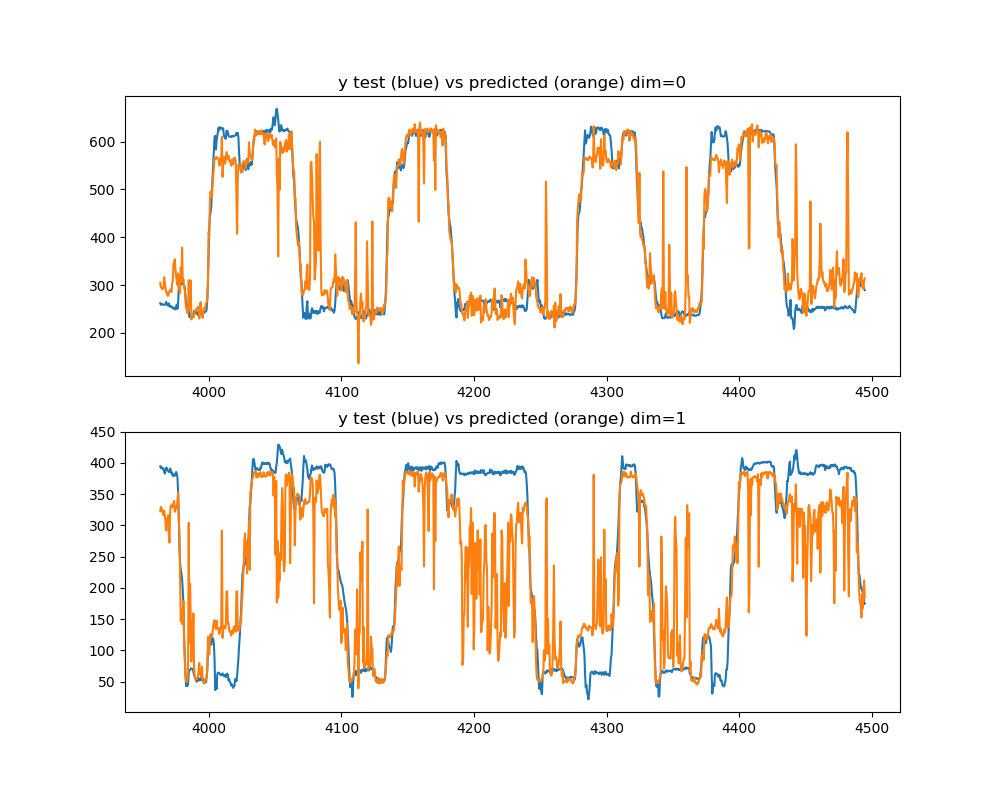
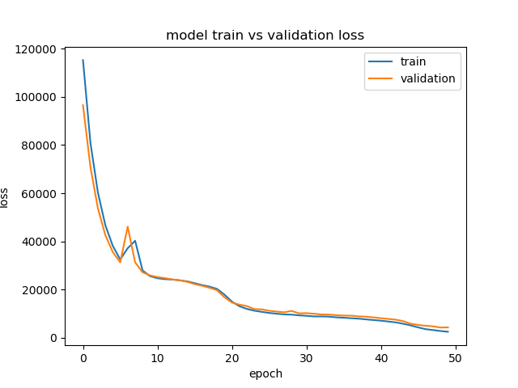

<!DOCTYPE html>
<!--[if IE 8]><html class="no-js lt-ie9" lang="en" > <![endif]-->
<!--[if gt IE 8]><!--> <html class="no-js" lang="en" > <!--<![endif]-->
<head>
  <meta charset="utf-8">
  
  <meta name="viewport" content="width=device-width, initial-scale=1.0">
  
  <title>Decoding position from firing rates with a LSTM recurrent neural network from Keras &mdash; mlneuro 1.0 documentation</title>
  

  
  
  
  

  

  
  
    

  

  <link rel="stylesheet" href="../../../_static/css/theme.css" type="text/css" />
  <link rel="stylesheet" href="../../../_static/pygments.css" type="text/css" />
  <link rel="stylesheet" href="../../../_static/gallery.css" type="text/css" />
    <link rel="index" title="Index" href="../../../genindex.html" />
    <link rel="search" title="Search" href="../../../search.html" />
    <link rel="next" title="Decoding position from firing rates with sklearn’s support gradient descent linear model" href="plot_sgd_multioutput.html" />
    <link rel="prev" title="Decoding single valued position from firing rates with a dense neural network" href="plot_basic_densenn.html" />
    <link href="../../../_static/style.css" rel="stylesheet" type="text/css">


  
  <script src="../../../_static/js/modernizr.min.js"></script>

</head>

<body class="wy-body-for-nav">

   
  <div class="wy-grid-for-nav">

    
    <nav data-toggle="wy-nav-shift" class="wy-nav-side">
      <div class="wy-side-scroll">
        <div class="wy-side-nav-search">
          

          
            <a href="../../../index.html" class="icon icon-home"> mlneuro
          

          
          </a>

          
            
            
          

          
<div role="search">
  <form id="rtd-search-form" class="wy-form" action="../../../search.html" method="get">
    <input type="text" name="q" placeholder="Search docs" />
    <input type="hidden" name="check_keywords" value="yes" />
    <input type="hidden" name="area" value="default" />
  </form>
</div>

          
        </div>

        <div class="wy-menu wy-menu-vertical" data-spy="affix" role="navigation" aria-label="main navigation">
          
            
            
              
            
            
              <ul class="current">
<li class="toctree-l1"><a class="reference internal" href="../../../guide.html">User Guide</a></li>
<li class="toctree-l1"><a class="reference internal" href="../../../api.html">API Reference</a></li>
<li class="toctree-l1 current"><a class="reference internal" href="../../../examples_head.html">Examples</a><ul class="current">
<li class="toctree-l2"><a class="reference internal" href="../clusterless/index.html">Clusterless decoding examples</a></li>
<li class="toctree-l2 current"><a class="reference internal" href="index.html">Clustered spike decoding examples</a><ul class="current">
<li class="toctree-l3"><a class="reference internal" href="plot_basic_densenn.html">Decoding single valued position from firing rates with a dense neural network</a></li>
<li class="toctree-l3 current"><a class="current reference internal" href="#">Decoding position from firing rates with a LSTM recurrent neural network from Keras</a><ul>
<li class="toctree-l4"><a class="reference internal" href="#preprocessing">Preprocessing</a></li>
<li class="toctree-l4"><a class="reference internal" href="#estimation">Estimation</a></li>
<li class="toctree-l4"><a class="reference internal" href="#plotting">Plotting</a></li>
</ul>
</li>
<li class="toctree-l3"><a class="reference internal" href="plot_sgd_multioutput.html">Decoding position from firing rates with sklearn’s support gradient descent linear model</a></li>
<li class="toctree-l3"><a class="reference internal" href="plot_custom_firing_rate_bins.html">Decoding position from firing rates where bins are different sizes and non-contiguous</a></li>
<li class="toctree-l3"><a class="reference internal" href="plot_binned_densenn.html">Decoding binned position probabilities from firing rates with a dense neural network</a></li>
<li class="toctree-l3"><a class="reference internal" href="plot_bayes_poisson.html">Decoding binned probabilties from firing rates with naive bayes inversion of poisson tuning curves</a></li>
<li class="toctree-l3"><a class="reference internal" href="plot_bayes_poisson_glm.html">Decoding binned position probabilties from firing rates with naive bayes inversion of a poisson GLM</a></li>
<li class="toctree-l3"><a class="reference internal" href="plot_regressor_comparison.html">Comparison of multiple regression techniques applied to clustered data</a></li>
</ul>
</li>
</ul>
</li>
</ul>

            
          
        </div>
      </div>
    </nav>

    <section data-toggle="wy-nav-shift" class="wy-nav-content-wrap">

      
      <nav class="wy-nav-top" aria-label="top navigation">
        
          <i data-toggle="wy-nav-top" class="fa fa-bars"></i>
          <a href="../../../index.html">mlneuro</a>
        
      </nav>


      <div class="wy-nav-content">
        
        <div class="rst-content">
        
          


<div role="navigation" aria-label="breadcrumbs navigation">

  <ul class="wy-breadcrumbs">
    
      <li><a href="../../../index.html">Docs</a> &raquo;</li>
        
          <li><a href="../../../examples_head.html">Examples</a> &raquo;</li>
        
          <li><a href="index.html">Clustered spike decoding examples</a> &raquo;</li>
        
      <li>Decoding position from firing rates with a LSTM recurrent neural network from Keras</li>
    
    
      <li class="wy-breadcrumbs-aside">
        
            
            <a href="../../../_sources/generated/examples/clustered/plot_recurrent_lstm.rst.txt" rel="nofollow"> View page source</a>
          
        
      </li>
    
  </ul>

  
  <hr/>
</div>
          <div role="main" class="document" itemscope="itemscope" itemtype="http://schema.org/Article">
           <div itemprop="articleBody">
            
  <div class="sphx-glr-download-link-note admonition note">
<p class="first admonition-title">Note</p>
<p class="last">Click <a class="reference internal" href="#sphx-glr-download-generated-examples-clustered-plot-recurrent-lstm-py"><span class="std std-ref">here</span></a> to download the full example code</p>
</div>
<div class="sphx-glr-example-title section" id="decoding-position-from-firing-rates-with-a-lstm-recurrent-neural-network-from-keras">
<span id="sphx-glr-generated-examples-clustered-plot-recurrent-lstm-py"></span><h1>Decoding position from firing rates with a LSTM recurrent neural network from Keras<a class="headerlink" href="#decoding-position-from-firing-rates-with-a-lstm-recurrent-neural-network-from-keras" title="Permalink to this headline">¶</a></h1>
<p>A recurrent neural network is used to fit firing rates over a sliding window of time bins
(here 5 bins at a time) to predict position.</p>
<div class="section" id="preprocessing">
<h2>Preprocessing<a class="headerlink" href="#preprocessing" title="Permalink to this headline">¶</a></h2>
<ol class="arabic simple">
<li>Time is binned over the range of the data</li>
</ol>
<p>2. Spike times and associated cell-ids are used to construct a firing-rate matrix
which is normalized to the maximum firing rate of the cell and centered on zero.
This matrix is not flattened (3-dimensional) to preserve the temporal structure
including several bins before and after the current time for the recurrent neural
network.
3. Stimulus values are retrieved at the spike times
4. Variables are split into independent training and test sets</p>
</div>
<div class="section" id="estimation">
<h2>Estimation<a class="headerlink" href="#estimation" title="Permalink to this headline">¶</a></h2>
<ol class="arabic simple">
<li>A LSTM regressor model is constructed with dropout to prevent overfitting and 50 epochs</li>
<li>A single value is estimated for each sample (per dimension)</li>
</ol>
</div>
<div class="section" id="plotting">
<h2>Plotting<a class="headerlink" href="#plotting" title="Permalink to this headline">¶</a></h2>
<p>The predicted value and true value are compared</p>
<ul class="sphx-glr-horizontal">
<li>
</li>
<li>
</li>
</ul>
<p class="sphx-glr-script-out">Out:</p>
<div class="sphx-glr-script-out highlight-none notranslate"><div class="highlight"><pre><span></span>Train on 5122 samples, validate on 904 samples
Epoch 1/50

  32/5122 [..............................] - ETA: 80s - loss: 148636.7188 - acc: 0.5000
  96/5122 [..............................] - ETA: 30s - loss: 136410.2734 - acc: 0.6458
 160/5122 [..............................] - ETA: 20s - loss: 138315.8266 - acc: 0.7438
 224/5122 [&gt;.............................] - ETA: 15s - loss: 138647.5748 - acc: 0.7812
 288/5122 [&gt;.............................] - ETA: 13s - loss: 142353.0321 - acc: 0.8194
 352/5122 [=&gt;............................] - ETA: 11s - loss: 144023.9411 - acc: 0.8466
 416/5122 [=&gt;............................] - ETA: 10s - loss: 142948.8395 - acc: 0.8606
 480/5122 [=&gt;............................] - ETA: 9s - loss: 143069.1339 - acc: 0.8667 
 544/5122 [==&gt;...........................] - ETA: 8s - loss: 142908.5418 - acc: 0.8713
 608/5122 [==&gt;...........................] - ETA: 8s - loss: 143404.9354 - acc: 0.8701
 672/5122 [==&gt;...........................] - ETA: 8s - loss: 143820.0606 - acc: 0.8705
 736/5122 [===&gt;..........................] - ETA: 7s - loss: 144231.7082 - acc: 0.8736
 800/5122 [===&gt;..........................] - ETA: 7s - loss: 143943.4841 - acc: 0.8725
 864/5122 [====&gt;.........................] - ETA: 7s - loss: 143202.1050 - acc: 0.8727
 928/5122 [====&gt;.........................] - ETA: 6s - loss: 142052.4453 - acc: 0.8685
 992/5122 [====&gt;.........................] - ETA: 6s - loss: 142635.6782 - acc: 0.8710
1056/5122 [=====&gt;........................] - ETA: 6s - loss: 141276.4377 - acc: 0.8712
1120/5122 [=====&gt;........................] - ETA: 6s - loss: 139566.8252 - acc: 0.8741
1184/5122 [=====&gt;........................] - ETA: 5s - loss: 138683.1166 - acc: 0.8758
1248/5122 [======&gt;.......................] - ETA: 5s - loss: 137043.3185 - acc: 0.8742
1312/5122 [======&gt;.......................] - ETA: 5s - loss: 136250.0212 - acc: 0.8727
1376/5122 [=======&gt;......................] - ETA: 5s - loss: 136511.1873 - acc: 0.8721
1440/5122 [=======&gt;......................] - ETA: 5s - loss: 136426.9932 - acc: 0.8750
1504/5122 [=======&gt;......................] - ETA: 5s - loss: 136328.4496 - acc: 0.8763
1568/5122 [========&gt;.....................] - ETA: 4s - loss: 135350.8401 - acc: 0.8776
1632/5122 [========&gt;.....................] - ETA: 4s - loss: 134932.9030 - acc: 0.8768
1696/5122 [========&gt;.....................] - ETA: 4s - loss: 134383.9729 - acc: 0.8768
1760/5122 [=========&gt;....................] - ETA: 4s - loss: 133360.9041 - acc: 0.8761
1824/5122 [=========&gt;....................] - ETA: 4s - loss: 133408.5149 - acc: 0.8783
1888/5122 [==========&gt;...................] - ETA: 4s - loss: 133272.2533 - acc: 0.8771
1952/5122 [==========&gt;...................] - ETA: 4s - loss: 132676.2628 - acc: 0.8776
2016/5122 [==========&gt;...................] - ETA: 4s - loss: 132660.9598 - acc: 0.8765
2080/5122 [===========&gt;..................] - ETA: 4s - loss: 132095.0762 - acc: 0.8774
2144/5122 [===========&gt;..................] - ETA: 3s - loss: 131587.8588 - acc: 0.8778
2208/5122 [===========&gt;..................] - ETA: 3s - loss: 130739.5149 - acc: 0.8795
2272/5122 [============&gt;.................] - ETA: 3s - loss: 129943.2599 - acc: 0.8790
2336/5122 [============&gt;.................] - ETA: 3s - loss: 129043.5623 - acc: 0.8801
2400/5122 [=============&gt;................] - ETA: 3s - loss: 128636.3722 - acc: 0.8800
2464/5122 [=============&gt;................] - ETA: 3s - loss: 127973.1764 - acc: 0.8811
2528/5122 [=============&gt;................] - ETA: 3s - loss: 127980.2632 - acc: 0.8833
2592/5122 [==============&gt;...............] - ETA: 3s - loss: 127417.5165 - acc: 0.8846
2656/5122 [==============&gt;...............] - ETA: 3s - loss: 127003.6595 - acc: 0.8855
2720/5122 [==============&gt;...............] - ETA: 3s - loss: 126819.3443 - acc: 0.8853
2784/5122 [===============&gt;..............] - ETA: 2s - loss: 126415.9628 - acc: 0.8861
2848/5122 [===============&gt;..............] - ETA: 2s - loss: 125922.6177 - acc: 0.8883
2912/5122 [================&gt;.............] - ETA: 2s - loss: 125957.4615 - acc: 0.8884
2976/5122 [================&gt;.............] - ETA: 2s - loss: 126014.9568 - acc: 0.8898
3040/5122 [================&gt;.............] - ETA: 2s - loss: 125795.6497 - acc: 0.8895
3104/5122 [=================&gt;............] - ETA: 2s - loss: 125305.0101 - acc: 0.8889
3168/5122 [=================&gt;............] - ETA: 2s - loss: 125081.7190 - acc: 0.8876
3232/5122 [=================&gt;............] - ETA: 2s - loss: 124649.7694 - acc: 0.8880
3296/5122 [==================&gt;...........] - ETA: 2s - loss: 124419.1251 - acc: 0.8890
3360/5122 [==================&gt;...........] - ETA: 2s - loss: 123921.4832 - acc: 0.8887
3424/5122 [===================&gt;..........] - ETA: 2s - loss: 123620.0771 - acc: 0.8890
3488/5122 [===================&gt;..........] - ETA: 2s - loss: 123120.7072 - acc: 0.8890
3552/5122 [===================&gt;..........] - ETA: 1s - loss: 123015.3459 - acc: 0.8877
3616/5122 [====================&gt;.........] - ETA: 1s - loss: 122910.4582 - acc: 0.8886
3680/5122 [====================&gt;.........] - ETA: 1s - loss: 122491.0872 - acc: 0.8883
3744/5122 [====================&gt;.........] - ETA: 1s - loss: 122085.8892 - acc: 0.8878
3808/5122 [=====================&gt;........] - ETA: 1s - loss: 121679.4865 - acc: 0.8892
3872/5122 [=====================&gt;........] - ETA: 1s - loss: 121047.1635 - acc: 0.8902
3936/5122 [======================&gt;.......] - ETA: 1s - loss: 120715.1723 - acc: 0.8900
4000/5122 [======================&gt;.......] - ETA: 1s - loss: 120297.9062 - acc: 0.8898
4064/5122 [======================&gt;.......] - ETA: 1s - loss: 120167.8256 - acc: 0.8905
4128/5122 [=======================&gt;......] - ETA: 1s - loss: 119705.8539 - acc: 0.8907
4192/5122 [=======================&gt;......] - ETA: 1s - loss: 119334.4420 - acc: 0.8912
4256/5122 [=======================&gt;......] - ETA: 1s - loss: 119089.8888 - acc: 0.8910
4320/5122 [========================&gt;.....] - ETA: 0s - loss: 118931.5267 - acc: 0.8910
4384/5122 [========================&gt;.....] - ETA: 0s - loss: 118628.2928 - acc: 0.8917
4448/5122 [=========================&gt;....] - ETA: 0s - loss: 118276.5344 - acc: 0.8919
4512/5122 [=========================&gt;....] - ETA: 0s - loss: 117772.3477 - acc: 0.8923
4576/5122 [=========================&gt;....] - ETA: 0s - loss: 117494.0437 - acc: 0.8927
4640/5122 [==========================&gt;...] - ETA: 0s - loss: 117377.7903 - acc: 0.8925
4704/5122 [==========================&gt;...] - ETA: 0s - loss: 117170.2868 - acc: 0.8935
4768/5122 [==========================&gt;...] - ETA: 0s - loss: 116851.1861 - acc: 0.8932
4832/5122 [===========================&gt;..] - ETA: 0s - loss: 116483.7103 - acc: 0.8932
4896/5122 [===========================&gt;..] - ETA: 0s - loss: 116127.5229 - acc: 0.8930
4960/5122 [============================&gt;.] - ETA: 0s - loss: 115833.8318 - acc: 0.8935
5024/5122 [============================&gt;.] - ETA: 0s - loss: 115649.5416 - acc: 0.8943
5088/5122 [============================&gt;.] - ETA: 0s - loss: 115369.0192 - acc: 0.8941
5122/5122 [==============================] - 6s - loss: 115216.3596 - acc: 0.8940 - val_loss: 96506.6798 - val_acc: 0.8916
Epoch 2/50

  32/5122 [..............................] - ETA: 5s - loss: 83169.5703 - acc: 0.9375
  96/5122 [..............................] - ETA: 5s - loss: 88031.5234 - acc: 0.9062
 160/5122 [..............................] - ETA: 5s - loss: 85956.1641 - acc: 0.8812
 224/5122 [&gt;.............................] - ETA: 5s - loss: 85175.3728 - acc: 0.8973
 288/5122 [&gt;.............................] - ETA: 5s - loss: 83892.6910 - acc: 0.8924
 352/5122 [=&gt;............................] - ETA: 5s - loss: 86307.3963 - acc: 0.9034
 416/5122 [=&gt;............................] - ETA: 5s - loss: 87483.3624 - acc: 0.9038
 480/5122 [=&gt;............................] - ETA: 4s - loss: 86157.3271 - acc: 0.9042
 544/5122 [==&gt;...........................] - ETA: 4s - loss: 87978.2008 - acc: 0.9026
 608/5122 [==&gt;...........................] - ETA: 4s - loss: 88873.0136 - acc: 0.9062
 672/5122 [==&gt;...........................] - ETA: 4s - loss: 90532.3988 - acc: 0.9077
 736/5122 [===&gt;..........................] - ETA: 4s - loss: 89379.7575 - acc: 0.9103
 800/5122 [===&gt;..........................] - ETA: 4s - loss: 90636.5475 - acc: 0.9100
 864/5122 [====&gt;.........................] - ETA: 4s - loss: 90738.7052 - acc: 0.9074
 928/5122 [====&gt;.........................] - ETA: 4s - loss: 89951.4065 - acc: 0.9030
 992/5122 [====&gt;.........................] - ETA: 4s - loss: 89658.7417 - acc: 0.8972
1056/5122 [=====&gt;........................] - ETA: 4s - loss: 89028.9112 - acc: 0.8977
1120/5122 [=====&gt;........................] - ETA: 4s - loss: 88592.7694 - acc: 0.8955
1184/5122 [=====&gt;........................] - ETA: 4s - loss: 88814.7394 - acc: 0.8953
1248/5122 [======&gt;.......................] - ETA: 4s - loss: 88229.6991 - acc: 0.8910
1312/5122 [======&gt;.......................] - ETA: 4s - loss: 87960.5796 - acc: 0.8933
1376/5122 [=======&gt;......................] - ETA: 4s - loss: 88775.1083 - acc: 0.8961
1440/5122 [=======&gt;......................] - ETA: 3s - loss: 87915.6385 - acc: 0.8965
1504/5122 [=======&gt;......................] - ETA: 3s - loss: 88324.1690 - acc: 0.8983
1568/5122 [========&gt;.....................] - ETA: 3s - loss: 88179.4965 - acc: 0.8967
1632/5122 [========&gt;.....................] - ETA: 3s - loss: 87718.4439 - acc: 0.8977
1696/5122 [========&gt;.....................] - ETA: 3s - loss: 88119.8069 - acc: 0.8992
1760/5122 [=========&gt;....................] - ETA: 3s - loss: 87449.7349 - acc: 0.8989
1824/5122 [=========&gt;....................] - ETA: 3s - loss: 87290.1719 - acc: 0.8991
1888/5122 [==========&gt;...................] - ETA: 3s - loss: 87529.2458 - acc: 0.9004
1952/5122 [==========&gt;...................] - ETA: 3s - loss: 87534.6192 - acc: 0.9022
2016/5122 [==========&gt;...................] - ETA: 3s - loss: 87227.6610 - acc: 0.9038
2080/5122 [===========&gt;..................] - ETA: 3s - loss: 87292.0627 - acc: 0.9024
2144/5122 [===========&gt;..................] - ETA: 3s - loss: 87606.1187 - acc: 0.9016
2208/5122 [===========&gt;..................] - ETA: 3s - loss: 87187.5844 - acc: 0.9013
2272/5122 [============&gt;.................] - ETA: 3s - loss: 86822.0998 - acc: 0.9018
2336/5122 [============&gt;.................] - ETA: 2s - loss: 86526.4948 - acc: 0.9024
2400/5122 [=============&gt;................] - ETA: 2s - loss: 86223.3853 - acc: 0.9021
2464/5122 [=============&gt;................] - ETA: 2s - loss: 85646.7698 - acc: 0.9010
2528/5122 [=============&gt;................] - ETA: 2s - loss: 85470.1959 - acc: 0.9023
2592/5122 [==============&gt;...............] - ETA: 2s - loss: 85306.5048 - acc: 0.9020
2656/5122 [==============&gt;...............] - ETA: 2s - loss: 85174.3925 - acc: 0.9029
2720/5122 [==============&gt;...............] - ETA: 2s - loss: 85350.3326 - acc: 0.9037
2784/5122 [===============&gt;..............] - ETA: 2s - loss: 85502.9116 - acc: 0.9041
2848/5122 [===============&gt;..............] - ETA: 2s - loss: 85441.1655 - acc: 0.9052
2912/5122 [================&gt;.............] - ETA: 2s - loss: 85254.4226 - acc: 0.9062
2976/5122 [================&gt;.............] - ETA: 2s - loss: 84848.6348 - acc: 0.9076
3040/5122 [================&gt;.............] - ETA: 2s - loss: 84512.6477 - acc: 0.9079
3104/5122 [=================&gt;............] - ETA: 2s - loss: 84161.0986 - acc: 0.9075
3168/5122 [=================&gt;............] - ETA: 2s - loss: 84237.4630 - acc: 0.9066
3232/5122 [=================&gt;............] - ETA: 2s - loss: 84117.7700 - acc: 0.9078
3296/5122 [==================&gt;...........] - ETA: 1s - loss: 84209.0985 - acc: 0.9078
3360/5122 [==================&gt;...........] - ETA: 1s - loss: 84161.6392 - acc: 0.9077
3424/5122 [===================&gt;..........] - ETA: 1s - loss: 83962.5419 - acc: 0.9071
3488/5122 [===================&gt;..........] - ETA: 1s - loss: 84031.1709 - acc: 0.9068
3552/5122 [===================&gt;..........] - ETA: 1s - loss: 83791.4171 - acc: 0.9062
3616/5122 [====================&gt;.........] - ETA: 1s - loss: 83656.0394 - acc: 0.9060
3680/5122 [====================&gt;.........] - ETA: 1s - loss: 83763.4193 - acc: 0.9049
3744/5122 [====================&gt;.........] - ETA: 1s - loss: 83437.3958 - acc: 0.9049
3808/5122 [=====================&gt;........] - ETA: 1s - loss: 83227.8301 - acc: 0.9052
3872/5122 [=====================&gt;........] - ETA: 1s - loss: 83129.6822 - acc: 0.9050
3936/5122 [======================&gt;.......] - ETA: 1s - loss: 82885.9897 - acc: 0.9055
4000/5122 [======================&gt;.......] - ETA: 1s - loss: 82908.1892 - acc: 0.9055
4064/5122 [======================&gt;.......] - ETA: 1s - loss: 82768.3714 - acc: 0.9058
4128/5122 [=======================&gt;......] - ETA: 1s - loss: 82833.5060 - acc: 0.9062
4192/5122 [=======================&gt;......] - ETA: 0s - loss: 82833.6311 - acc: 0.9053
4256/5122 [=======================&gt;......] - ETA: 0s - loss: 82632.8011 - acc: 0.9048
4320/5122 [========================&gt;.....] - ETA: 0s - loss: 82241.3964 - acc: 0.9046
4384/5122 [========================&gt;.....] - ETA: 0s - loss: 82213.8680 - acc: 0.9042
4448/5122 [=========================&gt;....] - ETA: 0s - loss: 82129.1088 - acc: 0.9033
4512/5122 [=========================&gt;....] - ETA: 0s - loss: 81968.6281 - acc: 0.9027
4576/5122 [=========================&gt;....] - ETA: 0s - loss: 81811.9567 - acc: 0.9032
4640/5122 [==========================&gt;...] - ETA: 0s - loss: 81875.6670 - acc: 0.9030
4704/5122 [==========================&gt;...] - ETA: 0s - loss: 81796.9588 - acc: 0.9024
4768/5122 [==========================&gt;...] - ETA: 0s - loss: 81747.7213 - acc: 0.9018
4832/5122 [===========================&gt;..] - ETA: 0s - loss: 81639.7443 - acc: 0.9025
4896/5122 [===========================&gt;..] - ETA: 0s - loss: 81377.2898 - acc: 0.9013
4960/5122 [============================&gt;.] - ETA: 0s - loss: 81319.7725 - acc: 0.9018
5024/5122 [============================&gt;.] - ETA: 0s - loss: 81085.5002 - acc: 0.9009
5088/5122 [============================&gt;.] - ETA: 0s - loss: 80962.1068 - acc: 0.9007
5122/5122 [==============================] - 5s - loss: 80885.1879 - acc: 0.9012 - val_loss: 70777.1942 - val_acc: 0.8916
Epoch 3/50

  32/5122 [..............................] - ETA: 5s - loss: 63859.7344 - acc: 1.0000
  96/5122 [..............................] - ETA: 5s - loss: 68314.2708 - acc: 0.9688
 160/5122 [..............................] - ETA: 5s - loss: 70924.5000 - acc: 0.9563
 224/5122 [&gt;.............................] - ETA: 5s - loss: 71188.4431 - acc: 0.9509
 288/5122 [&gt;.............................] - ETA: 5s - loss: 70323.2791 - acc: 0.9444
 352/5122 [=&gt;............................] - ETA: 5s - loss: 71593.5586 - acc: 0.9403
 416/5122 [=&gt;............................] - ETA: 5s - loss: 70957.1157 - acc: 0.9351
 480/5122 [=&gt;............................] - ETA: 4s - loss: 70850.0919 - acc: 0.9271
 544/5122 [==&gt;...........................] - ETA: 4s - loss: 71172.3711 - acc: 0.9246
 608/5122 [==&gt;...........................] - ETA: 4s - loss: 70539.8822 - acc: 0.9260
 672/5122 [==&gt;...........................] - ETA: 4s - loss: 71094.9630 - acc: 0.9196
 736/5122 [===&gt;..........................] - ETA: 4s - loss: 70804.4207 - acc: 0.9171
 800/5122 [===&gt;..........................] - ETA: 4s - loss: 70764.3042 - acc: 0.9163
 864/5122 [====&gt;.........................] - ETA: 4s - loss: 70371.9780 - acc: 0.9167
 928/5122 [====&gt;.........................] - ETA: 4s - loss: 70045.3552 - acc: 0.9138
 992/5122 [====&gt;.........................] - ETA: 4s - loss: 69733.5725 - acc: 0.9113
1056/5122 [=====&gt;........................] - ETA: 4s - loss: 69921.7575 - acc: 0.9110
1120/5122 [=====&gt;........................] - ETA: 4s - loss: 69057.9596 - acc: 0.9107
1184/5122 [=====&gt;........................] - ETA: 4s - loss: 68553.1529 - acc: 0.9079
1248/5122 [======&gt;.......................] - ETA: 4s - loss: 68250.3899 - acc: 0.9071
1312/5122 [======&gt;.......................] - ETA: 4s - loss: 67616.8388 - acc: 0.9047
1376/5122 [=======&gt;......................] - ETA: 3s - loss: 66956.2278 - acc: 0.9041
1440/5122 [=======&gt;......................] - ETA: 3s - loss: 66769.3957 - acc: 0.9056
1504/5122 [=======&gt;......................] - ETA: 3s - loss: 66663.1129 - acc: 0.9089
1568/5122 [========&gt;.....................] - ETA: 3s - loss: 66703.3830 - acc: 0.9107
1632/5122 [========&gt;.....................] - ETA: 3s - loss: 66331.7469 - acc: 0.9105
1696/5122 [========&gt;.....................] - ETA: 3s - loss: 66610.5004 - acc: 0.9098
1760/5122 [=========&gt;....................] - ETA: 3s - loss: 66769.3615 - acc: 0.9085
1824/5122 [=========&gt;....................] - ETA: 3s - loss: 66644.2196 - acc: 0.9084
1888/5122 [==========&gt;...................] - ETA: 3s - loss: 66494.3894 - acc: 0.9078
1952/5122 [==========&gt;...................] - ETA: 3s - loss: 66306.4400 - acc: 0.9062
2016/5122 [==========&gt;...................] - ETA: 3s - loss: 66126.3153 - acc: 0.9038
2080/5122 [===========&gt;..................] - ETA: 3s - loss: 65762.1224 - acc: 0.9019
2144/5122 [===========&gt;..................] - ETA: 3s - loss: 65824.2030 - acc: 0.9016
2208/5122 [===========&gt;..................] - ETA: 3s - loss: 65913.3138 - acc: 0.9017
2272/5122 [============&gt;.................] - ETA: 2s - loss: 65497.6766 - acc: 0.9023
2336/5122 [============&gt;.................] - ETA: 2s - loss: 65278.8344 - acc: 0.9028
2400/5122 [=============&gt;................] - ETA: 2s - loss: 65074.2226 - acc: 0.9038
2464/5122 [=============&gt;................] - ETA: 2s - loss: 64814.3695 - acc: 0.9026
2528/5122 [=============&gt;................] - ETA: 2s - loss: 64753.5682 - acc: 0.9031
2592/5122 [==============&gt;...............] - ETA: 2s - loss: 64818.4513 - acc: 0.9043
2656/5122 [==============&gt;...............] - ETA: 2s - loss: 64746.6170 - acc: 0.9025
2720/5122 [==============&gt;...............] - ETA: 2s - loss: 64565.1295 - acc: 0.9015
2784/5122 [===============&gt;..............] - ETA: 2s - loss: 64288.3055 - acc: 0.9012
2848/5122 [===============&gt;..............] - ETA: 2s - loss: 64241.1074 - acc: 0.9020
2912/5122 [================&gt;.............] - ETA: 2s - loss: 64056.7596 - acc: 0.9035
2976/5122 [================&gt;.............] - ETA: 2s - loss: 63928.1072 - acc: 0.9026
3040/5122 [================&gt;.............] - ETA: 2s - loss: 63940.0988 - acc: 0.9033
3104/5122 [=================&gt;............] - ETA: 2s - loss: 63937.4516 - acc: 0.9043
3168/5122 [=================&gt;............] - ETA: 2s - loss: 63746.3459 - acc: 0.9034
3232/5122 [=================&gt;............] - ETA: 1s - loss: 63568.6264 - acc: 0.9028
3296/5122 [==================&gt;...........] - ETA: 1s - loss: 63379.4379 - acc: 0.9026
3360/5122 [==================&gt;...........] - ETA: 1s - loss: 63190.8067 - acc: 0.9024
3424/5122 [===================&gt;..........] - ETA: 1s - loss: 63192.8099 - acc: 0.9036
3488/5122 [===================&gt;..........] - ETA: 1s - loss: 63034.4056 - acc: 0.9037
3552/5122 [===================&gt;..........] - ETA: 1s - loss: 62928.6724 - acc: 0.9032
3616/5122 [====================&gt;.........] - ETA: 1s - loss: 62741.3145 - acc: 0.9049
3680/5122 [====================&gt;.........] - ETA: 1s - loss: 62391.8432 - acc: 0.9043
3744/5122 [====================&gt;.........] - ETA: 1s - loss: 62454.0175 - acc: 0.9049
3808/5122 [=====================&gt;........] - ETA: 1s - loss: 62341.5519 - acc: 0.9055
3872/5122 [=====================&gt;........] - ETA: 1s - loss: 62293.1396 - acc: 0.9044
3936/5122 [======================&gt;.......] - ETA: 1s - loss: 62161.4825 - acc: 0.9050
4000/5122 [======================&gt;.......] - ETA: 1s - loss: 61985.0327 - acc: 0.9050
4064/5122 [======================&gt;.......] - ETA: 1s - loss: 61854.7596 - acc: 0.9053
4128/5122 [=======================&gt;......] - ETA: 1s - loss: 61755.6021 - acc: 0.9053
4192/5122 [=======================&gt;......] - ETA: 0s - loss: 61729.9149 - acc: 0.9048
4256/5122 [=======================&gt;......] - ETA: 0s - loss: 61450.3173 - acc: 0.9044
4320/5122 [========================&gt;.....] - ETA: 0s - loss: 61461.8826 - acc: 0.9046
4384/5122 [========================&gt;.....] - ETA: 0s - loss: 61441.9903 - acc: 0.9047
4448/5122 [=========================&gt;....] - ETA: 0s - loss: 61325.3396 - acc: 0.9038
4512/5122 [=========================&gt;....] - ETA: 0s - loss: 61163.0496 - acc: 0.9031
4576/5122 [=========================&gt;....] - ETA: 0s - loss: 61062.6709 - acc: 0.9028
4640/5122 [==========================&gt;...] - ETA: 0s - loss: 60929.0638 - acc: 0.9026
4704/5122 [==========================&gt;...] - ETA: 0s - loss: 60776.1519 - acc: 0.9022
4768/5122 [==========================&gt;...] - ETA: 0s - loss: 60808.9987 - acc: 0.9023
4832/5122 [===========================&gt;..] - ETA: 0s - loss: 60762.7991 - acc: 0.9027
4896/5122 [===========================&gt;..] - ETA: 0s - loss: 60612.3138 - acc: 0.9028
4960/5122 [============================&gt;.] - ETA: 0s - loss: 60554.9487 - acc: 0.9022
5024/5122 [============================&gt;.] - ETA: 0s - loss: 60471.7067 - acc: 0.9019
5088/5122 [============================&gt;.] - ETA: 0s - loss: 60374.6529 - acc: 0.9015
5122/5122 [==============================] - 5s - loss: 60303.2556 - acc: 0.9012 - val_loss: 53744.5179 - val_acc: 0.8916
Epoch 4/50

  32/5122 [..............................] - ETA: 5s - loss: 39321.2969 - acc: 0.9375
  96/5122 [..............................] - ETA: 5s - loss: 47677.7461 - acc: 0.9271
 160/5122 [..............................] - ETA: 5s - loss: 51602.1555 - acc: 0.9375
 224/5122 [&gt;.............................] - ETA: 5s - loss: 51315.6071 - acc: 0.9107
 288/5122 [&gt;.............................] - ETA: 5s - loss: 52702.1662 - acc: 0.9167
 352/5122 [=&gt;............................] - ETA: 4s - loss: 53752.9822 - acc: 0.9091
 416/5122 [=&gt;............................] - ETA: 4s - loss: 52929.1641 - acc: 0.9111
 480/5122 [=&gt;............................] - ETA: 4s - loss: 53633.2260 - acc: 0.9146
 544/5122 [==&gt;...........................] - ETA: 4s - loss: 53008.6135 - acc: 0.9154
 608/5122 [==&gt;...........................] - ETA: 4s - loss: 53482.0212 - acc: 0.9178
 672/5122 [==&gt;...........................] - ETA: 4s - loss: 52834.1217 - acc: 0.9211
 736/5122 [===&gt;..........................] - ETA: 4s - loss: 52183.5341 - acc: 0.9130
 800/5122 [===&gt;..........................] - ETA: 4s - loss: 52205.2203 - acc: 0.9125
 864/5122 [====&gt;.........................] - ETA: 4s - loss: 52100.1662 - acc: 0.9144
 928/5122 [====&gt;.........................] - ETA: 4s - loss: 52273.7411 - acc: 0.9159
 992/5122 [====&gt;.........................] - ETA: 4s - loss: 51861.9343 - acc: 0.9133
1056/5122 [=====&gt;........................] - ETA: 4s - loss: 51547.4305 - acc: 0.9053
1120/5122 [=====&gt;........................] - ETA: 4s - loss: 51348.5925 - acc: 0.9062
1184/5122 [=====&gt;........................] - ETA: 4s - loss: 51243.1069 - acc: 0.9062
1248/5122 [======&gt;.......................] - ETA: 4s - loss: 50712.1409 - acc: 0.9062
1312/5122 [======&gt;.......................] - ETA: 3s - loss: 50803.7611 - acc: 0.9040
1376/5122 [=======&gt;......................] - ETA: 3s - loss: 50635.4239 - acc: 0.9055
1440/5122 [=======&gt;......................] - ETA: 3s - loss: 50638.7174 - acc: 0.9049
1504/5122 [=======&gt;......................] - ETA: 3s - loss: 50384.4645 - acc: 0.9069
1568/5122 [========&gt;.....................] - ETA: 3s - loss: 50532.9362 - acc: 0.9075
1632/5122 [========&gt;.....................] - ETA: 3s - loss: 50398.7836 - acc: 0.9056
1696/5122 [========&gt;.....................] - ETA: 3s - loss: 50364.1458 - acc: 0.9068
1760/5122 [=========&gt;....................] - ETA: 3s - loss: 49926.0442 - acc: 0.9068
1824/5122 [=========&gt;....................] - ETA: 3s - loss: 49662.0171 - acc: 0.9046
1888/5122 [==========&gt;...................] - ETA: 3s - loss: 49597.8677 - acc: 0.9052
1952/5122 [==========&gt;...................] - ETA: 3s - loss: 49329.1970 - acc: 0.9047
2016/5122 [==========&gt;...................] - ETA: 3s - loss: 49274.3052 - acc: 0.9043
2080/5122 [===========&gt;..................] - ETA: 3s - loss: 49309.2302 - acc: 0.9048
2144/5122 [===========&gt;..................] - ETA: 3s - loss: 49099.2186 - acc: 0.9049
2208/5122 [===========&gt;..................] - ETA: 3s - loss: 49149.0460 - acc: 0.9067
2272/5122 [============&gt;.................] - ETA: 2s - loss: 48804.4490 - acc: 0.9080
2336/5122 [============&gt;.................] - ETA: 2s - loss: 48543.5391 - acc: 0.9075
2400/5122 [=============&gt;................] - ETA: 2s - loss: 48597.5431 - acc: 0.9092
2464/5122 [=============&gt;................] - ETA: 2s - loss: 48726.5638 - acc: 0.9103
2528/5122 [=============&gt;................] - ETA: 2s - loss: 48850.1295 - acc: 0.9086
2592/5122 [==============&gt;...............] - ETA: 2s - loss: 48907.2022 - acc: 0.9093
2656/5122 [==============&gt;...............] - ETA: 2s - loss: 48803.9049 - acc: 0.9066
2720/5122 [==============&gt;...............] - ETA: 2s - loss: 48799.7738 - acc: 0.9070
2784/5122 [===============&gt;..............] - ETA: 2s - loss: 48726.8622 - acc: 0.9062
2848/5122 [===============&gt;..............] - ETA: 2s - loss: 48864.6951 - acc: 0.9059
2912/5122 [================&gt;.............] - ETA: 2s - loss: 48873.7184 - acc: 0.9066
2976/5122 [================&gt;.............] - ETA: 2s - loss: 48569.6348 - acc: 0.9062
3040/5122 [================&gt;.............] - ETA: 2s - loss: 48458.9204 - acc: 0.9066
3104/5122 [=================&gt;............] - ETA: 2s - loss: 48411.0699 - acc: 0.9066
3168/5122 [=================&gt;............] - ETA: 2s - loss: 48351.8857 - acc: 0.9062
3232/5122 [=================&gt;............] - ETA: 1s - loss: 48197.9698 - acc: 0.9050
3296/5122 [==================&gt;...........] - ETA: 1s - loss: 48030.6242 - acc: 0.9053
3360/5122 [==================&gt;...........] - ETA: 1s - loss: 48031.9699 - acc: 0.9042
3424/5122 [===================&gt;..........] - ETA: 1s - loss: 47967.3568 - acc: 0.9036
3488/5122 [===================&gt;..........] - ETA: 1s - loss: 47899.1066 - acc: 0.9042
3552/5122 [===================&gt;..........] - ETA: 1s - loss: 47882.7229 - acc: 0.9043
3616/5122 [====================&gt;.........] - ETA: 1s - loss: 47927.9339 - acc: 0.9038
3680/5122 [====================&gt;.........] - ETA: 1s - loss: 47881.8565 - acc: 0.9035
3744/5122 [====================&gt;.........] - ETA: 1s - loss: 47967.8177 - acc: 0.9038
3808/5122 [=====================&gt;........] - ETA: 1s - loss: 47863.5725 - acc: 0.9047
3872/5122 [=====================&gt;........] - ETA: 1s - loss: 47834.6322 - acc: 0.9052
3936/5122 [======================&gt;.......] - ETA: 1s - loss: 47819.3069 - acc: 0.9057
4000/5122 [======================&gt;.......] - ETA: 1s - loss: 47706.2052 - acc: 0.9052
4064/5122 [======================&gt;.......] - ETA: 1s - loss: 47637.3998 - acc: 0.9050
4128/5122 [=======================&gt;......] - ETA: 1s - loss: 47560.8884 - acc: 0.9038
4192/5122 [=======================&gt;......] - ETA: 0s - loss: 47477.3435 - acc: 0.9024
4256/5122 [=======================&gt;......] - ETA: 0s - loss: 47456.9600 - acc: 0.9025
4320/5122 [========================&gt;.....] - ETA: 0s - loss: 47317.5095 - acc: 0.9030
4384/5122 [========================&gt;.....] - ETA: 0s - loss: 47239.4751 - acc: 0.9024
4448/5122 [=========================&gt;....] - ETA: 0s - loss: 47261.3272 - acc: 0.9031
4512/5122 [=========================&gt;....] - ETA: 0s - loss: 47214.3790 - acc: 0.9018
4576/5122 [=========================&gt;....] - ETA: 0s - loss: 47199.8363 - acc: 0.9010
4640/5122 [==========================&gt;...] - ETA: 0s - loss: 47204.0875 - acc: 0.9015
4704/5122 [==========================&gt;...] - ETA: 0s - loss: 47093.2863 - acc: 0.9005
4768/5122 [==========================&gt;...] - ETA: 0s - loss: 46935.9666 - acc: 0.9008
4832/5122 [===========================&gt;..] - ETA: 0s - loss: 46891.3231 - acc: 0.9009
4896/5122 [===========================&gt;..] - ETA: 0s - loss: 46879.9631 - acc: 0.9011
4960/5122 [============================&gt;.] - ETA: 0s - loss: 46731.2729 - acc: 0.9008
5024/5122 [============================&gt;.] - ETA: 0s - loss: 46675.9659 - acc: 0.9005
5088/5122 [============================&gt;.] - ETA: 0s - loss: 46679.6132 - acc: 0.9006
5122/5122 [==============================] - 5s - loss: 46712.5933 - acc: 0.9012 - val_loss: 42599.4243 - val_acc: 0.8916
Epoch 5/50

  32/5122 [..............................] - ETA: 5s - loss: 43126.0781 - acc: 0.9375
  96/5122 [..............................] - ETA: 5s - loss: 46575.8034 - acc: 0.9375
 160/5122 [..............................] - ETA: 5s - loss: 46235.7086 - acc: 0.9125
 224/5122 [&gt;.............................] - ETA: 5s - loss: 44712.2539 - acc: 0.9152
 288/5122 [&gt;.............................] - ETA: 5s - loss: 44022.7839 - acc: 0.9201
 352/5122 [=&gt;............................] - ETA: 5s - loss: 42569.4062 - acc: 0.9148
 416/5122 [=&gt;............................] - ETA: 5s - loss: 43416.7620 - acc: 0.9207
 480/5122 [=&gt;............................] - ETA: 4s - loss: 43671.6026 - acc: 0.9208
 544/5122 [==&gt;...........................] - ETA: 4s - loss: 43501.5591 - acc: 0.9191
 608/5122 [==&gt;...........................] - ETA: 4s - loss: 43590.1275 - acc: 0.9243
 672/5122 [==&gt;...........................] - ETA: 4s - loss: 43131.0229 - acc: 0.9211
 736/5122 [===&gt;..........................] - ETA: 4s - loss: 42882.6834 - acc: 0.9198
 800/5122 [===&gt;..........................] - ETA: 4s - loss: 43065.6741 - acc: 0.9163
 864/5122 [====&gt;.........................] - ETA: 4s - loss: 43253.7736 - acc: 0.9178
 928/5122 [====&gt;.........................] - ETA: 4s - loss: 42918.3287 - acc: 0.9084
 992/5122 [====&gt;.........................] - ETA: 4s - loss: 43076.4748 - acc: 0.9093
1056/5122 [=====&gt;........................] - ETA: 4s - loss: 43145.2466 - acc: 0.9129
1120/5122 [=====&gt;........................] - ETA: 4s - loss: 42804.7670 - acc: 0.9170
1184/5122 [=====&gt;........................] - ETA: 4s - loss: 42368.4653 - acc: 0.9172
1248/5122 [======&gt;.......................] - ETA: 4s - loss: 41934.2858 - acc: 0.9151
1312/5122 [======&gt;.......................] - ETA: 3s - loss: 41899.0554 - acc: 0.9123
1376/5122 [=======&gt;......................] - ETA: 3s - loss: 41802.9410 - acc: 0.9099
1440/5122 [=======&gt;......................] - ETA: 3s - loss: 41894.2722 - acc: 0.9104
1504/5122 [=======&gt;......................] - ETA: 3s - loss: 41531.2692 - acc: 0.9096
1568/5122 [========&gt;.....................] - ETA: 3s - loss: 41593.0218 - acc: 0.9094
1632/5122 [========&gt;.....................] - ETA: 3s - loss: 41517.4995 - acc: 0.9087
1696/5122 [========&gt;.....................] - ETA: 3s - loss: 41388.3968 - acc: 0.9092
1760/5122 [=========&gt;....................] - ETA: 3s - loss: 41335.5071 - acc: 0.9102
1824/5122 [=========&gt;....................] - ETA: 3s - loss: 41075.3869 - acc: 0.9068
1888/5122 [==========&gt;...................] - ETA: 3s - loss: 40998.5591 - acc: 0.9068
1952/5122 [==========&gt;...................] - ETA: 3s - loss: 40745.1594 - acc: 0.9052
2016/5122 [==========&gt;...................] - ETA: 3s - loss: 40709.8007 - acc: 0.9033
2080/5122 [===========&gt;..................] - ETA: 3s - loss: 40676.6321 - acc: 0.9024
2144/5122 [===========&gt;..................] - ETA: 3s - loss: 40665.2987 - acc: 0.9039
2208/5122 [===========&gt;..................] - ETA: 3s - loss: 40601.0185 - acc: 0.9013
2272/5122 [============&gt;.................] - ETA: 2s - loss: 40562.9203 - acc: 0.9018
2336/5122 [============&gt;.................] - ETA: 2s - loss: 40612.8010 - acc: 0.8998
2400/5122 [=============&gt;................] - ETA: 2s - loss: 40573.4879 - acc: 0.9000
2464/5122 [=============&gt;................] - ETA: 2s - loss: 40373.5936 - acc: 0.8998
2528/5122 [=============&gt;................] - ETA: 2s - loss: 40302.7660 - acc: 0.8995
2592/5122 [==============&gt;...............] - ETA: 2s - loss: 40250.4779 - acc: 0.8966
2656/5122 [==============&gt;...............] - ETA: 2s - loss: 40096.0082 - acc: 0.8972
2720/5122 [==============&gt;...............] - ETA: 2s - loss: 40020.3629 - acc: 0.8978
2784/5122 [===============&gt;..............] - ETA: 2s - loss: 39879.7532 - acc: 0.8969
2848/5122 [===============&gt;..............] - ETA: 2s - loss: 40015.2920 - acc: 0.8968
2912/5122 [================&gt;.............] - ETA: 2s - loss: 40039.1178 - acc: 0.8959
2976/5122 [================&gt;.............] - ETA: 2s - loss: 40039.9810 - acc: 0.8952
3040/5122 [================&gt;.............] - ETA: 2s - loss: 40053.2360 - acc: 0.8934
3104/5122 [=================&gt;............] - ETA: 2s - loss: 39977.4591 - acc: 0.8930
3168/5122 [=================&gt;............] - ETA: 2s - loss: 39922.1159 - acc: 0.8936
3232/5122 [=================&gt;............] - ETA: 1s - loss: 39824.8966 - acc: 0.8939
3296/5122 [==================&gt;...........] - ETA: 1s - loss: 39812.9659 - acc: 0.8947
3360/5122 [==================&gt;...........] - ETA: 1s - loss: 39682.9572 - acc: 0.8949
3424/5122 [===================&gt;..........] - ETA: 1s - loss: 39704.4189 - acc: 0.8960
3488/5122 [===================&gt;..........] - ETA: 1s - loss: 39671.8075 - acc: 0.8948
3552/5122 [===================&gt;..........] - ETA: 1s - loss: 39496.4938 - acc: 0.8939
3616/5122 [====================&gt;.........] - ETA: 1s - loss: 39356.9279 - acc: 0.8944
3680/5122 [====================&gt;.........] - ETA: 1s - loss: 39291.1311 - acc: 0.8948
3744/5122 [====================&gt;.........] - ETA: 1s - loss: 39145.2100 - acc: 0.8937
3808/5122 [=====================&gt;........] - ETA: 1s - loss: 39044.1256 - acc: 0.8939
3872/5122 [=====================&gt;........] - ETA: 1s - loss: 39047.1316 - acc: 0.8939
3936/5122 [======================&gt;.......] - ETA: 1s - loss: 38918.7515 - acc: 0.8938
4000/5122 [======================&gt;.......] - ETA: 1s - loss: 39023.2999 - acc: 0.8948
4064/5122 [======================&gt;.......] - ETA: 1s - loss: 38936.4076 - acc: 0.8947
4128/5122 [=======================&gt;......] - ETA: 1s - loss: 38887.6926 - acc: 0.8946
4192/5122 [=======================&gt;......] - ETA: 0s - loss: 38859.8898 - acc: 0.8953
4256/5122 [=======================&gt;......] - ETA: 0s - loss: 38738.7488 - acc: 0.8957
4320/5122 [========================&gt;.....] - ETA: 0s - loss: 38592.2473 - acc: 0.8947
4384/5122 [========================&gt;.....] - ETA: 0s - loss: 38638.4311 - acc: 0.8948
4448/5122 [=========================&gt;....] - ETA: 0s - loss: 38554.1126 - acc: 0.8941
4512/5122 [=========================&gt;....] - ETA: 0s - loss: 38564.7787 - acc: 0.8945
4576/5122 [=========================&gt;....] - ETA: 0s - loss: 38577.5235 - acc: 0.8947
4640/5122 [==========================&gt;...] - ETA: 0s - loss: 38544.3547 - acc: 0.8950
4704/5122 [==========================&gt;...] - ETA: 0s - loss: 38485.5993 - acc: 0.8952
4768/5122 [==========================&gt;...] - ETA: 0s - loss: 38380.5674 - acc: 0.8949
4832/5122 [===========================&gt;..] - ETA: 0s - loss: 38387.5854 - acc: 0.8940
4896/5122 [===========================&gt;..] - ETA: 0s - loss: 38331.4462 - acc: 0.8940
4960/5122 [============================&gt;.] - ETA: 0s - loss: 38317.2567 - acc: 0.8944
5024/5122 [============================&gt;.] - ETA: 0s - loss: 38315.3808 - acc: 0.8949
5088/5122 [============================&gt;.] - ETA: 0s - loss: 38285.3662 - acc: 0.8950
5122/5122 [==============================] - 5s - loss: 38156.5640 - acc: 0.8952 - val_loss: 35580.3656 - val_acc: 0.8838
Epoch 6/50

  32/5122 [..............................] - ETA: 5s - loss: 33632.1094 - acc: 0.9375
  96/5122 [..............................] - ETA: 5s - loss: 35302.2812 - acc: 0.9167
 160/5122 [..............................] - ETA: 5s - loss: 34789.7605 - acc: 0.8688
 224/5122 [&gt;.............................] - ETA: 5s - loss: 35383.0326 - acc: 0.8616
 288/5122 [&gt;.............................] - ETA: 4s - loss: 34534.5658 - acc: 0.8750
 352/5122 [=&gt;............................] - ETA: 4s - loss: 34753.0392 - acc: 0.8750
 416/5122 [=&gt;............................] - ETA: 4s - loss: 35518.5047 - acc: 0.8822
 480/5122 [=&gt;............................] - ETA: 4s - loss: 35364.4483 - acc: 0.8812
 544/5122 [==&gt;...........................] - ETA: 4s - loss: 35848.7421 - acc: 0.8860
 608/5122 [==&gt;...........................] - ETA: 4s - loss: 36156.8854 - acc: 0.8898
 672/5122 [==&gt;...........................] - ETA: 4s - loss: 36194.5899 - acc: 0.8943
 736/5122 [===&gt;..........................] - ETA: 4s - loss: 35964.6394 - acc: 0.8886
 800/5122 [===&gt;..........................] - ETA: 4s - loss: 35678.9715 - acc: 0.8925
 864/5122 [====&gt;.........................] - ETA: 4s - loss: 35563.1787 - acc: 0.8924
 928/5122 [====&gt;.........................] - ETA: 4s - loss: 35353.6528 - acc: 0.8987
 992/5122 [====&gt;.........................] - ETA: 4s - loss: 35114.1940 - acc: 0.8992
1056/5122 [=====&gt;........................] - ETA: 4s - loss: 35099.8960 - acc: 0.9025
1120/5122 [=====&gt;........................] - ETA: 4s - loss: 35150.4944 - acc: 0.9054
1184/5122 [=====&gt;........................] - ETA: 4s - loss: 35100.2648 - acc: 0.9037
1248/5122 [======&gt;.......................] - ETA: 4s - loss: 34917.5317 - acc: 0.9006
1312/5122 [======&gt;.......................] - ETA: 3s - loss: 34857.2145 - acc: 0.9032
1376/5122 [=======&gt;......................] - ETA: 3s - loss: 34800.1121 - acc: 0.8997
1440/5122 [=======&gt;......................] - ETA: 3s - loss: 34751.2895 - acc: 0.8993
1504/5122 [=======&gt;......................] - ETA: 3s - loss: 34522.3755 - acc: 0.8989
1568/5122 [========&gt;.....................] - ETA: 3s - loss: 34408.7771 - acc: 0.8973
1632/5122 [========&gt;.....................] - ETA: 3s - loss: 34261.9980 - acc: 0.8964
1696/5122 [========&gt;.....................] - ETA: 3s - loss: 34098.2747 - acc: 0.8962
1760/5122 [=========&gt;....................] - ETA: 3s - loss: 34041.1734 - acc: 0.8960
1824/5122 [=========&gt;....................] - ETA: 3s - loss: 34004.7381 - acc: 0.8969
1888/5122 [==========&gt;...................] - ETA: 3s - loss: 33996.2173 - acc: 0.8983
1952/5122 [==========&gt;...................] - ETA: 3s - loss: 33729.1505 - acc: 0.8970
2016/5122 [==========&gt;...................] - ETA: 3s - loss: 33751.6736 - acc: 0.8973
2080/5122 [===========&gt;..................] - ETA: 3s - loss: 33881.9926 - acc: 0.8986
2144/5122 [===========&gt;..................] - ETA: 3s - loss: 33936.7300 - acc: 0.8983
2208/5122 [===========&gt;..................] - ETA: 3s - loss: 33964.3446 - acc: 0.8981
2272/5122 [============&gt;.................] - ETA: 2s - loss: 33712.6610 - acc: 0.8970
2336/5122 [============&gt;.................] - ETA: 2s - loss: 33715.8920 - acc: 0.8964
2400/5122 [=============&gt;................] - ETA: 2s - loss: 33841.2095 - acc: 0.8962
2464/5122 [=============&gt;................] - ETA: 2s - loss: 33925.0228 - acc: 0.8973
2528/5122 [=============&gt;................] - ETA: 2s - loss: 33878.0634 - acc: 0.8960
2592/5122 [==============&gt;...............] - ETA: 2s - loss: 33964.7843 - acc: 0.8954
2656/5122 [==============&gt;...............] - ETA: 2s - loss: 33863.7371 - acc: 0.8938
2720/5122 [==============&gt;...............] - ETA: 2s - loss: 33747.8104 - acc: 0.8941
2784/5122 [===============&gt;..............] - ETA: 2s - loss: 33777.3842 - acc: 0.8955
2848/5122 [===============&gt;..............] - ETA: 2s - loss: 33669.8063 - acc: 0.8940
2912/5122 [================&gt;.............] - ETA: 2s - loss: 33566.5839 - acc: 0.8942
2976/5122 [================&gt;.............] - ETA: 2s - loss: 33536.3506 - acc: 0.8945
3040/5122 [================&gt;.............] - ETA: 2s - loss: 33542.8124 - acc: 0.8957
3104/5122 [=================&gt;............] - ETA: 2s - loss: 33515.9066 - acc: 0.8953
3168/5122 [=================&gt;............] - ETA: 2s - loss: 33479.8224 - acc: 0.8952
3232/5122 [=================&gt;............] - ETA: 1s - loss: 33452.1186 - acc: 0.8963
3296/5122 [==================&gt;...........] - ETA: 1s - loss: 33336.6831 - acc: 0.8975
3360/5122 [==================&gt;...........] - ETA: 1s - loss: 33301.7932 - acc: 0.8979
3424/5122 [===================&gt;..........] - ETA: 1s - loss: 33310.6351 - acc: 0.8984
3488/5122 [===================&gt;..........] - ETA: 1s - loss: 33326.1348 - acc: 0.8997
3552/5122 [===================&gt;..........] - ETA: 1s - loss: 33230.0959 - acc: 0.8995
3616/5122 [====================&gt;.........] - ETA: 1s - loss: 33191.7433 - acc: 0.8993
3680/5122 [====================&gt;.........] - ETA: 1s - loss: 33217.1167 - acc: 0.8995
3744/5122 [====================&gt;.........] - ETA: 1s - loss: 33230.1521 - acc: 0.9009
3808/5122 [=====================&gt;........] - ETA: 1s - loss: 33195.4546 - acc: 0.8994
3872/5122 [=====================&gt;........] - ETA: 1s - loss: 33151.3174 - acc: 0.8993
3936/5122 [======================&gt;.......] - ETA: 1s - loss: 33051.3023 - acc: 0.8986
4000/5122 [======================&gt;.......] - ETA: 1s - loss: 33031.8511 - acc: 0.8988
4064/5122 [======================&gt;.......] - ETA: 1s - loss: 32992.3522 - acc: 0.8981
4128/5122 [=======================&gt;......] - ETA: 1s - loss: 32968.6641 - acc: 0.8980
4192/5122 [=======================&gt;......] - ETA: 0s - loss: 32942.0601 - acc: 0.8977
4256/5122 [=======================&gt;......] - ETA: 0s - loss: 32921.8351 - acc: 0.8973
4320/5122 [========================&gt;.....] - ETA: 0s - loss: 32907.0559 - acc: 0.8975
4384/5122 [========================&gt;.....] - ETA: 0s - loss: 32877.0501 - acc: 0.8967
4448/5122 [=========================&gt;....] - ETA: 0s - loss: 32818.2142 - acc: 0.8968
4512/5122 [=========================&gt;....] - ETA: 0s - loss: 32776.9376 - acc: 0.8961
4576/5122 [=========================&gt;....] - ETA: 0s - loss: 32785.2520 - acc: 0.8964
4640/5122 [==========================&gt;...] - ETA: 0s - loss: 32765.0032 - acc: 0.8961
4704/5122 [==========================&gt;...] - ETA: 0s - loss: 32709.0278 - acc: 0.8958
4768/5122 [==========================&gt;...] - ETA: 0s - loss: 32637.1729 - acc: 0.8951
4832/5122 [===========================&gt;..] - ETA: 0s - loss: 32599.9105 - acc: 0.8949
4896/5122 [===========================&gt;..] - ETA: 0s - loss: 32567.2980 - acc: 0.8940
4960/5122 [============================&gt;.] - ETA: 0s - loss: 32533.8463 - acc: 0.8946
5024/5122 [============================&gt;.] - ETA: 0s - loss: 32547.4867 - acc: 0.8955
5088/5122 [============================&gt;.] - ETA: 0s - loss: 32504.3518 - acc: 0.8954
5122/5122 [==============================] - 5s - loss: 32513.2901 - acc: 0.8957 - val_loss: 31306.9537 - val_acc: 0.8673
Epoch 7/50

  32/5122 [..............................] - ETA: 4s - loss: 32206.1133 - acc: 0.8750
  96/5122 [..............................] - ETA: 5s - loss: 34425.4811 - acc: 0.9375
 160/5122 [..............................] - ETA: 5s - loss: 33166.9617 - acc: 0.9250
 224/5122 [&gt;.............................] - ETA: 5s - loss: 31365.4043 - acc: 0.9062
 288/5122 [&gt;.............................] - ETA: 5s - loss: 31271.8299 - acc: 0.9097
 352/5122 [=&gt;............................] - ETA: 4s - loss: 31071.6651 - acc: 0.9006
 416/5122 [=&gt;............................] - ETA: 4s - loss: 30029.8075 - acc: 0.8894
 480/5122 [=&gt;............................] - ETA: 4s - loss: 30065.4833 - acc: 0.8875
 544/5122 [==&gt;...........................] - ETA: 4s - loss: 30423.1820 - acc: 0.8897
 608/5122 [==&gt;...........................] - ETA: 4s - loss: 30090.4551 - acc: 0.8898
 672/5122 [==&gt;...........................] - ETA: 4s - loss: 30273.5148 - acc: 0.8884
 736/5122 [===&gt;..........................] - ETA: 4s - loss: 30348.5854 - acc: 0.8859
 800/5122 [===&gt;..........................] - ETA: 4s - loss: 30135.5648 - acc: 0.8888
 864/5122 [====&gt;.........................] - ETA: 4s - loss: 29994.9301 - acc: 0.8819
 928/5122 [====&gt;.........................] - ETA: 4s - loss: 30242.9933 - acc: 0.8825
 992/5122 [====&gt;.........................] - ETA: 4s - loss: 30543.6221 - acc: 0.8821
1056/5122 [=====&gt;........................] - ETA: 4s - loss: 30534.7499 - acc: 0.8807
1120/5122 [=====&gt;........................] - ETA: 4s - loss: 30527.1707 - acc: 0.8786
1184/5122 [=====&gt;........................] - ETA: 4s - loss: 30792.4561 - acc: 0.8775
1248/5122 [======&gt;.......................] - ETA: 4s - loss: 30851.3567 - acc: 0.8750
1312/5122 [======&gt;.......................] - ETA: 3s - loss: 31349.0819 - acc: 0.8720
1376/5122 [=======&gt;......................] - ETA: 3s - loss: 31428.0083 - acc: 0.8706
1440/5122 [=======&gt;......................] - ETA: 3s - loss: 31487.5602 - acc: 0.8722
1504/5122 [=======&gt;......................] - ETA: 3s - loss: 31485.6437 - acc: 0.8723
1568/5122 [========&gt;.....................] - ETA: 3s - loss: 31313.7624 - acc: 0.8718
1632/5122 [========&gt;.....................] - ETA: 3s - loss: 31927.2806 - acc: 0.8701
1696/5122 [========&gt;.....................] - ETA: 3s - loss: 31916.9088 - acc: 0.8673
1760/5122 [=========&gt;....................] - ETA: 3s - loss: 32311.1412 - acc: 0.8659
1824/5122 [=========&gt;....................] - ETA: 3s - loss: 32908.7082 - acc: 0.8662
1888/5122 [==========&gt;...................] - ETA: 3s - loss: 32982.7544 - acc: 0.8681
1952/5122 [==========&gt;...................] - ETA: 3s - loss: 33373.8310 - acc: 0.8668
2016/5122 [==========&gt;...................] - ETA: 3s - loss: 33622.9131 - acc: 0.8641
2080/5122 [===========&gt;..................] - ETA: 3s - loss: 33796.8974 - acc: 0.8625
2144/5122 [===========&gt;..................] - ETA: 3s - loss: 34037.9336 - acc: 0.8610
2208/5122 [===========&gt;..................] - ETA: 3s - loss: 34328.4824 - acc: 0.8610
2272/5122 [============&gt;.................] - ETA: 2s - loss: 34791.0977 - acc: 0.8609
2336/5122 [============&gt;.................] - ETA: 2s - loss: 35259.9368 - acc: 0.8579
2400/5122 [=============&gt;................] - ETA: 2s - loss: 35297.6464 - acc: 0.8579
2464/5122 [=============&gt;................] - ETA: 2s - loss: 35351.5797 - acc: 0.8575
2528/5122 [=============&gt;................] - ETA: 2s - loss: 35732.9598 - acc: 0.8564
2592/5122 [==============&gt;...............] - ETA: 2s - loss: 35537.3216 - acc: 0.8561
2656/5122 [==============&gt;...............] - ETA: 2s - loss: 35600.8372 - acc: 0.8554
2720/5122 [==============&gt;...............] - ETA: 2s - loss: 35673.5265 - acc: 0.8566
2784/5122 [===============&gt;..............] - ETA: 2s - loss: 35750.9519 - acc: 0.8567
2848/5122 [===============&gt;..............] - ETA: 2s - loss: 35678.4165 - acc: 0.8574
2912/5122 [================&gt;.............] - ETA: 2s - loss: 35689.6416 - acc: 0.8589
2976/5122 [================&gt;.............] - ETA: 2s - loss: 35724.6247 - acc: 0.8595
3040/5122 [================&gt;.............] - ETA: 2s - loss: 35688.1226 - acc: 0.8612
3104/5122 [=================&gt;............] - ETA: 2s - loss: 35635.7039 - acc: 0.8602
3168/5122 [=================&gt;............] - ETA: 2s - loss: 35813.6111 - acc: 0.8602
3232/5122 [=================&gt;............] - ETA: 2s - loss: 35935.3423 - acc: 0.8586
3296/5122 [==================&gt;...........] - ETA: 1s - loss: 36126.1598 - acc: 0.8583
3360/5122 [==================&gt;...........] - ETA: 1s - loss: 36109.0882 - acc: 0.8580
3424/5122 [===================&gt;..........] - ETA: 1s - loss: 36059.9204 - acc: 0.8586
3488/5122 [===================&gt;..........] - ETA: 1s - loss: 36071.9967 - acc: 0.8604
3552/5122 [===================&gt;..........] - ETA: 1s - loss: 36131.9434 - acc: 0.8601
3616/5122 [====================&gt;.........] - ETA: 1s - loss: 36256.5638 - acc: 0.8603
3680/5122 [====================&gt;.........] - ETA: 1s - loss: 36127.5370 - acc: 0.8603
3744/5122 [====================&gt;.........] - ETA: 1s - loss: 36055.0411 - acc: 0.8608
3808/5122 [=====================&gt;........] - ETA: 1s - loss: 36227.6719 - acc: 0.8608
3872/5122 [=====================&gt;........] - ETA: 1s - loss: 36263.2134 - acc: 0.8616
3936/5122 [======================&gt;.......] - ETA: 1s - loss: 36412.0155 - acc: 0.8610
4000/5122 [======================&gt;.......] - ETA: 1s - loss: 36441.5558 - acc: 0.8598
4064/5122 [======================&gt;.......] - ETA: 1s - loss: 36546.5249 - acc: 0.8597
4128/5122 [=======================&gt;......] - ETA: 1s - loss: 36628.6445 - acc: 0.8609
4192/5122 [=======================&gt;......] - ETA: 0s - loss: 36668.6313 - acc: 0.8612
4256/5122 [=======================&gt;......] - ETA: 0s - loss: 36872.6341 - acc: 0.8614
4320/5122 [========================&gt;.....] - ETA: 0s - loss: 36852.0511 - acc: 0.8611
4384/5122 [========================&gt;.....] - ETA: 0s - loss: 36781.6452 - acc: 0.8615
4448/5122 [=========================&gt;....] - ETA: 0s - loss: 36718.9610 - acc: 0.8615
4512/5122 [=========================&gt;....] - ETA: 0s - loss: 36846.9489 - acc: 0.8613
4576/5122 [=========================&gt;....] - ETA: 0s - loss: 36932.2259 - acc: 0.8604
4640/5122 [==========================&gt;...] - ETA: 0s - loss: 36939.6440 - acc: 0.8595
4704/5122 [==========================&gt;...] - ETA: 0s - loss: 37095.5859 - acc: 0.8595
4768/5122 [==========================&gt;...] - ETA: 0s - loss: 37188.6743 - acc: 0.8582
4832/5122 [===========================&gt;..] - ETA: 0s - loss: 37159.1044 - acc: 0.8580
4896/5122 [===========================&gt;..] - ETA: 0s - loss: 37105.4700 - acc: 0.8583
4960/5122 [============================&gt;.] - ETA: 0s - loss: 37146.1008 - acc: 0.8587
5024/5122 [============================&gt;.] - ETA: 0s - loss: 37195.8128 - acc: 0.8583
5088/5122 [============================&gt;.] - ETA: 0s - loss: 37181.2260 - acc: 0.8577
5122/5122 [==============================] - 5s - loss: 37178.5115 - acc: 0.8579 - val_loss: 46149.5187 - val_acc: 0.8529
Epoch 8/50

  32/5122 [..............................] - ETA: 5s - loss: 53259.3477 - acc: 0.8125
  96/5122 [..............................] - ETA: 5s - loss: 47736.5260 - acc: 0.8646
 160/5122 [..............................] - ETA: 5s - loss: 44287.4930 - acc: 0.8625
 224/5122 [&gt;.............................] - ETA: 5s - loss: 46394.9141 - acc: 0.8393
 288/5122 [&gt;.............................] - ETA: 5s - loss: 43483.9896 - acc: 0.8299
 352/5122 [=&gt;............................] - ETA: 4s - loss: 43877.1332 - acc: 0.8182
 416/5122 [=&gt;............................] - ETA: 4s - loss: 45111.9868 - acc: 0.8221
 480/5122 [=&gt;............................] - ETA: 4s - loss: 45955.8044 - acc: 0.8208
 544/5122 [==&gt;...........................] - ETA: 4s - loss: 45667.5098 - acc: 0.8272
 608/5122 [==&gt;...........................] - ETA: 4s - loss: 47256.1890 - acc: 0.8289
 672/5122 [==&gt;...........................] - ETA: 4s - loss: 48036.2601 - acc: 0.8289
 736/5122 [===&gt;..........................] - ETA: 4s - loss: 47916.3077 - acc: 0.8247
 800/5122 [===&gt;..........................] - ETA: 4s - loss: 48834.4935 - acc: 0.8200
 864/5122 [====&gt;.........................] - ETA: 4s - loss: 48959.3645 - acc: 0.8241
 928/5122 [====&gt;.........................] - ETA: 4s - loss: 48284.7604 - acc: 0.8244
 992/5122 [====&gt;.........................] - ETA: 4s - loss: 48692.2686 - acc: 0.8286
1056/5122 [=====&gt;........................] - ETA: 4s - loss: 48816.7779 - acc: 0.8277
1120/5122 [=====&gt;........................] - ETA: 4s - loss: 48370.0421 - acc: 0.8295
1184/5122 [=====&gt;........................] - ETA: 4s - loss: 48984.4424 - acc: 0.8285
1248/5122 [======&gt;.......................] - ETA: 4s - loss: 49503.7049 - acc: 0.8253
1312/5122 [======&gt;.......................] - ETA: 3s - loss: 48988.1696 - acc: 0.8239
1376/5122 [=======&gt;......................] - ETA: 3s - loss: 48686.5966 - acc: 0.8219
1440/5122 [=======&gt;......................] - ETA: 3s - loss: 48269.6168 - acc: 0.8236
1504/5122 [=======&gt;......................] - ETA: 3s - loss: 47513.0884 - acc: 0.8258
1568/5122 [========&gt;.....................] - ETA: 3s - loss: 47470.4787 - acc: 0.8246
1632/5122 [========&gt;.....................] - ETA: 3s - loss: 47362.7475 - acc: 0.8272
1696/5122 [========&gt;.....................] - ETA: 3s - loss: 47176.7352 - acc: 0.8302
1760/5122 [=========&gt;....................] - ETA: 3s - loss: 47336.1105 - acc: 0.8301
1824/5122 [=========&gt;....................] - ETA: 3s - loss: 47124.9054 - acc: 0.8289
1888/5122 [==========&gt;...................] - ETA: 3s - loss: 46781.0484 - acc: 0.8316
1952/5122 [==========&gt;...................] - ETA: 3s - loss: 46584.2145 - acc: 0.8325
2016/5122 [==========&gt;...................] - ETA: 3s - loss: 46559.8329 - acc: 0.8284
2080/5122 [===========&gt;..................] - ETA: 3s - loss: 46291.1935 - acc: 0.8288
2144/5122 [===========&gt;..................] - ETA: 3s - loss: 46287.0215 - acc: 0.8274
2208/5122 [===========&gt;..................] - ETA: 3s - loss: 46042.0984 - acc: 0.8293
2272/5122 [============&gt;.................] - ETA: 2s - loss: 45755.4859 - acc: 0.8314
2336/5122 [============&gt;.................] - ETA: 2s - loss: 45434.1145 - acc: 0.8330
2400/5122 [=============&gt;................] - ETA: 2s - loss: 45066.9053 - acc: 0.8329
2464/5122 [=============&gt;................] - ETA: 2s - loss: 44657.4576 - acc: 0.8352
2528/5122 [=============&gt;................] - ETA: 2s - loss: 44465.3041 - acc: 0.8354
2592/5122 [==============&gt;...............] - ETA: 2s - loss: 44431.6243 - acc: 0.8360
2656/5122 [==============&gt;...............] - ETA: 2s - loss: 44328.1027 - acc: 0.8355
2720/5122 [==============&gt;...............] - ETA: 2s - loss: 44510.2273 - acc: 0.8320
2784/5122 [===============&gt;..............] - ETA: 2s - loss: 44375.5807 - acc: 0.8323
2848/5122 [===============&gt;..............] - ETA: 2s - loss: 44082.1159 - acc: 0.8332
2912/5122 [================&gt;.............] - ETA: 2s - loss: 43726.2141 - acc: 0.8331
2976/5122 [================&gt;.............] - ETA: 2s - loss: 43347.8294 - acc: 0.8340
3040/5122 [================&gt;.............] - ETA: 2s - loss: 43119.7749 - acc: 0.8355
3104/5122 [=================&gt;............] - ETA: 2s - loss: 42977.1559 - acc: 0.8370
3168/5122 [=================&gt;............] - ETA: 2s - loss: 42842.5516 - acc: 0.8384
3232/5122 [=================&gt;............] - ETA: 1s - loss: 42713.7783 - acc: 0.8391
3296/5122 [==================&gt;...........] - ETA: 1s - loss: 42848.6546 - acc: 0.8371
3360/5122 [==================&gt;...........] - ETA: 1s - loss: 42888.2052 - acc: 0.8375
3424/5122 [===================&gt;..........] - ETA: 1s - loss: 42744.2730 - acc: 0.8370
3488/5122 [===================&gt;..........] - ETA: 1s - loss: 42840.3909 - acc: 0.8357
3552/5122 [===================&gt;..........] - ETA: 1s - loss: 42721.8213 - acc: 0.8364
3616/5122 [====================&gt;.........] - ETA: 1s - loss: 42545.6906 - acc: 0.8374
3680/5122 [====================&gt;.........] - ETA: 1s - loss: 42384.6389 - acc: 0.8364
3744/5122 [====================&gt;.........] - ETA: 1s - loss: 42125.6181 - acc: 0.8389
3808/5122 [=====================&gt;........] - ETA: 1s - loss: 42013.1686 - acc: 0.8406
3872/5122 [=====================&gt;........] - ETA: 1s - loss: 41831.7439 - acc: 0.8414
3936/5122 [======================&gt;.......] - ETA: 1s - loss: 41773.9050 - acc: 0.8427
4000/5122 [======================&gt;.......] - ETA: 1s - loss: 41691.4364 - acc: 0.8435
4064/5122 [======================&gt;.......] - ETA: 1s - loss: 41534.1989 - acc: 0.8435
4128/5122 [=======================&gt;......] - ETA: 1s - loss: 41428.6002 - acc: 0.8442
4192/5122 [=======================&gt;......] - ETA: 0s - loss: 41262.0756 - acc: 0.8459
4256/5122 [=======================&gt;......] - ETA: 0s - loss: 41158.6597 - acc: 0.8468
4320/5122 [========================&gt;.....] - ETA: 0s - loss: 41031.0443 - acc: 0.8472
4384/5122 [========================&gt;.....] - ETA: 0s - loss: 40888.2077 - acc: 0.8481
4448/5122 [=========================&gt;....] - ETA: 0s - loss: 40935.3597 - acc: 0.8485
4512/5122 [=========================&gt;....] - ETA: 0s - loss: 40705.3158 - acc: 0.8486
4576/5122 [=========================&gt;....] - ETA: 0s - loss: 40823.9930 - acc: 0.8497
4640/5122 [==========================&gt;...] - ETA: 0s - loss: 40696.9334 - acc: 0.8506
4704/5122 [==========================&gt;...] - ETA: 0s - loss: 40781.0881 - acc: 0.8501
4768/5122 [==========================&gt;...] - ETA: 0s - loss: 40660.4792 - acc: 0.8509
4832/5122 [===========================&gt;..] - ETA: 0s - loss: 40545.2548 - acc: 0.8508
4896/5122 [===========================&gt;..] - ETA: 0s - loss: 40525.4692 - acc: 0.8507
4960/5122 [============================&gt;.] - ETA: 0s - loss: 40470.0536 - acc: 0.8512
5024/5122 [============================&gt;.] - ETA: 0s - loss: 40350.4487 - acc: 0.8511
5088/5122 [============================&gt;.] - ETA: 0s - loss: 40295.6154 - acc: 0.8518
5122/5122 [==============================] - 5s - loss: 40263.7200 - acc: 0.8524 - val_loss: 31305.9700 - val_acc: 0.8827
Epoch 9/50

  32/5122 [..............................] - ETA: 4s - loss: 24967.3457 - acc: 0.9062
  96/5122 [..............................] - ETA: 5s - loss: 28882.2311 - acc: 0.8854
 160/5122 [..............................] - ETA: 5s - loss: 34265.4496 - acc: 0.9000
 224/5122 [&gt;.............................] - ETA: 5s - loss: 32258.7949 - acc: 0.9152
 288/5122 [&gt;.............................] - ETA: 5s - loss: 31767.5497 - acc: 0.9201
 352/5122 [=&gt;............................] - ETA: 4s - loss: 31992.4618 - acc: 0.9148
 416/5122 [=&gt;............................] - ETA: 4s - loss: 31338.1746 - acc: 0.9062
 480/5122 [=&gt;............................] - ETA: 5s - loss: 31033.9720 - acc: 0.9062
 512/5122 [=&gt;............................] - ETA: 5s - loss: 30724.2490 - acc: 0.9062
 576/5122 [==&gt;...........................] - ETA: 5s - loss: 30681.8151 - acc: 0.8958
 640/5122 [==&gt;...........................] - ETA: 5s - loss: 30573.4452 - acc: 0.8922
 704/5122 [===&gt;..........................] - ETA: 5s - loss: 30618.8231 - acc: 0.8920
 768/5122 [===&gt;..........................] - ETA: 5s - loss: 30373.8579 - acc: 0.8919
 832/5122 [===&gt;..........................] - ETA: 5s - loss: 30284.4854 - acc: 0.8870
 896/5122 [====&gt;.........................] - ETA: 5s - loss: 30650.8677 - acc: 0.8850
 960/5122 [====&gt;.........................] - ETA: 4s - loss: 31110.0568 - acc: 0.8833
1024/5122 [====&gt;.........................] - ETA: 4s - loss: 30990.0534 - acc: 0.8877
1088/5122 [=====&gt;........................] - ETA: 4s - loss: 30823.3634 - acc: 0.8851
1152/5122 [=====&gt;........................] - ETA: 4s - loss: 30517.8600 - acc: 0.8872
1216/5122 [======&gt;.......................] - ETA: 4s - loss: 30597.7014 - acc: 0.8882
1280/5122 [======&gt;.......................] - ETA: 4s - loss: 30218.7918 - acc: 0.8844
1344/5122 [======&gt;.......................] - ETA: 4s - loss: 30252.8614 - acc: 0.8817
1376/5122 [=======&gt;......................] - ETA: 4s - loss: 30114.3802 - acc: 0.8823
1440/5122 [=======&gt;......................] - ETA: 4s - loss: 29854.8948 - acc: 0.8812
1504/5122 [=======&gt;......................] - ETA: 4s - loss: 29857.9513 - acc: 0.8843
1568/5122 [========&gt;.....................] - ETA: 4s - loss: 29833.3950 - acc: 0.8846
1632/5122 [========&gt;.....................] - ETA: 4s - loss: 29868.6629 - acc: 0.8836
1696/5122 [========&gt;.....................] - ETA: 4s - loss: 29790.4661 - acc: 0.8850
1760/5122 [=========&gt;....................] - ETA: 3s - loss: 29781.5576 - acc: 0.8847
1824/5122 [=========&gt;....................] - ETA: 3s - loss: 29678.4906 - acc: 0.8860
1888/5122 [==========&gt;...................] - ETA: 3s - loss: 29505.9423 - acc: 0.8867
1952/5122 [==========&gt;...................] - ETA: 3s - loss: 29449.4969 - acc: 0.8878
2016/5122 [==========&gt;...................] - ETA: 3s - loss: 29404.2613 - acc: 0.8874
2080/5122 [===========&gt;..................] - ETA: 3s - loss: 29382.0811 - acc: 0.8870
2144/5122 [===========&gt;..................] - ETA: 3s - loss: 29360.9926 - acc: 0.8881
2208/5122 [===========&gt;..................] - ETA: 3s - loss: 29215.1546 - acc: 0.8863
2272/5122 [============&gt;.................] - ETA: 3s - loss: 29235.1509 - acc: 0.8886
2336/5122 [============&gt;.................] - ETA: 3s - loss: 29191.1753 - acc: 0.8887
2400/5122 [=============&gt;................] - ETA: 3s - loss: 29086.1344 - acc: 0.8892
2464/5122 [=============&gt;................] - ETA: 3s - loss: 29006.7191 - acc: 0.8884
2528/5122 [=============&gt;................] - ETA: 2s - loss: 28975.9686 - acc: 0.8877
2592/5122 [==============&gt;...............] - ETA: 2s - loss: 28904.0512 - acc: 0.8893
2656/5122 [==============&gt;...............] - ETA: 2s - loss: 28901.1189 - acc: 0.8904
2720/5122 [==============&gt;...............] - ETA: 2s - loss: 28833.8986 - acc: 0.8912
2784/5122 [===============&gt;..............] - ETA: 2s - loss: 28748.5218 - acc: 0.8912
2848/5122 [===============&gt;..............] - ETA: 2s - loss: 28736.8921 - acc: 0.8912
2912/5122 [================&gt;.............] - ETA: 2s - loss: 28643.5821 - acc: 0.8911
2976/5122 [================&gt;.............] - ETA: 2s - loss: 28676.0020 - acc: 0.8928
3040/5122 [================&gt;.............] - ETA: 2s - loss: 28602.4459 - acc: 0.8938
3104/5122 [=================&gt;............] - ETA: 2s - loss: 28498.8082 - acc: 0.8947
3168/5122 [=================&gt;............] - ETA: 2s - loss: 28461.6302 - acc: 0.8946
3232/5122 [=================&gt;............] - ETA: 2s - loss: 28409.5099 - acc: 0.8942
3296/5122 [==================&gt;...........] - ETA: 2s - loss: 28455.1372 - acc: 0.8941
3360/5122 [==================&gt;...........] - ETA: 1s - loss: 28451.8258 - acc: 0.8940
3424/5122 [===================&gt;..........] - ETA: 1s - loss: 28429.6839 - acc: 0.8949
3488/5122 [===================&gt;..........] - ETA: 1s - loss: 28464.1835 - acc: 0.8951
3552/5122 [===================&gt;..........] - ETA: 1s - loss: 28405.7243 - acc: 0.8953
3616/5122 [====================&gt;.........] - ETA: 1s - loss: 28450.9888 - acc: 0.8941
3680/5122 [====================&gt;.........] - ETA: 1s - loss: 28374.0960 - acc: 0.8946
3744/5122 [====================&gt;.........] - ETA: 1s - loss: 28395.7001 - acc: 0.8948
3808/5122 [=====================&gt;........] - ETA: 1s - loss: 28448.4006 - acc: 0.8963
3872/5122 [=====================&gt;........] - ETA: 1s - loss: 28455.4982 - acc: 0.8949
3936/5122 [======================&gt;.......] - ETA: 1s - loss: 28406.3932 - acc: 0.8948
4000/5122 [======================&gt;.......] - ETA: 1s - loss: 28370.9878 - acc: 0.8952
4064/5122 [======================&gt;.......] - ETA: 1s - loss: 28301.0888 - acc: 0.8952
4128/5122 [=======================&gt;......] - ETA: 1s - loss: 28253.7249 - acc: 0.8956
4192/5122 [=======================&gt;......] - ETA: 1s - loss: 28257.4152 - acc: 0.8965
4256/5122 [=======================&gt;......] - ETA: 0s - loss: 28276.8908 - acc: 0.8959
4320/5122 [========================&gt;.....] - ETA: 0s - loss: 28252.9752 - acc: 0.8954
4384/5122 [========================&gt;.....] - ETA: 0s - loss: 28202.9967 - acc: 0.8946
4448/5122 [=========================&gt;....] - ETA: 0s - loss: 28170.1363 - acc: 0.8955
4512/5122 [=========================&gt;....] - ETA: 0s - loss: 28139.1236 - acc: 0.8956
4576/5122 [=========================&gt;....] - ETA: 0s - loss: 28111.5891 - acc: 0.8955
4640/5122 [==========================&gt;...] - ETA: 0s - loss: 28074.8016 - acc: 0.8959
4704/5122 [==========================&gt;...] - ETA: 0s - loss: 28105.3652 - acc: 0.8956
4768/5122 [==========================&gt;...] - ETA: 0s - loss: 28127.5510 - acc: 0.8956
4832/5122 [===========================&gt;..] - ETA: 0s - loss: 28059.4333 - acc: 0.8963
4896/5122 [===========================&gt;..] - ETA: 0s - loss: 28082.5764 - acc: 0.8967
4960/5122 [============================&gt;.] - ETA: 0s - loss: 28026.8990 - acc: 0.8964
5024/5122 [============================&gt;.] - ETA: 0s - loss: 28014.8585 - acc: 0.8955
5088/5122 [============================&gt;.] - ETA: 0s - loss: 27937.0854 - acc: 0.8956
5122/5122 [==============================] - 5s - loss: 27921.9938 - acc: 0.8957 - val_loss: 27170.5151 - val_acc: 0.8905
Epoch 10/50

  32/5122 [..............................] - ETA: 5s - loss: 25789.8711 - acc: 0.9688
  96/5122 [..............................] - ETA: 5s - loss: 26374.0267 - acc: 0.9479
 160/5122 [..............................] - ETA: 5s - loss: 27963.1395 - acc: 0.9375
 224/5122 [&gt;.............................] - ETA: 5s - loss: 26451.9202 - acc: 0.9241
 288/5122 [&gt;.............................] - ETA: 4s - loss: 26406.1842 - acc: 0.9132
 352/5122 [=&gt;............................] - ETA: 4s - loss: 25725.7697 - acc: 0.9091
 416/5122 [=&gt;............................] - ETA: 4s - loss: 25986.2604 - acc: 0.9038
 480/5122 [=&gt;............................] - ETA: 4s - loss: 25738.8246 - acc: 0.9042
 544/5122 [==&gt;...........................] - ETA: 4s - loss: 25671.6844 - acc: 0.8989
 608/5122 [==&gt;...........................] - ETA: 4s - loss: 26117.2406 - acc: 0.8997
 672/5122 [==&gt;...........................] - ETA: 4s - loss: 26130.0718 - acc: 0.8958
 736/5122 [===&gt;..........................] - ETA: 4s - loss: 26015.7644 - acc: 0.8927
 800/5122 [===&gt;..........................] - ETA: 4s - loss: 25804.5186 - acc: 0.8950
 864/5122 [====&gt;.........................] - ETA: 4s - loss: 25808.1693 - acc: 0.8924
 928/5122 [====&gt;.........................] - ETA: 4s - loss: 25765.0886 - acc: 0.8901
 992/5122 [====&gt;.........................] - ETA: 4s - loss: 25720.7690 - acc: 0.8921
1056/5122 [=====&gt;........................] - ETA: 4s - loss: 25697.2431 - acc: 0.8920
1120/5122 [=====&gt;........................] - ETA: 4s - loss: 25732.5386 - acc: 0.8946
1184/5122 [=====&gt;........................] - ETA: 4s - loss: 25769.1187 - acc: 0.8919
1248/5122 [======&gt;.......................] - ETA: 4s - loss: 25733.3497 - acc: 0.8918
1312/5122 [======&gt;.......................] - ETA: 3s - loss: 25794.1055 - acc: 0.8933
1376/5122 [=======&gt;......................] - ETA: 3s - loss: 25779.8725 - acc: 0.8946
1440/5122 [=======&gt;......................] - ETA: 3s - loss: 25783.4518 - acc: 0.8958
1504/5122 [=======&gt;......................] - ETA: 3s - loss: 25770.7089 - acc: 0.8989
1568/5122 [========&gt;.....................] - ETA: 3s - loss: 25896.4083 - acc: 0.9011
1632/5122 [========&gt;.....................] - ETA: 3s - loss: 25877.9104 - acc: 0.9001
1696/5122 [========&gt;.....................] - ETA: 3s - loss: 25897.5933 - acc: 0.9027
1760/5122 [=========&gt;....................] - ETA: 3s - loss: 25901.6247 - acc: 0.9040
1824/5122 [=========&gt;....................] - ETA: 3s - loss: 25837.1043 - acc: 0.9024
1888/5122 [==========&gt;...................] - ETA: 3s - loss: 25777.1099 - acc: 0.9041
1952/5122 [==========&gt;...................] - ETA: 3s - loss: 25884.2237 - acc: 0.9037
2016/5122 [==========&gt;...................] - ETA: 3s - loss: 25789.4952 - acc: 0.9053
2080/5122 [===========&gt;..................] - ETA: 3s - loss: 25768.9138 - acc: 0.9058
2144/5122 [===========&gt;..................] - ETA: 3s - loss: 25740.8165 - acc: 0.9062
2208/5122 [===========&gt;..................] - ETA: 3s - loss: 25745.1005 - acc: 0.9076
2272/5122 [============&gt;.................] - ETA: 2s - loss: 25796.4947 - acc: 0.9067
2336/5122 [============&gt;.................] - ETA: 2s - loss: 25810.2507 - acc: 0.9084
2400/5122 [=============&gt;................] - ETA: 2s - loss: 25866.5846 - acc: 0.9079
2464/5122 [=============&gt;................] - ETA: 2s - loss: 25858.0975 - acc: 0.9067
2528/5122 [=============&gt;................] - ETA: 2s - loss: 25847.5762 - acc: 0.9047
2592/5122 [==============&gt;...............] - ETA: 2s - loss: 25809.1107 - acc: 0.9059
2656/5122 [==============&gt;...............] - ETA: 2s - loss: 25805.1828 - acc: 0.9059
2720/5122 [==============&gt;...............] - ETA: 2s - loss: 25718.9511 - acc: 0.9059
2784/5122 [===============&gt;..............] - ETA: 2s - loss: 25727.7769 - acc: 0.9052
2848/5122 [===============&gt;..............] - ETA: 2s - loss: 25762.6609 - acc: 0.9031
2912/5122 [================&gt;.............] - ETA: 2s - loss: 25725.9601 - acc: 0.9038
2976/5122 [================&gt;.............] - ETA: 2s - loss: 25705.2082 - acc: 0.9022
3040/5122 [================&gt;.............] - ETA: 2s - loss: 25681.7599 - acc: 0.9010
3104/5122 [=================&gt;............] - ETA: 2s - loss: 25660.2833 - acc: 0.9008
3168/5122 [=================&gt;............] - ETA: 2s - loss: 25662.1075 - acc: 0.9006
3232/5122 [=================&gt;............] - ETA: 1s - loss: 25716.3193 - acc: 0.9010
3296/5122 [==================&gt;...........] - ETA: 1s - loss: 25709.4168 - acc: 0.9011
3360/5122 [==================&gt;...........] - ETA: 1s - loss: 25686.3957 - acc: 0.9012
3424/5122 [===================&gt;..........] - ETA: 1s - loss: 25691.3399 - acc: 0.9010
3488/5122 [===================&gt;..........] - ETA: 1s - loss: 25649.1748 - acc: 0.9002
3552/5122 [===================&gt;..........] - ETA: 1s - loss: 25659.8650 - acc: 0.9003
3616/5122 [====================&gt;.........] - ETA: 1s - loss: 25657.1022 - acc: 0.9004
3680/5122 [====================&gt;.........] - ETA: 1s - loss: 25686.6182 - acc: 0.9005
3744/5122 [====================&gt;.........] - ETA: 1s - loss: 25685.3109 - acc: 0.9001
3808/5122 [=====================&gt;........] - ETA: 1s - loss: 25690.9703 - acc: 0.8999
3872/5122 [=====================&gt;........] - ETA: 1s - loss: 25659.6369 - acc: 0.8995
3936/5122 [======================&gt;.......] - ETA: 1s - loss: 25644.3354 - acc: 0.9004
4000/5122 [======================&gt;.......] - ETA: 1s - loss: 25636.7221 - acc: 0.9012
4064/5122 [======================&gt;.......] - ETA: 1s - loss: 25624.7132 - acc: 0.9016
4128/5122 [=======================&gt;......] - ETA: 1s - loss: 25619.9153 - acc: 0.9016
4192/5122 [=======================&gt;......] - ETA: 0s - loss: 25610.0678 - acc: 0.9015
4256/5122 [=======================&gt;......] - ETA: 0s - loss: 25609.1503 - acc: 0.9018
4320/5122 [========================&gt;.....] - ETA: 0s - loss: 25626.4410 - acc: 0.9014
4384/5122 [========================&gt;.....] - ETA: 0s - loss: 25623.6431 - acc: 0.9012
4448/5122 [=========================&gt;....] - ETA: 0s - loss: 25608.0898 - acc: 0.9022
4512/5122 [=========================&gt;....] - ETA: 0s - loss: 25619.7826 - acc: 0.9014
4576/5122 [=========================&gt;....] - ETA: 0s - loss: 25641.4737 - acc: 0.9012
4640/5122 [==========================&gt;...] - ETA: 0s - loss: 25616.4421 - acc: 0.9011
4704/5122 [==========================&gt;...] - ETA: 0s - loss: 25568.5937 - acc: 0.9014
4768/5122 [==========================&gt;...] - ETA: 0s - loss: 25569.6958 - acc: 0.9010
4832/5122 [===========================&gt;..] - ETA: 0s - loss: 25588.9385 - acc: 0.9009
4896/5122 [===========================&gt;..] - ETA: 0s - loss: 25616.7797 - acc: 0.9011
4960/5122 [============================&gt;.] - ETA: 0s - loss: 25624.4895 - acc: 0.9006
5024/5122 [============================&gt;.] - ETA: 0s - loss: 25606.9638 - acc: 0.9003
5088/5122 [============================&gt;.] - ETA: 0s - loss: 25581.3792 - acc: 0.9002
5122/5122 [==============================] - 5s - loss: 25583.8480 - acc: 0.9002 - val_loss: 25882.9777 - val_acc: 0.8905
Epoch 11/50

  32/5122 [..............................] - ETA: 5s - loss: 23803.7773 - acc: 0.8750
  96/5122 [..............................] - ETA: 5s - loss: 24626.8776 - acc: 0.9062
 160/5122 [..............................] - ETA: 5s - loss: 24491.2027 - acc: 0.8812
 224/5122 [&gt;.............................] - ETA: 5s - loss: 24763.4152 - acc: 0.9018
 288/5122 [&gt;.............................] - ETA: 4s - loss: 24550.3880 - acc: 0.9097
 352/5122 [=&gt;............................] - ETA: 4s - loss: 24685.1598 - acc: 0.9006
 416/5122 [=&gt;............................] - ETA: 4s - loss: 24970.5018 - acc: 0.8990
 480/5122 [=&gt;............................] - ETA: 4s - loss: 25294.3111 - acc: 0.9042
 544/5122 [==&gt;...........................] - ETA: 4s - loss: 25285.3298 - acc: 0.9062
 608/5122 [==&gt;...........................] - ETA: 4s - loss: 25094.5163 - acc: 0.9046
 672/5122 [==&gt;...........................] - ETA: 4s - loss: 25083.6483 - acc: 0.9062
 736/5122 [===&gt;..........................] - ETA: 4s - loss: 25096.7531 - acc: 0.9076
 800/5122 [===&gt;..........................] - ETA: 4s - loss: 25039.5045 - acc: 0.9075
 864/5122 [====&gt;.........................] - ETA: 4s - loss: 24972.3200 - acc: 0.9097
 928/5122 [====&gt;.........................] - ETA: 4s - loss: 24961.6738 - acc: 0.9116
 992/5122 [====&gt;.........................] - ETA: 4s - loss: 24835.8154 - acc: 0.9123
1056/5122 [=====&gt;........................] - ETA: 4s - loss: 24724.4072 - acc: 0.9148
1120/5122 [=====&gt;........................] - ETA: 4s - loss: 24788.5037 - acc: 0.9116
1184/5122 [=====&gt;........................] - ETA: 4s - loss: 24824.9831 - acc: 0.9105
1248/5122 [======&gt;.......................] - ETA: 4s - loss: 24820.2613 - acc: 0.9103
1312/5122 [======&gt;.......................] - ETA: 4s - loss: 24832.7388 - acc: 0.9108
1376/5122 [=======&gt;......................] - ETA: 3s - loss: 24787.0799 - acc: 0.9113
1440/5122 [=======&gt;......................] - ETA: 3s - loss: 24764.4741 - acc: 0.9111
1504/5122 [=======&gt;......................] - ETA: 3s - loss: 24692.7396 - acc: 0.9082
1568/5122 [========&gt;.....................] - ETA: 3s - loss: 24714.9896 - acc: 0.9114
1632/5122 [========&gt;.....................] - ETA: 3s - loss: 24833.6775 - acc: 0.9099
1696/5122 [========&gt;.....................] - ETA: 3s - loss: 24858.3937 - acc: 0.9068
1760/5122 [=========&gt;....................] - ETA: 3s - loss: 24824.2675 - acc: 0.9040
1824/5122 [=========&gt;....................] - ETA: 3s - loss: 24846.8219 - acc: 0.9052
1888/5122 [==========&gt;...................] - ETA: 3s - loss: 24826.5608 - acc: 0.9015
1952/5122 [==========&gt;...................] - ETA: 3s - loss: 24853.3853 - acc: 0.8986
2016/5122 [==========&gt;...................] - ETA: 3s - loss: 24826.4093 - acc: 0.8998
2080/5122 [===========&gt;..................] - ETA: 3s - loss: 24715.3598 - acc: 0.8986
2144/5122 [===========&gt;..................] - ETA: 3s - loss: 24739.0279 - acc: 0.8983
2208/5122 [===========&gt;..................] - ETA: 3s - loss: 24754.9564 - acc: 0.8986
2272/5122 [============&gt;.................] - ETA: 3s - loss: 24665.6642 - acc: 0.9001
2336/5122 [============&gt;.................] - ETA: 2s - loss: 24617.6562 - acc: 0.9007
2400/5122 [=============&gt;................] - ETA: 2s - loss: 24589.1302 - acc: 0.9012
2464/5122 [=============&gt;................] - ETA: 2s - loss: 24530.4767 - acc: 0.9022
2528/5122 [=============&gt;................] - ETA: 2s - loss: 24534.1704 - acc: 0.9015
2592/5122 [==============&gt;...............] - ETA: 2s - loss: 24534.6799 - acc: 0.9016
2656/5122 [==============&gt;...............] - ETA: 2s - loss: 24600.4687 - acc: 0.9014
2720/5122 [==============&gt;...............] - ETA: 2s - loss: 24568.4180 - acc: 0.9004
2784/5122 [===============&gt;..............] - ETA: 2s - loss: 24571.2490 - acc: 0.9009
2848/5122 [===============&gt;..............] - ETA: 2s - loss: 24526.7714 - acc: 0.9010
2912/5122 [================&gt;.............] - ETA: 2s - loss: 24511.3548 - acc: 0.9011
2976/5122 [================&gt;.............] - ETA: 2s - loss: 24529.0680 - acc: 0.8999
3040/5122 [================&gt;.............] - ETA: 2s - loss: 24533.7318 - acc: 0.8993
3104/5122 [=================&gt;............] - ETA: 2s - loss: 24513.6147 - acc: 0.8998
3168/5122 [=================&gt;............] - ETA: 2s - loss: 24446.0474 - acc: 0.8999
3232/5122 [=================&gt;............] - ETA: 1s - loss: 24462.3254 - acc: 0.9004
3296/5122 [==================&gt;...........] - ETA: 1s - loss: 24529.1509 - acc: 0.9011
3360/5122 [==================&gt;...........] - ETA: 1s - loss: 24535.4401 - acc: 0.9012
3424/5122 [===================&gt;..........] - ETA: 1s - loss: 24504.2242 - acc: 0.9019
3488/5122 [===================&gt;..........] - ETA: 1s - loss: 24489.8501 - acc: 0.9025
3552/5122 [===================&gt;..........] - ETA: 1s - loss: 24538.2189 - acc: 0.9029
3616/5122 [====================&gt;.........] - ETA: 1s - loss: 24525.9203 - acc: 0.9027
3680/5122 [====================&gt;.........] - ETA: 1s - loss: 24541.2851 - acc: 0.9027
3744/5122 [====================&gt;.........] - ETA: 1s - loss: 24563.7541 - acc: 0.9028
3808/5122 [=====================&gt;........] - ETA: 1s - loss: 24578.0060 - acc: 0.9034
3872/5122 [=====================&gt;........] - ETA: 1s - loss: 24578.0850 - acc: 0.9039
3936/5122 [======================&gt;.......] - ETA: 1s - loss: 24582.4022 - acc: 0.9045
4000/5122 [======================&gt;.......] - ETA: 1s - loss: 24580.4974 - acc: 0.9038
4064/5122 [======================&gt;.......] - ETA: 1s - loss: 24566.0580 - acc: 0.9033
4128/5122 [=======================&gt;......] - ETA: 1s - loss: 24616.1966 - acc: 0.9031
4192/5122 [=======================&gt;......] - ETA: 0s - loss: 24674.7920 - acc: 0.9024
4256/5122 [=======================&gt;......] - ETA: 0s - loss: 24636.4195 - acc: 0.9032
4320/5122 [========================&gt;.....] - ETA: 0s - loss: 24656.0336 - acc: 0.9039
4384/5122 [========================&gt;.....] - ETA: 0s - loss: 24649.1623 - acc: 0.9033
4448/5122 [=========================&gt;....] - ETA: 0s - loss: 24622.1530 - acc: 0.9027
4512/5122 [=========================&gt;....] - ETA: 0s - loss: 24619.1936 - acc: 0.9014
4576/5122 [=========================&gt;....] - ETA: 0s - loss: 24599.1154 - acc: 0.9001
4640/5122 [==========================&gt;...] - ETA: 0s - loss: 24601.6053 - acc: 0.9011
4704/5122 [==========================&gt;...] - ETA: 0s - loss: 24649.0931 - acc: 0.9007
4768/5122 [==========================&gt;...] - ETA: 0s - loss: 24683.1486 - acc: 0.9006
4832/5122 [===========================&gt;..] - ETA: 0s - loss: 24712.4395 - acc: 0.9002
4896/5122 [===========================&gt;..] - ETA: 0s - loss: 24731.1603 - acc: 0.8991
4960/5122 [============================&gt;.] - ETA: 0s - loss: 24750.8410 - acc: 0.8992
5024/5122 [============================&gt;.] - ETA: 0s - loss: 24718.9183 - acc: 0.8993
5088/5122 [============================&gt;.] - ETA: 0s - loss: 24703.8013 - acc: 0.9000
5122/5122 [==============================] - 5s - loss: 24715.7224 - acc: 0.9004 - val_loss: 25192.2278 - val_acc: 0.8905
Epoch 12/50

  32/5122 [..............................] - ETA: 5s - loss: 21491.1660 - acc: 0.8750
  96/5122 [..............................] - ETA: 5s - loss: 24101.8698 - acc: 0.8646
 160/5122 [..............................] - ETA: 5s - loss: 24157.0523 - acc: 0.8875
 224/5122 [&gt;.............................] - ETA: 5s - loss: 24140.5307 - acc: 0.9062
 288/5122 [&gt;.............................] - ETA: 5s - loss: 24171.5163 - acc: 0.8993
 352/5122 [=&gt;............................] - ETA: 5s - loss: 23799.3931 - acc: 0.9034
 416/5122 [=&gt;............................] - ETA: 5s - loss: 23995.0871 - acc: 0.9087
 480/5122 [=&gt;............................] - ETA: 4s - loss: 24322.5055 - acc: 0.9000
 544/5122 [==&gt;...........................] - ETA: 4s - loss: 24364.5609 - acc: 0.9007
 608/5122 [==&gt;...........................] - ETA: 4s - loss: 24420.4482 - acc: 0.8997
 672/5122 [==&gt;...........................] - ETA: 4s - loss: 24167.9275 - acc: 0.9003
 736/5122 [===&gt;..........................] - ETA: 4s - loss: 24113.5287 - acc: 0.8967
 800/5122 [===&gt;..........................] - ETA: 4s - loss: 24248.2821 - acc: 0.9012
 864/5122 [====&gt;.........................] - ETA: 4s - loss: 24225.7036 - acc: 0.9016
 928/5122 [====&gt;.........................] - ETA: 4s - loss: 24335.5026 - acc: 0.9041
 992/5122 [====&gt;.........................] - ETA: 4s - loss: 24344.4736 - acc: 0.9032
1056/5122 [=====&gt;........................] - ETA: 4s - loss: 24432.4289 - acc: 0.8968
1120/5122 [=====&gt;........................] - ETA: 4s - loss: 24417.0258 - acc: 0.8911
1184/5122 [=====&gt;........................] - ETA: 4s - loss: 24368.4253 - acc: 0.8910
1248/5122 [======&gt;.......................] - ETA: 4s - loss: 24487.3852 - acc: 0.8926
1312/5122 [======&gt;.......................] - ETA: 4s - loss: 24521.8421 - acc: 0.8941
1376/5122 [=======&gt;......................] - ETA: 3s - loss: 24536.5896 - acc: 0.8932
1440/5122 [=======&gt;......................] - ETA: 3s - loss: 24613.7386 - acc: 0.8944
1504/5122 [=======&gt;......................] - ETA: 3s - loss: 24642.3357 - acc: 0.8943
1568/5122 [========&gt;.....................] - ETA: 3s - loss: 24801.7255 - acc: 0.8948
1632/5122 [========&gt;.....................] - ETA: 3s - loss: 24824.9943 - acc: 0.8952
1696/5122 [========&gt;.....................] - ETA: 3s - loss: 24759.4207 - acc: 0.8956
1760/5122 [=========&gt;....................] - ETA: 3s - loss: 24738.7485 - acc: 0.8972
1824/5122 [=========&gt;....................] - ETA: 3s - loss: 24736.8190 - acc: 0.8997
1888/5122 [==========&gt;...................] - ETA: 3s - loss: 24734.2227 - acc: 0.9020
1952/5122 [==========&gt;...................] - ETA: 3s - loss: 24673.2240 - acc: 0.8991
2016/5122 [==========&gt;...................] - ETA: 3s - loss: 24719.6548 - acc: 0.8988
2080/5122 [===========&gt;..................] - ETA: 3s - loss: 24755.3574 - acc: 0.8976
2144/5122 [===========&gt;..................] - ETA: 3s - loss: 24794.9883 - acc: 0.8979
2208/5122 [===========&gt;..................] - ETA: 3s - loss: 24737.7760 - acc: 0.8976
2272/5122 [============&gt;.................] - ETA: 2s - loss: 24814.0192 - acc: 0.8988
2336/5122 [============&gt;.................] - ETA: 2s - loss: 24802.9277 - acc: 0.8994
2400/5122 [=============&gt;................] - ETA: 2s - loss: 24804.5874 - acc: 0.9008
2464/5122 [=============&gt;................] - ETA: 2s - loss: 24808.3637 - acc: 0.9018
2528/5122 [=============&gt;................] - ETA: 2s - loss: 24723.5979 - acc: 0.9011
2592/5122 [==============&gt;...............] - ETA: 2s - loss: 24686.2934 - acc: 0.9016
2656/5122 [==============&gt;...............] - ETA: 2s - loss: 24632.6172 - acc: 0.9006
2720/5122 [==============&gt;...............] - ETA: 2s - loss: 24611.1142 - acc: 0.9011
2784/5122 [===============&gt;..............] - ETA: 2s - loss: 24636.7988 - acc: 0.9009
2848/5122 [===============&gt;..............] - ETA: 2s - loss: 24598.3883 - acc: 0.9010
2912/5122 [================&gt;.............] - ETA: 2s - loss: 24590.1489 - acc: 0.9011
2976/5122 [================&gt;.............] - ETA: 2s - loss: 24569.4117 - acc: 0.9009
3040/5122 [================&gt;.............] - ETA: 2s - loss: 24533.8196 - acc: 0.9016
3104/5122 [=================&gt;............] - ETA: 2s - loss: 24484.5231 - acc: 0.9005
3168/5122 [=================&gt;............] - ETA: 2s - loss: 24452.3054 - acc: 0.9009
3232/5122 [=================&gt;............] - ETA: 1s - loss: 24404.9299 - acc: 0.8998
3296/5122 [==================&gt;...........] - ETA: 1s - loss: 24443.9663 - acc: 0.8990
3360/5122 [==================&gt;...........] - ETA: 1s - loss: 24468.3797 - acc: 0.8985
3424/5122 [===================&gt;..........] - ETA: 1s - loss: 24477.5786 - acc: 0.8984
3488/5122 [===================&gt;..........] - ETA: 1s - loss: 24446.2630 - acc: 0.8974
3552/5122 [===================&gt;..........] - ETA: 1s - loss: 24434.0935 - acc: 0.8975
3616/5122 [====================&gt;.........] - ETA: 1s - loss: 24430.6557 - acc: 0.8982
3680/5122 [====================&gt;.........] - ETA: 1s - loss: 24410.0409 - acc: 0.8986
3744/5122 [====================&gt;.........] - ETA: 1s - loss: 24398.3426 - acc: 0.8985
3808/5122 [=====================&gt;........] - ETA: 1s - loss: 24395.7771 - acc: 0.8986
3872/5122 [=====================&gt;........] - ETA: 1s - loss: 24382.8700 - acc: 0.8988
3936/5122 [======================&gt;.......] - ETA: 1s - loss: 24364.2522 - acc: 0.8994
4000/5122 [======================&gt;.......] - ETA: 1s - loss: 24346.4357 - acc: 0.8990
4064/5122 [======================&gt;.......] - ETA: 1s - loss: 24384.3757 - acc: 0.8999
4128/5122 [=======================&gt;......] - ETA: 1s - loss: 24390.8254 - acc: 0.9000
4192/5122 [=======================&gt;......] - ETA: 0s - loss: 24353.6212 - acc: 0.9003
4256/5122 [=======================&gt;......] - ETA: 0s - loss: 24370.9766 - acc: 0.9008
4320/5122 [========================&gt;.....] - ETA: 0s - loss: 24410.4670 - acc: 0.9002
4384/5122 [========================&gt;.....] - ETA: 0s - loss: 24379.4048 - acc: 0.8996
4448/5122 [=========================&gt;....] - ETA: 0s - loss: 24372.3349 - acc: 0.8991
4512/5122 [=========================&gt;....] - ETA: 0s - loss: 24360.3373 - acc: 0.8996
4576/5122 [=========================&gt;....] - ETA: 0s - loss: 24328.9208 - acc: 0.9006
4640/5122 [==========================&gt;...] - ETA: 0s - loss: 24317.1809 - acc: 0.9002
4704/5122 [==========================&gt;...] - ETA: 0s - loss: 24301.3420 - acc: 0.9009
4768/5122 [==========================&gt;...] - ETA: 0s - loss: 24288.7595 - acc: 0.9002
4832/5122 [===========================&gt;..] - ETA: 0s - loss: 24307.9225 - acc: 0.9009
4896/5122 [===========================&gt;..] - ETA: 0s - loss: 24306.3652 - acc: 0.9011
4960/5122 [============================&gt;.] - ETA: 0s - loss: 24277.1847 - acc: 0.9012
5024/5122 [============================&gt;.] - ETA: 0s - loss: 24290.1112 - acc: 0.9007
5088/5122 [============================&gt;.] - ETA: 0s - loss: 24334.8735 - acc: 0.9007
5122/5122 [==============================] - 5s - loss: 24330.3634 - acc: 0.9004 - val_loss: 24763.4937 - val_acc: 0.8916
Epoch 13/50

  32/5122 [..............................] - ETA: 5s - loss: 24703.9883 - acc: 0.9062
  96/5122 [..............................] - ETA: 5s - loss: 28530.2663 - acc: 0.9062
 160/5122 [..............................] - ETA: 5s - loss: 26275.3609 - acc: 0.8875
 224/5122 [&gt;.............................] - ETA: 5s - loss: 25722.3259 - acc: 0.8839
 288/5122 [&gt;.............................] - ETA: 5s - loss: 25440.7483 - acc: 0.8924
 352/5122 [=&gt;............................] - ETA: 4s - loss: 24840.9066 - acc: 0.8977
 416/5122 [=&gt;............................] - ETA: 4s - loss: 24809.2712 - acc: 0.8870
 480/5122 [=&gt;............................] - ETA: 4s - loss: 24614.5142 - acc: 0.8958
 544/5122 [==&gt;...........................] - ETA: 4s - loss: 24821.6227 - acc: 0.8952
 608/5122 [==&gt;...........................] - ETA: 4s - loss: 24943.5306 - acc: 0.8964
 672/5122 [==&gt;...........................] - ETA: 4s - loss: 24620.4099 - acc: 0.8973
 736/5122 [===&gt;..........................] - ETA: 4s - loss: 24747.4403 - acc: 0.8927
 800/5122 [===&gt;..........................] - ETA: 4s - loss: 24632.6676 - acc: 0.8962
 864/5122 [====&gt;.........................] - ETA: 4s - loss: 24540.2493 - acc: 0.8981
 928/5122 [====&gt;.........................] - ETA: 4s - loss: 24411.7532 - acc: 0.8966
 992/5122 [====&gt;.........................] - ETA: 4s - loss: 24467.6853 - acc: 0.8931
1056/5122 [=====&gt;........................] - ETA: 4s - loss: 24310.1246 - acc: 0.8949
1120/5122 [=====&gt;........................] - ETA: 4s - loss: 24268.3365 - acc: 0.8929
1184/5122 [=====&gt;........................] - ETA: 4s - loss: 24355.3821 - acc: 0.8944
1248/5122 [======&gt;.......................] - ETA: 4s - loss: 24437.1479 - acc: 0.8942
1312/5122 [======&gt;.......................] - ETA: 3s - loss: 24549.9158 - acc: 0.8910
1376/5122 [=======&gt;......................] - ETA: 3s - loss: 24479.7440 - acc: 0.8932
1440/5122 [=======&gt;......................] - ETA: 3s - loss: 24388.2592 - acc: 0.8903
1504/5122 [=======&gt;......................] - ETA: 3s - loss: 24452.0645 - acc: 0.8896
1568/5122 [========&gt;.....................] - ETA: 3s - loss: 24514.7724 - acc: 0.8890
1632/5122 [========&gt;.....................] - ETA: 3s - loss: 24558.5650 - acc: 0.8903
1696/5122 [========&gt;.....................] - ETA: 3s - loss: 24532.8142 - acc: 0.8921
1760/5122 [=========&gt;....................] - ETA: 3s - loss: 24490.9787 - acc: 0.8926
1824/5122 [=========&gt;....................] - ETA: 3s - loss: 24530.1756 - acc: 0.8909
1888/5122 [==========&gt;...................] - ETA: 3s - loss: 24499.8436 - acc: 0.8935
1952/5122 [==========&gt;...................] - ETA: 3s - loss: 24408.3040 - acc: 0.8960
2016/5122 [==========&gt;...................] - ETA: 3s - loss: 24375.2915 - acc: 0.8953
2080/5122 [===========&gt;..................] - ETA: 3s - loss: 24373.6198 - acc: 0.8942
2144/5122 [===========&gt;..................] - ETA: 3s - loss: 24322.9388 - acc: 0.8946
2208/5122 [===========&gt;..................] - ETA: 3s - loss: 24336.4536 - acc: 0.8931
2272/5122 [============&gt;.................] - ETA: 2s - loss: 24277.7552 - acc: 0.8930
2336/5122 [============&gt;.................] - ETA: 2s - loss: 24231.2186 - acc: 0.8938
2400/5122 [=============&gt;................] - ETA: 2s - loss: 24258.7254 - acc: 0.8942
2464/5122 [=============&gt;................] - ETA: 2s - loss: 24221.2947 - acc: 0.8953
2528/5122 [=============&gt;................] - ETA: 2s - loss: 24249.3771 - acc: 0.8952
2592/5122 [==============&gt;...............] - ETA: 2s - loss: 24220.9822 - acc: 0.8962
2656/5122 [==============&gt;...............] - ETA: 2s - loss: 24252.3232 - acc: 0.8965
2720/5122 [==============&gt;...............] - ETA: 2s - loss: 24240.2099 - acc: 0.8971
2784/5122 [===============&gt;..............] - ETA: 2s - loss: 24233.2958 - acc: 0.8973
2848/5122 [===============&gt;..............] - ETA: 2s - loss: 24248.2369 - acc: 0.8975
2912/5122 [================&gt;.............] - ETA: 2s - loss: 24269.9091 - acc: 0.8977
2976/5122 [================&gt;.............] - ETA: 2s - loss: 24224.9134 - acc: 0.8982
3040/5122 [================&gt;.............] - ETA: 2s - loss: 24187.7746 - acc: 0.8980
3104/5122 [=================&gt;............] - ETA: 2s - loss: 24130.3160 - acc: 0.8982
3168/5122 [=================&gt;............] - ETA: 2s - loss: 24147.5002 - acc: 0.8971
3232/5122 [=================&gt;............] - ETA: 1s - loss: 24130.7750 - acc: 0.8973
3296/5122 [==================&gt;...........] - ETA: 1s - loss: 24178.3554 - acc: 0.8968
3360/5122 [==================&gt;...........] - ETA: 1s - loss: 24172.5313 - acc: 0.8964
3424/5122 [===================&gt;..........] - ETA: 1s - loss: 24166.0213 - acc: 0.8963
3488/5122 [===================&gt;..........] - ETA: 1s - loss: 24184.9100 - acc: 0.8959
3552/5122 [===================&gt;..........] - ETA: 1s - loss: 24211.3313 - acc: 0.8967
3616/5122 [====================&gt;.........] - ETA: 1s - loss: 24248.9123 - acc: 0.8980
3680/5122 [====================&gt;.........] - ETA: 1s - loss: 24244.0245 - acc: 0.8984
3744/5122 [====================&gt;.........] - ETA: 1s - loss: 24212.3935 - acc: 0.8980
3808/5122 [=====================&gt;........] - ETA: 1s - loss: 24191.3656 - acc: 0.8986
3872/5122 [=====================&gt;........] - ETA: 1s - loss: 24178.0506 - acc: 0.8985
3936/5122 [======================&gt;.......] - ETA: 1s - loss: 24172.6263 - acc: 0.8991
4000/5122 [======================&gt;.......] - ETA: 1s - loss: 24168.1810 - acc: 0.8995
4064/5122 [======================&gt;.......] - ETA: 1s - loss: 24180.8937 - acc: 0.8994
4128/5122 [=======================&gt;......] - ETA: 1s - loss: 24173.9873 - acc: 0.8992
4160/5122 [=======================&gt;......] - ETA: 1s - loss: 24172.5018 - acc: 0.8990
4224/5122 [=======================&gt;......] - ETA: 0s - loss: 24177.6083 - acc: 0.8999
4288/5122 [========================&gt;.....] - ETA: 0s - loss: 24198.8011 - acc: 0.8986
4352/5122 [========================&gt;.....] - ETA: 0s - loss: 24215.5786 - acc: 0.8982
4416/5122 [========================&gt;.....] - ETA: 0s - loss: 24196.2541 - acc: 0.8974
4480/5122 [=========================&gt;....] - ETA: 0s - loss: 24193.2308 - acc: 0.8971
4544/5122 [=========================&gt;....] - ETA: 0s - loss: 24200.7795 - acc: 0.8983
4608/5122 [=========================&gt;....] - ETA: 0s - loss: 24179.4519 - acc: 0.8987
4672/5122 [==========================&gt;...] - ETA: 0s - loss: 24167.1325 - acc: 0.8985
4736/5122 [==========================&gt;...] - ETA: 0s - loss: 24182.5931 - acc: 0.8995
4800/5122 [===========================&gt;..] - ETA: 0s - loss: 24175.9344 - acc: 0.9000
4864/5122 [===========================&gt;..] - ETA: 0s - loss: 24196.1273 - acc: 0.8997
4928/5122 [===========================&gt;..] - ETA: 0s - loss: 24191.0513 - acc: 0.8991
4992/5122 [============================&gt;.] - ETA: 0s - loss: 24198.1778 - acc: 0.8988
5056/5122 [============================&gt;.] - ETA: 0s - loss: 24174.1205 - acc: 0.8993
5120/5122 [============================&gt;.] - ETA: 0s - loss: 24167.4121 - acc: 0.8998
5122/5122 [==============================] - 5s - loss: 24169.6872 - acc: 0.8998 - val_loss: 24213.2506 - val_acc: 0.8916
Epoch 14/50

  32/5122 [..............................] - ETA: 5s - loss: 20950.9414 - acc: 0.8750
  96/5122 [..............................] - ETA: 5s - loss: 22564.4141 - acc: 0.8854
 160/5122 [..............................] - ETA: 5s - loss: 23422.0180 - acc: 0.8750
 224/5122 [&gt;.............................] - ETA: 5s - loss: 23306.3103 - acc: 0.8795
 288/5122 [&gt;.............................] - ETA: 5s - loss: 23079.8620 - acc: 0.8750
 352/5122 [=&gt;............................] - ETA: 4s - loss: 23226.8015 - acc: 0.8864
 416/5122 [=&gt;............................] - ETA: 4s - loss: 23603.3056 - acc: 0.8894
 480/5122 [=&gt;............................] - ETA: 4s - loss: 23396.6332 - acc: 0.8875
 544/5122 [==&gt;...........................] - ETA: 4s - loss: 23548.5442 - acc: 0.8824
 608/5122 [==&gt;...........................] - ETA: 4s - loss: 23620.5773 - acc: 0.8832
 672/5122 [==&gt;...........................] - ETA: 4s - loss: 23508.8733 - acc: 0.8810
 736/5122 [===&gt;..........................] - ETA: 4s - loss: 23367.3132 - acc: 0.8791
 800/5122 [===&gt;..........................] - ETA: 4s - loss: 23443.1348 - acc: 0.8812
 864/5122 [====&gt;.........................] - ETA: 4s - loss: 23430.9805 - acc: 0.8831
 928/5122 [====&gt;.........................] - ETA: 4s - loss: 23594.8204 - acc: 0.8793
 992/5122 [====&gt;.........................] - ETA: 4s - loss: 23676.6316 - acc: 0.8800
1056/5122 [=====&gt;........................] - ETA: 4s - loss: 23581.9559 - acc: 0.8826
1120/5122 [=====&gt;........................] - ETA: 4s - loss: 23575.9316 - acc: 0.8839
1152/5122 [=====&gt;........................] - ETA: 4s - loss: 23592.6162 - acc: 0.8845
1216/5122 [======&gt;.......................] - ETA: 4s - loss: 23574.0800 - acc: 0.8857
1280/5122 [======&gt;.......................] - ETA: 4s - loss: 23565.0106 - acc: 0.8836
1344/5122 [======&gt;.......................] - ETA: 4s - loss: 23581.5001 - acc: 0.8824
1408/5122 [=======&gt;......................] - ETA: 4s - loss: 23533.2559 - acc: 0.8835
1472/5122 [=======&gt;......................] - ETA: 4s - loss: 23534.6361 - acc: 0.8859
1536/5122 [=======&gt;......................] - ETA: 4s - loss: 23535.4293 - acc: 0.8867
1600/5122 [========&gt;.....................] - ETA: 3s - loss: 23616.9924 - acc: 0.8888
1664/5122 [========&gt;.....................] - ETA: 3s - loss: 23528.4266 - acc: 0.8876
1728/5122 [=========&gt;....................] - ETA: 3s - loss: 23554.9008 - acc: 0.8854
1792/5122 [=========&gt;....................] - ETA: 3s - loss: 23569.9318 - acc: 0.8867
1856/5122 [=========&gt;....................] - ETA: 3s - loss: 23574.2845 - acc: 0.8869
1920/5122 [==========&gt;...................] - ETA: 3s - loss: 23604.5975 - acc: 0.8880
1984/5122 [==========&gt;...................] - ETA: 3s - loss: 23625.9096 - acc: 0.8901
2048/5122 [==========&gt;...................] - ETA: 3s - loss: 23636.6570 - acc: 0.8906
2112/5122 [===========&gt;..................] - ETA: 3s - loss: 23623.3492 - acc: 0.8897
2176/5122 [===========&gt;..................] - ETA: 3s - loss: 23655.0365 - acc: 0.8902
2240/5122 [============&gt;.................] - ETA: 3s - loss: 23691.2416 - acc: 0.8902
2304/5122 [============&gt;.................] - ETA: 3s - loss: 23723.6130 - acc: 0.8915
2368/5122 [============&gt;.................] - ETA: 3s - loss: 23703.0189 - acc: 0.8923
2432/5122 [=============&gt;................] - ETA: 2s - loss: 23778.5128 - acc: 0.8931
2496/5122 [=============&gt;................] - ETA: 2s - loss: 23790.9254 - acc: 0.8938
2560/5122 [=============&gt;................] - ETA: 2s - loss: 23779.7575 - acc: 0.8949
2624/5122 [==============&gt;...............] - ETA: 2s - loss: 23779.9139 - acc: 0.8933
2688/5122 [==============&gt;...............] - ETA: 2s - loss: 23743.1925 - acc: 0.8955
2752/5122 [===============&gt;..............] - ETA: 2s - loss: 23759.4803 - acc: 0.8968
2816/5122 [===============&gt;..............] - ETA: 2s - loss: 23716.3700 - acc: 0.8974
2880/5122 [===============&gt;..............] - ETA: 2s - loss: 23740.2451 - acc: 0.8972
2944/5122 [================&gt;.............] - ETA: 2s - loss: 23771.4908 - acc: 0.8981
3008/5122 [================&gt;.............] - ETA: 2s - loss: 23740.2340 - acc: 0.8989
3072/5122 [================&gt;.............] - ETA: 2s - loss: 23770.8566 - acc: 0.8994
3136/5122 [=================&gt;............] - ETA: 2s - loss: 23773.2605 - acc: 0.8983
3200/5122 [=================&gt;............] - ETA: 2s - loss: 23805.8964 - acc: 0.8988
3264/5122 [==================&gt;...........] - ETA: 2s - loss: 23773.0218 - acc: 0.8992
3328/5122 [==================&gt;...........] - ETA: 1s - loss: 23763.5582 - acc: 0.8990
3392/5122 [==================&gt;...........] - ETA: 1s - loss: 23781.8950 - acc: 0.8998
3456/5122 [===================&gt;..........] - ETA: 1s - loss: 23792.1150 - acc: 0.9005
3520/5122 [===================&gt;..........] - ETA: 1s - loss: 23842.4068 - acc: 0.8994
3584/5122 [===================&gt;..........] - ETA: 1s - loss: 23855.1527 - acc: 0.8993
3648/5122 [====================&gt;.........] - ETA: 1s - loss: 23853.2239 - acc: 0.8988
3712/5122 [====================&gt;.........] - ETA: 1s - loss: 23861.5489 - acc: 0.8990
3776/5122 [=====================&gt;........] - ETA: 1s - loss: 23877.1060 - acc: 0.8988
3840/5122 [=====================&gt;........] - ETA: 1s - loss: 23875.6801 - acc: 0.8995
3904/5122 [=====================&gt;........] - ETA: 1s - loss: 23883.8753 - acc: 0.8988
3968/5122 [======================&gt;.......] - ETA: 1s - loss: 23862.6958 - acc: 0.8992
4032/5122 [======================&gt;.......] - ETA: 1s - loss: 23860.6001 - acc: 0.8996
4096/5122 [======================&gt;.......] - ETA: 1s - loss: 23870.7050 - acc: 0.9004
4160/5122 [=======================&gt;......] - ETA: 1s - loss: 23824.3332 - acc: 0.9005
4224/5122 [=======================&gt;......] - ETA: 0s - loss: 23820.2874 - acc: 0.9006
4288/5122 [========================&gt;.....] - ETA: 0s - loss: 23814.6828 - acc: 0.9000
4352/5122 [========================&gt;.....] - ETA: 0s - loss: 23824.8198 - acc: 0.9000
4416/5122 [========================&gt;.....] - ETA: 0s - loss: 23840.1761 - acc: 0.8999
4480/5122 [=========================&gt;....] - ETA: 0s - loss: 23841.8308 - acc: 0.9007
4544/5122 [=========================&gt;....] - ETA: 0s - loss: 23869.4092 - acc: 0.9012
4608/5122 [=========================&gt;....] - ETA: 0s - loss: 23863.0965 - acc: 0.9017
4672/5122 [==========================&gt;...] - ETA: 0s - loss: 23823.0188 - acc: 0.9022
4736/5122 [==========================&gt;...] - ETA: 0s - loss: 23817.5010 - acc: 0.9014
4800/5122 [===========================&gt;..] - ETA: 0s - loss: 23831.0345 - acc: 0.9019
4864/5122 [===========================&gt;..] - ETA: 0s - loss: 23848.7117 - acc: 0.9009
4928/5122 [===========================&gt;..] - ETA: 0s - loss: 23838.1646 - acc: 0.9006
4992/5122 [============================&gt;.] - ETA: 0s - loss: 23845.5621 - acc: 0.8996
5056/5122 [============================&gt;.] - ETA: 0s - loss: 23832.3517 - acc: 0.8999
5120/5122 [============================&gt;.] - ETA: 0s - loss: 23829.5987 - acc: 0.9010
5122/5122 [==============================] - 5s - loss: 23828.1389 - acc: 0.9008 - val_loss: 23857.9198 - val_acc: 0.8916
Epoch 15/50

  32/5122 [..............................] - ETA: 5s - loss: 22567.0293 - acc: 0.9062
  96/5122 [..............................] - ETA: 5s - loss: 23197.7585 - acc: 0.9062
 160/5122 [..............................] - ETA: 5s - loss: 23026.6863 - acc: 0.9250
 224/5122 [&gt;.............................] - ETA: 5s - loss: 22989.2123 - acc: 0.9330
 288/5122 [&gt;.............................] - ETA: 5s - loss: 23325.1480 - acc: 0.9167
 352/5122 [=&gt;............................] - ETA: 5s - loss: 23175.4116 - acc: 0.9205
 416/5122 [=&gt;............................] - ETA: 5s - loss: 23299.7868 - acc: 0.9087
 480/5122 [=&gt;............................] - ETA: 4s - loss: 23319.0139 - acc: 0.9125
 544/5122 [==&gt;...........................] - ETA: 4s - loss: 23371.9521 - acc: 0.9118
 608/5122 [==&gt;...........................] - ETA: 4s - loss: 23218.8020 - acc: 0.9161
 672/5122 [==&gt;...........................] - ETA: 4s - loss: 23231.3923 - acc: 0.9122
 736/5122 [===&gt;..........................] - ETA: 4s - loss: 23210.3829 - acc: 0.9117
 800/5122 [===&gt;..........................] - ETA: 4s - loss: 23120.5031 - acc: 0.9062
 864/5122 [====&gt;.........................] - ETA: 4s - loss: 23223.2153 - acc: 0.9028
 928/5122 [====&gt;.........................] - ETA: 4s - loss: 23161.0835 - acc: 0.9073
 992/5122 [====&gt;.........................] - ETA: 4s - loss: 23219.4703 - acc: 0.9083
1056/5122 [=====&gt;........................] - ETA: 4s - loss: 23157.8329 - acc: 0.9081
1120/5122 [=====&gt;........................] - ETA: 4s - loss: 23181.7785 - acc: 0.9071
1184/5122 [=====&gt;........................] - ETA: 4s - loss: 23086.1985 - acc: 0.9088
1248/5122 [======&gt;.......................] - ETA: 4s - loss: 23159.1684 - acc: 0.9046
1312/5122 [======&gt;.......................] - ETA: 3s - loss: 23162.9358 - acc: 0.9047
1376/5122 [=======&gt;......................] - ETA: 3s - loss: 23138.4454 - acc: 0.9041
1440/5122 [=======&gt;......................] - ETA: 3s - loss: 23100.7825 - acc: 0.9035
1504/5122 [=======&gt;......................] - ETA: 3s - loss: 23186.7658 - acc: 0.9023
1568/5122 [========&gt;.....................] - ETA: 3s - loss: 23131.5669 - acc: 0.8992
1632/5122 [========&gt;.....................] - ETA: 3s - loss: 23143.8607 - acc: 0.9001
1696/5122 [========&gt;.....................] - ETA: 3s - loss: 23149.2797 - acc: 0.8992
1760/5122 [=========&gt;....................] - ETA: 3s - loss: 23267.3977 - acc: 0.8972
1824/5122 [=========&gt;....................] - ETA: 3s - loss: 23240.5293 - acc: 0.8997
1888/5122 [==========&gt;...................] - ETA: 3s - loss: 23223.8410 - acc: 0.8999
1952/5122 [==========&gt;...................] - ETA: 3s - loss: 23293.8051 - acc: 0.8996
2016/5122 [==========&gt;...................] - ETA: 3s - loss: 23306.8644 - acc: 0.8968
2080/5122 [===========&gt;..................] - ETA: 3s - loss: 23234.4748 - acc: 0.8981
2144/5122 [===========&gt;..................] - ETA: 3s - loss: 23253.9741 - acc: 0.8974
2208/5122 [===========&gt;..................] - ETA: 3s - loss: 23225.9498 - acc: 0.8986
2272/5122 [============&gt;.................] - ETA: 2s - loss: 23217.2923 - acc: 0.8957
2336/5122 [============&gt;.................] - ETA: 2s - loss: 23259.0825 - acc: 0.8964
2400/5122 [=============&gt;................] - ETA: 2s - loss: 23317.7223 - acc: 0.8967
2464/5122 [=============&gt;................] - ETA: 2s - loss: 23302.3469 - acc: 0.8961
2528/5122 [=============&gt;................] - ETA: 2s - loss: 23349.9229 - acc: 0.8964
2592/5122 [==============&gt;...............] - ETA: 2s - loss: 23370.9243 - acc: 0.8954
2656/5122 [==============&gt;...............] - ETA: 2s - loss: 23341.9736 - acc: 0.8972
2720/5122 [==============&gt;...............] - ETA: 2s - loss: 23340.3971 - acc: 0.8982
2784/5122 [===============&gt;..............] - ETA: 2s - loss: 23363.4656 - acc: 0.8973
2848/5122 [===============&gt;..............] - ETA: 2s - loss: 23421.6454 - acc: 0.8982
2912/5122 [================&gt;.............] - ETA: 2s - loss: 23461.8954 - acc: 0.8977
2976/5122 [================&gt;.............] - ETA: 2s - loss: 23456.1136 - acc: 0.8978
3040/5122 [================&gt;.............] - ETA: 2s - loss: 23469.0554 - acc: 0.8974
3104/5122 [=================&gt;............] - ETA: 2s - loss: 23451.0560 - acc: 0.8976
3168/5122 [=================&gt;............] - ETA: 2s - loss: 23449.8004 - acc: 0.8971
3232/5122 [=================&gt;............] - ETA: 1s - loss: 23472.1777 - acc: 0.8973
3296/5122 [==================&gt;...........] - ETA: 1s - loss: 23546.3464 - acc: 0.8981
3360/5122 [==================&gt;...........] - ETA: 1s - loss: 23432.6349 - acc: 0.8985
3424/5122 [===================&gt;..........] - ETA: 1s - loss: 23416.5130 - acc: 0.8989
3488/5122 [===================&gt;..........] - ETA: 1s - loss: 23422.3311 - acc: 0.8979
3552/5122 [===================&gt;..........] - ETA: 1s - loss: 23406.9961 - acc: 0.8981
3616/5122 [====================&gt;.........] - ETA: 1s - loss: 23413.8054 - acc: 0.8988
3680/5122 [====================&gt;.........] - ETA: 1s - loss: 23417.6953 - acc: 0.8986
3744/5122 [====================&gt;.........] - ETA: 1s - loss: 23450.3805 - acc: 0.8996
3808/5122 [=====================&gt;........] - ETA: 1s - loss: 23427.3198 - acc: 0.8989
3872/5122 [=====================&gt;........] - ETA: 1s - loss: 23446.2521 - acc: 0.8988
3936/5122 [======================&gt;.......] - ETA: 1s - loss: 23458.5943 - acc: 0.8986
4000/5122 [======================&gt;.......] - ETA: 1s - loss: 23449.0955 - acc: 0.8992
4064/5122 [======================&gt;.......] - ETA: 1s - loss: 23452.0979 - acc: 0.8994
4128/5122 [=======================&gt;......] - ETA: 1s - loss: 23506.1407 - acc: 0.9002
4192/5122 [=======================&gt;......] - ETA: 0s - loss: 23514.3582 - acc: 0.9003
4256/5122 [=======================&gt;......] - ETA: 0s - loss: 23498.4972 - acc: 0.9001
4320/5122 [========================&gt;.....] - ETA: 0s - loss: 23501.4224 - acc: 0.9012
4384/5122 [========================&gt;.....] - ETA: 0s - loss: 23489.0341 - acc: 0.9003
4448/5122 [=========================&gt;....] - ETA: 0s - loss: 23480.7575 - acc: 0.8997
4512/5122 [=========================&gt;....] - ETA: 0s - loss: 23460.5624 - acc: 0.9000
4576/5122 [=========================&gt;....] - ETA: 0s - loss: 23466.4551 - acc: 0.9003
4640/5122 [==========================&gt;...] - ETA: 0s - loss: 23487.2932 - acc: 0.9002
4704/5122 [==========================&gt;...] - ETA: 0s - loss: 23496.9448 - acc: 0.8994
4768/5122 [==========================&gt;...] - ETA: 0s - loss: 23467.2271 - acc: 0.9004
4832/5122 [===========================&gt;..] - ETA: 0s - loss: 23453.5749 - acc: 0.9007
4896/5122 [===========================&gt;..] - ETA: 0s - loss: 23461.7418 - acc: 0.9009
4960/5122 [============================&gt;.] - ETA: 0s - loss: 23435.6752 - acc: 0.9016
5024/5122 [============================&gt;.] - ETA: 0s - loss: 23419.9348 - acc: 0.9011
5088/5122 [============================&gt;.] - ETA: 0s - loss: 23426.9537 - acc: 0.9009
5122/5122 [==============================] - 5s - loss: 23410.5980 - acc: 0.9008 - val_loss: 23217.4368 - val_acc: 0.8916
Epoch 16/50

  32/5122 [..............................] - ETA: 5s - loss: 20354.7949 - acc: 0.9062
  96/5122 [..............................] - ETA: 5s - loss: 21897.9342 - acc: 0.8958
 160/5122 [..............................] - ETA: 5s - loss: 23053.5547 - acc: 0.9000
 224/5122 [&gt;.............................] - ETA: 5s - loss: 23165.6141 - acc: 0.8973
 288/5122 [&gt;.............................] - ETA: 5s - loss: 23582.3090 - acc: 0.8924
 352/5122 [=&gt;............................] - ETA: 5s - loss: 23215.2812 - acc: 0.8949
 416/5122 [=&gt;............................] - ETA: 4s - loss: 23431.3466 - acc: 0.8942
 480/5122 [=&gt;............................] - ETA: 4s - loss: 23375.4198 - acc: 0.8958
 544/5122 [==&gt;...........................] - ETA: 4s - loss: 23541.6468 - acc: 0.8952
 608/5122 [==&gt;...........................] - ETA: 4s - loss: 23523.2111 - acc: 0.8914
 672/5122 [==&gt;...........................] - ETA: 4s - loss: 23476.1135 - acc: 0.8943
 736/5122 [===&gt;..........................] - ETA: 4s - loss: 23390.9020 - acc: 0.8981
 800/5122 [===&gt;..........................] - ETA: 4s - loss: 23099.2550 - acc: 0.8975
 864/5122 [====&gt;.........................] - ETA: 4s - loss: 23126.2270 - acc: 0.8877
 928/5122 [====&gt;.........................] - ETA: 4s - loss: 23183.1685 - acc: 0.8922
 992/5122 [====&gt;.........................] - ETA: 4s - loss: 23232.7820 - acc: 0.8931
1056/5122 [=====&gt;........................] - ETA: 4s - loss: 23206.1060 - acc: 0.8949
1120/5122 [=====&gt;........................] - ETA: 4s - loss: 23178.8107 - acc: 0.8946
1184/5122 [=====&gt;........................] - ETA: 4s - loss: 23048.0548 - acc: 0.8944
1248/5122 [======&gt;.......................] - ETA: 4s - loss: 23120.6202 - acc: 0.8950
1312/5122 [======&gt;.......................] - ETA: 4s - loss: 23130.2659 - acc: 0.8948
1376/5122 [=======&gt;......................] - ETA: 3s - loss: 23189.9776 - acc: 0.8946
1440/5122 [=======&gt;......................] - ETA: 3s - loss: 23144.2970 - acc: 0.8951
1504/5122 [=======&gt;......................] - ETA: 3s - loss: 23193.6086 - acc: 0.8910
1568/5122 [========&gt;.....................] - ETA: 3s - loss: 23119.5457 - acc: 0.8935
1632/5122 [========&gt;.....................] - ETA: 3s - loss: 23108.8892 - acc: 0.8940
1696/5122 [========&gt;.....................] - ETA: 3s - loss: 23066.7423 - acc: 0.8939
1760/5122 [=========&gt;....................] - ETA: 3s - loss: 22995.9778 - acc: 0.8920
1824/5122 [=========&gt;....................] - ETA: 3s - loss: 23000.3952 - acc: 0.8925
1888/5122 [==========&gt;...................] - ETA: 3s - loss: 23000.0421 - acc: 0.8919
1952/5122 [==========&gt;...................] - ETA: 3s - loss: 22998.2250 - acc: 0.8914
2016/5122 [==========&gt;...................] - ETA: 3s - loss: 23050.9479 - acc: 0.8909
2080/5122 [===========&gt;..................] - ETA: 3s - loss: 23004.4704 - acc: 0.8909
2144/5122 [===========&gt;..................] - ETA: 3s - loss: 22979.6042 - acc: 0.8899
2208/5122 [===========&gt;..................] - ETA: 3s - loss: 23004.1540 - acc: 0.8909
2272/5122 [============&gt;.................] - ETA: 3s - loss: 23058.3162 - acc: 0.8913
2336/5122 [============&gt;.................] - ETA: 2s - loss: 22990.0532 - acc: 0.8921
2400/5122 [=============&gt;................] - ETA: 2s - loss: 22957.4124 - acc: 0.8950
2464/5122 [=============&gt;................] - ETA: 2s - loss: 22899.5209 - acc: 0.8949
2528/5122 [=============&gt;................] - ETA: 2s - loss: 22915.8229 - acc: 0.8960
2592/5122 [==============&gt;...............] - ETA: 2s - loss: 22879.4446 - acc: 0.8958
2656/5122 [==============&gt;...............] - ETA: 2s - loss: 22900.7849 - acc: 0.8957
2720/5122 [==============&gt;...............] - ETA: 2s - loss: 22923.5586 - acc: 0.8956
2784/5122 [===============&gt;..............] - ETA: 2s - loss: 22918.5623 - acc: 0.8951
2848/5122 [===============&gt;..............] - ETA: 2s - loss: 22932.5557 - acc: 0.8964
2912/5122 [================&gt;.............] - ETA: 2s - loss: 22872.8902 - acc: 0.8963
2976/5122 [================&gt;.............] - ETA: 2s - loss: 22864.6856 - acc: 0.8965
3040/5122 [================&gt;.............] - ETA: 2s - loss: 22921.3678 - acc: 0.8970
3104/5122 [=================&gt;............] - ETA: 2s - loss: 22922.3778 - acc: 0.8972
3168/5122 [=================&gt;............] - ETA: 2s - loss: 22911.0948 - acc: 0.8961
3232/5122 [=================&gt;............] - ETA: 1s - loss: 22943.9002 - acc: 0.8960
3296/5122 [==================&gt;...........] - ETA: 1s - loss: 22873.5707 - acc: 0.8975
3360/5122 [==================&gt;...........] - ETA: 1s - loss: 22870.6411 - acc: 0.8970
3424/5122 [===================&gt;..........] - ETA: 1s - loss: 22841.5217 - acc: 0.8978
3488/5122 [===================&gt;..........] - ETA: 1s - loss: 22794.8157 - acc: 0.8976
3552/5122 [===================&gt;..........] - ETA: 1s - loss: 22807.9660 - acc: 0.8975
3616/5122 [====================&gt;.........] - ETA: 1s - loss: 22832.6600 - acc: 0.8974
3680/5122 [====================&gt;.........] - ETA: 1s - loss: 22816.4789 - acc: 0.8981
3744/5122 [====================&gt;.........] - ETA: 1s - loss: 22817.5957 - acc: 0.8982
3808/5122 [=====================&gt;........] - ETA: 1s - loss: 22814.7324 - acc: 0.8992
3872/5122 [=====================&gt;........] - ETA: 1s - loss: 22802.2003 - acc: 0.8995
3936/5122 [======================&gt;.......] - ETA: 1s - loss: 22778.2993 - acc: 0.8996
4000/5122 [======================&gt;.......] - ETA: 1s - loss: 22769.5432 - acc: 0.8992
4064/5122 [======================&gt;.......] - ETA: 1s - loss: 22790.9609 - acc: 0.8999
4128/5122 [=======================&gt;......] - ETA: 1s - loss: 22739.7033 - acc: 0.8992
4192/5122 [=======================&gt;......] - ETA: 0s - loss: 22746.0120 - acc: 0.8991
4256/5122 [=======================&gt;......] - ETA: 0s - loss: 22735.8408 - acc: 0.8983
4320/5122 [========================&gt;.....] - ETA: 0s - loss: 22711.3489 - acc: 0.8993
4384/5122 [========================&gt;.....] - ETA: 0s - loss: 22683.9600 - acc: 0.8996
4448/5122 [=========================&gt;....] - ETA: 0s - loss: 22694.6733 - acc: 0.9002
4512/5122 [=========================&gt;....] - ETA: 0s - loss: 22688.8794 - acc: 0.9003
4576/5122 [=========================&gt;....] - ETA: 0s - loss: 22651.6239 - acc: 0.9001
4640/5122 [==========================&gt;...] - ETA: 0s - loss: 22681.7991 - acc: 0.9000
4704/5122 [==========================&gt;...] - ETA: 0s - loss: 22690.7416 - acc: 0.9003
4768/5122 [==========================&gt;...] - ETA: 0s - loss: 22697.1539 - acc: 0.8995
4832/5122 [===========================&gt;..] - ETA: 0s - loss: 22677.4029 - acc: 0.8992
4896/5122 [===========================&gt;..] - ETA: 0s - loss: 22692.4901 - acc: 0.8999
4960/5122 [============================&gt;.] - ETA: 0s - loss: 22695.2537 - acc: 0.8992
5024/5122 [============================&gt;.] - ETA: 0s - loss: 22694.6766 - acc: 0.9001
5088/5122 [============================&gt;.] - ETA: 0s - loss: 22673.5573 - acc: 0.9006
5122/5122 [==============================] - 5s - loss: 22649.0883 - acc: 0.9010 - val_loss: 22279.5612 - val_acc: 0.8916
Epoch 17/50

  32/5122 [..............................] - ETA: 5s - loss: 25059.6680 - acc: 0.8750
  96/5122 [..............................] - ETA: 5s - loss: 22955.5124 - acc: 0.9479
 160/5122 [..............................] - ETA: 5s - loss: 21618.1848 - acc: 0.9375
 224/5122 [&gt;.............................] - ETA: 5s - loss: 21240.4710 - acc: 0.9420
 288/5122 [&gt;.............................] - ETA: 5s - loss: 21241.2216 - acc: 0.9375
 352/5122 [=&gt;............................] - ETA: 5s - loss: 21005.1852 - acc: 0.9460
 416/5122 [=&gt;............................] - ETA: 5s - loss: 21498.8995 - acc: 0.9303
 480/5122 [=&gt;............................] - ETA: 4s - loss: 21596.5302 - acc: 0.9333
 544/5122 [==&gt;...........................] - ETA: 4s - loss: 21711.6801 - acc: 0.9301
 608/5122 [==&gt;...........................] - ETA: 4s - loss: 21891.3608 - acc: 0.9293
 672/5122 [==&gt;...........................] - ETA: 4s - loss: 21750.1507 - acc: 0.9226
 736/5122 [===&gt;..........................] - ETA: 4s - loss: 21701.2916 - acc: 0.9226
 800/5122 [===&gt;..........................] - ETA: 4s - loss: 21779.6457 - acc: 0.9187
 864/5122 [====&gt;.........................] - ETA: 4s - loss: 21769.4728 - acc: 0.9201
 928/5122 [====&gt;.........................] - ETA: 4s - loss: 21847.1688 - acc: 0.9192
 992/5122 [====&gt;.........................] - ETA: 4s - loss: 21872.7455 - acc: 0.9194
1056/5122 [=====&gt;........................] - ETA: 4s - loss: 21817.9840 - acc: 0.9148
1120/5122 [=====&gt;........................] - ETA: 4s - loss: 21708.9812 - acc: 0.9170
1184/5122 [=====&gt;........................] - ETA: 4s - loss: 21739.3187 - acc: 0.9164
1248/5122 [======&gt;.......................] - ETA: 4s - loss: 21667.0251 - acc: 0.9175
1312/5122 [======&gt;.......................] - ETA: 4s - loss: 21708.4452 - acc: 0.9184
1376/5122 [=======&gt;......................] - ETA: 4s - loss: 21718.8603 - acc: 0.9150
1440/5122 [=======&gt;......................] - ETA: 3s - loss: 21770.3723 - acc: 0.9139
1504/5122 [=======&gt;......................] - ETA: 3s - loss: 21735.8154 - acc: 0.9156
1568/5122 [========&gt;.....................] - ETA: 3s - loss: 21714.7116 - acc: 0.9165
1632/5122 [========&gt;.....................] - ETA: 3s - loss: 21583.7509 - acc: 0.9167
1696/5122 [========&gt;.....................] - ETA: 3s - loss: 21626.4551 - acc: 0.9151
1760/5122 [=========&gt;....................] - ETA: 3s - loss: 21569.9373 - acc: 0.9148
1824/5122 [=========&gt;....................] - ETA: 3s - loss: 21610.2568 - acc: 0.9139
1888/5122 [==========&gt;...................] - ETA: 3s - loss: 21692.0216 - acc: 0.9105
1952/5122 [==========&gt;...................] - ETA: 3s - loss: 21785.9483 - acc: 0.9109
2016/5122 [==========&gt;...................] - ETA: 3s - loss: 21785.6367 - acc: 0.9097
2080/5122 [===========&gt;..................] - ETA: 3s - loss: 21831.0411 - acc: 0.9091
2144/5122 [===========&gt;..................] - ETA: 3s - loss: 21795.6454 - acc: 0.9081
2208/5122 [===========&gt;..................] - ETA: 3s - loss: 21774.3487 - acc: 0.9090
2272/5122 [============&gt;.................] - ETA: 3s - loss: 21790.4469 - acc: 0.9085
2336/5122 [============&gt;.................] - ETA: 2s - loss: 21798.7351 - acc: 0.9075
2400/5122 [=============&gt;................] - ETA: 2s - loss: 21755.2187 - acc: 0.9083
2464/5122 [=============&gt;................] - ETA: 2s - loss: 21740.9266 - acc: 0.9087
2528/5122 [=============&gt;................] - ETA: 2s - loss: 21639.7009 - acc: 0.9090
2592/5122 [==============&gt;...............] - ETA: 2s - loss: 21627.7380 - acc: 0.9090
2656/5122 [==============&gt;...............] - ETA: 2s - loss: 21665.8531 - acc: 0.9078
2720/5122 [==============&gt;...............] - ETA: 2s - loss: 21622.2918 - acc: 0.9070
2784/5122 [===============&gt;..............] - ETA: 2s - loss: 21633.0072 - acc: 0.9077
2848/5122 [===============&gt;..............] - ETA: 2s - loss: 21624.2075 - acc: 0.9080
2912/5122 [================&gt;.............] - ETA: 2s - loss: 21627.2018 - acc: 0.9083
2976/5122 [================&gt;.............] - ETA: 2s - loss: 21638.8219 - acc: 0.9076
3040/5122 [================&gt;.............] - ETA: 2s - loss: 21619.0242 - acc: 0.9086
3104/5122 [=================&gt;............] - ETA: 2s - loss: 21676.1043 - acc: 0.9082
3168/5122 [=================&gt;............] - ETA: 2s - loss: 21714.4197 - acc: 0.9072
3232/5122 [=================&gt;............] - ETA: 2s - loss: 21724.8038 - acc: 0.9075
3296/5122 [==================&gt;...........] - ETA: 1s - loss: 21745.8956 - acc: 0.9056
3360/5122 [==================&gt;...........] - ETA: 1s - loss: 21746.8974 - acc: 0.9065
3424/5122 [===================&gt;..........] - ETA: 1s - loss: 21767.4283 - acc: 0.9065
3488/5122 [===================&gt;..........] - ETA: 1s - loss: 21765.4419 - acc: 0.9057
3552/5122 [===================&gt;..........] - ETA: 1s - loss: 21748.8830 - acc: 0.9060
3616/5122 [====================&gt;.........] - ETA: 1s - loss: 21742.5909 - acc: 0.9062
3680/5122 [====================&gt;.........] - ETA: 1s - loss: 21782.2320 - acc: 0.9054
3744/5122 [====================&gt;.........] - ETA: 1s - loss: 21763.2576 - acc: 0.9052
3808/5122 [=====================&gt;........] - ETA: 1s - loss: 21744.6616 - acc: 0.9052
3872/5122 [=====================&gt;........] - ETA: 1s - loss: 21762.9444 - acc: 0.9050
3936/5122 [======================&gt;.......] - ETA: 1s - loss: 21812.8702 - acc: 0.9045
4000/5122 [======================&gt;.......] - ETA: 1s - loss: 21852.4855 - acc: 0.9040
4064/5122 [======================&gt;.......] - ETA: 1s - loss: 21901.0683 - acc: 0.9033
4128/5122 [=======================&gt;......] - ETA: 1s - loss: 21907.8557 - acc: 0.9031
4192/5122 [=======================&gt;......] - ETA: 0s - loss: 21884.9487 - acc: 0.9031
4256/5122 [=======================&gt;......] - ETA: 0s - loss: 21864.7858 - acc: 0.9027
4320/5122 [========================&gt;.....] - ETA: 0s - loss: 21884.9853 - acc: 0.9025
4384/5122 [========================&gt;.....] - ETA: 0s - loss: 21935.4712 - acc: 0.9026
4448/5122 [=========================&gt;....] - ETA: 0s - loss: 21906.9439 - acc: 0.9036
4512/5122 [=========================&gt;....] - ETA: 0s - loss: 21908.1870 - acc: 0.9038
4576/5122 [=========================&gt;....] - ETA: 0s - loss: 21904.0262 - acc: 0.9045
4640/5122 [==========================&gt;...] - ETA: 0s - loss: 21904.3831 - acc: 0.9045
4704/5122 [==========================&gt;...] - ETA: 0s - loss: 21892.8868 - acc: 0.9033
4768/5122 [==========================&gt;...] - ETA: 0s - loss: 21853.0335 - acc: 0.9035
4832/5122 [===========================&gt;..] - ETA: 0s - loss: 21868.7105 - acc: 0.9034
4896/5122 [===========================&gt;..] - ETA: 0s - loss: 21917.9901 - acc: 0.9034
4960/5122 [============================&gt;.] - ETA: 0s - loss: 21920.5448 - acc: 0.9024
5024/5122 [============================&gt;.] - ETA: 0s - loss: 21890.8354 - acc: 0.9025
5088/5122 [============================&gt;.] - ETA: 0s - loss: 21864.7466 - acc: 0.9015
5122/5122 [==============================] - 5s - loss: 21859.3822 - acc: 0.9010 - val_loss: 21576.8113 - val_acc: 0.8916
Epoch 18/50

  32/5122 [..............................] - ETA: 5s - loss: 20747.9062 - acc: 0.9062
  96/5122 [..............................] - ETA: 5s - loss: 19613.4609 - acc: 0.9062
 160/5122 [..............................] - ETA: 5s - loss: 20380.5516 - acc: 0.8812
 224/5122 [&gt;.............................] - ETA: 5s - loss: 20674.9629 - acc: 0.8884
 288/5122 [&gt;.............................] - ETA: 5s - loss: 20312.8893 - acc: 0.8889
 352/5122 [=&gt;............................] - ETA: 5s - loss: 20931.2331 - acc: 0.8977
 416/5122 [=&gt;............................] - ETA: 5s - loss: 21003.9776 - acc: 0.8990
 480/5122 [=&gt;............................] - ETA: 4s - loss: 21103.5228 - acc: 0.9062
 544/5122 [==&gt;...........................] - ETA: 4s - loss: 20936.2122 - acc: 0.9136
 608/5122 [==&gt;...........................] - ETA: 4s - loss: 20878.8747 - acc: 0.9128
 672/5122 [==&gt;...........................] - ETA: 4s - loss: 20602.1891 - acc: 0.9137
 736/5122 [===&gt;..........................] - ETA: 4s - loss: 20718.5048 - acc: 0.9158
 800/5122 [===&gt;..........................] - ETA: 4s - loss: 20862.6106 - acc: 0.9163
 864/5122 [====&gt;.........................] - ETA: 4s - loss: 21178.1957 - acc: 0.9132
 928/5122 [====&gt;.........................] - ETA: 4s - loss: 21067.8577 - acc: 0.9138
 992/5122 [====&gt;.........................] - ETA: 4s - loss: 21009.8000 - acc: 0.9163
1056/5122 [=====&gt;........................] - ETA: 4s - loss: 20882.0404 - acc: 0.9205
1120/5122 [=====&gt;........................] - ETA: 4s - loss: 20819.8506 - acc: 0.9187
1184/5122 [=====&gt;........................] - ETA: 4s - loss: 20974.5694 - acc: 0.9172
1248/5122 [======&gt;.......................] - ETA: 4s - loss: 21143.7956 - acc: 0.9143
1312/5122 [======&gt;.......................] - ETA: 4s - loss: 21148.2587 - acc: 0.9116
1376/5122 [=======&gt;......................] - ETA: 4s - loss: 21233.8053 - acc: 0.9099
1440/5122 [=======&gt;......................] - ETA: 3s - loss: 21248.7270 - acc: 0.9104
1504/5122 [=======&gt;......................] - ETA: 3s - loss: 21238.4414 - acc: 0.9096
1568/5122 [========&gt;.....................] - ETA: 3s - loss: 21285.6258 - acc: 0.9094
1632/5122 [========&gt;.....................] - ETA: 3s - loss: 21334.0777 - acc: 0.9087
1696/5122 [========&gt;.....................] - ETA: 3s - loss: 21316.5336 - acc: 0.9110
1760/5122 [=========&gt;....................] - ETA: 3s - loss: 21313.0932 - acc: 0.9091
1824/5122 [=========&gt;....................] - ETA: 3s - loss: 21406.2536 - acc: 0.9073
1888/5122 [==========&gt;...................] - ETA: 3s - loss: 21496.3667 - acc: 0.9068
1952/5122 [==========&gt;...................] - ETA: 3s - loss: 21478.5419 - acc: 0.9047
2016/5122 [==========&gt;...................] - ETA: 3s - loss: 21552.6746 - acc: 0.9043
2080/5122 [===========&gt;..................] - ETA: 3s - loss: 21656.3950 - acc: 0.9034
2144/5122 [===========&gt;..................] - ETA: 3s - loss: 21697.1115 - acc: 0.9025
2208/5122 [===========&gt;..................] - ETA: 3s - loss: 21767.6841 - acc: 0.9026
2272/5122 [============&gt;.................] - ETA: 3s - loss: 21654.5460 - acc: 0.9040
2336/5122 [============&gt;.................] - ETA: 2s - loss: 21664.7474 - acc: 0.9037
2400/5122 [=============&gt;................] - ETA: 2s - loss: 21595.0626 - acc: 0.9042
2464/5122 [=============&gt;................] - ETA: 2s - loss: 21668.7864 - acc: 0.9026
2528/5122 [=============&gt;................] - ETA: 2s - loss: 21656.8915 - acc: 0.9039
2592/5122 [==============&gt;...............] - ETA: 2s - loss: 21608.0871 - acc: 0.9032
2656/5122 [==============&gt;...............] - ETA: 2s - loss: 21658.1081 - acc: 0.9036
2720/5122 [==============&gt;...............] - ETA: 2s - loss: 21634.2966 - acc: 0.9026
2784/5122 [===============&gt;..............] - ETA: 2s - loss: 21675.7192 - acc: 0.9001
2848/5122 [===============&gt;..............] - ETA: 2s - loss: 21704.4106 - acc: 0.9003
2912/5122 [================&gt;.............] - ETA: 2s - loss: 21740.5978 - acc: 0.8997
2976/5122 [================&gt;.............] - ETA: 2s - loss: 21723.0760 - acc: 0.9002
3040/5122 [================&gt;.............] - ETA: 2s - loss: 21668.0978 - acc: 0.9007
3104/5122 [=================&gt;............] - ETA: 2s - loss: 21682.3943 - acc: 0.9005
3168/5122 [=================&gt;............] - ETA: 2s - loss: 21688.2932 - acc: 0.9006
3232/5122 [=================&gt;............] - ETA: 2s - loss: 21666.2684 - acc: 0.9001
3296/5122 [==================&gt;...........] - ETA: 1s - loss: 21640.3177 - acc: 0.8996
3360/5122 [==================&gt;...........] - ETA: 1s - loss: 21582.6898 - acc: 0.8994
3424/5122 [===================&gt;..........] - ETA: 1s - loss: 21522.4198 - acc: 0.8989
3488/5122 [===================&gt;..........] - ETA: 1s - loss: 21507.0925 - acc: 0.8997
3552/5122 [===================&gt;..........] - ETA: 1s - loss: 21536.2398 - acc: 0.9001
3616/5122 [====================&gt;.........] - ETA: 1s - loss: 21503.2412 - acc: 0.9013
3680/5122 [====================&gt;.........] - ETA: 1s - loss: 21476.6527 - acc: 0.9022
3744/5122 [====================&gt;.........] - ETA: 1s - loss: 21456.1019 - acc: 0.9022
3808/5122 [=====================&gt;........] - ETA: 1s - loss: 21421.3817 - acc: 0.9020
3872/5122 [=====================&gt;........] - ETA: 1s - loss: 21462.3467 - acc: 0.9011
3936/5122 [======================&gt;.......] - ETA: 1s - loss: 21468.9891 - acc: 0.9014
4000/5122 [======================&gt;.......] - ETA: 1s - loss: 21455.6001 - acc: 0.9015
4064/5122 [======================&gt;.......] - ETA: 1s - loss: 21433.1156 - acc: 0.9006
4128/5122 [=======================&gt;......] - ETA: 1s - loss: 21420.7366 - acc: 0.9014
4192/5122 [=======================&gt;......] - ETA: 0s - loss: 21385.5088 - acc: 0.9012
4256/5122 [=======================&gt;......] - ETA: 0s - loss: 21357.4246 - acc: 0.9016
4320/5122 [========================&gt;.....] - ETA: 0s - loss: 21336.0421 - acc: 0.9014
4384/5122 [========================&gt;.....] - ETA: 0s - loss: 21328.7743 - acc: 0.9019
4448/5122 [=========================&gt;....] - ETA: 0s - loss: 21310.1590 - acc: 0.9024
4512/5122 [=========================&gt;....] - ETA: 0s - loss: 21299.7143 - acc: 0.9029
4576/5122 [=========================&gt;....] - ETA: 0s - loss: 21326.8183 - acc: 0.9028
4640/5122 [==========================&gt;...] - ETA: 0s - loss: 21322.3753 - acc: 0.9028
4704/5122 [==========================&gt;...] - ETA: 0s - loss: 21302.1818 - acc: 0.9022
4768/5122 [==========================&gt;...] - ETA: 0s - loss: 21295.7142 - acc: 0.9018
4832/5122 [===========================&gt;..] - ETA: 0s - loss: 21280.4257 - acc: 0.9015
4896/5122 [===========================&gt;..] - ETA: 0s - loss: 21293.5475 - acc: 0.9009
4960/5122 [============================&gt;.] - ETA: 0s - loss: 21284.8681 - acc: 0.9014
5024/5122 [============================&gt;.] - ETA: 0s - loss: 21287.3136 - acc: 0.9007
5088/5122 [============================&gt;.] - ETA: 0s - loss: 21225.2899 - acc: 0.9009
5122/5122 [==============================] - 5s - loss: 21230.0683 - acc: 0.9012 - val_loss: 20747.3589 - val_acc: 0.8916
Epoch 19/50

  32/5122 [..............................] - ETA: 5s - loss: 21636.6016 - acc: 0.8438
  96/5122 [..............................] - ETA: 5s - loss: 21810.2422 - acc: 0.8542
 160/5122 [..............................] - ETA: 5s - loss: 20654.7562 - acc: 0.8688
 224/5122 [&gt;.............................] - ETA: 5s - loss: 19835.3778 - acc: 0.8884
 288/5122 [&gt;.............................] - ETA: 5s - loss: 19524.9136 - acc: 0.8924
 352/5122 [=&gt;............................] - ETA: 5s - loss: 19704.4686 - acc: 0.8949
 416/5122 [=&gt;............................] - ETA: 5s - loss: 19717.1813 - acc: 0.8846
 480/5122 [=&gt;............................] - ETA: 5s - loss: 19812.6753 - acc: 0.8854
 544/5122 [==&gt;...........................] - ETA: 4s - loss: 20191.0156 - acc: 0.8860
 608/5122 [==&gt;...........................] - ETA: 4s - loss: 20426.0260 - acc: 0.8849
 672/5122 [==&gt;...........................] - ETA: 4s - loss: 20331.5319 - acc: 0.8914
 736/5122 [===&gt;..........................] - ETA: 4s - loss: 20460.7848 - acc: 0.8927
 800/5122 [===&gt;..........................] - ETA: 4s - loss: 20666.6808 - acc: 0.8912
 864/5122 [====&gt;.........................] - ETA: 4s - loss: 20587.2159 - acc: 0.8924
 928/5122 [====&gt;.........................] - ETA: 4s - loss: 20665.6900 - acc: 0.8922
 992/5122 [====&gt;.........................] - ETA: 4s - loss: 20827.5955 - acc: 0.8891
1056/5122 [=====&gt;........................] - ETA: 4s - loss: 20755.3298 - acc: 0.8864
1120/5122 [=====&gt;........................] - ETA: 4s - loss: 20901.2111 - acc: 0.8875
1184/5122 [=====&gt;........................] - ETA: 4s - loss: 20910.6652 - acc: 0.8877
1248/5122 [======&gt;.......................] - ETA: 4s - loss: 21036.8197 - acc: 0.8894
1312/5122 [======&gt;.......................] - ETA: 4s - loss: 20944.1663 - acc: 0.8902
1376/5122 [=======&gt;......................] - ETA: 3s - loss: 20873.4177 - acc: 0.8939
1440/5122 [=======&gt;......................] - ETA: 3s - loss: 20832.6122 - acc: 0.8944
1504/5122 [=======&gt;......................] - ETA: 3s - loss: 20903.4730 - acc: 0.8930
1568/5122 [========&gt;.....................] - ETA: 3s - loss: 20884.2585 - acc: 0.8935
1632/5122 [========&gt;.....................] - ETA: 3s - loss: 20894.4641 - acc: 0.8946
1696/5122 [========&gt;.....................] - ETA: 3s - loss: 20801.8656 - acc: 0.8962
1760/5122 [=========&gt;....................] - ETA: 3s - loss: 20832.1915 - acc: 0.8943
1824/5122 [=========&gt;....................] - ETA: 3s - loss: 20818.3024 - acc: 0.8953
1888/5122 [==========&gt;...................] - ETA: 3s - loss: 20878.1518 - acc: 0.8957
1952/5122 [==========&gt;...................] - ETA: 3s - loss: 20858.4962 - acc: 0.8960
2016/5122 [==========&gt;...................] - ETA: 3s - loss: 20884.5346 - acc: 0.8958
2080/5122 [===========&gt;..................] - ETA: 3s - loss: 20879.4797 - acc: 0.8971
2144/5122 [===========&gt;..................] - ETA: 3s - loss: 20947.0972 - acc: 0.8960
2208/5122 [===========&gt;..................] - ETA: 3s - loss: 20965.3916 - acc: 0.8976
2272/5122 [============&gt;.................] - ETA: 3s - loss: 20990.7391 - acc: 0.8970
2336/5122 [============&gt;.................] - ETA: 2s - loss: 21001.6891 - acc: 0.8981
2400/5122 [=============&gt;................] - ETA: 2s - loss: 20919.2583 - acc: 0.8971
2464/5122 [=============&gt;................] - ETA: 2s - loss: 20936.3037 - acc: 0.8961
2528/5122 [=============&gt;................] - ETA: 2s - loss: 20943.7073 - acc: 0.8952
2592/5122 [==============&gt;...............] - ETA: 2s - loss: 20814.4854 - acc: 0.8958
2656/5122 [==============&gt;...............] - ETA: 2s - loss: 20814.3929 - acc: 0.8968
2720/5122 [==============&gt;...............] - ETA: 2s - loss: 20817.1115 - acc: 0.8967
2784/5122 [===============&gt;..............] - ETA: 2s - loss: 20787.7417 - acc: 0.8966
2848/5122 [===============&gt;..............] - ETA: 2s - loss: 20746.4937 - acc: 0.8975
2912/5122 [================&gt;.............] - ETA: 2s - loss: 20728.1821 - acc: 0.8984
2976/5122 [================&gt;.............] - ETA: 2s - loss: 20739.1852 - acc: 0.8992
3040/5122 [================&gt;.............] - ETA: 2s - loss: 20706.9416 - acc: 0.8987
3104/5122 [=================&gt;............] - ETA: 2s - loss: 20671.6538 - acc: 0.8982
3168/5122 [=================&gt;............] - ETA: 2s - loss: 20649.5857 - acc: 0.8984
3232/5122 [=================&gt;............] - ETA: 2s - loss: 20711.7177 - acc: 0.8976
3296/5122 [==================&gt;...........] - ETA: 1s - loss: 20651.5058 - acc: 0.8981
3360/5122 [==================&gt;...........] - ETA: 1s - loss: 20680.6575 - acc: 0.8985
3424/5122 [===================&gt;..........] - ETA: 1s - loss: 20650.9536 - acc: 0.8981
3488/5122 [===================&gt;..........] - ETA: 1s - loss: 20672.4420 - acc: 0.8979
3552/5122 [===================&gt;..........] - ETA: 1s - loss: 20640.8651 - acc: 0.8981
3616/5122 [====================&gt;.........] - ETA: 1s - loss: 20673.0561 - acc: 0.8968
3680/5122 [====================&gt;.........] - ETA: 1s - loss: 20646.5466 - acc: 0.8967
3744/5122 [====================&gt;.........] - ETA: 1s - loss: 20669.4965 - acc: 0.8964
3808/5122 [=====================&gt;........] - ETA: 1s - loss: 20627.1273 - acc: 0.8973
3872/5122 [=====================&gt;........] - ETA: 1s - loss: 20587.3684 - acc: 0.8975
3936/5122 [======================&gt;.......] - ETA: 1s - loss: 20530.2801 - acc: 0.8981
4000/5122 [======================&gt;.......] - ETA: 1s - loss: 20539.8853 - acc: 0.8978
4064/5122 [======================&gt;.......] - ETA: 1s - loss: 20472.9385 - acc: 0.8986
4128/5122 [=======================&gt;......] - ETA: 1s - loss: 20470.2995 - acc: 0.8980
4192/5122 [=======================&gt;......] - ETA: 0s - loss: 20458.3905 - acc: 0.8984
4256/5122 [=======================&gt;......] - ETA: 0s - loss: 20433.3184 - acc: 0.8980
4320/5122 [========================&gt;.....] - ETA: 0s - loss: 20453.2505 - acc: 0.8988
4384/5122 [========================&gt;.....] - ETA: 0s - loss: 20394.8982 - acc: 0.8987
4448/5122 [=========================&gt;....] - ETA: 0s - loss: 20418.4091 - acc: 0.8982
4512/5122 [=========================&gt;....] - ETA: 0s - loss: 20413.1975 - acc: 0.8978
4576/5122 [=========================&gt;....] - ETA: 0s - loss: 20420.2739 - acc: 0.8982
4640/5122 [==========================&gt;...] - ETA: 0s - loss: 20408.7093 - acc: 0.8985
4704/5122 [==========================&gt;...] - ETA: 0s - loss: 20410.9941 - acc: 0.8986
4768/5122 [==========================&gt;...] - ETA: 0s - loss: 20393.8139 - acc: 0.8995
4832/5122 [===========================&gt;..] - ETA: 0s - loss: 20390.2168 - acc: 0.9000
4896/5122 [===========================&gt;..] - ETA: 0s - loss: 20363.8456 - acc: 0.9007
4960/5122 [============================&gt;.] - ETA: 0s - loss: 20343.5355 - acc: 0.9006
5024/5122 [============================&gt;.] - ETA: 0s - loss: 20337.2205 - acc: 0.9013
5088/5122 [============================&gt;.] - ETA: 0s - loss: 20296.9512 - acc: 0.9013
5122/5122 [==============================] - 5s - loss: 20280.2009 - acc: 0.9012 - val_loss: 19740.9346 - val_acc: 0.8916
Epoch 20/50

  32/5122 [..............................] - ETA: 5s - loss: 23547.6328 - acc: 0.9375
  96/5122 [..............................] - ETA: 5s - loss: 19116.8809 - acc: 0.8854
 160/5122 [..............................] - ETA: 5s - loss: 20585.8523 - acc: 0.8688
 224/5122 [&gt;.............................] - ETA: 5s - loss: 20018.9062 - acc: 0.8795
 288/5122 [&gt;.............................] - ETA: 5s - loss: 19790.1381 - acc: 0.8819
 352/5122 [=&gt;............................] - ETA: 5s - loss: 19891.4166 - acc: 0.8807
 416/5122 [=&gt;............................] - ETA: 5s - loss: 19843.9854 - acc: 0.8894
 480/5122 [=&gt;............................] - ETA: 5s - loss: 19982.6275 - acc: 0.8958
 544/5122 [==&gt;...........................] - ETA: 4s - loss: 20049.2897 - acc: 0.8915
 608/5122 [==&gt;...........................] - ETA: 4s - loss: 19957.1649 - acc: 0.8980
 672/5122 [==&gt;...........................] - ETA: 4s - loss: 19979.9325 - acc: 0.9003
 736/5122 [===&gt;..........................] - ETA: 4s - loss: 19934.2868 - acc: 0.9035
 800/5122 [===&gt;..........................] - ETA: 4s - loss: 19787.5373 - acc: 0.8988
 864/5122 [====&gt;.........................] - ETA: 4s - loss: 19834.3951 - acc: 0.8981
 928/5122 [====&gt;.........................] - ETA: 4s - loss: 19810.6810 - acc: 0.8987
 992/5122 [====&gt;.........................] - ETA: 4s - loss: 20019.2751 - acc: 0.9022
1056/5122 [=====&gt;........................] - ETA: 4s - loss: 19908.9987 - acc: 0.9025
1120/5122 [=====&gt;........................] - ETA: 4s - loss: 19790.1014 - acc: 0.9018
1184/5122 [=====&gt;........................] - ETA: 4s - loss: 19737.9576 - acc: 0.9029
1248/5122 [======&gt;.......................] - ETA: 4s - loss: 19800.7103 - acc: 0.9006
1312/5122 [======&gt;.......................] - ETA: 4s - loss: 19800.6960 - acc: 0.9009
1376/5122 [=======&gt;......................] - ETA: 4s - loss: 19609.4709 - acc: 0.9026
1440/5122 [=======&gt;......................] - ETA: 3s - loss: 19549.7719 - acc: 0.9028
1504/5122 [=======&gt;......................] - ETA: 3s - loss: 19452.4111 - acc: 0.9016
1568/5122 [========&gt;.....................] - ETA: 3s - loss: 19427.2080 - acc: 0.9031
1632/5122 [========&gt;.....................] - ETA: 3s - loss: 19327.0717 - acc: 0.9032
1696/5122 [========&gt;.....................] - ETA: 3s - loss: 19245.1889 - acc: 0.9039
1760/5122 [=========&gt;....................] - ETA: 3s - loss: 19234.4647 - acc: 0.9028
1824/5122 [=========&gt;....................] - ETA: 3s - loss: 19217.9021 - acc: 0.9019
1888/5122 [==========&gt;...................] - ETA: 3s - loss: 19201.1939 - acc: 0.9015
1952/5122 [==========&gt;...................] - ETA: 3s - loss: 19156.5298 - acc: 0.9022
2016/5122 [==========&gt;...................] - ETA: 3s - loss: 19070.2958 - acc: 0.9028
2080/5122 [===========&gt;..................] - ETA: 3s - loss: 19093.3178 - acc: 0.9029
2144/5122 [===========&gt;..................] - ETA: 3s - loss: 19122.2220 - acc: 0.9011
2176/5122 [===========&gt;..................] - ETA: 3s - loss: 19109.8687 - acc: 0.9012
2240/5122 [============&gt;.................] - ETA: 3s - loss: 19072.9695 - acc: 0.9018
2304/5122 [============&gt;.................] - ETA: 3s - loss: 19040.0375 - acc: 0.9028
2368/5122 [============&gt;.................] - ETA: 3s - loss: 18992.9700 - acc: 0.9033
2432/5122 [=============&gt;................] - ETA: 3s - loss: 18887.8814 - acc: 0.9042
2496/5122 [=============&gt;................] - ETA: 2s - loss: 18822.0838 - acc: 0.9046
2560/5122 [=============&gt;................] - ETA: 2s - loss: 18849.9872 - acc: 0.9043
2624/5122 [==============&gt;...............] - ETA: 2s - loss: 18770.5784 - acc: 0.9051
2688/5122 [==============&gt;...............] - ETA: 2s - loss: 18721.1034 - acc: 0.9055
2752/5122 [===============&gt;..............] - ETA: 2s - loss: 18711.5456 - acc: 0.9052
2816/5122 [===============&gt;..............] - ETA: 2s - loss: 18638.9445 - acc: 0.9062
2880/5122 [===============&gt;..............] - ETA: 2s - loss: 18669.2293 - acc: 0.9056
2944/5122 [================&gt;.............] - ETA: 2s - loss: 18621.2811 - acc: 0.9049
3008/5122 [================&gt;.............] - ETA: 2s - loss: 18573.7391 - acc: 0.9039
3072/5122 [================&gt;.............] - ETA: 2s - loss: 18533.6135 - acc: 0.9040
3136/5122 [=================&gt;............] - ETA: 2s - loss: 18531.6871 - acc: 0.9040
3200/5122 [=================&gt;............] - ETA: 2s - loss: 18535.4454 - acc: 0.9025
3264/5122 [==================&gt;...........] - ETA: 2s - loss: 18518.7051 - acc: 0.9020
3328/5122 [==================&gt;...........] - ETA: 1s - loss: 18535.8069 - acc: 0.9014
3392/5122 [==================&gt;...........] - ETA: 1s - loss: 18520.2688 - acc: 0.9015
3456/5122 [===================&gt;..........] - ETA: 1s - loss: 18464.8787 - acc: 0.9022
3520/5122 [===================&gt;..........] - ETA: 1s - loss: 18454.0884 - acc: 0.9023
3584/5122 [===================&gt;..........] - ETA: 1s - loss: 18445.0389 - acc: 0.9023
3648/5122 [====================&gt;.........] - ETA: 1s - loss: 18392.1942 - acc: 0.9032
3712/5122 [====================&gt;.........] - ETA: 1s - loss: 18373.2584 - acc: 0.9027
3776/5122 [=====================&gt;........] - ETA: 1s - loss: 18359.7121 - acc: 0.9025
3840/5122 [=====================&gt;........] - ETA: 1s - loss: 18376.9726 - acc: 0.9016
3904/5122 [=====================&gt;........] - ETA: 1s - loss: 18332.0148 - acc: 0.9022
3968/5122 [======================&gt;.......] - ETA: 1s - loss: 18295.3867 - acc: 0.9027
4032/5122 [======================&gt;.......] - ETA: 1s - loss: 18260.8976 - acc: 0.9015
4096/5122 [======================&gt;.......] - ETA: 1s - loss: 18258.0021 - acc: 0.9026
4160/5122 [=======================&gt;......] - ETA: 1s - loss: 18265.8899 - acc: 0.9034
4224/5122 [=======================&gt;......] - ETA: 0s - loss: 18227.2966 - acc: 0.9027
4288/5122 [========================&gt;.....] - ETA: 0s - loss: 18217.7764 - acc: 0.9030
4352/5122 [========================&gt;.....] - ETA: 0s - loss: 18167.1658 - acc: 0.9035
4416/5122 [========================&gt;.....] - ETA: 0s - loss: 18139.1983 - acc: 0.9029
4480/5122 [=========================&gt;....] - ETA: 0s - loss: 18132.1482 - acc: 0.9027
4544/5122 [=========================&gt;....] - ETA: 0s - loss: 18084.0240 - acc: 0.9027
4608/5122 [=========================&gt;....] - ETA: 0s - loss: 18032.0315 - acc: 0.9030
4672/5122 [==========================&gt;...] - ETA: 0s - loss: 18040.4442 - acc: 0.9024
4736/5122 [==========================&gt;...] - ETA: 0s - loss: 18016.2360 - acc: 0.9027
4800/5122 [===========================&gt;..] - ETA: 0s - loss: 18005.1463 - acc: 0.9029
4864/5122 [===========================&gt;..] - ETA: 0s - loss: 17988.5995 - acc: 0.9032
4928/5122 [===========================&gt;..] - ETA: 0s - loss: 17959.3312 - acc: 0.9030
4992/5122 [============================&gt;.] - ETA: 0s - loss: 17978.1299 - acc: 0.9008
5056/5122 [============================&gt;.] - ETA: 0s - loss: 17925.5254 - acc: 0.9017
5120/5122 [============================&gt;.] - ETA: 0s - loss: 17897.8556 - acc: 0.9012
5122/5122 [==============================] - 5s - loss: 17899.3290 - acc: 0.9012 - val_loss: 16802.6645 - val_acc: 0.8916
Epoch 21/50

  32/5122 [..............................] - ETA: 5s - loss: 17745.0117 - acc: 0.8438
  96/5122 [..............................] - ETA: 5s - loss: 18774.6341 - acc: 0.9062
 160/5122 [..............................] - ETA: 5s - loss: 17204.3512 - acc: 0.9125
 224/5122 [&gt;.............................] - ETA: 5s - loss: 16777.0932 - acc: 0.9152
 288/5122 [&gt;.............................] - ETA: 5s - loss: 16964.8581 - acc: 0.9097
 352/5122 [=&gt;............................] - ETA: 5s - loss: 16926.3484 - acc: 0.9062
 416/5122 [=&gt;............................] - ETA: 4s - loss: 16581.5995 - acc: 0.9062
 480/5122 [=&gt;............................] - ETA: 4s - loss: 16557.5935 - acc: 0.9062
 544/5122 [==&gt;...........................] - ETA: 4s - loss: 16352.2291 - acc: 0.9026
 608/5122 [==&gt;...........................] - ETA: 4s - loss: 16403.7389 - acc: 0.9062
 672/5122 [==&gt;...........................] - ETA: 4s - loss: 16461.0901 - acc: 0.9003
 736/5122 [===&gt;..........................] - ETA: 4s - loss: 16465.8086 - acc: 0.9022
 800/5122 [===&gt;..........................] - ETA: 4s - loss: 16392.8602 - acc: 0.8988
 864/5122 [====&gt;.........................] - ETA: 4s - loss: 16379.8220 - acc: 0.8981
 928/5122 [====&gt;.........................] - ETA: 4s - loss: 16300.4196 - acc: 0.9009
 992/5122 [====&gt;.........................] - ETA: 4s - loss: 16148.6302 - acc: 0.9032
1056/5122 [=====&gt;........................] - ETA: 4s - loss: 15992.4605 - acc: 0.9062
1120/5122 [=====&gt;........................] - ETA: 4s - loss: 15954.1080 - acc: 0.9054
1184/5122 [=====&gt;........................] - ETA: 4s - loss: 16106.9333 - acc: 0.9012
1248/5122 [======&gt;.......................] - ETA: 4s - loss: 16162.5927 - acc: 0.8974
1312/5122 [======&gt;.......................] - ETA: 4s - loss: 16118.3905 - acc: 0.8956
1376/5122 [=======&gt;......................] - ETA: 3s - loss: 16035.6593 - acc: 0.8946
1440/5122 [=======&gt;......................] - ETA: 3s - loss: 16024.0397 - acc: 0.8958
1504/5122 [=======&gt;......................] - ETA: 3s - loss: 15964.2077 - acc: 0.8983
1568/5122 [========&gt;.....................] - ETA: 3s - loss: 15888.7207 - acc: 0.8980
1632/5122 [========&gt;.....................] - ETA: 3s - loss: 15778.8880 - acc: 0.8983
1696/5122 [========&gt;.....................] - ETA: 3s - loss: 15814.6998 - acc: 0.8968
1760/5122 [=========&gt;....................] - ETA: 3s - loss: 15810.9197 - acc: 0.8955
1824/5122 [=========&gt;....................] - ETA: 3s - loss: 15786.0126 - acc: 0.8958
1888/5122 [==========&gt;...................] - ETA: 3s - loss: 15810.0143 - acc: 0.8951
1952/5122 [==========&gt;...................] - ETA: 3s - loss: 15821.6182 - acc: 0.8960
2016/5122 [==========&gt;...................] - ETA: 3s - loss: 15771.6411 - acc: 0.8973
2080/5122 [===========&gt;..................] - ETA: 3s - loss: 15775.5273 - acc: 0.8986
2144/5122 [===========&gt;..................] - ETA: 3s - loss: 15703.5652 - acc: 0.8979
2208/5122 [===========&gt;..................] - ETA: 3s - loss: 15654.1620 - acc: 0.8990
2272/5122 [============&gt;.................] - ETA: 3s - loss: 15621.2353 - acc: 0.8992
2336/5122 [============&gt;.................] - ETA: 2s - loss: 15601.4459 - acc: 0.9003
2400/5122 [=============&gt;................] - ETA: 2s - loss: 15567.4490 - acc: 0.8988
2464/5122 [=============&gt;................] - ETA: 2s - loss: 15527.9229 - acc: 0.8994
2528/5122 [=============&gt;................] - ETA: 2s - loss: 15569.5572 - acc: 0.8995
2592/5122 [==============&gt;...............] - ETA: 2s - loss: 15609.5830 - acc: 0.8985
2656/5122 [==============&gt;...............] - ETA: 2s - loss: 15530.9818 - acc: 0.9010
2720/5122 [==============&gt;...............] - ETA: 2s - loss: 15557.7425 - acc: 0.9015
2784/5122 [===============&gt;..............] - ETA: 2s - loss: 15535.5093 - acc: 0.9034
2848/5122 [===============&gt;..............] - ETA: 2s - loss: 15517.1470 - acc: 0.9031
2912/5122 [================&gt;.............] - ETA: 2s - loss: 15489.2236 - acc: 0.9028
2976/5122 [================&gt;.............] - ETA: 2s - loss: 15498.7124 - acc: 0.9022
3040/5122 [================&gt;.............] - ETA: 2s - loss: 15548.1075 - acc: 0.9016
3104/5122 [=================&gt;............] - ETA: 2s - loss: 15539.3401 - acc: 0.8998
3168/5122 [=================&gt;............] - ETA: 2s - loss: 15511.9386 - acc: 0.9006
3232/5122 [=================&gt;............] - ETA: 2s - loss: 15497.4092 - acc: 0.9007
3296/5122 [==================&gt;...........] - ETA: 1s - loss: 15504.6155 - acc: 0.8999
3360/5122 [==================&gt;...........] - ETA: 1s - loss: 15446.5211 - acc: 0.9003
3424/5122 [===================&gt;..........] - ETA: 1s - loss: 15404.7130 - acc: 0.9010
3488/5122 [===================&gt;..........] - ETA: 1s - loss: 15404.7900 - acc: 0.9002
3552/5122 [===================&gt;..........] - ETA: 1s - loss: 15391.7224 - acc: 0.9001
3616/5122 [====================&gt;.........] - ETA: 1s - loss: 15366.7862 - acc: 0.9004
3680/5122 [====================&gt;.........] - ETA: 1s - loss: 15358.0401 - acc: 0.9008
3744/5122 [====================&gt;.........] - ETA: 1s - loss: 15321.0193 - acc: 0.9012
3808/5122 [=====================&gt;........] - ETA: 1s - loss: 15289.2307 - acc: 0.9015
3872/5122 [=====================&gt;........] - ETA: 1s - loss: 15268.7915 - acc: 0.9011
3936/5122 [======================&gt;.......] - ETA: 1s - loss: 15252.9026 - acc: 0.9014
4000/5122 [======================&gt;.......] - ETA: 1s - loss: 15248.4160 - acc: 0.9018
4064/5122 [======================&gt;.......] - ETA: 1s - loss: 15240.6740 - acc: 0.9023
4128/5122 [=======================&gt;......] - ETA: 1s - loss: 15248.9474 - acc: 0.9024
4192/5122 [=======================&gt;......] - ETA: 0s - loss: 15263.3795 - acc: 0.9024
4256/5122 [=======================&gt;......] - ETA: 0s - loss: 15242.8120 - acc: 0.9030
4320/5122 [========================&gt;.....] - ETA: 0s - loss: 15183.3460 - acc: 0.9030
4384/5122 [========================&gt;.....] - ETA: 0s - loss: 15195.4298 - acc: 0.9021
4448/5122 [=========================&gt;....] - ETA: 0s - loss: 15194.1298 - acc: 0.9018
4512/5122 [=========================&gt;....] - ETA: 0s - loss: 15188.0853 - acc: 0.9018
4576/5122 [=========================&gt;....] - ETA: 0s - loss: 15191.9847 - acc: 0.9021
4640/5122 [==========================&gt;...] - ETA: 0s - loss: 15183.6340 - acc: 0.9017
4704/5122 [==========================&gt;...] - ETA: 0s - loss: 15148.3455 - acc: 0.9022
4768/5122 [==========================&gt;...] - ETA: 0s - loss: 15108.9105 - acc: 0.9029
4832/5122 [===========================&gt;..] - ETA: 0s - loss: 15097.0393 - acc: 0.9021
4896/5122 [===========================&gt;..] - ETA: 0s - loss: 15068.1596 - acc: 0.9018
4960/5122 [============================&gt;.] - ETA: 0s - loss: 15042.8832 - acc: 0.9012
5024/5122 [============================&gt;.] - ETA: 0s - loss: 15018.9065 - acc: 0.9017
5088/5122 [============================&gt;.] - ETA: 0s - loss: 15009.8980 - acc: 0.9011
5122/5122 [==============================] - 5s - loss: 15004.5952 - acc: 0.9012 - val_loss: 14610.6986 - val_acc: 0.8916
Epoch 22/50

  32/5122 [..............................] - ETA: 5s - loss: 16091.8389 - acc: 0.9062
  96/5122 [..............................] - ETA: 5s - loss: 14971.4508 - acc: 0.8542
 160/5122 [..............................] - ETA: 5s - loss: 14531.7600 - acc: 0.8938
 224/5122 [&gt;.............................] - ETA: 5s - loss: 13934.8899 - acc: 0.8929
 288/5122 [&gt;.............................] - ETA: 5s - loss: 13747.5157 - acc: 0.9097
 352/5122 [=&gt;............................] - ETA: 5s - loss: 13984.7622 - acc: 0.9006
 416/5122 [=&gt;............................] - ETA: 5s - loss: 13867.5770 - acc: 0.8870
 480/5122 [=&gt;............................] - ETA: 5s - loss: 13852.6437 - acc: 0.8854
 544/5122 [==&gt;...........................] - ETA: 4s - loss: 13811.2528 - acc: 0.8879
 608/5122 [==&gt;...........................] - ETA: 4s - loss: 13896.3283 - acc: 0.8849
 672/5122 [==&gt;...........................] - ETA: 4s - loss: 14063.6495 - acc: 0.8750
 736/5122 [===&gt;..........................] - ETA: 4s - loss: 14011.7148 - acc: 0.8750
 800/5122 [===&gt;..........................] - ETA: 4s - loss: 13980.1428 - acc: 0.8738
 864/5122 [====&gt;.........................] - ETA: 4s - loss: 13955.5846 - acc: 0.8785
 928/5122 [====&gt;.........................] - ETA: 4s - loss: 13790.4443 - acc: 0.8804
 992/5122 [====&gt;.........................] - ETA: 4s - loss: 13888.4855 - acc: 0.8780
1056/5122 [=====&gt;........................] - ETA: 4s - loss: 13907.1670 - acc: 0.8807
1120/5122 [=====&gt;........................] - ETA: 4s - loss: 13884.1478 - acc: 0.8830
1184/5122 [=====&gt;........................] - ETA: 4s - loss: 13784.1321 - acc: 0.8885
1248/5122 [======&gt;.......................] - ETA: 4s - loss: 13882.4460 - acc: 0.8838
1312/5122 [======&gt;.......................] - ETA: 4s - loss: 13940.2544 - acc: 0.8841
1376/5122 [=======&gt;......................] - ETA: 4s - loss: 13857.5284 - acc: 0.8874
1440/5122 [=======&gt;......................] - ETA: 3s - loss: 13860.0746 - acc: 0.8889
1504/5122 [=======&gt;......................] - ETA: 3s - loss: 13844.6647 - acc: 0.8876
1568/5122 [========&gt;.....................] - ETA: 3s - loss: 13820.6721 - acc: 0.8890
1632/5122 [========&gt;.....................] - ETA: 3s - loss: 13815.8343 - acc: 0.8879
1696/5122 [========&gt;.....................] - ETA: 3s - loss: 13814.2882 - acc: 0.8892
1760/5122 [=========&gt;....................] - ETA: 3s - loss: 13790.8350 - acc: 0.8892
1824/5122 [=========&gt;....................] - ETA: 3s - loss: 13736.8747 - acc: 0.8887
1888/5122 [==========&gt;...................] - ETA: 3s - loss: 13730.5344 - acc: 0.8904
1952/5122 [==========&gt;...................] - ETA: 3s - loss: 13666.1805 - acc: 0.8924
2016/5122 [==========&gt;...................] - ETA: 3s - loss: 13619.9091 - acc: 0.8929
2080/5122 [===========&gt;..................] - ETA: 3s - loss: 13576.6868 - acc: 0.8923
2144/5122 [===========&gt;..................] - ETA: 3s - loss: 13608.1792 - acc: 0.8927
2208/5122 [===========&gt;..................] - ETA: 3s - loss: 13620.2566 - acc: 0.8931
2272/5122 [============&gt;.................] - ETA: 3s - loss: 13535.1341 - acc: 0.8935
2336/5122 [============&gt;.................] - ETA: 2s - loss: 13529.3663 - acc: 0.8943
2400/5122 [=============&gt;................] - ETA: 2s - loss: 13506.6688 - acc: 0.8950
2464/5122 [=============&gt;................] - ETA: 2s - loss: 13484.6153 - acc: 0.8957
2528/5122 [=============&gt;................] - ETA: 2s - loss: 13492.3052 - acc: 0.8960
2592/5122 [==============&gt;...............] - ETA: 2s - loss: 13492.7697 - acc: 0.8943
2656/5122 [==============&gt;...............] - ETA: 2s - loss: 13493.0820 - acc: 0.8934
2720/5122 [==============&gt;...............] - ETA: 2s - loss: 13479.1235 - acc: 0.8941
2784/5122 [===============&gt;..............] - ETA: 2s - loss: 13410.9735 - acc: 0.8951
2848/5122 [===============&gt;..............] - ETA: 2s - loss: 13392.2775 - acc: 0.8943
2912/5122 [================&gt;.............] - ETA: 2s - loss: 13356.6012 - acc: 0.8956
2976/5122 [================&gt;.............] - ETA: 2s - loss: 13343.8393 - acc: 0.8955
3040/5122 [================&gt;.............] - ETA: 2s - loss: 13342.9727 - acc: 0.8957
3104/5122 [=================&gt;............] - ETA: 2s - loss: 13314.5172 - acc: 0.8966
3168/5122 [=================&gt;............] - ETA: 2s - loss: 13297.8845 - acc: 0.8968
3232/5122 [=================&gt;............] - ETA: 2s - loss: 13268.4003 - acc: 0.8982
3296/5122 [==================&gt;...........] - ETA: 1s - loss: 13234.8783 - acc: 0.8993
3360/5122 [==================&gt;...........] - ETA: 1s - loss: 13234.9888 - acc: 0.8994
3424/5122 [===================&gt;..........] - ETA: 1s - loss: 13276.3509 - acc: 0.8987
3488/5122 [===================&gt;..........] - ETA: 1s - loss: 13261.9798 - acc: 0.8991
3552/5122 [===================&gt;..........] - ETA: 1s - loss: 13281.4779 - acc: 0.8984
3616/5122 [====================&gt;.........] - ETA: 1s - loss: 13262.9794 - acc: 0.8996
3680/5122 [====================&gt;.........] - ETA: 1s - loss: 13211.2887 - acc: 0.9000
3744/5122 [====================&gt;.........] - ETA: 1s - loss: 13201.2996 - acc: 0.8998
3808/5122 [=====================&gt;........] - ETA: 1s - loss: 13187.9862 - acc: 0.9005
3872/5122 [=====================&gt;........] - ETA: 1s - loss: 13181.2688 - acc: 0.9008
3936/5122 [======================&gt;.......] - ETA: 1s - loss: 13172.1164 - acc: 0.9009
4000/5122 [======================&gt;.......] - ETA: 1s - loss: 13213.4570 - acc: 0.9008
4064/5122 [======================&gt;.......] - ETA: 1s - loss: 13195.9460 - acc: 0.9011
4128/5122 [=======================&gt;......] - ETA: 1s - loss: 13178.5545 - acc: 0.9012
4192/5122 [=======================&gt;......] - ETA: 0s - loss: 13166.5900 - acc: 0.9010
4256/5122 [=======================&gt;......] - ETA: 0s - loss: 13167.6099 - acc: 0.9008
4320/5122 [========================&gt;.....] - ETA: 0s - loss: 13179.6454 - acc: 0.9009
4384/5122 [========================&gt;.....] - ETA: 0s - loss: 13153.8740 - acc: 0.9017
4448/5122 [=========================&gt;....] - ETA: 0s - loss: 13168.2078 - acc: 0.9013
4512/5122 [=========================&gt;....] - ETA: 0s - loss: 13155.5089 - acc: 0.9018
4576/5122 [=========================&gt;....] - ETA: 0s - loss: 13188.9411 - acc: 0.9010
4640/5122 [==========================&gt;...] - ETA: 0s - loss: 13198.2046 - acc: 0.9002
4704/5122 [==========================&gt;...] - ETA: 0s - loss: 13176.6518 - acc: 0.9003
4768/5122 [==========================&gt;...] - ETA: 0s - loss: 13193.9676 - acc: 0.9000
4832/5122 [===========================&gt;..] - ETA: 0s - loss: 13164.9067 - acc: 0.9002
4896/5122 [===========================&gt;..] - ETA: 0s - loss: 13114.6404 - acc: 0.9009
4960/5122 [============================&gt;.] - ETA: 0s - loss: 13105.0275 - acc: 0.9012
5024/5122 [============================&gt;.] - ETA: 0s - loss: 13134.2317 - acc: 0.9007
5088/5122 [============================&gt;.] - ETA: 0s - loss: 13120.2860 - acc: 0.9007
5122/5122 [==============================] - 5s - loss: 13102.6659 - acc: 0.9012 - val_loss: 13757.5000 - val_acc: 0.8916
Epoch 23/50

  32/5122 [..............................] - ETA: 5s - loss: 12205.5303 - acc: 0.9688
  96/5122 [..............................] - ETA: 5s - loss: 13696.3968 - acc: 0.8958
 160/5122 [..............................] - ETA: 5s - loss: 13447.4105 - acc: 0.8812
 224/5122 [&gt;.............................] - ETA: 5s - loss: 12724.6140 - acc: 0.8884
 288/5122 [&gt;.............................] - ETA: 5s - loss: 13171.2573 - acc: 0.8819
 352/5122 [=&gt;............................] - ETA: 5s - loss: 12895.4732 - acc: 0.8892
 416/5122 [=&gt;............................] - ETA: 5s - loss: 13169.6825 - acc: 0.8846
 480/5122 [=&gt;............................] - ETA: 4s - loss: 13181.2067 - acc: 0.8875
 544/5122 [==&gt;...........................] - ETA: 4s - loss: 12857.5520 - acc: 0.8934
 608/5122 [==&gt;...........................] - ETA: 4s - loss: 12782.3840 - acc: 0.8964
 672/5122 [==&gt;...........................] - ETA: 4s - loss: 12632.2606 - acc: 0.8973
 736/5122 [===&gt;..........................] - ETA: 4s - loss: 12467.3269 - acc: 0.8967
 800/5122 [===&gt;..........................] - ETA: 4s - loss: 12422.1314 - acc: 0.8975
 864/5122 [====&gt;.........................] - ETA: 4s - loss: 12361.0988 - acc: 0.8970
 928/5122 [====&gt;.........................] - ETA: 4s - loss: 12472.1741 - acc: 0.8944
 992/5122 [====&gt;.........................] - ETA: 4s - loss: 12303.8012 - acc: 0.8962
1056/5122 [=====&gt;........................] - ETA: 4s - loss: 12444.5980 - acc: 0.8930
1120/5122 [=====&gt;........................] - ETA: 4s - loss: 12470.5005 - acc: 0.8938
1184/5122 [=====&gt;........................] - ETA: 4s - loss: 12365.8436 - acc: 0.8978
1248/5122 [======&gt;.......................] - ETA: 4s - loss: 12344.8007 - acc: 0.8966
1312/5122 [======&gt;.......................] - ETA: 4s - loss: 12402.6899 - acc: 0.8971
1376/5122 [=======&gt;......................] - ETA: 3s - loss: 12265.5639 - acc: 0.8997
1440/5122 [=======&gt;......................] - ETA: 3s - loss: 12285.0825 - acc: 0.9007
1504/5122 [=======&gt;......................] - ETA: 3s - loss: 12305.9698 - acc: 0.8989
1568/5122 [========&gt;.....................] - ETA: 3s - loss: 12209.2039 - acc: 0.9005
1632/5122 [========&gt;.....................] - ETA: 3s - loss: 12262.1450 - acc: 0.9020
1696/5122 [========&gt;.....................] - ETA: 3s - loss: 12272.5667 - acc: 0.9015
1760/5122 [=========&gt;....................] - ETA: 3s - loss: 12284.8306 - acc: 0.9000
1824/5122 [=========&gt;....................] - ETA: 3s - loss: 12254.7448 - acc: 0.8991
1888/5122 [==========&gt;...................] - ETA: 3s - loss: 12217.5546 - acc: 0.8988
1952/5122 [==========&gt;...................] - ETA: 3s - loss: 12181.3077 - acc: 0.8991
2016/5122 [==========&gt;...................] - ETA: 3s - loss: 12186.6195 - acc: 0.8998
2080/5122 [===========&gt;..................] - ETA: 3s - loss: 12273.8330 - acc: 0.8986
2144/5122 [===========&gt;..................] - ETA: 3s - loss: 12241.1722 - acc: 0.8997
2208/5122 [===========&gt;..................] - ETA: 3s - loss: 12212.8638 - acc: 0.8995
2272/5122 [============&gt;.................] - ETA: 3s - loss: 12174.0020 - acc: 0.8988
2336/5122 [============&gt;.................] - ETA: 2s - loss: 12123.6537 - acc: 0.8994
2400/5122 [=============&gt;................] - ETA: 2s - loss: 12076.8827 - acc: 0.9000
2464/5122 [=============&gt;................] - ETA: 2s - loss: 12042.9530 - acc: 0.9006
2528/5122 [=============&gt;................] - ETA: 2s - loss: 12117.1730 - acc: 0.8983
2592/5122 [==============&gt;...............] - ETA: 2s - loss: 12133.9205 - acc: 0.8978
2656/5122 [==============&gt;...............] - ETA: 2s - loss: 12154.8298 - acc: 0.8972
2720/5122 [==============&gt;...............] - ETA: 2s - loss: 12127.6882 - acc: 0.8982
2784/5122 [===============&gt;..............] - ETA: 2s - loss: 12114.8997 - acc: 0.8980
2848/5122 [===============&gt;..............] - ETA: 2s - loss: 12081.4589 - acc: 0.8982
2912/5122 [================&gt;.............] - ETA: 2s - loss: 12076.9382 - acc: 0.8977
2976/5122 [================&gt;.............] - ETA: 2s - loss: 12024.5778 - acc: 0.8989
3040/5122 [================&gt;.............] - ETA: 2s - loss: 12005.9653 - acc: 0.8987
3104/5122 [=================&gt;............] - ETA: 2s - loss: 11980.5342 - acc: 0.8979
3168/5122 [=================&gt;............] - ETA: 2s - loss: 11992.0460 - acc: 0.8987
3232/5122 [=================&gt;............] - ETA: 2s - loss: 11971.4236 - acc: 0.8998
3296/5122 [==================&gt;...........] - ETA: 1s - loss: 11993.8082 - acc: 0.8996
3360/5122 [==================&gt;...........] - ETA: 1s - loss: 11981.3884 - acc: 0.9003
3424/5122 [===================&gt;..........] - ETA: 1s - loss: 11956.3128 - acc: 0.9010
3488/5122 [===================&gt;..........] - ETA: 1s - loss: 11992.5807 - acc: 0.9008
3552/5122 [===================&gt;..........] - ETA: 1s - loss: 11966.5308 - acc: 0.9020
3616/5122 [====================&gt;.........] - ETA: 1s - loss: 11986.2447 - acc: 0.9013
3680/5122 [====================&gt;.........] - ETA: 1s - loss: 11952.4864 - acc: 0.9014
3744/5122 [====================&gt;.........] - ETA: 1s - loss: 11940.9057 - acc: 0.9017
3808/5122 [=====================&gt;........] - ETA: 1s - loss: 11959.4682 - acc: 0.9007
3872/5122 [=====================&gt;........] - ETA: 1s - loss: 11938.0630 - acc: 0.9011
3936/5122 [======================&gt;.......] - ETA: 1s - loss: 11919.6863 - acc: 0.9012
4000/5122 [======================&gt;.......] - ETA: 1s - loss: 11929.5005 - acc: 0.9015
4064/5122 [======================&gt;.......] - ETA: 1s - loss: 11950.4219 - acc: 0.9006
4128/5122 [=======================&gt;......] - ETA: 1s - loss: 11936.2758 - acc: 0.9012
4192/5122 [=======================&gt;......] - ETA: 0s - loss: 11946.1230 - acc: 0.9017
4256/5122 [=======================&gt;......] - ETA: 0s - loss: 11972.0281 - acc: 0.9018
4320/5122 [========================&gt;.....] - ETA: 0s - loss: 11977.4492 - acc: 0.9012
4384/5122 [========================&gt;.....] - ETA: 0s - loss: 11976.4567 - acc: 0.9005
4448/5122 [=========================&gt;....] - ETA: 0s - loss: 12008.5329 - acc: 0.9002
4512/5122 [=========================&gt;....] - ETA: 0s - loss: 12019.2200 - acc: 0.9000
4576/5122 [=========================&gt;....] - ETA: 0s - loss: 12023.7559 - acc: 0.8997
4640/5122 [==========================&gt;...] - ETA: 0s - loss: 11998.2586 - acc: 0.9004
4704/5122 [==========================&gt;...] - ETA: 0s - loss: 11978.6437 - acc: 0.9005
4768/5122 [==========================&gt;...] - ETA: 0s - loss: 11983.7428 - acc: 0.9002
4832/5122 [===========================&gt;..] - ETA: 0s - loss: 11979.4742 - acc: 0.9007
4896/5122 [===========================&gt;..] - ETA: 0s - loss: 11955.3908 - acc: 0.9009
4960/5122 [============================&gt;.] - ETA: 0s - loss: 11971.2959 - acc: 0.9010
5024/5122 [============================&gt;.] - ETA: 0s - loss: 11991.8967 - acc: 0.9005
5088/5122 [============================&gt;.] - ETA: 0s - loss: 11984.7089 - acc: 0.9009
5122/5122 [==============================] - 5s - loss: 11987.4578 - acc: 0.9012 - val_loss: 13156.5037 - val_acc: 0.8916
Epoch 24/50

  32/5122 [..............................] - ETA: 5s - loss: 14894.8965 - acc: 0.8750
  96/5122 [..............................] - ETA: 5s - loss: 13326.9349 - acc: 0.9167
 160/5122 [..............................] - ETA: 5s - loss: 13137.4813 - acc: 0.9125
 224/5122 [&gt;.............................] - ETA: 5s - loss: 13101.0377 - acc: 0.9018
 288/5122 [&gt;.............................] - ETA: 5s - loss: 12210.7014 - acc: 0.9062
 352/5122 [=&gt;............................] - ETA: 5s - loss: 12054.6321 - acc: 0.9034
 416/5122 [=&gt;............................] - ETA: 4s - loss: 12079.2033 - acc: 0.8918
 480/5122 [=&gt;............................] - ETA: 4s - loss: 11854.7465 - acc: 0.8958
 544/5122 [==&gt;...........................] - ETA: 4s - loss: 11885.9395 - acc: 0.8989
 608/5122 [==&gt;...........................] - ETA: 4s - loss: 11745.8229 - acc: 0.8914
 672/5122 [==&gt;...........................] - ETA: 4s - loss: 11777.1930 - acc: 0.8973
 736/5122 [===&gt;..........................] - ETA: 4s - loss: 11807.4379 - acc: 0.8995
 800/5122 [===&gt;..........................] - ETA: 4s - loss: 11955.0104 - acc: 0.8975
 864/5122 [====&gt;.........................] - ETA: 4s - loss: 11776.5792 - acc: 0.9028
 928/5122 [====&gt;.........................] - ETA: 4s - loss: 11796.5210 - acc: 0.8998
 992/5122 [====&gt;.........................] - ETA: 4s - loss: 11952.7107 - acc: 0.8992
1056/5122 [=====&gt;........................] - ETA: 4s - loss: 11995.3236 - acc: 0.8949
1120/5122 [=====&gt;........................] - ETA: 4s - loss: 11923.5245 - acc: 0.8946
1184/5122 [=====&gt;........................] - ETA: 4s - loss: 11910.3366 - acc: 0.8953
1248/5122 [======&gt;.......................] - ETA: 4s - loss: 11979.4492 - acc: 0.8958
1312/5122 [======&gt;.......................] - ETA: 3s - loss: 11875.5078 - acc: 0.8956
1376/5122 [=======&gt;......................] - ETA: 3s - loss: 11819.9475 - acc: 0.8968
1440/5122 [=======&gt;......................] - ETA: 3s - loss: 11716.5394 - acc: 0.8965
1504/5122 [=======&gt;......................] - ETA: 3s - loss: 11775.8838 - acc: 0.8963
1568/5122 [========&gt;.....................] - ETA: 3s - loss: 11662.4717 - acc: 0.8980
1632/5122 [========&gt;.....................] - ETA: 3s - loss: 11645.4952 - acc: 0.9001
1696/5122 [========&gt;.....................] - ETA: 3s - loss: 11677.2764 - acc: 0.9004
1760/5122 [=========&gt;....................] - ETA: 3s - loss: 11767.7159 - acc: 0.9000
1824/5122 [=========&gt;....................] - ETA: 3s - loss: 11765.2774 - acc: 0.9002
1888/5122 [==========&gt;...................] - ETA: 3s - loss: 11731.5239 - acc: 0.9010
1952/5122 [==========&gt;...................] - ETA: 3s - loss: 11795.1340 - acc: 0.9006
2016/5122 [==========&gt;...................] - ETA: 3s - loss: 11828.6566 - acc: 0.9023
2080/5122 [===========&gt;..................] - ETA: 3s - loss: 11802.6426 - acc: 0.9029
2144/5122 [===========&gt;..................] - ETA: 3s - loss: 11754.5773 - acc: 0.9039
2208/5122 [===========&gt;..................] - ETA: 3s - loss: 11762.5824 - acc: 0.9022
2272/5122 [============&gt;.................] - ETA: 2s - loss: 11697.4158 - acc: 0.9005
2336/5122 [============&gt;.................] - ETA: 2s - loss: 11654.3092 - acc: 0.9007
2400/5122 [=============&gt;................] - ETA: 2s - loss: 11660.3771 - acc: 0.9012
2464/5122 [=============&gt;................] - ETA: 2s - loss: 11624.6094 - acc: 0.9010
2528/5122 [=============&gt;................] - ETA: 2s - loss: 11598.9293 - acc: 0.9011
2592/5122 [==============&gt;...............] - ETA: 2s - loss: 11548.9205 - acc: 0.9020
2656/5122 [==============&gt;...............] - ETA: 2s - loss: 11522.1346 - acc: 0.9025
2720/5122 [==============&gt;...............] - ETA: 2s - loss: 11507.9072 - acc: 0.9026
2784/5122 [===============&gt;..............] - ETA: 2s - loss: 11488.8082 - acc: 0.9027
2848/5122 [===============&gt;..............] - ETA: 2s - loss: 11480.6596 - acc: 0.9031
2912/5122 [================&gt;.............] - ETA: 2s - loss: 11464.6342 - acc: 0.9038
2976/5122 [================&gt;.............] - ETA: 2s - loss: 11426.9558 - acc: 0.9056
3040/5122 [================&gt;.............] - ETA: 2s - loss: 11399.6612 - acc: 0.9043
3104/5122 [=================&gt;............] - ETA: 2s - loss: 11470.3589 - acc: 0.9030
3168/5122 [=================&gt;............] - ETA: 2s - loss: 11422.9387 - acc: 0.9037
3232/5122 [=================&gt;............] - ETA: 1s - loss: 11391.3295 - acc: 0.9038
3296/5122 [==================&gt;...........] - ETA: 1s - loss: 11384.9091 - acc: 0.9035
3360/5122 [==================&gt;...........] - ETA: 1s - loss: 11336.0501 - acc: 0.9045
3424/5122 [===================&gt;..........] - ETA: 1s - loss: 11323.3393 - acc: 0.9042
3488/5122 [===================&gt;..........] - ETA: 1s - loss: 11378.3303 - acc: 0.9028
3552/5122 [===================&gt;..........] - ETA: 1s - loss: 11349.3909 - acc: 0.9029
3616/5122 [====================&gt;.........] - ETA: 1s - loss: 11357.5886 - acc: 0.9038
3680/5122 [====================&gt;.........] - ETA: 1s - loss: 11355.5200 - acc: 0.9043
3744/5122 [====================&gt;.........] - ETA: 1s - loss: 11349.7861 - acc: 0.9046
3808/5122 [=====================&gt;........] - ETA: 1s - loss: 11386.2164 - acc: 0.9031
3872/5122 [=====================&gt;........] - ETA: 1s - loss: 11405.5423 - acc: 0.9032
3936/5122 [======================&gt;.......] - ETA: 1s - loss: 11405.4585 - acc: 0.9032
4000/5122 [======================&gt;.......] - ETA: 1s - loss: 11433.8559 - acc: 0.9028
4064/5122 [======================&gt;.......] - ETA: 1s - loss: 11418.2869 - acc: 0.9031
4128/5122 [=======================&gt;......] - ETA: 1s - loss: 11418.2141 - acc: 0.9021
4192/5122 [=======================&gt;......] - ETA: 0s - loss: 11430.9668 - acc: 0.9012
4256/5122 [=======================&gt;......] - ETA: 0s - loss: 11398.8456 - acc: 0.9011
4320/5122 [========================&gt;.....] - ETA: 0s - loss: 11359.2479 - acc: 0.9016
4384/5122 [========================&gt;.....] - ETA: 0s - loss: 11341.5333 - acc: 0.9017
4448/5122 [=========================&gt;....] - ETA: 0s - loss: 11323.6646 - acc: 0.9018
4512/5122 [=========================&gt;....] - ETA: 0s - loss: 11335.3482 - acc: 0.9009
4576/5122 [=========================&gt;....] - ETA: 0s - loss: 11306.0816 - acc: 0.9012
4640/5122 [==========================&gt;...] - ETA: 0s - loss: 11319.2347 - acc: 0.9019
4704/5122 [==========================&gt;...] - ETA: 0s - loss: 11323.6375 - acc: 0.9018
4768/5122 [==========================&gt;...] - ETA: 0s - loss: 11311.5068 - acc: 0.9018
4832/5122 [===========================&gt;..] - ETA: 0s - loss: 11329.2564 - acc: 0.9023
4896/5122 [===========================&gt;..] - ETA: 0s - loss: 11312.6459 - acc: 0.9022
4960/5122 [============================&gt;.] - ETA: 0s - loss: 11293.8561 - acc: 0.9016
5024/5122 [============================&gt;.] - ETA: 0s - loss: 11287.4465 - acc: 0.9009
5088/5122 [============================&gt;.] - ETA: 0s - loss: 11273.4774 - acc: 0.9009
5122/5122 [==============================] - 5s - loss: 11248.4653 - acc: 0.9012 - val_loss: 11902.0237 - val_acc: 0.8916
Epoch 25/50

  32/5122 [..............................] - ETA: 5s - loss: 9294.8203 - acc: 0.8750
  96/5122 [..............................] - ETA: 5s - loss: 9359.2835 - acc: 0.9062
 160/5122 [..............................] - ETA: 5s - loss: 9990.5277 - acc: 0.9125
 224/5122 [&gt;.............................] - ETA: 5s - loss: 10225.9216 - acc: 0.9062
 288/5122 [&gt;.............................] - ETA: 5s - loss: 10515.6500 - acc: 0.8889
 352/5122 [=&gt;............................] - ETA: 5s - loss: 10913.0369 - acc: 0.8892
 416/5122 [=&gt;............................] - ETA: 5s - loss: 10667.4962 - acc: 0.8966
 480/5122 [=&gt;............................] - ETA: 5s - loss: 10511.5412 - acc: 0.9000
 544/5122 [==&gt;...........................] - ETA: 5s - loss: 10619.1193 - acc: 0.8971
 608/5122 [==&gt;...........................] - ETA: 5s - loss: 10777.6862 - acc: 0.8980
 672/5122 [==&gt;...........................] - ETA: 4s - loss: 10814.2150 - acc: 0.8973
 736/5122 [===&gt;..........................] - ETA: 4s - loss: 10755.3844 - acc: 0.8940
 800/5122 [===&gt;..........................] - ETA: 4s - loss: 10993.3605 - acc: 0.8962
 864/5122 [====&gt;.........................] - ETA: 4s - loss: 10986.7510 - acc: 0.9005
 928/5122 [====&gt;.........................] - ETA: 4s - loss: 10897.8509 - acc: 0.9019
 992/5122 [====&gt;.........................] - ETA: 4s - loss: 10823.2146 - acc: 0.9022
1056/5122 [=====&gt;........................] - ETA: 4s - loss: 10859.9316 - acc: 0.9015
1120/5122 [=====&gt;........................] - ETA: 4s - loss: 10886.0207 - acc: 0.9045
1184/5122 [=====&gt;........................] - ETA: 4s - loss: 11004.5562 - acc: 0.9054
1248/5122 [======&gt;.......................] - ETA: 4s - loss: 11070.3914 - acc: 0.9014
1312/5122 [======&gt;.......................] - ETA: 4s - loss: 10955.7922 - acc: 0.9040
1376/5122 [=======&gt;......................] - ETA: 4s - loss: 11132.9763 - acc: 0.9019
1440/5122 [=======&gt;......................] - ETA: 3s - loss: 11055.8874 - acc: 0.9007
1504/5122 [=======&gt;......................] - ETA: 3s - loss: 11070.0963 - acc: 0.9009
1568/5122 [========&gt;.....................] - ETA: 3s - loss: 10978.8942 - acc: 0.9031
1632/5122 [========&gt;.....................] - ETA: 3s - loss: 10943.2951 - acc: 0.9038
1696/5122 [========&gt;.....................] - ETA: 3s - loss: 10945.6833 - acc: 0.9027
1760/5122 [=========&gt;....................] - ETA: 3s - loss: 10960.4923 - acc: 0.9017
1824/5122 [=========&gt;....................] - ETA: 3s - loss: 10929.8941 - acc: 0.9024
1888/5122 [==========&gt;...................] - ETA: 3s - loss: 10983.9695 - acc: 0.9015
1952/5122 [==========&gt;...................] - ETA: 3s - loss: 10993.8916 - acc: 0.9001
2016/5122 [==========&gt;...................] - ETA: 3s - loss: 10978.0930 - acc: 0.9008
2080/5122 [===========&gt;..................] - ETA: 3s - loss: 10983.8618 - acc: 0.9014
2144/5122 [===========&gt;..................] - ETA: 3s - loss: 11032.8563 - acc: 0.8997
2208/5122 [===========&gt;..................] - ETA: 3s - loss: 11018.6882 - acc: 0.8999
2272/5122 [============&gt;.................] - ETA: 3s - loss: 11011.3893 - acc: 0.8988
2336/5122 [============&gt;.................] - ETA: 2s - loss: 10981.8061 - acc: 0.8998
2400/5122 [=============&gt;................] - ETA: 2s - loss: 10976.0925 - acc: 0.9000
2464/5122 [=============&gt;................] - ETA: 2s - loss: 10973.4920 - acc: 0.9010
2528/5122 [=============&gt;................] - ETA: 2s - loss: 10982.4878 - acc: 0.9015
2592/5122 [==============&gt;...............] - ETA: 2s - loss: 10930.1035 - acc: 0.9032
2656/5122 [==============&gt;...............] - ETA: 2s - loss: 10926.6612 - acc: 0.9029
2720/5122 [==============&gt;...............] - ETA: 2s - loss: 10909.6899 - acc: 0.9029
2784/5122 [===============&gt;..............] - ETA: 2s - loss: 10873.2204 - acc: 0.9034
2848/5122 [===============&gt;..............] - ETA: 2s - loss: 10836.6637 - acc: 0.9034
2912/5122 [================&gt;.............] - ETA: 2s - loss: 10937.2755 - acc: 0.9018
2976/5122 [================&gt;.............] - ETA: 2s - loss: 10940.9309 - acc: 0.9009
3040/5122 [================&gt;.............] - ETA: 2s - loss: 10959.5400 - acc: 0.9003
3104/5122 [=================&gt;............] - ETA: 2s - loss: 10921.3579 - acc: 0.9011
3168/5122 [=================&gt;............] - ETA: 2s - loss: 10896.7213 - acc: 0.9012
3232/5122 [=================&gt;............] - ETA: 2s - loss: 10900.5530 - acc: 0.9007
3296/5122 [==================&gt;...........] - ETA: 1s - loss: 10949.1298 - acc: 0.8999
3360/5122 [==================&gt;...........] - ETA: 1s - loss: 10918.2288 - acc: 0.9003
3424/5122 [===================&gt;..........] - ETA: 1s - loss: 10980.3610 - acc: 0.8998
3488/5122 [===================&gt;..........] - ETA: 1s - loss: 10991.9587 - acc: 0.8999
3552/5122 [===================&gt;..........] - ETA: 1s - loss: 10980.6652 - acc: 0.9006
3616/5122 [====================&gt;.........] - ETA: 1s - loss: 10972.3694 - acc: 0.8999
3680/5122 [====================&gt;.........] - ETA: 1s - loss: 10992.9679 - acc: 0.8997
3744/5122 [====================&gt;.........] - ETA: 1s - loss: 10959.9027 - acc: 0.9004
3808/5122 [=====================&gt;........] - ETA: 1s - loss: 10934.3557 - acc: 0.9002
3872/5122 [=====================&gt;........] - ETA: 1s - loss: 10935.1944 - acc: 0.8998
3936/5122 [======================&gt;.......] - ETA: 1s - loss: 10928.0779 - acc: 0.9004
4000/5122 [======================&gt;.......] - ETA: 1s - loss: 10939.5004 - acc: 0.9002
4064/5122 [======================&gt;.......] - ETA: 1s - loss: 10925.5730 - acc: 0.9006
4128/5122 [=======================&gt;......] - ETA: 1s - loss: 10881.3980 - acc: 0.9009
4192/5122 [=======================&gt;......] - ETA: 0s - loss: 10887.7964 - acc: 0.9000
4256/5122 [=======================&gt;......] - ETA: 0s - loss: 10887.5923 - acc: 0.8992
4320/5122 [========================&gt;.....] - ETA: 0s - loss: 10858.7441 - acc: 0.9002
4384/5122 [========================&gt;.....] - ETA: 0s - loss: 10852.3006 - acc: 0.9008
4448/5122 [=========================&gt;....] - ETA: 0s - loss: 10863.5571 - acc: 0.9002
4512/5122 [=========================&gt;....] - ETA: 0s - loss: 10858.6891 - acc: 0.9007
4576/5122 [=========================&gt;....] - ETA: 0s - loss: 10853.3781 - acc: 0.9008
4640/5122 [==========================&gt;...] - ETA: 0s - loss: 10836.3325 - acc: 0.9006
4704/5122 [==========================&gt;...] - ETA: 0s - loss: 10813.7052 - acc: 0.9005
4768/5122 [==========================&gt;...] - ETA: 0s - loss: 10819.1425 - acc: 0.9000
4832/5122 [===========================&gt;..] - ETA: 0s - loss: 10797.6577 - acc: 0.9005
4896/5122 [===========================&gt;..] - ETA: 0s - loss: 10790.3290 - acc: 0.9001
4960/5122 [============================&gt;.] - ETA: 0s - loss: 10815.2681 - acc: 0.8996
5024/5122 [============================&gt;.] - ETA: 0s - loss: 10802.4690 - acc: 0.9003
5088/5122 [============================&gt;.] - ETA: 0s - loss: 10792.8224 - acc: 0.9009
5122/5122 [==============================] - 5s - loss: 10772.0917 - acc: 0.9012 - val_loss: 11810.0945 - val_acc: 0.8916
Epoch 26/50

  32/5122 [..............................] - ETA: 5s - loss: 11008.7021 - acc: 0.9688
  96/5122 [..............................] - ETA: 5s - loss: 10335.8503 - acc: 0.9271
 160/5122 [..............................] - ETA: 5s - loss: 9493.4266 - acc: 0.9250 
 224/5122 [&gt;.............................] - ETA: 5s - loss: 10427.6628 - acc: 0.9018
 288/5122 [&gt;.............................] - ETA: 5s - loss: 10124.6031 - acc: 0.9028
 352/5122 [=&gt;............................] - ETA: 5s - loss: 10375.8201 - acc: 0.8949
 416/5122 [=&gt;............................] - ETA: 4s - loss: 10420.7976 - acc: 0.9038
 480/5122 [=&gt;............................] - ETA: 4s - loss: 10812.8916 - acc: 0.9000
 544/5122 [==&gt;...........................] - ETA: 4s - loss: 10725.2884 - acc: 0.9026
 608/5122 [==&gt;...........................] - ETA: 4s - loss: 10965.2133 - acc: 0.8980
 672/5122 [==&gt;...........................] - ETA: 4s - loss: 11076.5926 - acc: 0.8914
 736/5122 [===&gt;..........................] - ETA: 4s - loss: 10906.0021 - acc: 0.8940
 800/5122 [===&gt;..........................] - ETA: 4s - loss: 10679.0651 - acc: 0.8962
 864/5122 [====&gt;.........................] - ETA: 4s - loss: 10630.1690 - acc: 0.8947
 928/5122 [====&gt;.........................] - ETA: 4s - loss: 10458.5707 - acc: 0.8987
 992/5122 [====&gt;.........................] - ETA: 4s - loss: 10610.6689 - acc: 0.8931
1056/5122 [=====&gt;........................] - ETA: 4s - loss: 10490.0295 - acc: 0.8939
1120/5122 [=====&gt;........................] - ETA: 4s - loss: 10487.6402 - acc: 0.8946
1184/5122 [=====&gt;........................] - ETA: 4s - loss: 10453.2799 - acc: 0.8978
1248/5122 [======&gt;.......................] - ETA: 4s - loss: 10413.0581 - acc: 0.8998
1312/5122 [======&gt;.......................] - ETA: 4s - loss: 10336.9896 - acc: 0.9017
1376/5122 [=======&gt;......................] - ETA: 3s - loss: 10470.2955 - acc: 0.8968
1440/5122 [=======&gt;......................] - ETA: 3s - loss: 10463.2354 - acc: 0.8958
1504/5122 [=======&gt;......................] - ETA: 3s - loss: 10526.2314 - acc: 0.8956
1568/5122 [========&gt;.....................] - ETA: 3s - loss: 10544.9732 - acc: 0.8980
1632/5122 [========&gt;.....................] - ETA: 3s - loss: 10537.1466 - acc: 0.8995
1696/5122 [========&gt;.....................] - ETA: 3s - loss: 10560.4371 - acc: 0.8986
1760/5122 [=========&gt;....................] - ETA: 3s - loss: 10479.5175 - acc: 0.8983
1824/5122 [=========&gt;....................] - ETA: 3s - loss: 10472.7479 - acc: 0.8975
1888/5122 [==========&gt;...................] - ETA: 3s - loss: 10511.3159 - acc: 0.8946
1952/5122 [==========&gt;...................] - ETA: 3s - loss: 10422.3540 - acc: 0.8955
2016/5122 [==========&gt;...................] - ETA: 3s - loss: 10441.5655 - acc: 0.8953
2080/5122 [===========&gt;..................] - ETA: 3s - loss: 10450.1867 - acc: 0.8971
2144/5122 [===========&gt;..................] - ETA: 3s - loss: 10389.4870 - acc: 0.8974
2208/5122 [===========&gt;..................] - ETA: 3s - loss: 10391.6873 - acc: 0.8986
2272/5122 [============&gt;.................] - ETA: 3s - loss: 10293.2938 - acc: 0.8988
2336/5122 [============&gt;.................] - ETA: 2s - loss: 10363.6382 - acc: 0.8973
2400/5122 [=============&gt;................] - ETA: 2s - loss: 10426.4031 - acc: 0.8975
2464/5122 [=============&gt;................] - ETA: 2s - loss: 10401.1681 - acc: 0.8977
2528/5122 [=============&gt;................] - ETA: 2s - loss: 10461.9995 - acc: 0.8972
2592/5122 [==============&gt;...............] - ETA: 2s - loss: 10423.4732 - acc: 0.8966
2656/5122 [==============&gt;...............] - ETA: 2s - loss: 10409.4277 - acc: 0.8961
2720/5122 [==============&gt;...............] - ETA: 2s - loss: 10341.9215 - acc: 0.8978
2784/5122 [===============&gt;..............] - ETA: 2s - loss: 10323.5284 - acc: 0.8980
2848/5122 [===============&gt;..............] - ETA: 2s - loss: 10319.8915 - acc: 0.8985
2912/5122 [================&gt;.............] - ETA: 2s - loss: 10324.1863 - acc: 0.8973
2976/5122 [================&gt;.............] - ETA: 2s - loss: 10354.4054 - acc: 0.8982
3040/5122 [================&gt;.............] - ETA: 2s - loss: 10309.9788 - acc: 0.8987
3104/5122 [=================&gt;............] - ETA: 2s - loss: 10346.1521 - acc: 0.8988
3168/5122 [=================&gt;............] - ETA: 2s - loss: 10308.2000 - acc: 0.8993
3232/5122 [=================&gt;............] - ETA: 2s - loss: 10306.7975 - acc: 0.9004
3296/5122 [==================&gt;...........] - ETA: 1s - loss: 10344.1110 - acc: 0.9002
3360/5122 [==================&gt;...........] - ETA: 1s - loss: 10319.4889 - acc: 0.9012
3424/5122 [===================&gt;..........] - ETA: 1s - loss: 10317.3660 - acc: 0.9016
3488/5122 [===================&gt;..........] - ETA: 1s - loss: 10334.9478 - acc: 0.9005
3552/5122 [===================&gt;..........] - ETA: 1s - loss: 10351.3467 - acc: 0.8998
3616/5122 [====================&gt;.........] - ETA: 1s - loss: 10319.4677 - acc: 0.8996
3680/5122 [====================&gt;.........] - ETA: 1s - loss: 10266.3476 - acc: 0.9000
3744/5122 [====================&gt;.........] - ETA: 1s - loss: 10310.3895 - acc: 0.8988
3808/5122 [=====================&gt;........] - ETA: 1s - loss: 10289.6118 - acc: 0.8992
3872/5122 [=====================&gt;........] - ETA: 1s - loss: 10304.9206 - acc: 0.8995
3936/5122 [======================&gt;.......] - ETA: 1s - loss: 10346.4786 - acc: 0.8996
4000/5122 [======================&gt;.......] - ETA: 1s - loss: 10330.4361 - acc: 0.9000
4064/5122 [======================&gt;.......] - ETA: 1s - loss: 10331.1026 - acc: 0.9003
4128/5122 [=======================&gt;......] - ETA: 1s - loss: 10336.2869 - acc: 0.9007
4192/5122 [=======================&gt;......] - ETA: 1s - loss: 10361.4807 - acc: 0.9005
4256/5122 [=======================&gt;......] - ETA: 0s - loss: 10359.2261 - acc: 0.9001
4320/5122 [========================&gt;.....] - ETA: 0s - loss: 10373.3175 - acc: 0.9007
4384/5122 [========================&gt;.....] - ETA: 0s - loss: 10344.9835 - acc: 0.9003
4448/5122 [=========================&gt;....] - ETA: 0s - loss: 10338.5209 - acc: 0.9004
4512/5122 [=========================&gt;....] - ETA: 0s - loss: 10306.8712 - acc: 0.9012
4576/5122 [=========================&gt;....] - ETA: 0s - loss: 10350.2767 - acc: 0.9003
4640/5122 [==========================&gt;...] - ETA: 0s - loss: 10363.6001 - acc: 0.9000
4704/5122 [==========================&gt;...] - ETA: 0s - loss: 10336.5473 - acc: 0.9001
4768/5122 [==========================&gt;...] - ETA: 0s - loss: 10318.5729 - acc: 0.9006
4832/5122 [===========================&gt;..] - ETA: 0s - loss: 10272.7317 - acc: 0.9017
4896/5122 [===========================&gt;..] - ETA: 0s - loss: 10284.6389 - acc: 0.9016
4960/5122 [============================&gt;.] - ETA: 0s - loss: 10280.5154 - acc: 0.9016
5024/5122 [============================&gt;.] - ETA: 0s - loss: 10272.2383 - acc: 0.9017
5088/5122 [============================&gt;.] - ETA: 0s - loss: 10301.3992 - acc: 0.9011
5122/5122 [==============================] - 5s - loss: 10310.2048 - acc: 0.9012 - val_loss: 11214.2709 - val_acc: 0.8916
Epoch 27/50

  32/5122 [..............................] - ETA: 5s - loss: 10092.0586 - acc: 0.8438
  96/5122 [..............................] - ETA: 5s - loss: 9766.7262 - acc: 0.8958 
 160/5122 [..............................] - ETA: 5s - loss: 10310.5973 - acc: 0.8625
 224/5122 [&gt;.............................] - ETA: 5s - loss: 9935.5816 - acc: 0.8929 
 288/5122 [&gt;.............................] - ETA: 5s - loss: 9386.2361 - acc: 0.9062
 352/5122 [=&gt;............................] - ETA: 5s - loss: 8966.3424 - acc: 0.9091
 416/5122 [=&gt;............................] - ETA: 5s - loss: 8897.9787 - acc: 0.9159
 480/5122 [=&gt;............................] - ETA: 4s - loss: 9086.0995 - acc: 0.9146
 544/5122 [==&gt;...........................] - ETA: 4s - loss: 9432.8455 - acc: 0.9099
 608/5122 [==&gt;...........................] - ETA: 4s - loss: 9353.4355 - acc: 0.9062
 672/5122 [==&gt;...........................] - ETA: 4s - loss: 9563.7622 - acc: 0.8988
 736/5122 [===&gt;..........................] - ETA: 4s - loss: 9438.4222 - acc: 0.9022
 800/5122 [===&gt;..........................] - ETA: 4s - loss: 9379.4551 - acc: 0.9038
 864/5122 [====&gt;.........................] - ETA: 4s - loss: 9479.2290 - acc: 0.9028
 928/5122 [====&gt;.........................] - ETA: 4s - loss: 9617.8742 - acc: 0.8987
 992/5122 [====&gt;.........................] - ETA: 4s - loss: 9513.3217 - acc: 0.8992
1056/5122 [=====&gt;........................] - ETA: 4s - loss: 9634.0873 - acc: 0.8977
1120/5122 [=====&gt;........................] - ETA: 4s - loss: 9679.6182 - acc: 0.8991
1184/5122 [=====&gt;........................] - ETA: 4s - loss: 9658.5052 - acc: 0.8995
1248/5122 [======&gt;.......................] - ETA: 4s - loss: 9742.4883 - acc: 0.8974
1312/5122 [======&gt;.......................] - ETA: 4s - loss: 9674.2924 - acc: 0.8994
1376/5122 [=======&gt;......................] - ETA: 4s - loss: 9671.2378 - acc: 0.9004
1440/5122 [=======&gt;......................] - ETA: 4s - loss: 9713.3653 - acc: 0.8993
1504/5122 [=======&gt;......................] - ETA: 3s - loss: 9682.5302 - acc: 0.8989
1568/5122 [========&gt;.....................] - ETA: 3s - loss: 9649.6568 - acc: 0.9011
1632/5122 [========&gt;.....................] - ETA: 3s - loss: 9660.9426 - acc: 0.9032
1696/5122 [========&gt;.....................] - ETA: 3s - loss: 9607.9621 - acc: 0.9045
1760/5122 [=========&gt;....................] - ETA: 3s - loss: 9559.3433 - acc: 0.9074
1824/5122 [=========&gt;....................] - ETA: 3s - loss: 9620.3629 - acc: 0.9068
1888/5122 [==========&gt;...................] - ETA: 3s - loss: 9671.7736 - acc: 0.9068
1952/5122 [==========&gt;...................] - ETA: 3s - loss: 9689.1311 - acc: 0.9073
2016/5122 [==========&gt;...................] - ETA: 3s - loss: 9795.8499 - acc: 0.9062
2080/5122 [===========&gt;..................] - ETA: 3s - loss: 9884.9943 - acc: 0.9058
2144/5122 [===========&gt;..................] - ETA: 3s - loss: 9937.7626 - acc: 0.9039
2208/5122 [===========&gt;..................] - ETA: 3s - loss: 10043.7828 - acc: 0.9035
2272/5122 [============&gt;.................] - ETA: 3s - loss: 10029.8992 - acc: 0.9023
2336/5122 [============&gt;.................] - ETA: 3s - loss: 9995.1771 - acc: 0.9024 
2400/5122 [=============&gt;................] - ETA: 2s - loss: 10059.8570 - acc: 0.9021
2464/5122 [=============&gt;................] - ETA: 2s - loss: 10024.2880 - acc: 0.9022
2528/5122 [=============&gt;................] - ETA: 2s - loss: 10046.2428 - acc: 0.9019
2592/5122 [==============&gt;...............] - ETA: 2s - loss: 10024.6856 - acc: 0.9020
2656/5122 [==============&gt;...............] - ETA: 2s - loss: 10076.8674 - acc: 0.9010
2720/5122 [==============&gt;...............] - ETA: 2s - loss: 10102.7143 - acc: 0.8996
2784/5122 [===============&gt;..............] - ETA: 2s - loss: 10106.0520 - acc: 0.8987
2848/5122 [===============&gt;..............] - ETA: 2s - loss: 10125.2921 - acc: 0.8985
2912/5122 [================&gt;.............] - ETA: 2s - loss: 10085.7915 - acc: 0.8987
2976/5122 [================&gt;.............] - ETA: 2s - loss: 10080.0097 - acc: 0.8989
3040/5122 [================&gt;.............] - ETA: 2s - loss: 10098.1553 - acc: 0.8984
3104/5122 [=================&gt;............] - ETA: 2s - loss: 10070.0723 - acc: 0.8992
3168/5122 [=================&gt;............] - ETA: 2s - loss: 10055.5876 - acc: 0.8999
3232/5122 [=================&gt;............] - ETA: 2s - loss: 10067.7688 - acc: 0.8991
3296/5122 [==================&gt;...........] - ETA: 1s - loss: 10049.6320 - acc: 0.8999
3360/5122 [==================&gt;...........] - ETA: 1s - loss: 10095.4616 - acc: 0.8985
3424/5122 [===================&gt;..........] - ETA: 1s - loss: 10099.0395 - acc: 0.8989
3488/5122 [===================&gt;..........] - ETA: 1s - loss: 10135.0628 - acc: 0.8988
3552/5122 [===================&gt;..........] - ETA: 1s - loss: 10131.9043 - acc: 0.8986
3616/5122 [====================&gt;.........] - ETA: 1s - loss: 10142.8890 - acc: 0.8985
3680/5122 [====================&gt;.........] - ETA: 1s - loss: 10144.9314 - acc: 0.8981
3744/5122 [====================&gt;.........] - ETA: 1s - loss: 10180.8499 - acc: 0.8982
3808/5122 [=====================&gt;........] - ETA: 1s - loss: 10164.5450 - acc: 0.8986
3872/5122 [=====================&gt;........] - ETA: 1s - loss: 10166.1522 - acc: 0.8982
3936/5122 [======================&gt;.......] - ETA: 1s - loss: 10141.0019 - acc: 0.8984
4000/5122 [======================&gt;.......] - ETA: 1s - loss: 10178.1989 - acc: 0.8980
4064/5122 [======================&gt;.......] - ETA: 1s - loss: 10184.7361 - acc: 0.8976
4128/5122 [=======================&gt;......] - ETA: 1s - loss: 10159.1228 - acc: 0.8970
4192/5122 [=======================&gt;......] - ETA: 0s - loss: 10139.4985 - acc: 0.8972
4256/5122 [=======================&gt;......] - ETA: 0s - loss: 10103.6467 - acc: 0.8983
4320/5122 [========================&gt;.....] - ETA: 0s - loss: 10082.8866 - acc: 0.8988
4384/5122 [========================&gt;.....] - ETA: 0s - loss: 10069.2603 - acc: 0.8990
4448/5122 [=========================&gt;....] - ETA: 0s - loss: 10069.6769 - acc: 0.8995
4512/5122 [=========================&gt;....] - ETA: 0s - loss: 10081.1923 - acc: 0.9000
4576/5122 [=========================&gt;....] - ETA: 0s - loss: 10078.5588 - acc: 0.8995
4640/5122 [==========================&gt;...] - ETA: 0s - loss: 10070.7329 - acc: 0.8998
4704/5122 [==========================&gt;...] - ETA: 0s - loss: 10046.9049 - acc: 0.8999
4768/5122 [==========================&gt;...] - ETA: 0s - loss: 10027.6049 - acc: 0.9002
4832/5122 [===========================&gt;..] - ETA: 0s - loss: 10022.4228 - acc: 0.9009
4896/5122 [===========================&gt;..] - ETA: 0s - loss: 10014.7437 - acc: 0.9005
4960/5122 [============================&gt;.] - ETA: 0s - loss: 10008.4482 - acc: 0.9008
5024/5122 [============================&gt;.] - ETA: 0s - loss: 9999.1746 - acc: 0.9005 
5088/5122 [============================&gt;.] - ETA: 0s - loss: 10005.6460 - acc: 0.9006
5122/5122 [==============================] - 5s - loss: 10006.1502 - acc: 0.9010 - val_loss: 10893.0281 - val_acc: 0.8916
Epoch 28/50

  32/5122 [..............................] - ETA: 5s - loss: 8606.9434 - acc: 0.8438
  96/5122 [..............................] - ETA: 5s - loss: 11236.5085 - acc: 0.8646
 160/5122 [..............................] - ETA: 5s - loss: 9462.7737 - acc: 0.9000 
 224/5122 [&gt;.............................] - ETA: 5s - loss: 10415.0942 - acc: 0.8973
 288/5122 [&gt;.............................] - ETA: 5s - loss: 9778.6413 - acc: 0.9132 
 352/5122 [=&gt;............................] - ETA: 5s - loss: 9850.3079 - acc: 0.9062
 416/5122 [=&gt;............................] - ETA: 4s - loss: 9775.8928 - acc: 0.8966
 480/5122 [=&gt;............................] - ETA: 4s - loss: 9943.9531 - acc: 0.9000
 544/5122 [==&gt;...........................] - ETA: 4s - loss: 9732.8220 - acc: 0.9062
 608/5122 [==&gt;...........................] - ETA: 4s - loss: 9790.2664 - acc: 0.9013
 672/5122 [==&gt;...........................] - ETA: 4s - loss: 9868.9605 - acc: 0.9003
 736/5122 [===&gt;..........................] - ETA: 4s - loss: 9977.8526 - acc: 0.8981
 800/5122 [===&gt;..........................] - ETA: 4s - loss: 10040.0154 - acc: 0.8988
 864/5122 [====&gt;.........................] - ETA: 4s - loss: 10016.2819 - acc: 0.8981
 928/5122 [====&gt;.........................] - ETA: 4s - loss: 10313.7592 - acc: 0.8912
 992/5122 [====&gt;.........................] - ETA: 4s - loss: 10085.9840 - acc: 0.8962
1056/5122 [=====&gt;........................] - ETA: 4s - loss: 10091.5252 - acc: 0.8930
1120/5122 [=====&gt;........................] - ETA: 4s - loss: 9995.1573 - acc: 0.8938 
1184/5122 [=====&gt;........................] - ETA: 4s - loss: 10054.7722 - acc: 0.8927
1248/5122 [======&gt;.......................] - ETA: 4s - loss: 10095.3816 - acc: 0.8918
1312/5122 [======&gt;.......................] - ETA: 4s - loss: 10033.9161 - acc: 0.8963
1376/5122 [=======&gt;......................] - ETA: 3s - loss: 10038.5159 - acc: 0.8946
1440/5122 [=======&gt;......................] - ETA: 3s - loss: 10021.8636 - acc: 0.8951
1504/5122 [=======&gt;......................] - ETA: 3s - loss: 10025.4200 - acc: 0.8936
1568/5122 [========&gt;.....................] - ETA: 3s - loss: 9968.5618 - acc: 0.8954 
1632/5122 [========&gt;.....................] - ETA: 3s - loss: 9957.1499 - acc: 0.8983
1696/5122 [========&gt;.....................] - ETA: 3s - loss: 9918.1853 - acc: 0.9004
1760/5122 [=========&gt;....................] - ETA: 3s - loss: 9850.5465 - acc: 0.9023
1824/5122 [=========&gt;....................] - ETA: 3s - loss: 9789.0242 - acc: 0.9030
1888/5122 [==========&gt;...................] - ETA: 3s - loss: 9771.8342 - acc: 0.9025
1952/5122 [==========&gt;...................] - ETA: 3s - loss: 9800.3109 - acc: 0.9032
2016/5122 [==========&gt;...................] - ETA: 3s - loss: 9736.9923 - acc: 0.9033
2080/5122 [===========&gt;..................] - ETA: 3s - loss: 9664.7037 - acc: 0.9053
2144/5122 [===========&gt;..................] - ETA: 3s - loss: 9737.4274 - acc: 0.9049
2208/5122 [===========&gt;..................] - ETA: 3s - loss: 9721.7628 - acc: 0.9026
2272/5122 [============&gt;.................] - ETA: 3s - loss: 9746.1208 - acc: 0.9023
2336/5122 [============&gt;.................] - ETA: 2s - loss: 9740.3716 - acc: 0.9011
2400/5122 [=============&gt;................] - ETA: 2s - loss: 9755.1367 - acc: 0.9000
2464/5122 [=============&gt;................] - ETA: 2s - loss: 9753.9970 - acc: 0.8998
2528/5122 [=============&gt;................] - ETA: 2s - loss: 9771.5321 - acc: 0.8995
2592/5122 [==============&gt;...............] - ETA: 2s - loss: 9757.6561 - acc: 0.9005
2656/5122 [==============&gt;...............] - ETA: 2s - loss: 9803.7887 - acc: 0.9002
2720/5122 [==============&gt;...............] - ETA: 2s - loss: 9805.1010 - acc: 0.9004
2784/5122 [===============&gt;..............] - ETA: 2s - loss: 9829.1809 - acc: 0.9005
2848/5122 [===============&gt;..............] - ETA: 2s - loss: 9805.3046 - acc: 0.9006
2912/5122 [================&gt;.............] - ETA: 2s - loss: 9809.4648 - acc: 0.9011
2976/5122 [================&gt;.............] - ETA: 2s - loss: 9799.5922 - acc: 0.9019
3040/5122 [================&gt;.............] - ETA: 2s - loss: 9758.3645 - acc: 0.9007
3104/5122 [=================&gt;............] - ETA: 2s - loss: 9758.0831 - acc: 0.9008
3168/5122 [=================&gt;............] - ETA: 2s - loss: 9774.0180 - acc: 0.9015
3232/5122 [=================&gt;............] - ETA: 2s - loss: 9792.0891 - acc: 0.9010
3296/5122 [==================&gt;...........] - ETA: 1s - loss: 9777.8110 - acc: 0.9014
3360/5122 [==================&gt;...........] - ETA: 1s - loss: 9780.7845 - acc: 0.9012
3424/5122 [===================&gt;..........] - ETA: 1s - loss: 9813.3501 - acc: 0.9016
3488/5122 [===================&gt;..........] - ETA: 1s - loss: 9779.4298 - acc: 0.9011
3552/5122 [===================&gt;..........] - ETA: 1s - loss: 9707.6574 - acc: 0.9023
3616/5122 [====================&gt;.........] - ETA: 1s - loss: 9643.9636 - acc: 0.9029
3680/5122 [====================&gt;.........] - ETA: 1s - loss: 9652.5587 - acc: 0.9024
3744/5122 [====================&gt;.........] - ETA: 1s - loss: 9644.5571 - acc: 0.9020
3808/5122 [=====================&gt;........] - ETA: 1s - loss: 9652.0442 - acc: 0.9010
3872/5122 [=====================&gt;........] - ETA: 1s - loss: 9615.5119 - acc: 0.9013
3936/5122 [======================&gt;.......] - ETA: 1s - loss: 9636.5943 - acc: 0.9014
4000/5122 [======================&gt;.......] - ETA: 1s - loss: 9656.3885 - acc: 0.9010
4064/5122 [======================&gt;.......] - ETA: 1s - loss: 9639.6414 - acc: 0.9011
4128/5122 [=======================&gt;......] - ETA: 1s - loss: 9601.6294 - acc: 0.9016
4192/5122 [=======================&gt;......] - ETA: 1s - loss: 9571.7575 - acc: 0.9027
4256/5122 [=======================&gt;......] - ETA: 0s - loss: 9589.2763 - acc: 0.9037
4320/5122 [========================&gt;.....] - ETA: 0s - loss: 9578.5222 - acc: 0.9037
4384/5122 [========================&gt;.....] - ETA: 0s - loss: 9611.4926 - acc: 0.9031
4448/5122 [=========================&gt;....] - ETA: 0s - loss: 9647.5416 - acc: 0.9031
4512/5122 [=========================&gt;....] - ETA: 0s - loss: 9648.8051 - acc: 0.9025
4576/5122 [=========================&gt;....] - ETA: 0s - loss: 9651.7804 - acc: 0.9019
4640/5122 [==========================&gt;...] - ETA: 0s - loss: 9687.3687 - acc: 0.9013
4704/5122 [==========================&gt;...] - ETA: 0s - loss: 9665.2867 - acc: 0.9014
4768/5122 [==========================&gt;...] - ETA: 0s - loss: 9684.7669 - acc: 0.9008
4832/5122 [===========================&gt;..] - ETA: 0s - loss: 9674.1951 - acc: 0.9011
4896/5122 [===========================&gt;..] - ETA: 0s - loss: 9666.4464 - acc: 0.9011
4960/5122 [============================&gt;.] - ETA: 0s - loss: 9673.6907 - acc: 0.9012
5024/5122 [============================&gt;.] - ETA: 0s - loss: 9659.9556 - acc: 0.9021
5088/5122 [============================&gt;.] - ETA: 0s - loss: 9685.4470 - acc: 0.9017
5122/5122 [==============================] - 5s - loss: 9708.1418 - acc: 0.9010 - val_loss: 10584.7462 - val_acc: 0.8916
Epoch 29/50

  32/5122 [..............................] - ETA: 5s - loss: 9554.9414 - acc: 0.8438
  96/5122 [..............................] - ETA: 5s - loss: 8921.7974 - acc: 0.9062
 160/5122 [..............................] - ETA: 5s - loss: 8992.8134 - acc: 0.9125
 224/5122 [&gt;.............................] - ETA: 5s - loss: 8882.1238 - acc: 0.9152
 288/5122 [&gt;.............................] - ETA: 5s - loss: 8909.4552 - acc: 0.9236
 352/5122 [=&gt;............................] - ETA: 4s - loss: 8505.5753 - acc: 0.9261
 416/5122 [=&gt;............................] - ETA: 4s - loss: 8827.3156 - acc: 0.9279
 480/5122 [=&gt;............................] - ETA: 4s - loss: 8840.3694 - acc: 0.9250
 544/5122 [==&gt;...........................] - ETA: 4s - loss: 8802.0187 - acc: 0.9283
 608/5122 [==&gt;...........................] - ETA: 4s - loss: 9050.9451 - acc: 0.9243
 672/5122 [==&gt;...........................] - ETA: 4s - loss: 8939.7743 - acc: 0.9241
 736/5122 [===&gt;..........................] - ETA: 4s - loss: 9513.9844 - acc: 0.9212
 800/5122 [===&gt;..........................] - ETA: 4s - loss: 9602.8672 - acc: 0.9163
 864/5122 [====&gt;.........................] - ETA: 4s - loss: 9801.3902 - acc: 0.9144
 928/5122 [====&gt;.........................] - ETA: 4s - loss: 9981.7287 - acc: 0.9095
 992/5122 [====&gt;.........................] - ETA: 4s - loss: 10235.7870 - acc: 0.9052
1056/5122 [=====&gt;........................] - ETA: 4s - loss: 10268.0469 - acc: 0.9062
1120/5122 [=====&gt;........................] - ETA: 4s - loss: 10166.0697 - acc: 0.9098
1184/5122 [=====&gt;........................] - ETA: 4s - loss: 10165.6307 - acc: 0.9071
1248/5122 [======&gt;.......................] - ETA: 4s - loss: 10152.2894 - acc: 0.9054
1312/5122 [======&gt;.......................] - ETA: 4s - loss: 10190.6369 - acc: 0.9040
1376/5122 [=======&gt;......................] - ETA: 3s - loss: 10065.1603 - acc: 0.9062
1440/5122 [=======&gt;......................] - ETA: 3s - loss: 9975.4464 - acc: 0.9069 
1504/5122 [=======&gt;......................] - ETA: 3s - loss: 9959.9097 - acc: 0.9076
1568/5122 [========&gt;.....................] - ETA: 3s - loss: 10013.7509 - acc: 0.9075
1632/5122 [========&gt;.....................] - ETA: 3s - loss: 10056.8295 - acc: 0.9050
1696/5122 [========&gt;.....................] - ETA: 3s - loss: 10091.9989 - acc: 0.9039
1760/5122 [=========&gt;....................] - ETA: 3s - loss: 10057.6241 - acc: 0.9028
1824/5122 [=========&gt;....................] - ETA: 3s - loss: 10016.5594 - acc: 0.9035
1888/5122 [==========&gt;...................] - ETA: 3s - loss: 9925.2039 - acc: 0.9041 
1952/5122 [==========&gt;...................] - ETA: 3s - loss: 9827.4350 - acc: 0.9057
2016/5122 [==========&gt;...................] - ETA: 3s - loss: 9888.8051 - acc: 0.9067
2080/5122 [===========&gt;..................] - ETA: 3s - loss: 9881.3103 - acc: 0.9067
2144/5122 [===========&gt;..................] - ETA: 3s - loss: 9836.7924 - acc: 0.9067
2208/5122 [===========&gt;..................] - ETA: 3s - loss: 9855.7193 - acc: 0.9062
2272/5122 [============&gt;.................] - ETA: 3s - loss: 9791.3876 - acc: 0.9071
2336/5122 [============&gt;.................] - ETA: 2s - loss: 9767.1731 - acc: 0.9058
2400/5122 [=============&gt;................] - ETA: 2s - loss: 9771.6756 - acc: 0.9046
2464/5122 [=============&gt;................] - ETA: 2s - loss: 9695.5222 - acc: 0.9067
2528/5122 [=============&gt;................] - ETA: 2s - loss: 9698.3212 - acc: 0.9059
2592/5122 [==============&gt;...............] - ETA: 2s - loss: 9686.6005 - acc: 0.9066
2656/5122 [==============&gt;...............] - ETA: 2s - loss: 9656.7298 - acc: 0.9074
2720/5122 [==============&gt;...............] - ETA: 2s - loss: 9666.5035 - acc: 0.9062
2784/5122 [===============&gt;..............] - ETA: 2s - loss: 9661.9978 - acc: 0.9059
2848/5122 [===============&gt;..............] - ETA: 2s - loss: 9671.7446 - acc: 0.9048
2912/5122 [================&gt;.............] - ETA: 2s - loss: 9662.3978 - acc: 0.9045
2976/5122 [================&gt;.............] - ETA: 2s - loss: 9694.6325 - acc: 0.9046
3040/5122 [================&gt;.............] - ETA: 2s - loss: 9705.8300 - acc: 0.9039
3104/5122 [=================&gt;............] - ETA: 2s - loss: 9676.9295 - acc: 0.9043
3168/5122 [=================&gt;............] - ETA: 2s - loss: 9656.2646 - acc: 0.9050
3232/5122 [=================&gt;............] - ETA: 1s - loss: 9640.5765 - acc: 0.9047
3296/5122 [==================&gt;...........] - ETA: 1s - loss: 9655.4368 - acc: 0.9041
3360/5122 [==================&gt;...........] - ETA: 1s - loss: 9645.2841 - acc: 0.9042
3424/5122 [===================&gt;..........] - ETA: 1s - loss: 9656.2060 - acc: 0.9030
3488/5122 [===================&gt;..........] - ETA: 1s - loss: 9659.9696 - acc: 0.9031
3552/5122 [===================&gt;..........] - ETA: 1s - loss: 9618.8476 - acc: 0.9037
3616/5122 [====================&gt;.........] - ETA: 1s - loss: 9606.5379 - acc: 0.9040
3680/5122 [====================&gt;.........] - ETA: 1s - loss: 9620.4151 - acc: 0.9038
3744/5122 [====================&gt;.........] - ETA: 1s - loss: 9632.0049 - acc: 0.9038
3808/5122 [=====================&gt;........] - ETA: 1s - loss: 9609.0526 - acc: 0.9036
3872/5122 [=====================&gt;........] - ETA: 1s - loss: 9610.5651 - acc: 0.9042
3936/5122 [======================&gt;.......] - ETA: 1s - loss: 9586.4655 - acc: 0.9047
4000/5122 [======================&gt;.......] - ETA: 1s - loss: 9598.2078 - acc: 0.9035
4064/5122 [======================&gt;.......] - ETA: 1s - loss: 9589.0860 - acc: 0.9026
4128/5122 [=======================&gt;......] - ETA: 1s - loss: 9602.5266 - acc: 0.9024
4192/5122 [=======================&gt;......] - ETA: 0s - loss: 9630.8453 - acc: 0.9020
4224/5122 [=======================&gt;......] - ETA: 0s - loss: 9636.8593 - acc: 0.9010
4288/5122 [========================&gt;.....] - ETA: 0s - loss: 9667.0490 - acc: 0.8997
4352/5122 [========================&gt;.....] - ETA: 0s - loss: 9663.8395 - acc: 0.8989
4416/5122 [========================&gt;.....] - ETA: 0s - loss: 9685.0657 - acc: 0.8986
4480/5122 [=========================&gt;....] - ETA: 0s - loss: 9662.6951 - acc: 0.8989
4544/5122 [=========================&gt;....] - ETA: 0s - loss: 9648.3973 - acc: 0.8990
4608/5122 [=========================&gt;....] - ETA: 0s - loss: 9651.5844 - acc: 0.8997
4672/5122 [==========================&gt;...] - ETA: 0s - loss: 9656.4598 - acc: 0.9005
4736/5122 [==========================&gt;...] - ETA: 0s - loss: 9618.3926 - acc: 0.9010
4800/5122 [===========================&gt;..] - ETA: 0s - loss: 9625.8632 - acc: 0.9015
4864/5122 [===========================&gt;..] - ETA: 0s - loss: 9642.1135 - acc: 0.9013
4928/5122 [===========================&gt;..] - ETA: 0s - loss: 9653.3871 - acc: 0.9006
4992/5122 [============================&gt;.] - ETA: 0s - loss: 9635.8169 - acc: 0.9006
5056/5122 [============================&gt;.] - ETA: 0s - loss: 9622.5518 - acc: 0.9007
5120/5122 [============================&gt;.] - ETA: 0s - loss: 9599.2975 - acc: 0.9012
5122/5122 [==============================] - 5s - loss: 9597.1896 - acc: 0.9012 - val_loss: 11171.6244 - val_acc: 0.8916
Epoch 30/50

  32/5122 [..............................] - ETA: 5s - loss: 6846.0527 - acc: 0.9688
  96/5122 [..............................] - ETA: 5s - loss: 9905.5775 - acc: 0.9062
 160/5122 [..............................] - ETA: 5s - loss: 9963.7184 - acc: 0.9000
 224/5122 [&gt;.............................] - ETA: 5s - loss: 8906.6694 - acc: 0.9107
 288/5122 [&gt;.............................] - ETA: 5s - loss: 8552.2955 - acc: 0.9167
 352/5122 [=&gt;............................] - ETA: 5s - loss: 8214.2942 - acc: 0.9205
 416/5122 [=&gt;............................] - ETA: 4s - loss: 8646.6661 - acc: 0.9183
 480/5122 [=&gt;............................] - ETA: 4s - loss: 8853.5912 - acc: 0.9125
 544/5122 [==&gt;...........................] - ETA: 4s - loss: 9112.1274 - acc: 0.9062
 608/5122 [==&gt;...........................] - ETA: 4s - loss: 9087.7746 - acc: 0.9013
 672/5122 [==&gt;...........................] - ETA: 4s - loss: 9079.8441 - acc: 0.9003
 736/5122 [===&gt;..........................] - ETA: 4s - loss: 9034.9874 - acc: 0.8967
 800/5122 [===&gt;..........................] - ETA: 4s - loss: 9004.0147 - acc: 0.8988
 864/5122 [====&gt;.........................] - ETA: 4s - loss: 8903.0552 - acc: 0.9039
 928/5122 [====&gt;.........................] - ETA: 4s - loss: 9012.2636 - acc: 0.9030
 992/5122 [====&gt;.........................] - ETA: 4s - loss: 8936.5398 - acc: 0.9052
1056/5122 [=====&gt;........................] - ETA: 4s - loss: 8962.2791 - acc: 0.9015
1120/5122 [=====&gt;........................] - ETA: 4s - loss: 8979.7085 - acc: 0.9036
1184/5122 [=====&gt;........................] - ETA: 4s - loss: 8968.3547 - acc: 0.9020
1248/5122 [======&gt;.......................] - ETA: 4s - loss: 9187.5373 - acc: 0.8998
1312/5122 [======&gt;.......................] - ETA: 3s - loss: 9297.7985 - acc: 0.8986
1376/5122 [=======&gt;......................] - ETA: 3s - loss: 9290.7595 - acc: 0.8990
1440/5122 [=======&gt;......................] - ETA: 3s - loss: 9368.5813 - acc: 0.8993
1504/5122 [=======&gt;......................] - ETA: 3s - loss: 9275.3739 - acc: 0.9009
1568/5122 [========&gt;.....................] - ETA: 3s - loss: 9249.2582 - acc: 0.9037
1632/5122 [========&gt;.....................] - ETA: 3s - loss: 9237.8484 - acc: 0.9020
1696/5122 [========&gt;.....................] - ETA: 3s - loss: 9223.6622 - acc: 0.9027
1760/5122 [=========&gt;....................] - ETA: 3s - loss: 9322.8934 - acc: 0.9017
1824/5122 [=========&gt;....................] - ETA: 3s - loss: 9346.8724 - acc: 0.9013
1888/5122 [==========&gt;...................] - ETA: 3s - loss: 9339.2914 - acc: 0.8999
1952/5122 [==========&gt;...................] - ETA: 3s - loss: 9472.5964 - acc: 0.8965
2016/5122 [==========&gt;...................] - ETA: 3s - loss: 9410.2850 - acc: 0.8973
2080/5122 [===========&gt;..................] - ETA: 3s - loss: 9425.6450 - acc: 0.8966
2144/5122 [===========&gt;..................] - ETA: 3s - loss: 9432.8338 - acc: 0.8960
2208/5122 [===========&gt;..................] - ETA: 3s - loss: 9384.2476 - acc: 0.8967
2272/5122 [============&gt;.................] - ETA: 2s - loss: 9425.8543 - acc: 0.8979
2336/5122 [============&gt;.................] - ETA: 2s - loss: 9390.3031 - acc: 0.8977
2400/5122 [=============&gt;................] - ETA: 2s - loss: 9335.5360 - acc: 0.8979
2464/5122 [=============&gt;................] - ETA: 2s - loss: 9340.9809 - acc: 0.8989
2528/5122 [=============&gt;................] - ETA: 2s - loss: 9247.0498 - acc: 0.9007
2592/5122 [==============&gt;...............] - ETA: 2s - loss: 9252.3589 - acc: 0.9008
2656/5122 [==============&gt;...............] - ETA: 2s - loss: 9261.1145 - acc: 0.9025
2720/5122 [==============&gt;...............] - ETA: 2s - loss: 9274.7418 - acc: 0.9015
2784/5122 [===============&gt;..............] - ETA: 2s - loss: 9264.4694 - acc: 0.9016
2848/5122 [===============&gt;..............] - ETA: 2s - loss: 9297.3702 - acc: 0.9031
2912/5122 [================&gt;.............] - ETA: 2s - loss: 9254.7288 - acc: 0.9038
2976/5122 [================&gt;.............] - ETA: 2s - loss: 9273.7331 - acc: 0.9032
3040/5122 [================&gt;.............] - ETA: 2s - loss: 9289.1450 - acc: 0.9026
3104/5122 [=================&gt;............] - ETA: 2s - loss: 9298.8492 - acc: 0.9017
3168/5122 [=================&gt;............] - ETA: 2s - loss: 9329.9837 - acc: 0.9015
3232/5122 [=================&gt;............] - ETA: 1s - loss: 9313.9499 - acc: 0.9019
3296/5122 [==================&gt;...........] - ETA: 1s - loss: 9343.8560 - acc: 0.9014
3360/5122 [==================&gt;...........] - ETA: 1s - loss: 9303.0420 - acc: 0.9015
3424/5122 [===================&gt;..........] - ETA: 1s - loss: 9327.9063 - acc: 0.9010
3488/5122 [===================&gt;..........] - ETA: 1s - loss: 9353.5624 - acc: 0.9011
3552/5122 [===================&gt;..........] - ETA: 1s - loss: 9335.9209 - acc: 0.9012
3616/5122 [====================&gt;.........] - ETA: 1s - loss: 9332.1838 - acc: 0.9021
3680/5122 [====================&gt;.........] - ETA: 1s - loss: 9330.9682 - acc: 0.9019
3744/5122 [====================&gt;.........] - ETA: 1s - loss: 9347.8255 - acc: 0.9020
3808/5122 [=====================&gt;........] - ETA: 1s - loss: 9337.6098 - acc: 0.9023
3872/5122 [=====================&gt;........] - ETA: 1s - loss: 9329.2076 - acc: 0.9024
3936/5122 [======================&gt;.......] - ETA: 1s - loss: 9325.9889 - acc: 0.9027
4000/5122 [======================&gt;.......] - ETA: 1s - loss: 9326.6449 - acc: 0.9020
4064/5122 [======================&gt;.......] - ETA: 1s - loss: 9324.9357 - acc: 0.9021
4128/5122 [=======================&gt;......] - ETA: 1s - loss: 9283.3701 - acc: 0.9021
4192/5122 [=======================&gt;......] - ETA: 0s - loss: 9288.9081 - acc: 0.9031
4256/5122 [=======================&gt;......] - ETA: 0s - loss: 9301.4562 - acc: 0.9034
4320/5122 [========================&gt;.....] - ETA: 0s - loss: 9309.8471 - acc: 0.9032
4384/5122 [========================&gt;.....] - ETA: 0s - loss: 9274.2771 - acc: 0.9033
4448/5122 [=========================&gt;....] - ETA: 0s - loss: 9258.9774 - acc: 0.9038
4512/5122 [=========================&gt;....] - ETA: 0s - loss: 9280.0494 - acc: 0.9034
4576/5122 [=========================&gt;....] - ETA: 0s - loss: 9291.5423 - acc: 0.9030
4640/5122 [==========================&gt;...] - ETA: 0s - loss: 9296.6877 - acc: 0.9030
4704/5122 [==========================&gt;...] - ETA: 0s - loss: 9320.7592 - acc: 0.9020
4768/5122 [==========================&gt;...] - ETA: 0s - loss: 9336.0504 - acc: 0.9018
4832/5122 [===========================&gt;..] - ETA: 0s - loss: 9329.7083 - acc: 0.9019
4896/5122 [===========================&gt;..] - ETA: 0s - loss: 9345.3097 - acc: 0.9016
4960/5122 [============================&gt;.] - ETA: 0s - loss: 9341.0385 - acc: 0.9014
5024/5122 [============================&gt;.] - ETA: 0s - loss: 9353.7649 - acc: 0.9009
5088/5122 [============================&gt;.] - ETA: 0s - loss: 9330.1801 - acc: 0.9009
5122/5122 [==============================] - 5s - loss: 9315.8067 - acc: 0.9012 - val_loss: 10150.2295 - val_acc: 0.8916
Epoch 31/50

  32/5122 [..............................] - ETA: 5s - loss: 9802.1016 - acc: 0.9688
  96/5122 [..............................] - ETA: 5s - loss: 9830.3024 - acc: 0.8958
 160/5122 [..............................] - ETA: 5s - loss: 9475.3539 - acc: 0.8938
 224/5122 [&gt;.............................] - ETA: 5s - loss: 9521.8545 - acc: 0.8929
 288/5122 [&gt;.............................] - ETA: 5s - loss: 9467.7810 - acc: 0.8993
 352/5122 [=&gt;............................] - ETA: 5s - loss: 9299.9960 - acc: 0.9091
 416/5122 [=&gt;............................] - ETA: 4s - loss: 9289.2829 - acc: 0.9087
 480/5122 [=&gt;............................] - ETA: 4s - loss: 9287.5341 - acc: 0.9187
 544/5122 [==&gt;...........................] - ETA: 4s - loss: 9173.7637 - acc: 0.9173
 608/5122 [==&gt;...........................] - ETA: 4s - loss: 9434.8761 - acc: 0.9062
 672/5122 [==&gt;...........................] - ETA: 4s - loss: 9474.8855 - acc: 0.9048
 736/5122 [===&gt;..........................] - ETA: 4s - loss: 9369.2805 - acc: 0.9049
 800/5122 [===&gt;..........................] - ETA: 4s - loss: 9521.7015 - acc: 0.9050
 864/5122 [====&gt;.........................] - ETA: 4s - loss: 9463.6494 - acc: 0.9028
 928/5122 [====&gt;.........................] - ETA: 4s - loss: 9331.4682 - acc: 0.9052
 992/5122 [====&gt;.........................] - ETA: 4s - loss: 9276.4133 - acc: 0.9052
1056/5122 [=====&gt;........................] - ETA: 4s - loss: 9111.9137 - acc: 0.9081
1120/5122 [=====&gt;........................] - ETA: 4s - loss: 9305.5274 - acc: 0.9080
1184/5122 [=====&gt;........................] - ETA: 4s - loss: 9447.4059 - acc: 0.9071
1248/5122 [======&gt;.......................] - ETA: 4s - loss: 9432.4802 - acc: 0.9062
1312/5122 [======&gt;.......................] - ETA: 3s - loss: 9386.1552 - acc: 0.9070
1376/5122 [=======&gt;......................] - ETA: 3s - loss: 9282.7591 - acc: 0.9062
1440/5122 [=======&gt;......................] - ETA: 3s - loss: 9151.9356 - acc: 0.9069
1504/5122 [=======&gt;......................] - ETA: 3s - loss: 9186.8737 - acc: 0.9076
1568/5122 [========&gt;.....................] - ETA: 3s - loss: 9151.8223 - acc: 0.9094
1632/5122 [========&gt;.....................] - ETA: 3s - loss: 9223.9823 - acc: 0.9099
1696/5122 [========&gt;.....................] - ETA: 3s - loss: 9192.5990 - acc: 0.9116
1760/5122 [=========&gt;....................] - ETA: 3s - loss: 9155.7486 - acc: 0.9125
1824/5122 [=========&gt;....................] - ETA: 3s - loss: 9337.2292 - acc: 0.9106
1888/5122 [==========&gt;...................] - ETA: 3s - loss: 9358.4527 - acc: 0.9089
1952/5122 [==========&gt;...................] - ETA: 3s - loss: 9435.0855 - acc: 0.9078
2016/5122 [==========&gt;...................] - ETA: 3s - loss: 9432.1201 - acc: 0.9077
2080/5122 [===========&gt;..................] - ETA: 3s - loss: 9398.3779 - acc: 0.9072
2144/5122 [===========&gt;..................] - ETA: 3s - loss: 9395.6172 - acc: 0.9058
2208/5122 [===========&gt;..................] - ETA: 3s - loss: 9425.4315 - acc: 0.9067
2272/5122 [============&gt;.................] - ETA: 2s - loss: 9469.8162 - acc: 0.9049
2336/5122 [============&gt;.................] - ETA: 2s - loss: 9501.6521 - acc: 0.9045
2400/5122 [=============&gt;................] - ETA: 2s - loss: 9450.4861 - acc: 0.9046
2464/5122 [=============&gt;................] - ETA: 2s - loss: 9495.3323 - acc: 0.9034
2528/5122 [=============&gt;................] - ETA: 2s - loss: 9478.8513 - acc: 0.9027
2592/5122 [==============&gt;...............] - ETA: 2s - loss: 9457.4251 - acc: 0.9035
2656/5122 [==============&gt;...............] - ETA: 2s - loss: 9415.1464 - acc: 0.9040
2720/5122 [==============&gt;...............] - ETA: 2s - loss: 9436.4922 - acc: 0.9026
2784/5122 [===============&gt;..............] - ETA: 2s - loss: 9415.2258 - acc: 0.9027
2848/5122 [===============&gt;..............] - ETA: 2s - loss: 9372.0577 - acc: 0.9034
2912/5122 [================&gt;.............] - ETA: 2s - loss: 9332.1191 - acc: 0.9032
2976/5122 [================&gt;.............] - ETA: 2s - loss: 9326.3386 - acc: 0.9029
3040/5122 [================&gt;.............] - ETA: 2s - loss: 9320.7041 - acc: 0.9026
3104/5122 [=================&gt;............] - ETA: 2s - loss: 9285.3521 - acc: 0.9037
3168/5122 [=================&gt;............] - ETA: 2s - loss: 9316.3725 - acc: 0.9025
3232/5122 [=================&gt;............] - ETA: 1s - loss: 9340.4541 - acc: 0.9016
3296/5122 [==================&gt;...........] - ETA: 1s - loss: 9369.1764 - acc: 0.9008
3360/5122 [==================&gt;...........] - ETA: 1s - loss: 9337.1577 - acc: 0.9012
3424/5122 [===================&gt;..........] - ETA: 1s - loss: 9363.0880 - acc: 0.9004
3488/5122 [===================&gt;..........] - ETA: 1s - loss: 9325.9120 - acc: 0.9008
3552/5122 [===================&gt;..........] - ETA: 1s - loss: 9311.8750 - acc: 0.9015
3616/5122 [====================&gt;.........] - ETA: 1s - loss: 9310.3795 - acc: 0.9015
3680/5122 [====================&gt;.........] - ETA: 1s - loss: 9317.3425 - acc: 0.9005
3744/5122 [====================&gt;.........] - ETA: 1s - loss: 9304.8761 - acc: 0.9009
3808/5122 [=====================&gt;........] - ETA: 1s - loss: 9333.0905 - acc: 0.8999
3872/5122 [=====================&gt;........] - ETA: 1s - loss: 9264.5008 - acc: 0.9008
3936/5122 [======================&gt;.......] - ETA: 1s - loss: 9269.8537 - acc: 0.9009
4000/5122 [======================&gt;.......] - ETA: 1s - loss: 9274.4574 - acc: 0.9008
4064/5122 [======================&gt;.......] - ETA: 1s - loss: 9264.2553 - acc: 0.9001
4128/5122 [=======================&gt;......] - ETA: 1s - loss: 9248.2450 - acc: 0.8995
4192/5122 [=======================&gt;......] - ETA: 0s - loss: 9239.4879 - acc: 0.8993
4256/5122 [=======================&gt;......] - ETA: 0s - loss: 9222.9845 - acc: 0.8994
4320/5122 [========================&gt;.....] - ETA: 0s - loss: 9212.8986 - acc: 0.8998
4384/5122 [========================&gt;.....] - ETA: 0s - loss: 9213.2060 - acc: 0.8996
4448/5122 [=========================&gt;....] - ETA: 0s - loss: 9193.9774 - acc: 0.8997
4512/5122 [=========================&gt;....] - ETA: 0s - loss: 9205.1759 - acc: 0.8996
4576/5122 [=========================&gt;....] - ETA: 0s - loss: 9187.6342 - acc: 0.8990
4640/5122 [==========================&gt;...] - ETA: 0s - loss: 9183.6372 - acc: 0.8989
4704/5122 [==========================&gt;...] - ETA: 0s - loss: 9171.7080 - acc: 0.8994
4768/5122 [==========================&gt;...] - ETA: 0s - loss: 9160.2045 - acc: 0.8993
4832/5122 [===========================&gt;..] - ETA: 0s - loss: 9168.2331 - acc: 0.9000
4896/5122 [===========================&gt;..] - ETA: 0s - loss: 9147.5748 - acc: 0.9005
4960/5122 [============================&gt;.] - ETA: 0s - loss: 9146.0688 - acc: 0.9014
5024/5122 [============================&gt;.] - ETA: 0s - loss: 9115.8973 - acc: 0.9019
5088/5122 [============================&gt;.] - ETA: 0s - loss: 9115.4023 - acc: 0.9015
5122/5122 [==============================] - 5s - loss: 9118.6572 - acc: 0.9012 - val_loss: 10230.3201 - val_acc: 0.8916
Epoch 32/50

  32/5122 [..............................] - ETA: 4s - loss: 7544.4717 - acc: 0.9062
  96/5122 [..............................] - ETA: 5s - loss: 7553.9985 - acc: 0.8958
 160/5122 [..............................] - ETA: 5s - loss: 7740.7577 - acc: 0.8938
 224/5122 [&gt;.............................] - ETA: 5s - loss: 8187.1468 - acc: 0.9018
 288/5122 [&gt;.............................] - ETA: 5s - loss: 8650.6790 - acc: 0.8993
 352/5122 [=&gt;............................] - ETA: 5s - loss: 8948.5846 - acc: 0.8977
 416/5122 [=&gt;............................] - ETA: 4s - loss: 8970.0069 - acc: 0.8942
 480/5122 [=&gt;............................] - ETA: 4s - loss: 8878.8352 - acc: 0.9000
 544/5122 [==&gt;...........................] - ETA: 4s - loss: 8998.3878 - acc: 0.8971
 608/5122 [==&gt;...........................] - ETA: 4s - loss: 9065.4329 - acc: 0.8964
 672/5122 [==&gt;...........................] - ETA: 4s - loss: 9346.4408 - acc: 0.8973
 736/5122 [===&gt;..........................] - ETA: 4s - loss: 9358.4462 - acc: 0.9008
 800/5122 [===&gt;..........................] - ETA: 4s - loss: 9451.0056 - acc: 0.8988
 864/5122 [====&gt;.........................] - ETA: 4s - loss: 9496.9474 - acc: 0.8970
 928/5122 [====&gt;.........................] - ETA: 4s - loss: 9379.5367 - acc: 0.8987
 992/5122 [====&gt;.........................] - ETA: 4s - loss: 9290.8885 - acc: 0.8992
1056/5122 [=====&gt;........................] - ETA: 4s - loss: 9154.2071 - acc: 0.8987
1120/5122 [=====&gt;........................] - ETA: 4s - loss: 9159.0746 - acc: 0.8946
1184/5122 [=====&gt;........................] - ETA: 4s - loss: 9069.9346 - acc: 0.8953
1248/5122 [======&gt;.......................] - ETA: 4s - loss: 9047.3543 - acc: 0.8966
1312/5122 [======&gt;.......................] - ETA: 4s - loss: 9151.8181 - acc: 0.8963
1376/5122 [=======&gt;......................] - ETA: 3s - loss: 9208.2748 - acc: 0.8946
1440/5122 [=======&gt;......................] - ETA: 3s - loss: 9259.9476 - acc: 0.8938
1504/5122 [=======&gt;......................] - ETA: 3s - loss: 9233.5899 - acc: 0.8916
1568/5122 [========&gt;.....................] - ETA: 3s - loss: 9219.5681 - acc: 0.8935
1632/5122 [========&gt;.....................] - ETA: 3s - loss: 9209.7226 - acc: 0.8952
1696/5122 [========&gt;.....................] - ETA: 3s - loss: 9189.9543 - acc: 0.8962
1760/5122 [=========&gt;....................] - ETA: 3s - loss: 9249.5983 - acc: 0.8926
1824/5122 [=========&gt;....................] - ETA: 3s - loss: 9133.3381 - acc: 0.8958
1888/5122 [==========&gt;...................] - ETA: 3s - loss: 9147.4363 - acc: 0.8946
1952/5122 [==========&gt;...................] - ETA: 3s - loss: 9194.4723 - acc: 0.8950
2016/5122 [==========&gt;...................] - ETA: 3s - loss: 9243.1917 - acc: 0.8943
2080/5122 [===========&gt;..................] - ETA: 3s - loss: 9267.2571 - acc: 0.8942
2144/5122 [===========&gt;..................] - ETA: 3s - loss: 9221.2639 - acc: 0.8951
2208/5122 [===========&gt;..................] - ETA: 3s - loss: 9201.2467 - acc: 0.8963
2272/5122 [============&gt;.................] - ETA: 3s - loss: 9157.0480 - acc: 0.8974
2336/5122 [============&gt;.................] - ETA: 2s - loss: 9091.5162 - acc: 0.8977
2400/5122 [=============&gt;................] - ETA: 2s - loss: 9049.6683 - acc: 0.8992
2464/5122 [=============&gt;................] - ETA: 2s - loss: 9075.7622 - acc: 0.8989
2528/5122 [=============&gt;................] - ETA: 2s - loss: 9043.3371 - acc: 0.8995
2592/5122 [==============&gt;...............] - ETA: 2s - loss: 9064.1146 - acc: 0.9005
2656/5122 [==============&gt;...............] - ETA: 2s - loss: 9086.0449 - acc: 0.9006
2720/5122 [==============&gt;...............] - ETA: 2s - loss: 9116.7700 - acc: 0.8996
2784/5122 [===============&gt;..............] - ETA: 2s - loss: 9126.7903 - acc: 0.8994
2848/5122 [===============&gt;..............] - ETA: 2s - loss: 9082.4030 - acc: 0.8999
2912/5122 [================&gt;.............] - ETA: 2s - loss: 9052.1807 - acc: 0.9001
2976/5122 [================&gt;.............] - ETA: 2s - loss: 9039.1827 - acc: 0.8995
3040/5122 [================&gt;.............] - ETA: 2s - loss: 8975.2081 - acc: 0.9000
3104/5122 [=================&gt;............] - ETA: 2s - loss: 8940.8220 - acc: 0.9005
3168/5122 [=================&gt;............] - ETA: 2s - loss: 8964.2741 - acc: 0.9006
3232/5122 [=================&gt;............] - ETA: 2s - loss: 8945.1704 - acc: 0.9016
3296/5122 [==================&gt;...........] - ETA: 1s - loss: 8943.0854 - acc: 0.9014
3360/5122 [==================&gt;...........] - ETA: 1s - loss: 8919.9978 - acc: 0.9021
3424/5122 [===================&gt;..........] - ETA: 1s - loss: 8861.6213 - acc: 0.9033
3488/5122 [===================&gt;..........] - ETA: 1s - loss: 8834.5491 - acc: 0.9040
3552/5122 [===================&gt;..........] - ETA: 1s - loss: 8857.0521 - acc: 0.9034
3616/5122 [====================&gt;.........] - ETA: 1s - loss: 8923.7895 - acc: 0.9013
3680/5122 [====================&gt;.........] - ETA: 1s - loss: 8868.5959 - acc: 0.9024
3744/5122 [====================&gt;.........] - ETA: 1s - loss: 8959.8940 - acc: 0.9017
3808/5122 [=====================&gt;........] - ETA: 1s - loss: 8918.7416 - acc: 0.9026
3872/5122 [=====================&gt;........] - ETA: 1s - loss: 8944.1789 - acc: 0.9008
3936/5122 [======================&gt;.......] - ETA: 1s - loss: 8954.9631 - acc: 0.9009
4000/5122 [======================&gt;.......] - ETA: 1s - loss: 8937.1478 - acc: 0.9002
4064/5122 [======================&gt;.......] - ETA: 1s - loss: 8968.8383 - acc: 0.8991
4128/5122 [=======================&gt;......] - ETA: 1s - loss: 8978.3278 - acc: 0.8997
4192/5122 [=======================&gt;......] - ETA: 0s - loss: 9014.7066 - acc: 0.8993
4256/5122 [=======================&gt;......] - ETA: 0s - loss: 9013.1272 - acc: 0.8990
4320/5122 [========================&gt;.....] - ETA: 0s - loss: 9008.4353 - acc: 0.8993
4384/5122 [========================&gt;.....] - ETA: 0s - loss: 8989.3419 - acc: 0.8992
4448/5122 [=========================&gt;....] - ETA: 0s - loss: 9016.4028 - acc: 0.8991
4512/5122 [=========================&gt;....] - ETA: 0s - loss: 8998.2843 - acc: 0.8987
4576/5122 [=========================&gt;....] - ETA: 0s - loss: 9027.8935 - acc: 0.8986
4640/5122 [==========================&gt;...] - ETA: 0s - loss: 8994.3449 - acc: 0.8989
4704/5122 [==========================&gt;...] - ETA: 0s - loss: 8969.1158 - acc: 0.8999
4768/5122 [==========================&gt;...] - ETA: 0s - loss: 8940.7321 - acc: 0.9008
4800/5122 [===========================&gt;..] - ETA: 0s - loss: 8927.1648 - acc: 0.9015
4832/5122 [===========================&gt;..] - ETA: 0s - loss: 8930.7710 - acc: 0.9013
4896/5122 [===========================&gt;..] - ETA: 0s - loss: 8890.2884 - acc: 0.9016
4960/5122 [============================&gt;.] - ETA: 0s - loss: 8903.1709 - acc: 0.9010
5024/5122 [============================&gt;.] - ETA: 0s - loss: 8889.5096 - acc: 0.9011
5088/5122 [============================&gt;.] - ETA: 0s - loss: 8896.6829 - acc: 0.9011
5122/5122 [==============================] - 5s - loss: 8869.6191 - acc: 0.9012 - val_loss: 9982.9873 - val_acc: 0.8916
Epoch 33/50

  32/5122 [..............................] - ETA: 5s - loss: 6117.8701 - acc: 0.9062
  96/5122 [..............................] - ETA: 5s - loss: 5895.0586 - acc: 0.9375
 160/5122 [..............................] - ETA: 5s - loss: 6931.0258 - acc: 0.9125
 224/5122 [&gt;.............................] - ETA: 5s - loss: 7913.2919 - acc: 0.8973
 288/5122 [&gt;.............................] - ETA: 4s - loss: 8756.7088 - acc: 0.8993
 352/5122 [=&gt;............................] - ETA: 4s - loss: 8760.2749 - acc: 0.8977
 416/5122 [=&gt;............................] - ETA: 4s - loss: 8747.8543 - acc: 0.9038
 480/5122 [=&gt;............................] - ETA: 4s - loss: 8629.9535 - acc: 0.9083
 544/5122 [==&gt;...........................] - ETA: 4s - loss: 8234.7785 - acc: 0.9081
 608/5122 [==&gt;...........................] - ETA: 4s - loss: 8420.2885 - acc: 0.9079
 672/5122 [==&gt;...........................] - ETA: 4s - loss: 8500.5200 - acc: 0.9048
 736/5122 [===&gt;..........................] - ETA: 4s - loss: 8441.2410 - acc: 0.9062
 800/5122 [===&gt;..........................] - ETA: 4s - loss: 8625.5557 - acc: 0.9038
 864/5122 [====&gt;.........................] - ETA: 4s - loss: 8524.6591 - acc: 0.9062
 928/5122 [====&gt;.........................] - ETA: 4s - loss: 8701.6058 - acc: 0.9041
 992/5122 [====&gt;.........................] - ETA: 4s - loss: 8768.8637 - acc: 0.9042
1056/5122 [=====&gt;........................] - ETA: 4s - loss: 8716.7028 - acc: 0.9034
1120/5122 [=====&gt;........................] - ETA: 4s - loss: 8684.4226 - acc: 0.9045
1184/5122 [=====&gt;........................] - ETA: 4s - loss: 8633.3057 - acc: 0.9046
1248/5122 [======&gt;.......................] - ETA: 3s - loss: 8526.0564 - acc: 0.9062
1312/5122 [======&gt;.......................] - ETA: 3s - loss: 8481.6933 - acc: 0.9078
1376/5122 [=======&gt;......................] - ETA: 3s - loss: 8480.4583 - acc: 0.9077
1440/5122 [=======&gt;......................] - ETA: 3s - loss: 8604.0153 - acc: 0.9069
1504/5122 [=======&gt;......................] - ETA: 3s - loss: 8641.0278 - acc: 0.9076
1568/5122 [========&gt;.....................] - ETA: 3s - loss: 8667.1914 - acc: 0.9056
1632/5122 [========&gt;.....................] - ETA: 3s - loss: 8639.6853 - acc: 0.9075
1696/5122 [========&gt;.....................] - ETA: 3s - loss: 8671.0163 - acc: 0.9074
1760/5122 [=========&gt;....................] - ETA: 3s - loss: 8728.6294 - acc: 0.9068
1824/5122 [=========&gt;....................] - ETA: 3s - loss: 8707.7848 - acc: 0.9052
1888/5122 [==========&gt;...................] - ETA: 3s - loss: 8714.5254 - acc: 0.9041
1952/5122 [==========&gt;...................] - ETA: 3s - loss: 8734.5662 - acc: 0.9042
2016/5122 [==========&gt;...................] - ETA: 3s - loss: 8758.8474 - acc: 0.9023
2080/5122 [===========&gt;..................] - ETA: 3s - loss: 8792.1006 - acc: 0.9014
2144/5122 [===========&gt;..................] - ETA: 3s - loss: 8846.2031 - acc: 0.8983
2208/5122 [===========&gt;..................] - ETA: 3s - loss: 8869.2009 - acc: 0.9008
2272/5122 [============&gt;.................] - ETA: 2s - loss: 8797.6546 - acc: 0.9018
2336/5122 [============&gt;.................] - ETA: 2s - loss: 8845.3520 - acc: 0.9011
2400/5122 [=============&gt;................] - ETA: 2s - loss: 8798.3939 - acc: 0.9021
2464/5122 [=============&gt;................] - ETA: 2s - loss: 8781.1890 - acc: 0.9014
2528/5122 [=============&gt;................] - ETA: 2s - loss: 8756.0575 - acc: 0.9003
2592/5122 [==============&gt;...............] - ETA: 2s - loss: 8788.1041 - acc: 0.9012
2656/5122 [==============&gt;...............] - ETA: 2s - loss: 8821.7569 - acc: 0.9010
2720/5122 [==============&gt;...............] - ETA: 2s - loss: 8805.7435 - acc: 0.9022
2784/5122 [===============&gt;..............] - ETA: 2s - loss: 8785.5083 - acc: 0.9034
2848/5122 [===============&gt;..............] - ETA: 2s - loss: 8761.5351 - acc: 0.9041
2912/5122 [================&gt;.............] - ETA: 2s - loss: 8765.9297 - acc: 0.9032
2976/5122 [================&gt;.............] - ETA: 2s - loss: 8795.2639 - acc: 0.9036
3040/5122 [================&gt;.............] - ETA: 2s - loss: 8810.2527 - acc: 0.9026
3104/5122 [=================&gt;............] - ETA: 2s - loss: 8806.0375 - acc: 0.9030
3168/5122 [=================&gt;............] - ETA: 2s - loss: 8856.5737 - acc: 0.9028
3232/5122 [=================&gt;............] - ETA: 1s - loss: 8855.8308 - acc: 0.9025
3296/5122 [==================&gt;...........] - ETA: 1s - loss: 8871.8281 - acc: 0.9023
3360/5122 [==================&gt;...........] - ETA: 1s - loss: 8882.1441 - acc: 0.9012
3424/5122 [===================&gt;..........] - ETA: 1s - loss: 8900.1887 - acc: 0.9013
3488/5122 [===================&gt;..........] - ETA: 1s - loss: 8899.5069 - acc: 0.9008
3552/5122 [===================&gt;..........] - ETA: 1s - loss: 8852.6490 - acc: 0.9012
3616/5122 [====================&gt;.........] - ETA: 1s - loss: 8822.5278 - acc: 0.9013
3680/5122 [====================&gt;.........] - ETA: 1s - loss: 8790.7679 - acc: 0.9019
3744/5122 [====================&gt;.........] - ETA: 1s - loss: 8824.2663 - acc: 0.9017
3808/5122 [=====================&gt;........] - ETA: 1s - loss: 8876.2569 - acc: 0.9010
3872/5122 [=====================&gt;........] - ETA: 1s - loss: 8940.2529 - acc: 0.9003
3936/5122 [======================&gt;.......] - ETA: 1s - loss: 8924.0009 - acc: 0.9002
4000/5122 [======================&gt;.......] - ETA: 1s - loss: 8967.8851 - acc: 0.8995
4064/5122 [======================&gt;.......] - ETA: 1s - loss: 8933.0001 - acc: 0.8996
4128/5122 [=======================&gt;......] - ETA: 1s - loss: 8919.5496 - acc: 0.8997
4192/5122 [=======================&gt;......] - ETA: 0s - loss: 8928.2851 - acc: 0.8998
4256/5122 [=======================&gt;......] - ETA: 0s - loss: 8928.5306 - acc: 0.9001
4320/5122 [========================&gt;.....] - ETA: 0s - loss: 8946.7547 - acc: 0.9005
4384/5122 [========================&gt;.....] - ETA: 0s - loss: 8935.0724 - acc: 0.9001
4448/5122 [=========================&gt;....] - ETA: 0s - loss: 8941.8820 - acc: 0.8997
4512/5122 [=========================&gt;....] - ETA: 0s - loss: 8932.4128 - acc: 0.8998
4576/5122 [=========================&gt;....] - ETA: 0s - loss: 8923.5559 - acc: 0.9003
4640/5122 [==========================&gt;...] - ETA: 0s - loss: 8914.3268 - acc: 0.8996
4704/5122 [==========================&gt;...] - ETA: 0s - loss: 8909.5140 - acc: 0.8997
4768/5122 [==========================&gt;...] - ETA: 0s - loss: 8903.9778 - acc: 0.9006
4832/5122 [===========================&gt;..] - ETA: 0s - loss: 8886.5120 - acc: 0.9011
4896/5122 [===========================&gt;..] - ETA: 0s - loss: 8876.3317 - acc: 0.9013
4960/5122 [============================&gt;.] - ETA: 0s - loss: 8892.5463 - acc: 0.9008
5024/5122 [============================&gt;.] - ETA: 0s - loss: 8890.4443 - acc: 0.9007
5088/5122 [============================&gt;.] - ETA: 0s - loss: 8875.6495 - acc: 0.9007
5122/5122 [==============================] - 5s - loss: 8860.1836 - acc: 0.9010 - val_loss: 9696.3585 - val_acc: 0.8916
Epoch 34/50

  32/5122 [..............................] - ETA: 5s - loss: 12475.0195 - acc: 0.8438
  96/5122 [..............................] - ETA: 5s - loss: 9627.9149 - acc: 0.8646 
 160/5122 [..............................] - ETA: 5s - loss: 10099.1097 - acc: 0.8750
 224/5122 [&gt;.............................] - ETA: 5s - loss: 9909.8940 - acc: 0.8839 
 288/5122 [&gt;.............................] - ETA: 5s - loss: 9898.5978 - acc: 0.8854
 352/5122 [=&gt;............................] - ETA: 4s - loss: 10396.7444 - acc: 0.8778
 416/5122 [=&gt;............................] - ETA: 4s - loss: 9844.0985 - acc: 0.8870 
 480/5122 [=&gt;............................] - ETA: 4s - loss: 9922.8242 - acc: 0.8854
 544/5122 [==&gt;...........................] - ETA: 4s - loss: 9770.0437 - acc: 0.8824
 608/5122 [==&gt;...........................] - ETA: 4s - loss: 9485.2706 - acc: 0.8898
 672/5122 [==&gt;...........................] - ETA: 4s - loss: 9336.0672 - acc: 0.8958
 736/5122 [===&gt;..........................] - ETA: 4s - loss: 9349.2914 - acc: 0.8954
 800/5122 [===&gt;..........................] - ETA: 4s - loss: 9463.0968 - acc: 0.8925
 864/5122 [====&gt;.........................] - ETA: 4s - loss: 9334.1650 - acc: 0.8970
 928/5122 [====&gt;.........................] - ETA: 4s - loss: 9105.3553 - acc: 0.9019
 992/5122 [====&gt;.........................] - ETA: 4s - loss: 9091.2815 - acc: 0.9032
1056/5122 [=====&gt;........................] - ETA: 4s - loss: 9074.5111 - acc: 0.9034
1120/5122 [=====&gt;........................] - ETA: 4s - loss: 9045.2212 - acc: 0.9045
1184/5122 [=====&gt;........................] - ETA: 4s - loss: 9048.4674 - acc: 0.9029
1248/5122 [======&gt;.......................] - ETA: 4s - loss: 9071.7645 - acc: 0.9038
1312/5122 [======&gt;.......................] - ETA: 3s - loss: 9302.8704 - acc: 0.9002
1376/5122 [=======&gt;......................] - ETA: 3s - loss: 9241.3368 - acc: 0.9004
1440/5122 [=======&gt;......................] - ETA: 3s - loss: 9198.1201 - acc: 0.9035
1504/5122 [=======&gt;......................] - ETA: 3s - loss: 9191.1439 - acc: 0.9049
1568/5122 [========&gt;.....................] - ETA: 3s - loss: 9111.1784 - acc: 0.9024
1632/5122 [========&gt;.....................] - ETA: 3s - loss: 9125.6560 - acc: 0.9038
1696/5122 [========&gt;.....................] - ETA: 3s - loss: 9156.5438 - acc: 0.9039
1760/5122 [=========&gt;....................] - ETA: 3s - loss: 9126.5109 - acc: 0.9045
1824/5122 [=========&gt;....................] - ETA: 3s - loss: 9054.7480 - acc: 0.9062
1888/5122 [==========&gt;...................] - ETA: 3s - loss: 9140.8003 - acc: 0.9036
1952/5122 [==========&gt;...................] - ETA: 3s - loss: 9145.5596 - acc: 0.9037
2016/5122 [==========&gt;...................] - ETA: 3s - loss: 9227.7676 - acc: 0.9033
2080/5122 [===========&gt;..................] - ETA: 3s - loss: 9274.2826 - acc: 0.9019
2144/5122 [===========&gt;..................] - ETA: 3s - loss: 9227.4853 - acc: 0.9025
2208/5122 [===========&gt;..................] - ETA: 3s - loss: 9268.2371 - acc: 0.9017
2272/5122 [============&gt;.................] - ETA: 3s - loss: 9251.5095 - acc: 0.9023
2336/5122 [============&gt;.................] - ETA: 2s - loss: 9213.0006 - acc: 0.9015
2400/5122 [=============&gt;................] - ETA: 2s - loss: 9146.8853 - acc: 0.9017
2464/5122 [=============&gt;................] - ETA: 2s - loss: 9121.3949 - acc: 0.9014
2528/5122 [=============&gt;................] - ETA: 2s - loss: 9144.0745 - acc: 0.9007
2592/5122 [==============&gt;...............] - ETA: 2s - loss: 9195.2393 - acc: 0.9005
2656/5122 [==============&gt;...............] - ETA: 2s - loss: 9131.0563 - acc: 0.9017
2720/5122 [==============&gt;...............] - ETA: 2s - loss: 9078.5409 - acc: 0.9018
2784/5122 [===============&gt;..............] - ETA: 2s - loss: 9056.3001 - acc: 0.9016
2848/5122 [===============&gt;..............] - ETA: 2s - loss: 9039.0253 - acc: 0.9013
2912/5122 [================&gt;.............] - ETA: 2s - loss: 9018.0550 - acc: 0.9014
2976/5122 [================&gt;.............] - ETA: 2s - loss: 9016.6070 - acc: 0.9009
3040/5122 [================&gt;.............] - ETA: 2s - loss: 9023.8227 - acc: 0.9013
3104/5122 [=================&gt;............] - ETA: 2s - loss: 9032.3090 - acc: 0.9014
3168/5122 [=================&gt;............] - ETA: 2s - loss: 9047.8873 - acc: 0.9021
3232/5122 [=================&gt;............] - ETA: 1s - loss: 9057.5521 - acc: 0.9013
3296/5122 [==================&gt;...........] - ETA: 1s - loss: 9094.4436 - acc: 0.8996
3360/5122 [==================&gt;...........] - ETA: 1s - loss: 9086.0961 - acc: 0.9000
3424/5122 [===================&gt;..........] - ETA: 1s - loss: 9071.0774 - acc: 0.9004
3488/5122 [===================&gt;..........] - ETA: 1s - loss: 9025.2610 - acc: 0.9011
3552/5122 [===================&gt;..........] - ETA: 1s - loss: 8979.8144 - acc: 0.9009
3616/5122 [====================&gt;.........] - ETA: 1s - loss: 9001.2727 - acc: 0.9004
3680/5122 [====================&gt;.........] - ETA: 1s - loss: 8962.5580 - acc: 0.9011
3744/5122 [====================&gt;.........] - ETA: 1s - loss: 8960.7410 - acc: 0.9004
3808/5122 [=====================&gt;........] - ETA: 1s - loss: 8961.5748 - acc: 0.9002
3872/5122 [=====================&gt;........] - ETA: 1s - loss: 8931.5754 - acc: 0.9011
3936/5122 [======================&gt;.......] - ETA: 1s - loss: 8894.1520 - acc: 0.9019
4000/5122 [======================&gt;.......] - ETA: 1s - loss: 8897.3561 - acc: 0.9012
4064/5122 [======================&gt;.......] - ETA: 1s - loss: 8898.4766 - acc: 0.9021
4128/5122 [=======================&gt;......] - ETA: 1s - loss: 8874.7247 - acc: 0.9031
4192/5122 [=======================&gt;......] - ETA: 0s - loss: 8862.9318 - acc: 0.9020
4256/5122 [=======================&gt;......] - ETA: 0s - loss: 8851.7147 - acc: 0.9011
4320/5122 [========================&gt;.....] - ETA: 0s - loss: 8858.3395 - acc: 0.9021
4384/5122 [========================&gt;.....] - ETA: 0s - loss: 8881.0605 - acc: 0.9015
4448/5122 [=========================&gt;....] - ETA: 0s - loss: 8887.1891 - acc: 0.9013
4512/5122 [=========================&gt;....] - ETA: 0s - loss: 8923.7362 - acc: 0.9000
4576/5122 [=========================&gt;....] - ETA: 0s - loss: 8900.9217 - acc: 0.8999
4640/5122 [==========================&gt;...] - ETA: 0s - loss: 8915.8695 - acc: 0.8994
4704/5122 [==========================&gt;...] - ETA: 0s - loss: 8920.2311 - acc: 0.8999
4768/5122 [==========================&gt;...] - ETA: 0s - loss: 8855.3658 - acc: 0.9010
4832/5122 [===========================&gt;..] - ETA: 0s - loss: 8848.2163 - acc: 0.9017
4896/5122 [===========================&gt;..] - ETA: 0s - loss: 8824.0221 - acc: 0.9022
4960/5122 [============================&gt;.] - ETA: 0s - loss: 8832.7012 - acc: 0.9012
5024/5122 [============================&gt;.] - ETA: 0s - loss: 8840.7429 - acc: 0.9009
5088/5122 [============================&gt;.] - ETA: 0s - loss: 8815.6474 - acc: 0.9006
5122/5122 [==============================] - 5s - loss: 8802.2196 - acc: 0.9012 - val_loss: 9649.3618 - val_acc: 0.8916
Epoch 35/50

  32/5122 [..............................] - ETA: 5s - loss: 9063.0195 - acc: 0.9062
  96/5122 [..............................] - ETA: 5s - loss: 9359.2904 - acc: 0.8854
 160/5122 [..............................] - ETA: 5s - loss: 9176.0902 - acc: 0.9000
 224/5122 [&gt;.............................] - ETA: 5s - loss: 8751.9460 - acc: 0.9107
 288/5122 [&gt;.............................] - ETA: 5s - loss: 8888.0710 - acc: 0.9062
 352/5122 [=&gt;............................] - ETA: 5s - loss: 8738.9305 - acc: 0.9034
 416/5122 [=&gt;............................] - ETA: 5s - loss: 8689.9119 - acc: 0.9038
 480/5122 [=&gt;............................] - ETA: 4s - loss: 8817.8693 - acc: 0.9000
 544/5122 [==&gt;...........................] - ETA: 4s - loss: 8748.0245 - acc: 0.9044
 608/5122 [==&gt;...........................] - ETA: 4s - loss: 8795.6848 - acc: 0.9062
 672/5122 [==&gt;...........................] - ETA: 4s - loss: 8790.8132 - acc: 0.9048
 736/5122 [===&gt;..........................] - ETA: 4s - loss: 8717.6090 - acc: 0.9049
 800/5122 [===&gt;..........................] - ETA: 4s - loss: 8699.0925 - acc: 0.9075
 864/5122 [====&gt;.........................] - ETA: 4s - loss: 8624.6017 - acc: 0.9062
 928/5122 [====&gt;.........................] - ETA: 4s - loss: 8633.3864 - acc: 0.9030
 992/5122 [====&gt;.........................] - ETA: 4s - loss: 8678.4576 - acc: 0.9062
1056/5122 [=====&gt;........................] - ETA: 4s - loss: 8535.1517 - acc: 0.9091
1120/5122 [=====&gt;........................] - ETA: 4s - loss: 8527.0171 - acc: 0.9089
1184/5122 [=====&gt;........................] - ETA: 4s - loss: 8508.4809 - acc: 0.9088
1248/5122 [======&gt;.......................] - ETA: 4s - loss: 8559.6518 - acc: 0.9095
1312/5122 [======&gt;.......................] - ETA: 3s - loss: 8519.9987 - acc: 0.9085
1376/5122 [=======&gt;......................] - ETA: 3s - loss: 8474.5297 - acc: 0.9084
1440/5122 [=======&gt;......................] - ETA: 3s - loss: 8431.9478 - acc: 0.9076
1504/5122 [=======&gt;......................] - ETA: 3s - loss: 8424.8715 - acc: 0.9096
1568/5122 [========&gt;.....................] - ETA: 3s - loss: 8463.7286 - acc: 0.9101
1632/5122 [========&gt;.....................] - ETA: 3s - loss: 8367.1944 - acc: 0.9112
1696/5122 [========&gt;.....................] - ETA: 3s - loss: 8348.6632 - acc: 0.9098
1760/5122 [=========&gt;....................] - ETA: 3s - loss: 8372.2419 - acc: 0.9091
1824/5122 [=========&gt;....................] - ETA: 3s - loss: 8401.1542 - acc: 0.9084
1888/5122 [==========&gt;...................] - ETA: 3s - loss: 8435.4739 - acc: 0.9073
1952/5122 [==========&gt;...................] - ETA: 3s - loss: 8398.8024 - acc: 0.9088
2016/5122 [==========&gt;...................] - ETA: 3s - loss: 8368.0780 - acc: 0.9092
2080/5122 [===========&gt;..................] - ETA: 3s - loss: 8408.9235 - acc: 0.9082
2144/5122 [===========&gt;..................] - ETA: 3s - loss: 8344.4567 - acc: 0.9086
2208/5122 [===========&gt;..................] - ETA: 3s - loss: 8339.8589 - acc: 0.9076
2272/5122 [============&gt;.................] - ETA: 2s - loss: 8357.3389 - acc: 0.9067
2336/5122 [============&gt;.................] - ETA: 2s - loss: 8415.4315 - acc: 0.9071
2400/5122 [=============&gt;................] - ETA: 2s - loss: 8411.2047 - acc: 0.9067
2464/5122 [=============&gt;................] - ETA: 2s - loss: 8403.0756 - acc: 0.9062
2528/5122 [=============&gt;................] - ETA: 2s - loss: 8408.5315 - acc: 0.9066
2592/5122 [==============&gt;...............] - ETA: 2s - loss: 8409.0290 - acc: 0.9059
2656/5122 [==============&gt;...............] - ETA: 2s - loss: 8477.5156 - acc: 0.9025
2720/5122 [==============&gt;...............] - ETA: 2s - loss: 8478.0935 - acc: 0.9029
2784/5122 [===============&gt;..............] - ETA: 2s - loss: 8438.6118 - acc: 0.9037
2848/5122 [===============&gt;..............] - ETA: 2s - loss: 8430.4694 - acc: 0.9031
2912/5122 [================&gt;.............] - ETA: 2s - loss: 8351.9481 - acc: 0.9045
2976/5122 [================&gt;.............] - ETA: 2s - loss: 8426.5309 - acc: 0.9039
3040/5122 [================&gt;.............] - ETA: 2s - loss: 8417.4900 - acc: 0.9036
3104/5122 [=================&gt;............] - ETA: 2s - loss: 8418.7962 - acc: 0.9030
3168/5122 [=================&gt;............] - ETA: 2s - loss: 8459.4010 - acc: 0.9018
3232/5122 [=================&gt;............] - ETA: 1s - loss: 8458.2896 - acc: 0.9013
3296/5122 [==================&gt;...........] - ETA: 1s - loss: 8487.1193 - acc: 0.9005
3360/5122 [==================&gt;...........] - ETA: 1s - loss: 8480.6042 - acc: 0.9015
3424/5122 [===================&gt;..........] - ETA: 1s - loss: 8474.3387 - acc: 0.9019
3488/5122 [===================&gt;..........] - ETA: 1s - loss: 8509.3839 - acc: 0.8999
3552/5122 [===================&gt;..........] - ETA: 1s - loss: 8497.3021 - acc: 0.8995
3616/5122 [====================&gt;.........] - ETA: 1s - loss: 8473.5506 - acc: 0.8999
3680/5122 [====================&gt;.........] - ETA: 1s - loss: 8462.0845 - acc: 0.9008
3744/5122 [====================&gt;.........] - ETA: 1s - loss: 8421.7079 - acc: 0.9014
3808/5122 [=====================&gt;........] - ETA: 1s - loss: 8394.6554 - acc: 0.9015
3872/5122 [=====================&gt;........] - ETA: 1s - loss: 8421.8372 - acc: 0.9006
3936/5122 [======================&gt;.......] - ETA: 1s - loss: 8412.4414 - acc: 0.9007
4000/5122 [======================&gt;.......] - ETA: 1s - loss: 8450.7359 - acc: 0.9002
4064/5122 [======================&gt;.......] - ETA: 1s - loss: 8497.7879 - acc: 0.8981
4128/5122 [=======================&gt;......] - ETA: 1s - loss: 8489.2500 - acc: 0.8983
4192/5122 [=======================&gt;......] - ETA: 0s - loss: 8494.0308 - acc: 0.8986
4256/5122 [=======================&gt;......] - ETA: 0s - loss: 8495.5193 - acc: 0.8992
4320/5122 [========================&gt;.....] - ETA: 0s - loss: 8471.9826 - acc: 0.8998
4384/5122 [========================&gt;.....] - ETA: 0s - loss: 8468.8343 - acc: 0.9001
4448/5122 [=========================&gt;....] - ETA: 0s - loss: 8433.3603 - acc: 0.9004
4512/5122 [=========================&gt;....] - ETA: 0s - loss: 8448.7269 - acc: 0.9003
4576/5122 [=========================&gt;....] - ETA: 0s - loss: 8435.1196 - acc: 0.9001
4640/5122 [==========================&gt;...] - ETA: 0s - loss: 8442.4161 - acc: 0.9004
4704/5122 [==========================&gt;...] - ETA: 0s - loss: 8435.7895 - acc: 0.9014
4768/5122 [==========================&gt;...] - ETA: 0s - loss: 8396.5394 - acc: 0.9018
4832/5122 [===========================&gt;..] - ETA: 0s - loss: 8395.9367 - acc: 0.9011
4896/5122 [===========================&gt;..] - ETA: 0s - loss: 8418.2751 - acc: 0.9009
4960/5122 [============================&gt;.] - ETA: 0s - loss: 8458.4730 - acc: 0.9012
5024/5122 [============================&gt;.] - ETA: 0s - loss: 8477.0885 - acc: 0.9009
5088/5122 [============================&gt;.] - ETA: 0s - loss: 8473.0201 - acc: 0.9013
5122/5122 [==============================] - 5s - loss: 8493.4520 - acc: 0.9012 - val_loss: 9400.7609 - val_acc: 0.8916
Epoch 36/50

  32/5122 [..............................] - ETA: 4s - loss: 9727.8770 - acc: 0.9375
  96/5122 [..............................] - ETA: 5s - loss: 9324.5158 - acc: 0.9062
 160/5122 [..............................] - ETA: 5s - loss: 9240.7257 - acc: 0.8875
 224/5122 [&gt;.............................] - ETA: 5s - loss: 8875.2855 - acc: 0.8929
 288/5122 [&gt;.............................] - ETA: 5s - loss: 8911.2680 - acc: 0.9028
 352/5122 [=&gt;............................] - ETA: 4s - loss: 8429.0418 - acc: 0.9091
 416/5122 [=&gt;............................] - ETA: 4s - loss: 8198.9495 - acc: 0.9183
 480/5122 [=&gt;............................] - ETA: 4s - loss: 8305.8497 - acc: 0.9187
 544/5122 [==&gt;...........................] - ETA: 4s - loss: 8448.9514 - acc: 0.9118
 608/5122 [==&gt;...........................] - ETA: 4s - loss: 8160.9029 - acc: 0.9161
 672/5122 [==&gt;...........................] - ETA: 4s - loss: 8235.4800 - acc: 0.9167
 736/5122 [===&gt;..........................] - ETA: 4s - loss: 8233.8278 - acc: 0.9117
 800/5122 [===&gt;..........................] - ETA: 4s - loss: 8063.9435 - acc: 0.9150
 864/5122 [====&gt;.........................] - ETA: 4s - loss: 8074.4696 - acc: 0.9178
 928/5122 [====&gt;.........................] - ETA: 4s - loss: 8092.6670 - acc: 0.9181
 992/5122 [====&gt;.........................] - ETA: 4s - loss: 8076.3333 - acc: 0.9194
1056/5122 [=====&gt;........................] - ETA: 4s - loss: 8107.4756 - acc: 0.9176
1120/5122 [=====&gt;........................] - ETA: 4s - loss: 8153.2881 - acc: 0.9143
1184/5122 [=====&gt;........................] - ETA: 4s - loss: 8326.2420 - acc: 0.9139
1248/5122 [======&gt;.......................] - ETA: 4s - loss: 8376.0039 - acc: 0.9119
1312/5122 [======&gt;.......................] - ETA: 4s - loss: 8355.0927 - acc: 0.9108
1376/5122 [=======&gt;......................] - ETA: 3s - loss: 8446.2344 - acc: 0.9092
1440/5122 [=======&gt;......................] - ETA: 3s - loss: 8474.0107 - acc: 0.9076
1504/5122 [=======&gt;......................] - ETA: 3s - loss: 8515.9660 - acc: 0.9036
1568/5122 [========&gt;.....................] - ETA: 3s - loss: 8546.4775 - acc: 0.9037
1632/5122 [========&gt;.....................] - ETA: 3s - loss: 8441.4283 - acc: 0.9062
1696/5122 [========&gt;.....................] - ETA: 3s - loss: 8401.3410 - acc: 0.9086
1760/5122 [=========&gt;....................] - ETA: 3s - loss: 8356.7166 - acc: 0.9074
1824/5122 [=========&gt;....................] - ETA: 3s - loss: 8335.0250 - acc: 0.9073
1888/5122 [==========&gt;...................] - ETA: 3s - loss: 8301.5973 - acc: 0.9073
1952/5122 [==========&gt;...................] - ETA: 3s - loss: 8332.8844 - acc: 0.9047
2016/5122 [==========&gt;...................] - ETA: 3s - loss: 8291.3734 - acc: 0.9053
2080/5122 [===========&gt;..................] - ETA: 3s - loss: 8357.6906 - acc: 0.9048
2144/5122 [===========&gt;..................] - ETA: 3s - loss: 8313.8518 - acc: 0.9058
2208/5122 [===========&gt;..................] - ETA: 3s - loss: 8316.1076 - acc: 0.9058
2272/5122 [============&gt;.................] - ETA: 3s - loss: 8324.1829 - acc: 0.9045
2336/5122 [============&gt;.................] - ETA: 2s - loss: 8274.9793 - acc: 0.9041
2400/5122 [=============&gt;................] - ETA: 2s - loss: 8263.2370 - acc: 0.9038
2464/5122 [=============&gt;................] - ETA: 2s - loss: 8264.2685 - acc: 0.9046
2528/5122 [=============&gt;................] - ETA: 2s - loss: 8255.3266 - acc: 0.9055
2592/5122 [==============&gt;...............] - ETA: 2s - loss: 8228.9993 - acc: 0.9051
2656/5122 [==============&gt;...............] - ETA: 2s - loss: 8174.1123 - acc: 0.9055
2720/5122 [==============&gt;...............] - ETA: 2s - loss: 8159.0427 - acc: 0.9070
2784/5122 [===============&gt;..............] - ETA: 2s - loss: 8169.1927 - acc: 0.9066
2848/5122 [===============&gt;..............] - ETA: 2s - loss: 8248.8709 - acc: 0.9055
2912/5122 [================&gt;.............] - ETA: 2s - loss: 8219.5416 - acc: 0.9052
2976/5122 [================&gt;.............] - ETA: 2s - loss: 8233.6885 - acc: 0.9032
3040/5122 [================&gt;.............] - ETA: 2s - loss: 8218.1457 - acc: 0.9026
3104/5122 [=================&gt;............] - ETA: 2s - loss: 8183.5127 - acc: 0.9037
3168/5122 [=================&gt;............] - ETA: 2s - loss: 8224.2001 - acc: 0.9040
3232/5122 [=================&gt;............] - ETA: 2s - loss: 8233.1978 - acc: 0.9032
3296/5122 [==================&gt;...........] - ETA: 1s - loss: 8258.6987 - acc: 0.9026
3360/5122 [==================&gt;...........] - ETA: 1s - loss: 8244.8986 - acc: 0.9027
3424/5122 [===================&gt;..........] - ETA: 1s - loss: 8263.5806 - acc: 0.9019
3488/5122 [===================&gt;..........] - ETA: 1s - loss: 8265.0179 - acc: 0.9014
3552/5122 [===================&gt;..........] - ETA: 1s - loss: 8287.5530 - acc: 0.9017
3616/5122 [====================&gt;.........] - ETA: 1s - loss: 8272.6502 - acc: 0.9021
3680/5122 [====================&gt;.........] - ETA: 1s - loss: 8293.7276 - acc: 0.9014
3744/5122 [====================&gt;.........] - ETA: 1s - loss: 8330.9733 - acc: 0.8998
3808/5122 [=====================&gt;........] - ETA: 1s - loss: 8327.9483 - acc: 0.8997
3872/5122 [=====================&gt;........] - ETA: 1s - loss: 8326.2326 - acc: 0.8990
3936/5122 [======================&gt;.......] - ETA: 1s - loss: 8290.0181 - acc: 0.8999
4000/5122 [======================&gt;.......] - ETA: 1s - loss: 8322.7231 - acc: 0.8995
4064/5122 [======================&gt;.......] - ETA: 1s - loss: 8320.0624 - acc: 0.8991
4128/5122 [=======================&gt;......] - ETA: 1s - loss: 8315.2389 - acc: 0.8995
4192/5122 [=======================&gt;......] - ETA: 0s - loss: 8343.4034 - acc: 0.8991
4256/5122 [=======================&gt;......] - ETA: 0s - loss: 8328.2152 - acc: 0.8997
4320/5122 [========================&gt;.....] - ETA: 0s - loss: 8336.5186 - acc: 0.8993
4384/5122 [========================&gt;.....] - ETA: 0s - loss: 8396.1305 - acc: 0.8976
4448/5122 [=========================&gt;....] - ETA: 0s - loss: 8386.3671 - acc: 0.8977
4512/5122 [=========================&gt;....] - ETA: 0s - loss: 8384.6545 - acc: 0.8967
4576/5122 [=========================&gt;....] - ETA: 0s - loss: 8407.6084 - acc: 0.8973
4640/5122 [==========================&gt;...] - ETA: 0s - loss: 8422.0753 - acc: 0.8976
4704/5122 [==========================&gt;...] - ETA: 0s - loss: 8419.6148 - acc: 0.8986
4768/5122 [==========================&gt;...] - ETA: 0s - loss: 8393.7741 - acc: 0.8993
4832/5122 [===========================&gt;..] - ETA: 0s - loss: 8383.6042 - acc: 0.9000
4896/5122 [===========================&gt;..] - ETA: 0s - loss: 8359.0694 - acc: 0.9003
4960/5122 [============================&gt;.] - ETA: 0s - loss: 8354.2011 - acc: 0.9006
5024/5122 [============================&gt;.] - ETA: 0s - loss: 8343.6172 - acc: 0.9003
5088/5122 [============================&gt;.] - ETA: 0s - loss: 8336.1894 - acc: 0.9007
5122/5122 [==============================] - 5s - loss: 8327.5776 - acc: 0.9012 - val_loss: 9219.5616 - val_acc: 0.8916
Epoch 37/50

  32/5122 [..............................] - ETA: 5s - loss: 7469.0273 - acc: 0.9062
  96/5122 [..............................] - ETA: 5s - loss: 8539.4632 - acc: 0.8854
 160/5122 [..............................] - ETA: 5s - loss: 8416.9308 - acc: 0.8938
 224/5122 [&gt;.............................] - ETA: 5s - loss: 8584.1963 - acc: 0.8884
 288/5122 [&gt;.............................] - ETA: 4s - loss: 8256.6201 - acc: 0.9028
 352/5122 [=&gt;............................] - ETA: 4s - loss: 8187.3925 - acc: 0.9006
 416/5122 [=&gt;............................] - ETA: 4s - loss: 8009.5208 - acc: 0.9038
 480/5122 [=&gt;............................] - ETA: 4s - loss: 8135.6389 - acc: 0.9021
 544/5122 [==&gt;...........................] - ETA: 4s - loss: 8204.2831 - acc: 0.8989
 608/5122 [==&gt;...........................] - ETA: 4s - loss: 8072.0314 - acc: 0.8997
 672/5122 [==&gt;...........................] - ETA: 4s - loss: 8152.3031 - acc: 0.8943
 736/5122 [===&gt;..........................] - ETA: 4s - loss: 8120.0310 - acc: 0.8981
 800/5122 [===&gt;..........................] - ETA: 4s - loss: 8257.2457 - acc: 0.8975
 864/5122 [====&gt;.........................] - ETA: 4s - loss: 8139.3160 - acc: 0.8993
 928/5122 [====&gt;.........................] - ETA: 4s - loss: 8105.3524 - acc: 0.8987
 992/5122 [====&gt;.........................] - ETA: 4s - loss: 8003.9063 - acc: 0.8992
1056/5122 [=====&gt;........................] - ETA: 4s - loss: 8061.7360 - acc: 0.8949
1120/5122 [=====&gt;........................] - ETA: 4s - loss: 8119.5356 - acc: 0.8920
1184/5122 [=====&gt;........................] - ETA: 4s - loss: 8087.3805 - acc: 0.8927
1248/5122 [======&gt;.......................] - ETA: 4s - loss: 8007.8655 - acc: 0.8934
1312/5122 [======&gt;.......................] - ETA: 4s - loss: 7987.5066 - acc: 0.8941
1376/5122 [=======&gt;......................] - ETA: 3s - loss: 7993.3980 - acc: 0.8932
1440/5122 [=======&gt;......................] - ETA: 3s - loss: 8120.7922 - acc: 0.8924
1504/5122 [=======&gt;......................] - ETA: 3s - loss: 8101.3967 - acc: 0.8936
1568/5122 [========&gt;.....................] - ETA: 3s - loss: 8161.6425 - acc: 0.8954
1632/5122 [========&gt;.....................] - ETA: 3s - loss: 8147.9488 - acc: 0.8952
1696/5122 [========&gt;.....................] - ETA: 3s - loss: 8142.3217 - acc: 0.8956
1760/5122 [=========&gt;....................] - ETA: 3s - loss: 8189.7546 - acc: 0.8960
1824/5122 [=========&gt;....................] - ETA: 3s - loss: 8151.5569 - acc: 0.8964
1888/5122 [==========&gt;...................] - ETA: 3s - loss: 8112.5195 - acc: 0.8978
1952/5122 [==========&gt;...................] - ETA: 3s - loss: 8140.4249 - acc: 0.8986
2016/5122 [==========&gt;...................] - ETA: 3s - loss: 8073.5633 - acc: 0.8993
2080/5122 [===========&gt;..................] - ETA: 3s - loss: 8073.9728 - acc: 0.8995
2144/5122 [===========&gt;..................] - ETA: 3s - loss: 8076.9624 - acc: 0.8983
2208/5122 [===========&gt;..................] - ETA: 3s - loss: 8031.6429 - acc: 0.9004
2272/5122 [============&gt;.................] - ETA: 2s - loss: 8002.5916 - acc: 0.9014
2336/5122 [============&gt;.................] - ETA: 2s - loss: 7947.4877 - acc: 0.9015
2400/5122 [=============&gt;................] - ETA: 2s - loss: 7942.9847 - acc: 0.9000
2464/5122 [=============&gt;................] - ETA: 2s - loss: 7894.4420 - acc: 0.9010
2528/5122 [=============&gt;................] - ETA: 2s - loss: 8013.8524 - acc: 0.8987
2592/5122 [==============&gt;...............] - ETA: 2s - loss: 8063.7806 - acc: 0.8989
2656/5122 [==============&gt;...............] - ETA: 2s - loss: 8113.8592 - acc: 0.8980
2720/5122 [==============&gt;...............] - ETA: 2s - loss: 8138.2448 - acc: 0.8985
2784/5122 [===============&gt;..............] - ETA: 2s - loss: 8152.5065 - acc: 0.8973
2848/5122 [===============&gt;..............] - ETA: 2s - loss: 8160.1497 - acc: 0.8975
2912/5122 [================&gt;.............] - ETA: 2s - loss: 8170.0390 - acc: 0.8959
2976/5122 [================&gt;.............] - ETA: 2s - loss: 8129.2130 - acc: 0.8975
3040/5122 [================&gt;.............] - ETA: 2s - loss: 8147.8145 - acc: 0.8970
3104/5122 [=================&gt;............] - ETA: 2s - loss: 8136.6947 - acc: 0.8963
3168/5122 [=================&gt;............] - ETA: 2s - loss: 8132.6015 - acc: 0.8971
3232/5122 [=================&gt;............] - ETA: 1s - loss: 8125.5478 - acc: 0.8976
3296/5122 [==================&gt;...........] - ETA: 1s - loss: 8092.1090 - acc: 0.8984
3360/5122 [==================&gt;...........] - ETA: 1s - loss: 8047.7234 - acc: 0.8991
3424/5122 [===================&gt;..........] - ETA: 1s - loss: 8095.3272 - acc: 0.8989
3488/5122 [===================&gt;..........] - ETA: 1s - loss: 8103.7065 - acc: 0.8991
3552/5122 [===================&gt;..........] - ETA: 1s - loss: 8099.0052 - acc: 0.9006
3616/5122 [====================&gt;.........] - ETA: 1s - loss: 8071.5994 - acc: 0.8999
3680/5122 [====================&gt;.........] - ETA: 1s - loss: 8099.6136 - acc: 0.8989
3744/5122 [====================&gt;.........] - ETA: 1s - loss: 8083.2195 - acc: 0.8990
3808/5122 [=====================&gt;........] - ETA: 1s - loss: 8048.8877 - acc: 0.8992
3872/5122 [=====================&gt;........] - ETA: 1s - loss: 8060.6342 - acc: 0.8990
3936/5122 [======================&gt;.......] - ETA: 1s - loss: 8038.8621 - acc: 0.8991
4000/5122 [======================&gt;.......] - ETA: 1s - loss: 8051.0567 - acc: 0.8992
4064/5122 [======================&gt;.......] - ETA: 1s - loss: 8086.2325 - acc: 0.8979
4128/5122 [=======================&gt;......] - ETA: 1s - loss: 8074.9869 - acc: 0.8985
4192/5122 [=======================&gt;......] - ETA: 0s - loss: 8101.9585 - acc: 0.8984
4256/5122 [=======================&gt;......] - ETA: 0s - loss: 8122.4879 - acc: 0.8983
4320/5122 [========================&gt;.....] - ETA: 0s - loss: 8100.3653 - acc: 0.8988
4384/5122 [========================&gt;.....] - ETA: 0s - loss: 8082.6326 - acc: 0.8983
4448/5122 [=========================&gt;....] - ETA: 0s - loss: 8076.5590 - acc: 0.8984
4512/5122 [=========================&gt;....] - ETA: 0s - loss: 8068.0479 - acc: 0.8989
4576/5122 [=========================&gt;....] - ETA: 0s - loss: 8090.3608 - acc: 0.8990
4640/5122 [==========================&gt;...] - ETA: 0s - loss: 8127.7716 - acc: 0.8996
4704/5122 [==========================&gt;...] - ETA: 0s - loss: 8102.8252 - acc: 0.8999
4768/5122 [==========================&gt;...] - ETA: 0s - loss: 8117.0388 - acc: 0.9000
4832/5122 [===========================&gt;..] - ETA: 0s - loss: 8138.3494 - acc: 0.8996
4896/5122 [===========================&gt;..] - ETA: 0s - loss: 8142.4930 - acc: 0.8995
4960/5122 [============================&gt;.] - ETA: 0s - loss: 8117.2153 - acc: 0.9006
5024/5122 [============================&gt;.] - ETA: 0s - loss: 8142.5273 - acc: 0.9007
5088/5122 [============================&gt;.] - ETA: 0s - loss: 8154.0690 - acc: 0.9007
5122/5122 [==============================] - 5s - loss: 8133.1668 - acc: 0.9012 - val_loss: 9193.2952 - val_acc: 0.8916
Epoch 38/50

  32/5122 [..............................] - ETA: 5s - loss: 6462.8667 - acc: 0.8750
  96/5122 [..............................] - ETA: 5s - loss: 6664.8153 - acc: 0.9375
 160/5122 [..............................] - ETA: 5s - loss: 6541.5517 - acc: 0.9313
 224/5122 [&gt;.............................] - ETA: 5s - loss: 6685.3587 - acc: 0.9196
 288/5122 [&gt;.............................] - ETA: 5s - loss: 7324.8616 - acc: 0.9201
 352/5122 [=&gt;............................] - ETA: 5s - loss: 7436.7085 - acc: 0.9148
 416/5122 [=&gt;............................] - ETA: 4s - loss: 7323.2980 - acc: 0.9159
 480/5122 [=&gt;............................] - ETA: 4s - loss: 7547.7743 - acc: 0.9104
 544/5122 [==&gt;...........................] - ETA: 4s - loss: 8022.3845 - acc: 0.9026
 608/5122 [==&gt;...........................] - ETA: 4s - loss: 8127.1612 - acc: 0.8980
 672/5122 [==&gt;...........................] - ETA: 4s - loss: 8052.0046 - acc: 0.8988
 736/5122 [===&gt;..........................] - ETA: 4s - loss: 8222.6404 - acc: 0.8940
 800/5122 [===&gt;..........................] - ETA: 4s - loss: 8264.6641 - acc: 0.8938
 864/5122 [====&gt;.........................] - ETA: 4s - loss: 8146.5611 - acc: 0.8981
 928/5122 [====&gt;.........................] - ETA: 4s - loss: 7990.1446 - acc: 0.8976
 992/5122 [====&gt;.........................] - ETA: 4s - loss: 7945.6652 - acc: 0.8982
1056/5122 [=====&gt;........................] - ETA: 4s - loss: 8032.8862 - acc: 0.8987
1120/5122 [=====&gt;........................] - ETA: 4s - loss: 8064.0241 - acc: 0.8982
1184/5122 [=====&gt;........................] - ETA: 4s - loss: 8083.7528 - acc: 0.8978
1248/5122 [======&gt;.......................] - ETA: 4s - loss: 8099.0037 - acc: 0.8966
1312/5122 [======&gt;.......................] - ETA: 3s - loss: 7966.1806 - acc: 0.9002
1376/5122 [=======&gt;......................] - ETA: 3s - loss: 7857.2327 - acc: 0.9012
1440/5122 [=======&gt;......................] - ETA: 3s - loss: 7897.2165 - acc: 0.9007
1504/5122 [=======&gt;......................] - ETA: 3s - loss: 7908.5304 - acc: 0.9003
1568/5122 [========&gt;.....................] - ETA: 3s - loss: 8010.6247 - acc: 0.9005
1632/5122 [========&gt;.....................] - ETA: 3s - loss: 8138.7357 - acc: 0.8989
1696/5122 [========&gt;.....................] - ETA: 3s - loss: 8150.3001 - acc: 0.8992
1760/5122 [=========&gt;....................] - ETA: 3s - loss: 8113.0267 - acc: 0.9000
1824/5122 [=========&gt;....................] - ETA: 3s - loss: 8086.5636 - acc: 0.9002
1888/5122 [==========&gt;...................] - ETA: 3s - loss: 8143.1356 - acc: 0.9010
1952/5122 [==========&gt;...................] - ETA: 3s - loss: 8145.1386 - acc: 0.9001
2016/5122 [==========&gt;...................] - ETA: 3s - loss: 8109.7638 - acc: 0.9018
2080/5122 [===========&gt;..................] - ETA: 3s - loss: 8105.6863 - acc: 0.9019
2144/5122 [===========&gt;..................] - ETA: 3s - loss: 8105.9125 - acc: 0.9021
2208/5122 [===========&gt;..................] - ETA: 3s - loss: 8090.4377 - acc: 0.9026
2272/5122 [============&gt;.................] - ETA: 2s - loss: 8111.3813 - acc: 0.9027
2336/5122 [============&gt;.................] - ETA: 2s - loss: 8111.3657 - acc: 0.9020
2400/5122 [=============&gt;................] - ETA: 2s - loss: 8093.0673 - acc: 0.9025
2464/5122 [=============&gt;................] - ETA: 2s - loss: 8096.6901 - acc: 0.9026
2528/5122 [=============&gt;................] - ETA: 2s - loss: 8130.6861 - acc: 0.9023
2592/5122 [==============&gt;...............] - ETA: 2s - loss: 8091.0093 - acc: 0.9032
2656/5122 [==============&gt;...............] - ETA: 2s - loss: 8069.3385 - acc: 0.9029
2720/5122 [==============&gt;...............] - ETA: 2s - loss: 8091.7736 - acc: 0.9026
2784/5122 [===============&gt;..............] - ETA: 2s - loss: 8119.1850 - acc: 0.9023
2848/5122 [===============&gt;..............] - ETA: 2s - loss: 8137.6201 - acc: 0.9013
2912/5122 [================&gt;.............] - ETA: 2s - loss: 8098.8990 - acc: 0.9028
2976/5122 [================&gt;.............] - ETA: 2s - loss: 8112.3592 - acc: 0.9015
3040/5122 [================&gt;.............] - ETA: 2s - loss: 8084.0978 - acc: 0.9020
3104/5122 [=================&gt;............] - ETA: 2s - loss: 8078.1123 - acc: 0.9017
3168/5122 [=================&gt;............] - ETA: 2s - loss: 8064.7923 - acc: 0.9021
3232/5122 [=================&gt;............] - ETA: 1s - loss: 8068.8902 - acc: 0.9025
3296/5122 [==================&gt;...........] - ETA: 1s - loss: 8094.5270 - acc: 0.9026
3360/5122 [==================&gt;...........] - ETA: 1s - loss: 8079.8983 - acc: 0.9033
3424/5122 [===================&gt;..........] - ETA: 1s - loss: 8048.0502 - acc: 0.9042
3488/5122 [===================&gt;..........] - ETA: 1s - loss: 8029.7333 - acc: 0.9042
3552/5122 [===================&gt;..........] - ETA: 1s - loss: 8040.7563 - acc: 0.9040
3616/5122 [====================&gt;.........] - ETA: 1s - loss: 8066.9726 - acc: 0.9035
3680/5122 [====================&gt;.........] - ETA: 1s - loss: 8052.3778 - acc: 0.9038
3744/5122 [====================&gt;.........] - ETA: 1s - loss: 8041.5485 - acc: 0.9041
3808/5122 [=====================&gt;........] - ETA: 1s - loss: 8061.8505 - acc: 0.9039
3872/5122 [=====================&gt;........] - ETA: 1s - loss: 8033.7103 - acc: 0.9044
3936/5122 [======================&gt;.......] - ETA: 1s - loss: 8018.8864 - acc: 0.9047
4000/5122 [======================&gt;.......] - ETA: 1s - loss: 8051.7805 - acc: 0.9038
4064/5122 [======================&gt;.......] - ETA: 1s - loss: 8029.9960 - acc: 0.9033
4128/5122 [=======================&gt;......] - ETA: 1s - loss: 8033.2624 - acc: 0.9026
4192/5122 [=======================&gt;......] - ETA: 0s - loss: 8038.6929 - acc: 0.9022
4256/5122 [=======================&gt;......] - ETA: 0s - loss: 8061.3516 - acc: 0.9013
4320/5122 [========================&gt;.....] - ETA: 0s - loss: 8058.8518 - acc: 0.9012
4384/5122 [========================&gt;.....] - ETA: 0s - loss: 8060.9650 - acc: 0.9012
4448/5122 [=========================&gt;....] - ETA: 0s - loss: 8083.8459 - acc: 0.9000
4512/5122 [=========================&gt;....] - ETA: 0s - loss: 8056.2406 - acc: 0.9005
4576/5122 [=========================&gt;....] - ETA: 0s - loss: 8015.6251 - acc: 0.9012
4640/5122 [==========================&gt;...] - ETA: 0s - loss: 8007.4322 - acc: 0.9015
4704/5122 [==========================&gt;...] - ETA: 0s - loss: 7981.7146 - acc: 0.9018
4768/5122 [==========================&gt;...] - ETA: 0s - loss: 7967.7504 - acc: 0.9021
4832/5122 [===========================&gt;..] - ETA: 0s - loss: 7931.6061 - acc: 0.9025
4896/5122 [===========================&gt;..] - ETA: 0s - loss: 7952.4387 - acc: 0.9020
4960/5122 [============================&gt;.] - ETA: 0s - loss: 7935.2964 - acc: 0.9018
5024/5122 [============================&gt;.] - ETA: 0s - loss: 7941.1527 - acc: 0.9013
5088/5122 [============================&gt;.] - ETA: 0s - loss: 7954.4509 - acc: 0.9013
5122/5122 [==============================] - 5s - loss: 7948.7830 - acc: 0.9012 - val_loss: 8887.1462 - val_acc: 0.8916
Epoch 39/50

  32/5122 [..............................] - ETA: 4s - loss: 7359.9014 - acc: 0.9062
  96/5122 [..............................] - ETA: 4s - loss: 6953.0260 - acc: 0.9271
 160/5122 [..............................] - ETA: 5s - loss: 7266.7042 - acc: 0.9187
 224/5122 [&gt;.............................] - ETA: 5s - loss: 7782.6435 - acc: 0.9107
 288/5122 [&gt;.............................] - ETA: 4s - loss: 8371.1733 - acc: 0.9132
 352/5122 [=&gt;............................] - ETA: 4s - loss: 8459.6282 - acc: 0.9062
 416/5122 [=&gt;............................] - ETA: 4s - loss: 8023.9986 - acc: 0.9062
 480/5122 [=&gt;............................] - ETA: 4s - loss: 7774.6752 - acc: 0.9125
 544/5122 [==&gt;...........................] - ETA: 4s - loss: 7522.9178 - acc: 0.9136
 608/5122 [==&gt;...........................] - ETA: 4s - loss: 7507.6271 - acc: 0.9112
 672/5122 [==&gt;...........................] - ETA: 4s - loss: 7317.8520 - acc: 0.9137
 736/5122 [===&gt;..........................] - ETA: 4s - loss: 7542.1642 - acc: 0.9090
 800/5122 [===&gt;..........................] - ETA: 4s - loss: 7434.6797 - acc: 0.9125
 864/5122 [====&gt;.........................] - ETA: 4s - loss: 7543.5335 - acc: 0.9097
 928/5122 [====&gt;.........................] - ETA: 4s - loss: 7479.9525 - acc: 0.9095
 992/5122 [====&gt;.........................] - ETA: 4s - loss: 7440.9600 - acc: 0.9062
1056/5122 [=====&gt;........................] - ETA: 4s - loss: 7349.9909 - acc: 0.9091
1120/5122 [=====&gt;........................] - ETA: 4s - loss: 7326.9033 - acc: 0.9089
1184/5122 [=====&gt;........................] - ETA: 4s - loss: 7334.1531 - acc: 0.9079
1248/5122 [======&gt;.......................] - ETA: 4s - loss: 7378.7687 - acc: 0.9087
1312/5122 [======&gt;.......................] - ETA: 3s - loss: 7507.9319 - acc: 0.9055
1376/5122 [=======&gt;......................] - ETA: 3s - loss: 7554.7955 - acc: 0.9026
1440/5122 [=======&gt;......................] - ETA: 3s - loss: 7667.6567 - acc: 0.9021
1504/5122 [=======&gt;......................] - ETA: 3s - loss: 7731.1340 - acc: 0.9003
1568/5122 [========&gt;.....................] - ETA: 3s - loss: 7705.7868 - acc: 0.9024
1632/5122 [========&gt;.....................] - ETA: 3s - loss: 7807.3368 - acc: 0.9007
1696/5122 [========&gt;.....................] - ETA: 3s - loss: 7789.1813 - acc: 0.9009
1760/5122 [=========&gt;....................] - ETA: 3s - loss: 7794.2164 - acc: 0.9006
1824/5122 [=========&gt;....................] - ETA: 3s - loss: 7830.3961 - acc: 0.9013
1888/5122 [==========&gt;...................] - ETA: 3s - loss: 7835.5092 - acc: 0.8999
1952/5122 [==========&gt;...................] - ETA: 3s - loss: 7862.9748 - acc: 0.8996
2016/5122 [==========&gt;...................] - ETA: 3s - loss: 7852.5980 - acc: 0.8988
2080/5122 [===========&gt;..................] - ETA: 3s - loss: 7873.1176 - acc: 0.8976
2144/5122 [===========&gt;..................] - ETA: 3s - loss: 7856.2517 - acc: 0.8988
2208/5122 [===========&gt;..................] - ETA: 3s - loss: 7801.6252 - acc: 0.9004
2272/5122 [============&gt;.................] - ETA: 2s - loss: 7753.7184 - acc: 0.8988
2336/5122 [============&gt;.................] - ETA: 2s - loss: 7727.5253 - acc: 0.8990
2400/5122 [=============&gt;................] - ETA: 2s - loss: 7779.5481 - acc: 0.8992
2464/5122 [=============&gt;................] - ETA: 2s - loss: 7861.8333 - acc: 0.8973
2528/5122 [=============&gt;................] - ETA: 2s - loss: 7896.9614 - acc: 0.8968
2592/5122 [==============&gt;...............] - ETA: 2s - loss: 7877.5349 - acc: 0.8978
2656/5122 [==============&gt;...............] - ETA: 2s - loss: 7848.1153 - acc: 0.8980
2720/5122 [==============&gt;...............] - ETA: 2s - loss: 7824.2915 - acc: 0.8974
2784/5122 [===============&gt;..............] - ETA: 2s - loss: 7767.6127 - acc: 0.8991
2848/5122 [===============&gt;..............] - ETA: 2s - loss: 7745.4589 - acc: 0.9006
2912/5122 [================&gt;.............] - ETA: 2s - loss: 7787.0206 - acc: 0.9004
2976/5122 [================&gt;.............] - ETA: 2s - loss: 7777.1973 - acc: 0.9012
3040/5122 [================&gt;.............] - ETA: 2s - loss: 7745.7866 - acc: 0.9023
3104/5122 [=================&gt;............] - ETA: 2s - loss: 7768.5077 - acc: 0.9014
3168/5122 [=================&gt;............] - ETA: 2s - loss: 7735.3523 - acc: 0.9018
3232/5122 [=================&gt;............] - ETA: 1s - loss: 7713.0864 - acc: 0.9004
3296/5122 [==================&gt;...........] - ETA: 1s - loss: 7743.8466 - acc: 0.8999
3360/5122 [==================&gt;...........] - ETA: 1s - loss: 7763.1712 - acc: 0.8994
3424/5122 [===================&gt;..........] - ETA: 1s - loss: 7796.2239 - acc: 0.8984
3488/5122 [===================&gt;..........] - ETA: 1s - loss: 7777.0468 - acc: 0.8985
3552/5122 [===================&gt;..........] - ETA: 1s - loss: 7779.4399 - acc: 0.8975
3616/5122 [====================&gt;.........] - ETA: 1s - loss: 7745.7964 - acc: 0.8988
3680/5122 [====================&gt;.........] - ETA: 1s - loss: 7779.1270 - acc: 0.8992
3744/5122 [====================&gt;.........] - ETA: 1s - loss: 7783.5454 - acc: 0.8998
3808/5122 [=====================&gt;........] - ETA: 1s - loss: 7769.4250 - acc: 0.8997
3872/5122 [=====================&gt;........] - ETA: 1s - loss: 7754.7383 - acc: 0.8995
3936/5122 [======================&gt;.......] - ETA: 1s - loss: 7731.7352 - acc: 0.9002
4000/5122 [======================&gt;.......] - ETA: 1s - loss: 7731.4156 - acc: 0.8998
4064/5122 [======================&gt;.......] - ETA: 1s - loss: 7738.9299 - acc: 0.9006
4128/5122 [=======================&gt;......] - ETA: 1s - loss: 7753.0804 - acc: 0.9000
4192/5122 [=======================&gt;......] - ETA: 0s - loss: 7734.3247 - acc: 0.9000
4256/5122 [=======================&gt;......] - ETA: 0s - loss: 7721.4164 - acc: 0.8997
4320/5122 [========================&gt;.....] - ETA: 0s - loss: 7710.1671 - acc: 0.8998
4384/5122 [========================&gt;.....] - ETA: 0s - loss: 7657.8427 - acc: 0.9008
4448/5122 [=========================&gt;....] - ETA: 0s - loss: 7667.9319 - acc: 0.9006
4512/5122 [=========================&gt;....] - ETA: 0s - loss: 7651.1502 - acc: 0.9009
4576/5122 [=========================&gt;....] - ETA: 0s - loss: 7649.2229 - acc: 0.9012
4640/5122 [==========================&gt;...] - ETA: 0s - loss: 7631.3747 - acc: 0.9015
4704/5122 [==========================&gt;...] - ETA: 0s - loss: 7613.3859 - acc: 0.9018
4768/5122 [==========================&gt;...] - ETA: 0s - loss: 7598.4043 - acc: 0.9014
4832/5122 [===========================&gt;..] - ETA: 0s - loss: 7606.2166 - acc: 0.9019
4896/5122 [===========================&gt;..] - ETA: 0s - loss: 7624.7361 - acc: 0.9018
4960/5122 [============================&gt;.] - ETA: 0s - loss: 7634.1325 - acc: 0.9022
5024/5122 [============================&gt;.] - ETA: 0s - loss: 7631.3349 - acc: 0.9017
5088/5122 [============================&gt;.] - ETA: 0s - loss: 7648.3248 - acc: 0.9011
5122/5122 [==============================] - 5s - loss: 7645.2404 - acc: 0.9012 - val_loss: 8762.1355 - val_acc: 0.8916
Epoch 40/50

  32/5122 [..............................] - ETA: 5s - loss: 14470.0527 - acc: 0.7500
  96/5122 [..............................] - ETA: 5s - loss: 9860.2588 - acc: 0.8958 
 160/5122 [..............................] - ETA: 5s - loss: 9135.5382 - acc: 0.9187
 224/5122 [&gt;.............................] - ETA: 5s - loss: 8399.2415 - acc: 0.9107
 288/5122 [&gt;.............................] - ETA: 5s - loss: 8178.3112 - acc: 0.9132
 352/5122 [=&gt;............................] - ETA: 5s - loss: 8040.3198 - acc: 0.9176
 416/5122 [=&gt;............................] - ETA: 4s - loss: 7755.1288 - acc: 0.9231
 480/5122 [=&gt;............................] - ETA: 4s - loss: 7841.0679 - acc: 0.9146
 544/5122 [==&gt;...........................] - ETA: 4s - loss: 7814.9553 - acc: 0.9154
 608/5122 [==&gt;...........................] - ETA: 4s - loss: 7794.8669 - acc: 0.9112
 672/5122 [==&gt;...........................] - ETA: 4s - loss: 7563.7537 - acc: 0.9092
 736/5122 [===&gt;..........................] - ETA: 4s - loss: 7472.7777 - acc: 0.9117
 800/5122 [===&gt;..........................] - ETA: 4s - loss: 7532.8415 - acc: 0.9062
 864/5122 [====&gt;.........................] - ETA: 4s - loss: 7487.3085 - acc: 0.9086
 928/5122 [====&gt;.........................] - ETA: 4s - loss: 7486.4699 - acc: 0.9073
 992/5122 [====&gt;.........................] - ETA: 4s - loss: 7471.6449 - acc: 0.9052
1056/5122 [=====&gt;........................] - ETA: 4s - loss: 7458.8311 - acc: 0.9053
1120/5122 [=====&gt;........................] - ETA: 4s - loss: 7458.8457 - acc: 0.9045
1184/5122 [=====&gt;........................] - ETA: 4s - loss: 7571.2678 - acc: 0.9029
1248/5122 [======&gt;.......................] - ETA: 4s - loss: 7612.7098 - acc: 0.9038
1312/5122 [======&gt;.......................] - ETA: 4s - loss: 7554.9725 - acc: 0.9055
1376/5122 [=======&gt;......................] - ETA: 3s - loss: 7679.3972 - acc: 0.9012
1440/5122 [=======&gt;......................] - ETA: 3s - loss: 7583.4357 - acc: 0.9021
1504/5122 [=======&gt;......................] - ETA: 3s - loss: 7554.5624 - acc: 0.9009
1568/5122 [========&gt;.....................] - ETA: 3s - loss: 7556.0860 - acc: 0.9011
1632/5122 [========&gt;.....................] - ETA: 3s - loss: 7539.4410 - acc: 0.9001
1696/5122 [========&gt;.....................] - ETA: 3s - loss: 7513.8395 - acc: 0.8998
1760/5122 [=========&gt;....................] - ETA: 3s - loss: 7526.8867 - acc: 0.9000
1824/5122 [=========&gt;....................] - ETA: 3s - loss: 7631.7070 - acc: 0.8991
1888/5122 [==========&gt;...................] - ETA: 3s - loss: 7639.1778 - acc: 0.8988
1952/5122 [==========&gt;...................] - ETA: 3s - loss: 7599.0509 - acc: 0.8996
2016/5122 [==========&gt;...................] - ETA: 3s - loss: 7564.4066 - acc: 0.8998
2080/5122 [===========&gt;..................] - ETA: 3s - loss: 7576.5521 - acc: 0.9014
2144/5122 [===========&gt;..................] - ETA: 3s - loss: 7598.6254 - acc: 0.9007
2208/5122 [===========&gt;..................] - ETA: 3s - loss: 7588.9174 - acc: 0.8999
2272/5122 [============&gt;.................] - ETA: 3s - loss: 7570.8494 - acc: 0.9010
2336/5122 [============&gt;.................] - ETA: 2s - loss: 7565.5236 - acc: 0.9011
2400/5122 [=============&gt;................] - ETA: 2s - loss: 7554.9403 - acc: 0.9004
2464/5122 [=============&gt;................] - ETA: 2s - loss: 7537.5302 - acc: 0.8998
2528/5122 [=============&gt;................] - ETA: 2s - loss: 7591.9382 - acc: 0.8987
2592/5122 [==============&gt;...............] - ETA: 2s - loss: 7528.4772 - acc: 0.8997
2656/5122 [==============&gt;...............] - ETA: 2s - loss: 7521.2317 - acc: 0.9002
2720/5122 [==============&gt;...............] - ETA: 2s - loss: 7522.0769 - acc: 0.9007
2784/5122 [===============&gt;..............] - ETA: 2s - loss: 7502.7724 - acc: 0.9016
2848/5122 [===============&gt;..............] - ETA: 2s - loss: 7519.0551 - acc: 0.9013
2912/5122 [================&gt;.............] - ETA: 2s - loss: 7502.7400 - acc: 0.9014
2976/5122 [================&gt;.............] - ETA: 2s - loss: 7515.1670 - acc: 0.9012
3040/5122 [================&gt;.............] - ETA: 2s - loss: 7486.3614 - acc: 0.9016
3104/5122 [=================&gt;............] - ETA: 2s - loss: 7462.0089 - acc: 0.9027
3168/5122 [=================&gt;............] - ETA: 2s - loss: 7473.7755 - acc: 0.9025
3232/5122 [=================&gt;............] - ETA: 1s - loss: 7435.6126 - acc: 0.9032
3296/5122 [==================&gt;...........] - ETA: 1s - loss: 7417.3380 - acc: 0.9032
3360/5122 [==================&gt;...........] - ETA: 1s - loss: 7430.0914 - acc: 0.9033
3424/5122 [===================&gt;..........] - ETA: 1s - loss: 7435.9066 - acc: 0.9033
3488/5122 [===================&gt;..........] - ETA: 1s - loss: 7487.4581 - acc: 0.9034
3552/5122 [===================&gt;..........] - ETA: 1s - loss: 7500.4071 - acc: 0.9026
3616/5122 [====================&gt;.........] - ETA: 1s - loss: 7499.4093 - acc: 0.9027
3680/5122 [====================&gt;.........] - ETA: 1s - loss: 7507.8679 - acc: 0.9014
3744/5122 [====================&gt;.........] - ETA: 1s - loss: 7500.9638 - acc: 0.9014
3808/5122 [=====================&gt;........] - ETA: 1s - loss: 7484.1796 - acc: 0.9010
3872/5122 [=====================&gt;........] - ETA: 1s - loss: 7465.7252 - acc: 0.9016
3936/5122 [======================&gt;.......] - ETA: 1s - loss: 7457.7870 - acc: 0.9007
4000/5122 [======================&gt;.......] - ETA: 1s - loss: 7426.5195 - acc: 0.9015
4064/5122 [======================&gt;.......] - ETA: 1s - loss: 7451.7170 - acc: 0.9013
4128/5122 [=======================&gt;......] - ETA: 1s - loss: 7472.1727 - acc: 0.9000
4192/5122 [=======================&gt;......] - ETA: 0s - loss: 7469.5493 - acc: 0.8998
4256/5122 [=======================&gt;......] - ETA: 0s - loss: 7476.7636 - acc: 0.8994
4320/5122 [========================&gt;.....] - ETA: 0s - loss: 7434.6306 - acc: 0.9005
4384/5122 [========================&gt;.....] - ETA: 0s - loss: 7432.0416 - acc: 0.8999
4448/5122 [=========================&gt;....] - ETA: 0s - loss: 7420.0241 - acc: 0.9002
4512/5122 [=========================&gt;....] - ETA: 0s - loss: 7414.3262 - acc: 0.9000
4576/5122 [=========================&gt;....] - ETA: 0s - loss: 7446.1973 - acc: 0.8997
4640/5122 [==========================&gt;...] - ETA: 0s - loss: 7434.1053 - acc: 0.8998
4704/5122 [==========================&gt;...] - ETA: 0s - loss: 7435.1727 - acc: 0.8992
4768/5122 [==========================&gt;...] - ETA: 0s - loss: 7413.9941 - acc: 0.8997
4832/5122 [===========================&gt;..] - ETA: 0s - loss: 7396.2509 - acc: 0.8998
4896/5122 [===========================&gt;..] - ETA: 0s - loss: 7392.5635 - acc: 0.8999
4960/5122 [============================&gt;.] - ETA: 0s - loss: 7368.0810 - acc: 0.9006
5024/5122 [============================&gt;.] - ETA: 0s - loss: 7355.0381 - acc: 0.9013
5088/5122 [============================&gt;.] - ETA: 0s - loss: 7390.8108 - acc: 0.9006
5122/5122 [==============================] - 5s - loss: 7369.1469 - acc: 0.9012 - val_loss: 8482.8554 - val_acc: 0.8916
Epoch 41/50

  32/5122 [..............................] - ETA: 5s - loss: 7986.1357 - acc: 0.8750
  96/5122 [..............................] - ETA: 5s - loss: 8718.4237 - acc: 0.8854
 160/5122 [..............................] - ETA: 5s - loss: 8119.8361 - acc: 0.8875
 224/5122 [&gt;.............................] - ETA: 5s - loss: 7419.4173 - acc: 0.9107
 288/5122 [&gt;.............................] - ETA: 5s - loss: 7187.0193 - acc: 0.9097
 352/5122 [=&gt;............................] - ETA: 5s - loss: 6996.3671 - acc: 0.9233
 416/5122 [=&gt;............................] - ETA: 5s - loss: 7390.6196 - acc: 0.9087
 480/5122 [=&gt;............................] - ETA: 4s - loss: 7279.0442 - acc: 0.9125
 544/5122 [==&gt;...........................] - ETA: 4s - loss: 7338.1023 - acc: 0.9118
 608/5122 [==&gt;...........................] - ETA: 4s - loss: 7467.2715 - acc: 0.9095
 672/5122 [==&gt;...........................] - ETA: 4s - loss: 7301.1536 - acc: 0.9077
 736/5122 [===&gt;..........................] - ETA: 4s - loss: 7178.6323 - acc: 0.9130
 800/5122 [===&gt;..........................] - ETA: 4s - loss: 7063.1635 - acc: 0.9125
 864/5122 [====&gt;.........................] - ETA: 4s - loss: 7028.4730 - acc: 0.9120
 928/5122 [====&gt;.........................] - ETA: 4s - loss: 6982.7973 - acc: 0.9138
 992/5122 [====&gt;.........................] - ETA: 4s - loss: 6888.9246 - acc: 0.9153
1056/5122 [=====&gt;........................] - ETA: 4s - loss: 6862.5550 - acc: 0.9167
1120/5122 [=====&gt;........................] - ETA: 4s - loss: 6910.7348 - acc: 0.9152
1184/5122 [=====&gt;........................] - ETA: 4s - loss: 7067.5820 - acc: 0.9113
1248/5122 [======&gt;.......................] - ETA: 4s - loss: 7062.7937 - acc: 0.9071
1312/5122 [======&gt;.......................] - ETA: 4s - loss: 7009.2076 - acc: 0.9085
1376/5122 [=======&gt;......................] - ETA: 3s - loss: 7036.1273 - acc: 0.9077
1440/5122 [=======&gt;......................] - ETA: 3s - loss: 7023.3264 - acc: 0.9104
1504/5122 [=======&gt;......................] - ETA: 3s - loss: 7100.9559 - acc: 0.9069
1568/5122 [========&gt;.....................] - ETA: 3s - loss: 7115.1545 - acc: 0.9082
1632/5122 [========&gt;.....................] - ETA: 3s - loss: 7085.7456 - acc: 0.9087
1696/5122 [========&gt;.....................] - ETA: 3s - loss: 7088.2912 - acc: 0.9080
1760/5122 [=========&gt;....................] - ETA: 3s - loss: 7101.2075 - acc: 0.9068
1824/5122 [=========&gt;....................] - ETA: 3s - loss: 7088.0908 - acc: 0.9079
1888/5122 [==========&gt;...................] - ETA: 3s - loss: 7053.9032 - acc: 0.9094
1952/5122 [==========&gt;...................] - ETA: 3s - loss: 7110.9243 - acc: 0.9083
2016/5122 [==========&gt;...................] - ETA: 3s - loss: 7140.4013 - acc: 0.9067
2080/5122 [===========&gt;..................] - ETA: 3s - loss: 7133.6458 - acc: 0.9082
2144/5122 [===========&gt;..................] - ETA: 3s - loss: 7182.8762 - acc: 0.9076
2208/5122 [===========&gt;..................] - ETA: 3s - loss: 7182.2536 - acc: 0.9072
2272/5122 [============&gt;.................] - ETA: 3s - loss: 7186.4854 - acc: 0.9062
2336/5122 [============&gt;.................] - ETA: 2s - loss: 7213.0103 - acc: 0.9071
2400/5122 [=============&gt;................] - ETA: 2s - loss: 7194.8696 - acc: 0.9083
2464/5122 [=============&gt;................] - ETA: 2s - loss: 7208.5736 - acc: 0.9083
2528/5122 [=============&gt;................] - ETA: 2s - loss: 7174.7493 - acc: 0.9078
2592/5122 [==============&gt;...............] - ETA: 2s - loss: 7166.7996 - acc: 0.9070
2656/5122 [==============&gt;...............] - ETA: 2s - loss: 7163.5143 - acc: 0.9062
2720/5122 [==============&gt;...............] - ETA: 2s - loss: 7194.0131 - acc: 0.9059
2784/5122 [===============&gt;..............] - ETA: 2s - loss: 7168.0731 - acc: 0.9062
2848/5122 [===============&gt;..............] - ETA: 2s - loss: 7154.4590 - acc: 0.9062
2912/5122 [================&gt;.............] - ETA: 2s - loss: 7132.1531 - acc: 0.9059
2976/5122 [================&gt;.............] - ETA: 2s - loss: 7139.5404 - acc: 0.9056
3040/5122 [================&gt;.............] - ETA: 2s - loss: 7152.8205 - acc: 0.9033
3104/5122 [=================&gt;............] - ETA: 2s - loss: 7146.3617 - acc: 0.9037
3168/5122 [=================&gt;............] - ETA: 2s - loss: 7151.1606 - acc: 0.9028
3232/5122 [=================&gt;............] - ETA: 1s - loss: 7166.8377 - acc: 0.9025
3296/5122 [==================&gt;...........] - ETA: 1s - loss: 7159.9697 - acc: 0.9029
3360/5122 [==================&gt;...........] - ETA: 1s - loss: 7154.0767 - acc: 0.9021
3424/5122 [===================&gt;..........] - ETA: 1s - loss: 7138.9295 - acc: 0.9019
3488/5122 [===================&gt;..........] - ETA: 1s - loss: 7154.9417 - acc: 0.9017
3552/5122 [===================&gt;..........] - ETA: 1s - loss: 7186.6818 - acc: 0.9006
3616/5122 [====================&gt;.........] - ETA: 1s - loss: 7157.7685 - acc: 0.9007
3680/5122 [====================&gt;.........] - ETA: 1s - loss: 7186.6564 - acc: 0.8997
3744/5122 [====================&gt;.........] - ETA: 1s - loss: 7169.1117 - acc: 0.8998
3808/5122 [=====================&gt;........] - ETA: 1s - loss: 7172.3246 - acc: 0.8997
3872/5122 [=====================&gt;........] - ETA: 1s - loss: 7195.6833 - acc: 0.8988
3936/5122 [======================&gt;.......] - ETA: 1s - loss: 7192.9184 - acc: 0.8989
4000/5122 [======================&gt;.......] - ETA: 1s - loss: 7212.4687 - acc: 0.8978
4064/5122 [======================&gt;.......] - ETA: 1s - loss: 7191.9031 - acc: 0.8989
4128/5122 [=======================&gt;......] - ETA: 1s - loss: 7169.6380 - acc: 0.8990
4192/5122 [=======================&gt;......] - ETA: 0s - loss: 7191.3293 - acc: 0.8993
4256/5122 [=======================&gt;......] - ETA: 0s - loss: 7206.3267 - acc: 0.8983
4320/5122 [========================&gt;.....] - ETA: 0s - loss: 7188.1706 - acc: 0.8984
4384/5122 [========================&gt;.....] - ETA: 0s - loss: 7178.7389 - acc: 0.8985
4448/5122 [=========================&gt;....] - ETA: 0s - loss: 7166.7580 - acc: 0.8988
4512/5122 [=========================&gt;....] - ETA: 0s - loss: 7176.7188 - acc: 0.8985
4576/5122 [=========================&gt;....] - ETA: 0s - loss: 7191.5973 - acc: 0.8990
4640/5122 [==========================&gt;...] - ETA: 0s - loss: 7190.4455 - acc: 0.8998
4704/5122 [==========================&gt;...] - ETA: 0s - loss: 7150.4406 - acc: 0.9005
4768/5122 [==========================&gt;...] - ETA: 0s - loss: 7131.6578 - acc: 0.9004
4832/5122 [===========================&gt;..] - ETA: 0s - loss: 7137.3786 - acc: 0.9007
4896/5122 [===========================&gt;..] - ETA: 0s - loss: 7142.0416 - acc: 0.9007
4960/5122 [============================&gt;.] - ETA: 0s - loss: 7124.4186 - acc: 0.9006
5024/5122 [============================&gt;.] - ETA: 0s - loss: 7118.6060 - acc: 0.9009
5088/5122 [============================&gt;.] - ETA: 0s - loss: 7123.0770 - acc: 0.9007
5122/5122 [==============================] - 5s - loss: 7111.4007 - acc: 0.9012 - val_loss: 8126.9282 - val_acc: 0.8916
Epoch 42/50

  32/5122 [..............................] - ETA: 4s - loss: 5424.8760 - acc: 0.9062
  96/5122 [..............................] - ETA: 5s - loss: 6319.4779 - acc: 0.9062
 160/5122 [..............................] - ETA: 5s - loss: 6392.8830 - acc: 0.9062
 224/5122 [&gt;.............................] - ETA: 5s - loss: 7154.7593 - acc: 0.8973
 288/5122 [&gt;.............................] - ETA: 5s - loss: 7191.3043 - acc: 0.8958
 352/5122 [=&gt;............................] - ETA: 5s - loss: 6604.5935 - acc: 0.9062
 416/5122 [=&gt;............................] - ETA: 4s - loss: 6661.7141 - acc: 0.9014
 480/5122 [=&gt;............................] - ETA: 4s - loss: 6531.5421 - acc: 0.9021
 544/5122 [==&gt;...........................] - ETA: 4s - loss: 6538.5550 - acc: 0.9007
 608/5122 [==&gt;...........................] - ETA: 4s - loss: 6504.0370 - acc: 0.9046
 672/5122 [==&gt;...........................] - ETA: 4s - loss: 6503.7234 - acc: 0.9062
 736/5122 [===&gt;..........................] - ETA: 4s - loss: 6530.4351 - acc: 0.9062
 800/5122 [===&gt;..........................] - ETA: 4s - loss: 6588.4833 - acc: 0.9050
 864/5122 [====&gt;.........................] - ETA: 4s - loss: 6599.2488 - acc: 0.9062
 928/5122 [====&gt;.........................] - ETA: 4s - loss: 6588.2513 - acc: 0.9084
 992/5122 [====&gt;.........................] - ETA: 4s - loss: 6715.1793 - acc: 0.9062
1056/5122 [=====&gt;........................] - ETA: 4s - loss: 6750.7109 - acc: 0.9025
1120/5122 [=====&gt;........................] - ETA: 4s - loss: 6672.8760 - acc: 0.9045
1184/5122 [=====&gt;........................] - ETA: 4s - loss: 6614.1037 - acc: 0.9062
1248/5122 [======&gt;.......................] - ETA: 4s - loss: 6625.8828 - acc: 0.9038
1312/5122 [======&gt;.......................] - ETA: 3s - loss: 6708.1370 - acc: 0.9017
1376/5122 [=======&gt;......................] - ETA: 3s - loss: 6767.0849 - acc: 0.9026
1440/5122 [=======&gt;......................] - ETA: 3s - loss: 6832.3711 - acc: 0.9007
1504/5122 [=======&gt;......................] - ETA: 3s - loss: 6838.4759 - acc: 0.9003
1568/5122 [========&gt;.....................] - ETA: 3s - loss: 6766.0849 - acc: 0.9011
1632/5122 [========&gt;.....................] - ETA: 3s - loss: 6829.7372 - acc: 0.9007
1696/5122 [========&gt;.....................] - ETA: 3s - loss: 6761.2393 - acc: 0.9021
1760/5122 [=========&gt;....................] - ETA: 3s - loss: 6725.3706 - acc: 0.9023
1824/5122 [=========&gt;....................] - ETA: 3s - loss: 6744.3592 - acc: 0.9013
1888/5122 [==========&gt;...................] - ETA: 3s - loss: 6645.1715 - acc: 0.9031
1952/5122 [==========&gt;...................] - ETA: 3s - loss: 6691.2707 - acc: 0.9027
2016/5122 [==========&gt;...................] - ETA: 3s - loss: 6753.1309 - acc: 0.9033
2080/5122 [===========&gt;..................] - ETA: 3s - loss: 6816.4948 - acc: 0.9019
2144/5122 [===========&gt;..................] - ETA: 3s - loss: 6787.4251 - acc: 0.9025
2208/5122 [===========&gt;..................] - ETA: 3s - loss: 6777.0852 - acc: 0.9040
2272/5122 [============&gt;.................] - ETA: 2s - loss: 6787.9357 - acc: 0.9023
2336/5122 [============&gt;.................] - ETA: 2s - loss: 6858.5680 - acc: 0.9020
2400/5122 [=============&gt;................] - ETA: 2s - loss: 6833.6762 - acc: 0.9046
2464/5122 [=============&gt;................] - ETA: 2s - loss: 6874.0775 - acc: 0.9034
2528/5122 [=============&gt;................] - ETA: 2s - loss: 6826.0510 - acc: 0.9047
2592/5122 [==============&gt;...............] - ETA: 2s - loss: 6841.5113 - acc: 0.9028
2656/5122 [==============&gt;...............] - ETA: 2s - loss: 6832.1042 - acc: 0.9010
2720/5122 [==============&gt;...............] - ETA: 2s - loss: 6830.5738 - acc: 0.9007
2784/5122 [===============&gt;..............] - ETA: 2s - loss: 6775.8572 - acc: 0.9027
2848/5122 [===============&gt;..............] - ETA: 2s - loss: 6766.5949 - acc: 0.9027
2912/5122 [================&gt;.............] - ETA: 2s - loss: 6771.8315 - acc: 0.9028
2976/5122 [================&gt;.............] - ETA: 2s - loss: 6766.4589 - acc: 0.9022
3040/5122 [================&gt;.............] - ETA: 2s - loss: 6749.5672 - acc: 0.9023
3104/5122 [=================&gt;............] - ETA: 2s - loss: 6761.5240 - acc: 0.9014
3168/5122 [=================&gt;............] - ETA: 2s - loss: 6793.5870 - acc: 0.9012
3232/5122 [=================&gt;............] - ETA: 1s - loss: 6805.9767 - acc: 0.9019
3296/5122 [==================&gt;...........] - ETA: 1s - loss: 6804.9550 - acc: 0.9023
3360/5122 [==================&gt;...........] - ETA: 1s - loss: 6762.5899 - acc: 0.9024
3424/5122 [===================&gt;..........] - ETA: 1s - loss: 6766.3725 - acc: 0.9030
3488/5122 [===================&gt;..........] - ETA: 1s - loss: 6805.0346 - acc: 0.9017
3552/5122 [===================&gt;..........] - ETA: 1s - loss: 6779.5507 - acc: 0.9026
3616/5122 [====================&gt;.........] - ETA: 1s - loss: 6760.9286 - acc: 0.9021
3680/5122 [====================&gt;.........] - ETA: 1s - loss: 6790.0617 - acc: 0.9008
3744/5122 [====================&gt;.........] - ETA: 1s - loss: 6777.3670 - acc: 0.9017
3808/5122 [=====================&gt;........] - ETA: 1s - loss: 6784.4383 - acc: 0.9013
3872/5122 [=====================&gt;........] - ETA: 1s - loss: 6797.3158 - acc: 0.9016
3936/5122 [======================&gt;.......] - ETA: 1s - loss: 6815.5821 - acc: 0.9007
4000/5122 [======================&gt;.......] - ETA: 1s - loss: 6786.9396 - acc: 0.9015
4064/5122 [======================&gt;.......] - ETA: 1s - loss: 6846.5099 - acc: 0.9006
4128/5122 [=======================&gt;......] - ETA: 1s - loss: 6820.2856 - acc: 0.9012
4192/5122 [=======================&gt;......] - ETA: 0s - loss: 6804.7296 - acc: 0.9012
4256/5122 [=======================&gt;......] - ETA: 0s - loss: 6806.2271 - acc: 0.9016
4320/5122 [========================&gt;.....] - ETA: 0s - loss: 6799.5789 - acc: 0.9019
4384/5122 [========================&gt;.....] - ETA: 0s - loss: 6776.5337 - acc: 0.9019
4448/5122 [=========================&gt;....] - ETA: 0s - loss: 6812.7196 - acc: 0.9011
4512/5122 [=========================&gt;....] - ETA: 0s - loss: 6791.7411 - acc: 0.9014
4576/5122 [=========================&gt;....] - ETA: 0s - loss: 6789.5167 - acc: 0.9014
4640/5122 [==========================&gt;...] - ETA: 0s - loss: 6772.7586 - acc: 0.9017
4704/5122 [==========================&gt;...] - ETA: 0s - loss: 6771.4687 - acc: 0.9026
4768/5122 [==========================&gt;...] - ETA: 0s - loss: 6742.4493 - acc: 0.9027
4832/5122 [===========================&gt;..] - ETA: 0s - loss: 6731.8555 - acc: 0.9029
4896/5122 [===========================&gt;..] - ETA: 0s - loss: 6737.3786 - acc: 0.9026
4960/5122 [============================&gt;.] - ETA: 0s - loss: 6721.7518 - acc: 0.9028
5024/5122 [============================&gt;.] - ETA: 0s - loss: 6778.5983 - acc: 0.9011
5088/5122 [============================&gt;.] - ETA: 0s - loss: 6755.4148 - acc: 0.9007
5122/5122 [==============================] - 5s - loss: 6755.0354 - acc: 0.9012 - val_loss: 7833.5762 - val_acc: 0.8916
Epoch 43/50

  32/5122 [..............................] - ETA: 5s - loss: 6056.9502 - acc: 0.9062
  96/5122 [..............................] - ETA: 5s - loss: 7286.8516 - acc: 0.8542
 160/5122 [..............................] - ETA: 5s - loss: 6495.8979 - acc: 0.8812
 224/5122 [&gt;.............................] - ETA: 5s - loss: 6555.4171 - acc: 0.8839
 288/5122 [&gt;.............................] - ETA: 5s - loss: 6588.2010 - acc: 0.8958
 352/5122 [=&gt;............................] - ETA: 5s - loss: 6286.0019 - acc: 0.9034
 416/5122 [=&gt;............................] - ETA: 4s - loss: 6210.6837 - acc: 0.8918
 480/5122 [=&gt;............................] - ETA: 4s - loss: 5991.6848 - acc: 0.8979
 544/5122 [==&gt;...........................] - ETA: 4s - loss: 5964.8623 - acc: 0.9044
 608/5122 [==&gt;...........................] - ETA: 4s - loss: 5852.5010 - acc: 0.9079
 672/5122 [==&gt;...........................] - ETA: 4s - loss: 5993.9957 - acc: 0.9062
 736/5122 [===&gt;..........................] - ETA: 4s - loss: 6112.3765 - acc: 0.9076
 800/5122 [===&gt;..........................] - ETA: 4s - loss: 6231.4783 - acc: 0.9100
 864/5122 [====&gt;.........................] - ETA: 4s - loss: 6242.7415 - acc: 0.9109
 928/5122 [====&gt;.........................] - ETA: 4s - loss: 6241.0769 - acc: 0.9095
 992/5122 [====&gt;.........................] - ETA: 4s - loss: 6350.2542 - acc: 0.9093
1056/5122 [=====&gt;........................] - ETA: 4s - loss: 6350.3358 - acc: 0.9091
1120/5122 [=====&gt;........................] - ETA: 4s - loss: 6300.1933 - acc: 0.9089
1184/5122 [=====&gt;........................] - ETA: 4s - loss: 6226.5759 - acc: 0.9105
1248/5122 [======&gt;.......................] - ETA: 4s - loss: 6267.7466 - acc: 0.9103
1312/5122 [======&gt;.......................] - ETA: 3s - loss: 6212.6890 - acc: 0.9123
1376/5122 [=======&gt;......................] - ETA: 3s - loss: 6231.6381 - acc: 0.9121
1440/5122 [=======&gt;......................] - ETA: 3s - loss: 6179.2550 - acc: 0.9118
1504/5122 [=======&gt;......................] - ETA: 3s - loss: 6200.7401 - acc: 0.9096
1568/5122 [========&gt;.....................] - ETA: 3s - loss: 6278.8698 - acc: 0.9075
1632/5122 [========&gt;.....................] - ETA: 3s - loss: 6196.5380 - acc: 0.9062
1696/5122 [========&gt;.....................] - ETA: 3s - loss: 6163.0062 - acc: 0.9062
1760/5122 [=========&gt;....................] - ETA: 3s - loss: 6111.1310 - acc: 0.9074
1824/5122 [=========&gt;....................] - ETA: 3s - loss: 6112.9265 - acc: 0.9090
1888/5122 [==========&gt;...................] - ETA: 3s - loss: 6118.3421 - acc: 0.9073
1952/5122 [==========&gt;...................] - ETA: 3s - loss: 6061.1233 - acc: 0.9073
2016/5122 [==========&gt;...................] - ETA: 3s - loss: 6126.2418 - acc: 0.9062
2080/5122 [===========&gt;..................] - ETA: 3s - loss: 6163.9893 - acc: 0.9077
2144/5122 [===========&gt;..................] - ETA: 3s - loss: 6223.0135 - acc: 0.9081
2208/5122 [===========&gt;..................] - ETA: 3s - loss: 6216.4256 - acc: 0.9094
2272/5122 [============&gt;.................] - ETA: 2s - loss: 6286.4988 - acc: 0.9093
2336/5122 [============&gt;.................] - ETA: 2s - loss: 6271.6723 - acc: 0.9092
2400/5122 [=============&gt;................] - ETA: 2s - loss: 6308.6606 - acc: 0.9075
2464/5122 [=============&gt;................] - ETA: 2s - loss: 6313.0341 - acc: 0.9083
2528/5122 [=============&gt;................] - ETA: 2s - loss: 6293.9261 - acc: 0.9066
2592/5122 [==============&gt;...............] - ETA: 2s - loss: 6322.5528 - acc: 0.9059
2656/5122 [==============&gt;...............] - ETA: 2s - loss: 6387.2022 - acc: 0.9047
2720/5122 [==============&gt;...............] - ETA: 2s - loss: 6409.7120 - acc: 0.9029
2784/5122 [===============&gt;..............] - ETA: 2s - loss: 6444.5528 - acc: 0.9034
2848/5122 [===============&gt;..............] - ETA: 2s - loss: 6476.9715 - acc: 0.9031
2912/5122 [================&gt;.............] - ETA: 2s - loss: 6470.7018 - acc: 0.9035
2976/5122 [================&gt;.............] - ETA: 2s - loss: 6440.3934 - acc: 0.9036
3040/5122 [================&gt;.............] - ETA: 2s - loss: 6447.1718 - acc: 0.9016
3072/5122 [================&gt;.............] - ETA: 2s - loss: 6450.1189 - acc: 0.9017
3104/5122 [=================&gt;............] - ETA: 2s - loss: 6420.8030 - acc: 0.9024
3136/5122 [=================&gt;............] - ETA: 2s - loss: 6426.2946 - acc: 0.9018
3200/5122 [=================&gt;............] - ETA: 2s - loss: 6434.9028 - acc: 0.9016
3264/5122 [==================&gt;...........] - ETA: 2s - loss: 6454.4336 - acc: 0.9007
3328/5122 [==================&gt;...........] - ETA: 1s - loss: 6460.3449 - acc: 0.9002
3392/5122 [==================&gt;...........] - ETA: 1s - loss: 6433.9991 - acc: 0.9009
3456/5122 [===================&gt;..........] - ETA: 1s - loss: 6423.2716 - acc: 0.9013
3520/5122 [===================&gt;..........] - ETA: 1s - loss: 6478.3771 - acc: 0.9011
3584/5122 [===================&gt;..........] - ETA: 1s - loss: 6477.9878 - acc: 0.9007
3648/5122 [====================&gt;.........] - ETA: 1s - loss: 6448.8727 - acc: 0.9002
3712/5122 [====================&gt;.........] - ETA: 1s - loss: 6457.2457 - acc: 0.8998
3776/5122 [=====================&gt;........] - ETA: 1s - loss: 6460.1219 - acc: 0.9002
3840/5122 [=====================&gt;........] - ETA: 1s - loss: 6447.0231 - acc: 0.9008
3904/5122 [=====================&gt;........] - ETA: 1s - loss: 6417.4910 - acc: 0.9006
3968/5122 [======================&gt;.......] - ETA: 1s - loss: 6411.7895 - acc: 0.9007
4032/5122 [======================&gt;.......] - ETA: 1s - loss: 6384.5935 - acc: 0.9015
4096/5122 [======================&gt;.......] - ETA: 1s - loss: 6395.8384 - acc: 0.9001
4160/5122 [=======================&gt;......] - ETA: 1s - loss: 6384.4797 - acc: 0.8995
4224/5122 [=======================&gt;......] - ETA: 0s - loss: 6392.4435 - acc: 0.8991
4288/5122 [========================&gt;.....] - ETA: 0s - loss: 6395.0021 - acc: 0.8988
4352/5122 [========================&gt;.....] - ETA: 0s - loss: 6420.8690 - acc: 0.8984
4416/5122 [========================&gt;.....] - ETA: 0s - loss: 6420.0006 - acc: 0.8990
4480/5122 [=========================&gt;....] - ETA: 0s - loss: 6413.4649 - acc: 0.8998
4544/5122 [=========================&gt;....] - ETA: 0s - loss: 6414.2130 - acc: 0.9007
4608/5122 [=========================&gt;....] - ETA: 0s - loss: 6402.3820 - acc: 0.9010
4672/5122 [==========================&gt;...] - ETA: 0s - loss: 6398.2450 - acc: 0.9009
4736/5122 [==========================&gt;...] - ETA: 0s - loss: 6390.5135 - acc: 0.9014
4800/5122 [===========================&gt;..] - ETA: 0s - loss: 6384.1066 - acc: 0.9015
4864/5122 [===========================&gt;..] - ETA: 0s - loss: 6392.9351 - acc: 0.9017
4928/5122 [===========================&gt;..] - ETA: 0s - loss: 6385.7522 - acc: 0.9014
4992/5122 [============================&gt;.] - ETA: 0s - loss: 6395.5686 - acc: 0.9004
5056/5122 [============================&gt;.] - ETA: 0s - loss: 6396.1625 - acc: 0.9009
5120/5122 [============================&gt;.] - ETA: 0s - loss: 6402.6517 - acc: 0.9010
5122/5122 [==============================] - 5s - loss: 6400.6629 - acc: 0.9010 - val_loss: 7530.7293 - val_acc: 0.8916
Epoch 44/50

  32/5122 [..............................] - ETA: 5s - loss: 7026.7241 - acc: 0.8125
  96/5122 [..............................] - ETA: 5s - loss: 6711.5047 - acc: 0.8542
 160/5122 [..............................] - ETA: 5s - loss: 6134.0646 - acc: 0.8812
 224/5122 [&gt;.............................] - ETA: 5s - loss: 6132.9801 - acc: 0.8839
 288/5122 [&gt;.............................] - ETA: 5s - loss: 5737.8762 - acc: 0.8958
 352/5122 [=&gt;............................] - ETA: 5s - loss: 5740.0843 - acc: 0.8949
 416/5122 [=&gt;............................] - ETA: 4s - loss: 5980.6527 - acc: 0.8894
 480/5122 [=&gt;............................] - ETA: 4s - loss: 6156.3002 - acc: 0.8854
 544/5122 [==&gt;...........................] - ETA: 4s - loss: 6009.6363 - acc: 0.8824
 608/5122 [==&gt;...........................] - ETA: 4s - loss: 5867.1948 - acc: 0.8947
 672/5122 [==&gt;...........................] - ETA: 4s - loss: 5902.6382 - acc: 0.8973
 736/5122 [===&gt;..........................] - ETA: 4s - loss: 5907.3605 - acc: 0.8954
 800/5122 [===&gt;..........................] - ETA: 4s - loss: 5997.1501 - acc: 0.8950
 864/5122 [====&gt;.........................] - ETA: 4s - loss: 5960.3287 - acc: 0.8993
 928/5122 [====&gt;.........................] - ETA: 4s - loss: 5792.5814 - acc: 0.8976
 992/5122 [====&gt;.........................] - ETA: 4s - loss: 5896.8717 - acc: 0.8942
1056/5122 [=====&gt;........................] - ETA: 4s - loss: 5908.3652 - acc: 0.8968
1120/5122 [=====&gt;........................] - ETA: 4s - loss: 5930.4962 - acc: 0.8946
1184/5122 [=====&gt;........................] - ETA: 4s - loss: 5860.8888 - acc: 0.8978
1248/5122 [======&gt;.......................] - ETA: 4s - loss: 5827.0668 - acc: 0.8966
1312/5122 [======&gt;.......................] - ETA: 4s - loss: 5921.4453 - acc: 0.8956
1376/5122 [=======&gt;......................] - ETA: 3s - loss: 5977.6103 - acc: 0.8953
1440/5122 [=======&gt;......................] - ETA: 3s - loss: 5998.9225 - acc: 0.8944
1504/5122 [=======&gt;......................] - ETA: 3s - loss: 5936.8318 - acc: 0.8949
1568/5122 [========&gt;.....................] - ETA: 3s - loss: 5921.2834 - acc: 0.8948
1632/5122 [========&gt;.....................] - ETA: 3s - loss: 5853.6946 - acc: 0.8964
1696/5122 [========&gt;.....................] - ETA: 3s - loss: 5855.1517 - acc: 0.8968
1760/5122 [=========&gt;....................] - ETA: 3s - loss: 5931.2229 - acc: 0.8966
1824/5122 [=========&gt;....................] - ETA: 3s - loss: 6002.4426 - acc: 0.8986
1888/5122 [==========&gt;...................] - ETA: 3s - loss: 6001.2398 - acc: 0.8999
1952/5122 [==========&gt;...................] - ETA: 3s - loss: 6067.2683 - acc: 0.8981
2016/5122 [==========&gt;...................] - ETA: 3s - loss: 6091.6428 - acc: 0.8983
2080/5122 [===========&gt;..................] - ETA: 3s - loss: 6089.1940 - acc: 0.8990
2144/5122 [===========&gt;..................] - ETA: 3s - loss: 6035.3101 - acc: 0.8997
2208/5122 [===========&gt;..................] - ETA: 3s - loss: 6051.9001 - acc: 0.8986
2272/5122 [============&gt;.................] - ETA: 3s - loss: 6040.9093 - acc: 0.8992
2336/5122 [============&gt;.................] - ETA: 2s - loss: 5993.1232 - acc: 0.8998
2400/5122 [=============&gt;................] - ETA: 2s - loss: 5995.0536 - acc: 0.8992
2464/5122 [=============&gt;................] - ETA: 2s - loss: 6054.5342 - acc: 0.8989
2528/5122 [=============&gt;................] - ETA: 2s - loss: 6017.1452 - acc: 0.8995
2592/5122 [==============&gt;...............] - ETA: 2s - loss: 6027.0712 - acc: 0.8974
2656/5122 [==============&gt;...............] - ETA: 2s - loss: 6029.3237 - acc: 0.8972
2720/5122 [==============&gt;...............] - ETA: 2s - loss: 5985.4613 - acc: 0.8985
2784/5122 [===============&gt;..............] - ETA: 2s - loss: 6018.2150 - acc: 0.8966
2848/5122 [===============&gt;..............] - ETA: 2s - loss: 6005.9211 - acc: 0.8975
2912/5122 [================&gt;.............] - ETA: 2s - loss: 6041.0337 - acc: 0.8966
2976/5122 [================&gt;.............] - ETA: 2s - loss: 6021.4444 - acc: 0.8965
3040/5122 [================&gt;.............] - ETA: 2s - loss: 6043.2654 - acc: 0.8947
3104/5122 [=================&gt;............] - ETA: 2s - loss: 6057.5284 - acc: 0.8940
3168/5122 [=================&gt;............] - ETA: 2s - loss: 6052.0457 - acc: 0.8939
3232/5122 [=================&gt;............] - ETA: 1s - loss: 6043.3179 - acc: 0.8945
3296/5122 [==================&gt;...........] - ETA: 1s - loss: 6052.1100 - acc: 0.8941
3360/5122 [==================&gt;...........] - ETA: 1s - loss: 6030.3889 - acc: 0.8935
3424/5122 [===================&gt;..........] - ETA: 1s - loss: 5997.6161 - acc: 0.8946
3488/5122 [===================&gt;..........] - ETA: 1s - loss: 6022.0546 - acc: 0.8945
3552/5122 [===================&gt;..........] - ETA: 1s - loss: 5999.9099 - acc: 0.8953
3616/5122 [====================&gt;.........] - ETA: 1s - loss: 5971.6531 - acc: 0.8957
3680/5122 [====================&gt;.........] - ETA: 1s - loss: 5992.8834 - acc: 0.8962
3744/5122 [====================&gt;.........] - ETA: 1s - loss: 5973.7693 - acc: 0.8964
3808/5122 [=====================&gt;........] - ETA: 1s - loss: 5973.0931 - acc: 0.8960
3872/5122 [=====================&gt;........] - ETA: 1s - loss: 5987.6608 - acc: 0.8962
3936/5122 [======================&gt;.......] - ETA: 1s - loss: 6007.0429 - acc: 0.8958
4000/5122 [======================&gt;.......] - ETA: 1s - loss: 5995.7873 - acc: 0.8968
4064/5122 [======================&gt;.......] - ETA: 1s - loss: 5973.5406 - acc: 0.8969
4128/5122 [=======================&gt;......] - ETA: 1s - loss: 5952.9193 - acc: 0.8970
4192/5122 [=======================&gt;......] - ETA: 0s - loss: 5927.6920 - acc: 0.8981
4256/5122 [=======================&gt;......] - ETA: 0s - loss: 5922.0604 - acc: 0.8985
4320/5122 [========================&gt;.....] - ETA: 0s - loss: 5914.7704 - acc: 0.8981
4384/5122 [========================&gt;.....] - ETA: 0s - loss: 5910.4064 - acc: 0.8980
4448/5122 [=========================&gt;....] - ETA: 0s - loss: 5904.9412 - acc: 0.8986
4512/5122 [=========================&gt;....] - ETA: 0s - loss: 5875.1011 - acc: 0.8987
4576/5122 [=========================&gt;....] - ETA: 0s - loss: 5860.3215 - acc: 0.8995
4640/5122 [==========================&gt;...] - ETA: 0s - loss: 5845.6701 - acc: 0.9000
4704/5122 [==========================&gt;...] - ETA: 0s - loss: 5847.9456 - acc: 0.8994
4768/5122 [==========================&gt;...] - ETA: 0s - loss: 5831.9762 - acc: 0.8997
4832/5122 [===========================&gt;..] - ETA: 0s - loss: 5823.7142 - acc: 0.8994
4896/5122 [===========================&gt;..] - ETA: 0s - loss: 5821.4367 - acc: 0.8991
4960/5122 [============================&gt;.] - ETA: 0s - loss: 5801.8570 - acc: 0.9002
5024/5122 [============================&gt;.] - ETA: 0s - loss: 5803.8301 - acc: 0.9003
5088/5122 [============================&gt;.] - ETA: 0s - loss: 5819.6718 - acc: 0.9011
5122/5122 [==============================] - 5s - loss: 5815.3568 - acc: 0.9012 - val_loss: 6898.1322 - val_acc: 0.8916
Epoch 45/50

  32/5122 [..............................] - ETA: 5s - loss: 4645.7725 - acc: 0.9062
  96/5122 [..............................] - ETA: 5s - loss: 4870.2877 - acc: 0.9062
 160/5122 [..............................] - ETA: 5s - loss: 5203.6857 - acc: 0.9313
 224/5122 [&gt;.............................] - ETA: 5s - loss: 4867.8690 - acc: 0.9241
 288/5122 [&gt;.............................] - ETA: 5s - loss: 4936.8105 - acc: 0.9236
 352/5122 [=&gt;............................] - ETA: 5s - loss: 5279.0933 - acc: 0.9119
 416/5122 [=&gt;............................] - ETA: 4s - loss: 5260.8677 - acc: 0.9062
 480/5122 [=&gt;............................] - ETA: 4s - loss: 5307.0619 - acc: 0.9000
 544/5122 [==&gt;...........................] - ETA: 4s - loss: 5327.1210 - acc: 0.9007
 608/5122 [==&gt;...........................] - ETA: 4s - loss: 5304.3388 - acc: 0.9030
 672/5122 [==&gt;...........................] - ETA: 4s - loss: 5159.6037 - acc: 0.9092
 736/5122 [===&gt;..........................] - ETA: 4s - loss: 5238.8799 - acc: 0.9022
 800/5122 [===&gt;..........................] - ETA: 4s - loss: 5052.4689 - acc: 0.9075
 864/5122 [====&gt;.........................] - ETA: 4s - loss: 5120.7389 - acc: 0.9062
 928/5122 [====&gt;.........................] - ETA: 4s - loss: 5177.8022 - acc: 0.9073
 992/5122 [====&gt;.........................] - ETA: 4s - loss: 5193.5262 - acc: 0.9083
1056/5122 [=====&gt;........................] - ETA: 4s - loss: 5255.3517 - acc: 0.9081
1120/5122 [=====&gt;........................] - ETA: 4s - loss: 5250.5169 - acc: 0.9054
1184/5122 [=====&gt;........................] - ETA: 4s - loss: 5326.0292 - acc: 0.9046
1248/5122 [======&gt;.......................] - ETA: 4s - loss: 5323.3905 - acc: 0.9054
1312/5122 [======&gt;.......................] - ETA: 4s - loss: 5307.3500 - acc: 0.9085
1376/5122 [=======&gt;......................] - ETA: 3s - loss: 5293.0852 - acc: 0.9077
1440/5122 [=======&gt;......................] - ETA: 3s - loss: 5278.4281 - acc: 0.9076
1504/5122 [=======&gt;......................] - ETA: 3s - loss: 5278.4081 - acc: 0.9043
1568/5122 [========&gt;.....................] - ETA: 3s - loss: 5315.7743 - acc: 0.9050
1632/5122 [========&gt;.....................] - ETA: 3s - loss: 5267.1039 - acc: 0.9062
1696/5122 [========&gt;.....................] - ETA: 3s - loss: 5263.0653 - acc: 0.9051
1760/5122 [=========&gt;....................] - ETA: 3s - loss: 5239.5646 - acc: 0.9057
1824/5122 [=========&gt;....................] - ETA: 3s - loss: 5197.7765 - acc: 0.9073
1888/5122 [==========&gt;...................] - ETA: 3s - loss: 5213.8194 - acc: 0.9084
1952/5122 [==========&gt;...................] - ETA: 3s - loss: 5181.1419 - acc: 0.9078
2016/5122 [==========&gt;...................] - ETA: 3s - loss: 5176.0673 - acc: 0.9053
2080/5122 [===========&gt;..................] - ETA: 3s - loss: 5197.4982 - acc: 0.9038
2144/5122 [===========&gt;..................] - ETA: 3s - loss: 5148.8579 - acc: 0.9039
2208/5122 [===========&gt;..................] - ETA: 3s - loss: 5100.3781 - acc: 0.9053
2272/5122 [============&gt;.................] - ETA: 3s - loss: 5111.5532 - acc: 0.9049
2336/5122 [============&gt;.................] - ETA: 2s - loss: 5148.5202 - acc: 0.9037
2400/5122 [=============&gt;................] - ETA: 2s - loss: 5189.0190 - acc: 0.9012
2464/5122 [=============&gt;................] - ETA: 2s - loss: 5173.1733 - acc: 0.9010
2528/5122 [=============&gt;................] - ETA: 2s - loss: 5162.2508 - acc: 0.9019
2592/5122 [==============&gt;...............] - ETA: 2s - loss: 5193.5175 - acc: 0.9008
2656/5122 [==============&gt;...............] - ETA: 2s - loss: 5194.6956 - acc: 0.9002
2720/5122 [==============&gt;...............] - ETA: 2s - loss: 5187.8524 - acc: 0.9022
2784/5122 [===============&gt;..............] - ETA: 2s - loss: 5148.2219 - acc: 0.9034
2848/5122 [===============&gt;..............] - ETA: 2s - loss: 5170.2060 - acc: 0.9024
2912/5122 [================&gt;.............] - ETA: 2s - loss: 5167.4636 - acc: 0.9032
2976/5122 [================&gt;.............] - ETA: 2s - loss: 5149.0807 - acc: 0.9032
3040/5122 [================&gt;.............] - ETA: 2s - loss: 5168.6887 - acc: 0.9026
3104/5122 [=================&gt;............] - ETA: 2s - loss: 5203.1799 - acc: 0.9037
3168/5122 [=================&gt;............] - ETA: 2s - loss: 5208.4558 - acc: 0.9040
3232/5122 [=================&gt;............] - ETA: 1s - loss: 5176.1650 - acc: 0.9041
3296/5122 [==================&gt;...........] - ETA: 1s - loss: 5147.1188 - acc: 0.9041
3360/5122 [==================&gt;...........] - ETA: 1s - loss: 5138.9762 - acc: 0.9039
3424/5122 [===================&gt;..........] - ETA: 1s - loss: 5136.5198 - acc: 0.9039
3488/5122 [===================&gt;..........] - ETA: 1s - loss: 5131.4296 - acc: 0.9037
3552/5122 [===================&gt;..........] - ETA: 1s - loss: 5107.5563 - acc: 0.9043
3616/5122 [====================&gt;.........] - ETA: 1s - loss: 5137.4752 - acc: 0.9035
3680/5122 [====================&gt;.........] - ETA: 1s - loss: 5132.6706 - acc: 0.9035
3744/5122 [====================&gt;.........] - ETA: 1s - loss: 5145.1405 - acc: 0.9036
3808/5122 [=====================&gt;........] - ETA: 1s - loss: 5135.0586 - acc: 0.9041
3872/5122 [=====================&gt;........] - ETA: 1s - loss: 5154.1779 - acc: 0.9029
3936/5122 [======================&gt;.......] - ETA: 1s - loss: 5143.5066 - acc: 0.9037
4000/5122 [======================&gt;.......] - ETA: 1s - loss: 5138.7157 - acc: 0.9035
4064/5122 [======================&gt;.......] - ETA: 1s - loss: 5141.5650 - acc: 0.9033
4128/5122 [=======================&gt;......] - ETA: 1s - loss: 5159.2930 - acc: 0.9031
4192/5122 [=======================&gt;......] - ETA: 0s - loss: 5156.8428 - acc: 0.9020
4256/5122 [=======================&gt;......] - ETA: 0s - loss: 5136.9006 - acc: 0.9025
4320/5122 [========================&gt;.....] - ETA: 0s - loss: 5150.5146 - acc: 0.9028
4384/5122 [========================&gt;.....] - ETA: 0s - loss: 5173.0081 - acc: 0.9021
4448/5122 [=========================&gt;....] - ETA: 0s - loss: 5190.5576 - acc: 0.9022
4512/5122 [=========================&gt;....] - ETA: 0s - loss: 5207.2050 - acc: 0.9020
4576/5122 [=========================&gt;....] - ETA: 0s - loss: 5198.0138 - acc: 0.9021
4640/5122 [==========================&gt;...] - ETA: 0s - loss: 5209.2827 - acc: 0.9017
4704/5122 [==========================&gt;...] - ETA: 0s - loss: 5190.9781 - acc: 0.9022
4768/5122 [==========================&gt;...] - ETA: 0s - loss: 5188.2619 - acc: 0.9021
4832/5122 [===========================&gt;..] - ETA: 0s - loss: 5173.9238 - acc: 0.9021
4896/5122 [===========================&gt;..] - ETA: 0s - loss: 5161.9483 - acc: 0.9026
4960/5122 [============================&gt;.] - ETA: 0s - loss: 5163.5086 - acc: 0.9016
5024/5122 [============================&gt;.] - ETA: 0s - loss: 5145.9901 - acc: 0.9019
5088/5122 [============================&gt;.] - ETA: 0s - loss: 5146.9316 - acc: 0.9015
5122/5122 [==============================] - 5s - loss: 5153.9701 - acc: 0.9012 - val_loss: 5857.8380 - val_acc: 0.8916
Epoch 46/50

  32/5122 [..............................] - ETA: 5s - loss: 3921.9490 - acc: 0.9062
  96/5122 [..............................] - ETA: 5s - loss: 4656.9062 - acc: 0.9167
 160/5122 [..............................] - ETA: 5s - loss: 4156.1756 - acc: 0.9062
 224/5122 [&gt;.............................] - ETA: 5s - loss: 4008.7889 - acc: 0.9152
 288/5122 [&gt;.............................] - ETA: 5s - loss: 4013.1461 - acc: 0.9167
 352/5122 [=&gt;............................] - ETA: 5s - loss: 4461.7516 - acc: 0.9176
 416/5122 [=&gt;............................] - ETA: 4s - loss: 4359.1110 - acc: 0.9159
 480/5122 [=&gt;............................] - ETA: 4s - loss: 4335.9710 - acc: 0.9104
 544/5122 [==&gt;...........................] - ETA: 4s - loss: 4399.7414 - acc: 0.9099
 608/5122 [==&gt;...........................] - ETA: 4s - loss: 4363.7380 - acc: 0.9112
 672/5122 [==&gt;...........................] - ETA: 4s - loss: 4384.8419 - acc: 0.9137
 736/5122 [===&gt;..........................] - ETA: 4s - loss: 4345.3949 - acc: 0.9103
 800/5122 [===&gt;..........................] - ETA: 4s - loss: 4284.7535 - acc: 0.9137
 864/5122 [====&gt;.........................] - ETA: 4s - loss: 4371.7017 - acc: 0.9109
 928/5122 [====&gt;.........................] - ETA: 4s - loss: 4421.0903 - acc: 0.9095
 992/5122 [====&gt;.........................] - ETA: 4s - loss: 4355.4132 - acc: 0.9103
1056/5122 [=====&gt;........................] - ETA: 4s - loss: 4338.0890 - acc: 0.9129
1120/5122 [=====&gt;........................] - ETA: 4s - loss: 4380.2475 - acc: 0.9107
1184/5122 [=====&gt;........................] - ETA: 4s - loss: 4394.8238 - acc: 0.9122
1248/5122 [======&gt;.......................] - ETA: 4s - loss: 4431.7415 - acc: 0.9135
1312/5122 [======&gt;.......................] - ETA: 3s - loss: 4439.2999 - acc: 0.9123
1376/5122 [=======&gt;......................] - ETA: 3s - loss: 4449.7631 - acc: 0.9121
1440/5122 [=======&gt;......................] - ETA: 3s - loss: 4443.7911 - acc: 0.9097
1504/5122 [=======&gt;......................] - ETA: 3s - loss: 4472.1091 - acc: 0.9082
1568/5122 [========&gt;.....................] - ETA: 3s - loss: 4467.6994 - acc: 0.9082
1632/5122 [========&gt;.....................] - ETA: 3s - loss: 4457.9862 - acc: 0.9093
1696/5122 [========&gt;.....................] - ETA: 3s - loss: 4472.1334 - acc: 0.9080
1760/5122 [=========&gt;....................] - ETA: 3s - loss: 4462.2365 - acc: 0.9062
1824/5122 [=========&gt;....................] - ETA: 3s - loss: 4454.0340 - acc: 0.9062
1888/5122 [==========&gt;...................] - ETA: 3s - loss: 4435.0238 - acc: 0.9062
1952/5122 [==========&gt;...................] - ETA: 3s - loss: 4459.4644 - acc: 0.9057
2016/5122 [==========&gt;...................] - ETA: 3s - loss: 4477.3198 - acc: 0.9043
2080/5122 [===========&gt;..................] - ETA: 3s - loss: 4470.0549 - acc: 0.9034
2144/5122 [===========&gt;..................] - ETA: 3s - loss: 4462.0006 - acc: 0.9044
2208/5122 [===========&gt;..................] - ETA: 3s - loss: 4419.1723 - acc: 0.9049
2272/5122 [============&gt;.................] - ETA: 2s - loss: 4405.3975 - acc: 0.9071
2336/5122 [============&gt;.................] - ETA: 2s - loss: 4400.6672 - acc: 0.9075
2400/5122 [=============&gt;................] - ETA: 2s - loss: 4448.5855 - acc: 0.9083
2464/5122 [=============&gt;................] - ETA: 2s - loss: 4459.4983 - acc: 0.9083
2528/5122 [=============&gt;................] - ETA: 2s - loss: 4491.3386 - acc: 0.9086
2592/5122 [==============&gt;...............] - ETA: 2s - loss: 4463.7289 - acc: 0.9101
2656/5122 [==============&gt;...............] - ETA: 2s - loss: 4490.8106 - acc: 0.9085
2720/5122 [==============&gt;...............] - ETA: 2s - loss: 4472.6254 - acc: 0.9088
2784/5122 [===============&gt;..............] - ETA: 2s - loss: 4463.8078 - acc: 0.9073
2848/5122 [===============&gt;..............] - ETA: 2s - loss: 4480.6018 - acc: 0.9070
2912/5122 [================&gt;.............] - ETA: 2s - loss: 4512.3802 - acc: 0.9066
2976/5122 [================&gt;.............] - ETA: 2s - loss: 4498.4766 - acc: 0.9066
3040/5122 [================&gt;.............] - ETA: 2s - loss: 4493.0467 - acc: 0.9059
3104/5122 [=================&gt;............] - ETA: 2s - loss: 4490.9137 - acc: 0.9053
3168/5122 [=================&gt;............] - ETA: 2s - loss: 4472.0038 - acc: 0.9056
3232/5122 [=================&gt;............] - ETA: 1s - loss: 4463.7445 - acc: 0.9056
3296/5122 [==================&gt;...........] - ETA: 1s - loss: 4455.1911 - acc: 0.9050
3360/5122 [==================&gt;...........] - ETA: 1s - loss: 4450.2841 - acc: 0.9039
3424/5122 [===================&gt;..........] - ETA: 1s - loss: 4430.8454 - acc: 0.9033
3488/5122 [===================&gt;..........] - ETA: 1s - loss: 4424.0801 - acc: 0.9034
3552/5122 [===================&gt;..........] - ETA: 1s - loss: 4412.2464 - acc: 0.9037
3616/5122 [====================&gt;.........] - ETA: 1s - loss: 4405.2830 - acc: 0.9046
3680/5122 [====================&gt;.........] - ETA: 1s - loss: 4392.3336 - acc: 0.9038
3744/5122 [====================&gt;.........] - ETA: 1s - loss: 4369.4053 - acc: 0.9046
3808/5122 [=====================&gt;........] - ETA: 1s - loss: 4361.5528 - acc: 0.9036
3872/5122 [=====================&gt;........] - ETA: 1s - loss: 4344.0143 - acc: 0.9042
3936/5122 [======================&gt;.......] - ETA: 1s - loss: 4338.6042 - acc: 0.9032
4000/5122 [======================&gt;.......] - ETA: 1s - loss: 4355.0667 - acc: 0.9028
4064/5122 [======================&gt;.......] - ETA: 1s - loss: 4355.4371 - acc: 0.9033
4128/5122 [=======================&gt;......] - ETA: 1s - loss: 4360.2308 - acc: 0.9036
4192/5122 [=======================&gt;......] - ETA: 0s - loss: 4369.9888 - acc: 0.9027
4256/5122 [=======================&gt;......] - ETA: 0s - loss: 4353.9037 - acc: 0.9023
4320/5122 [========================&gt;.....] - ETA: 0s - loss: 4337.8689 - acc: 0.9025
4384/5122 [========================&gt;.....] - ETA: 0s - loss: 4339.3268 - acc: 0.9028
4448/5122 [=========================&gt;....] - ETA: 0s - loss: 4341.5426 - acc: 0.9029
4512/5122 [=========================&gt;....] - ETA: 0s - loss: 4330.1514 - acc: 0.9036
4576/5122 [=========================&gt;....] - ETA: 0s - loss: 4318.1814 - acc: 0.9034
4640/5122 [==========================&gt;...] - ETA: 0s - loss: 4321.2957 - acc: 0.9032
4704/5122 [==========================&gt;...] - ETA: 0s - loss: 4320.3768 - acc: 0.9028
4768/5122 [==========================&gt;...] - ETA: 0s - loss: 4305.0649 - acc: 0.9025
4832/5122 [===========================&gt;..] - ETA: 0s - loss: 4300.9825 - acc: 0.9019
4896/5122 [===========================&gt;..] - ETA: 0s - loss: 4285.7522 - acc: 0.9018
4960/5122 [============================&gt;.] - ETA: 0s - loss: 4312.8097 - acc: 0.9012
5024/5122 [============================&gt;.] - ETA: 0s - loss: 4302.4629 - acc: 0.9009
5088/5122 [============================&gt;.] - ETA: 0s - loss: 4299.1832 - acc: 0.9015
5122/5122 [==============================] - 5s - loss: 4310.3177 - acc: 0.9012 - val_loss: 5333.4575 - val_acc: 0.8916
Epoch 47/50

  32/5122 [..............................] - ETA: 5s - loss: 3495.5227 - acc: 0.8438
  96/5122 [..............................] - ETA: 5s - loss: 4200.0981 - acc: 0.8438
 160/5122 [..............................] - ETA: 5s - loss: 3897.0300 - acc: 0.8438
 224/5122 [&gt;.............................] - ETA: 5s - loss: 3954.7533 - acc: 0.8571
 288/5122 [&gt;.............................] - ETA: 5s - loss: 4079.2211 - acc: 0.8715
 352/5122 [=&gt;............................] - ETA: 4s - loss: 4389.4608 - acc: 0.8665
 416/5122 [=&gt;............................] - ETA: 4s - loss: 4235.9000 - acc: 0.8726
 480/5122 [=&gt;............................] - ETA: 4s - loss: 4269.3602 - acc: 0.8729
 544/5122 [==&gt;...........................] - ETA: 4s - loss: 4226.3290 - acc: 0.8750
 608/5122 [==&gt;...........................] - ETA: 4s - loss: 4194.1788 - acc: 0.8799
 672/5122 [==&gt;...........................] - ETA: 4s - loss: 4059.1659 - acc: 0.8824
 736/5122 [===&gt;..........................] - ETA: 4s - loss: 3979.9165 - acc: 0.8859
 800/5122 [===&gt;..........................] - ETA: 4s - loss: 4018.9424 - acc: 0.8900
 864/5122 [====&gt;.........................] - ETA: 4s - loss: 3886.1654 - acc: 0.8947
 928/5122 [====&gt;.........................] - ETA: 4s - loss: 3842.8788 - acc: 0.8976
 992/5122 [====&gt;.........................] - ETA: 4s - loss: 3813.8440 - acc: 0.8992
1056/5122 [=====&gt;........................] - ETA: 4s - loss: 3748.3625 - acc: 0.9015
1120/5122 [=====&gt;........................] - ETA: 4s - loss: 3798.0806 - acc: 0.9009
1184/5122 [=====&gt;........................] - ETA: 4s - loss: 3775.2319 - acc: 0.9029
1248/5122 [======&gt;.......................] - ETA: 4s - loss: 3774.8585 - acc: 0.9030
1312/5122 [======&gt;.......................] - ETA: 4s - loss: 3770.4458 - acc: 0.9047
1376/5122 [=======&gt;......................] - ETA: 3s - loss: 3728.2556 - acc: 0.9055
1440/5122 [=======&gt;......................] - ETA: 3s - loss: 3671.3110 - acc: 0.9056
1504/5122 [=======&gt;......................] - ETA: 3s - loss: 3700.3930 - acc: 0.9049
1568/5122 [========&gt;.....................] - ETA: 3s - loss: 3669.7276 - acc: 0.9043
1632/5122 [========&gt;.....................] - ETA: 3s - loss: 3689.7265 - acc: 0.9075
1696/5122 [========&gt;.....................] - ETA: 3s - loss: 3667.3177 - acc: 0.9074
1760/5122 [=========&gt;....................] - ETA: 3s - loss: 3635.4058 - acc: 0.9080
1824/5122 [=========&gt;....................] - ETA: 3s - loss: 3606.0377 - acc: 0.9073
1888/5122 [==========&gt;...................] - ETA: 3s - loss: 3585.1318 - acc: 0.9078
1952/5122 [==========&gt;...................] - ETA: 3s - loss: 3595.3308 - acc: 0.9073
2016/5122 [==========&gt;...................] - ETA: 3s - loss: 3570.0415 - acc: 0.9062
2080/5122 [===========&gt;..................] - ETA: 3s - loss: 3572.9863 - acc: 0.9058
2144/5122 [===========&gt;..................] - ETA: 3s - loss: 3560.1481 - acc: 0.9062
2208/5122 [===========&gt;..................] - ETA: 3s - loss: 3543.2289 - acc: 0.9053
2272/5122 [============&gt;.................] - ETA: 2s - loss: 3561.3254 - acc: 0.9049
2336/5122 [============&gt;.................] - ETA: 2s - loss: 3579.4990 - acc: 0.9037
2400/5122 [=============&gt;................] - ETA: 2s - loss: 3570.5667 - acc: 0.9042
2464/5122 [=============&gt;................] - ETA: 2s - loss: 3570.7466 - acc: 0.9038
2528/5122 [=============&gt;................] - ETA: 2s - loss: 3590.8662 - acc: 0.9047
2592/5122 [==============&gt;...............] - ETA: 2s - loss: 3578.1732 - acc: 0.9047
2656/5122 [==============&gt;...............] - ETA: 2s - loss: 3593.5155 - acc: 0.9036
2720/5122 [==============&gt;...............] - ETA: 2s - loss: 3650.7428 - acc: 0.9018
2784/5122 [===============&gt;..............] - ETA: 2s - loss: 3660.2847 - acc: 0.9019
2848/5122 [===============&gt;..............] - ETA: 2s - loss: 3664.6862 - acc: 0.9020
2912/5122 [================&gt;.............] - ETA: 2s - loss: 3679.2979 - acc: 0.9021
2976/5122 [================&gt;.............] - ETA: 2s - loss: 3673.8092 - acc: 0.9029
3040/5122 [================&gt;.............] - ETA: 2s - loss: 3654.0101 - acc: 0.9043
3104/5122 [=================&gt;............] - ETA: 2s - loss: 3646.7278 - acc: 0.9040
3168/5122 [=================&gt;............] - ETA: 2s - loss: 3650.6495 - acc: 0.9040
3232/5122 [=================&gt;............] - ETA: 1s - loss: 3650.9215 - acc: 0.9032
3296/5122 [==================&gt;...........] - ETA: 1s - loss: 3629.4856 - acc: 0.9026
3360/5122 [==================&gt;...........] - ETA: 1s - loss: 3648.1127 - acc: 0.9018
3424/5122 [===================&gt;..........] - ETA: 1s - loss: 3659.0605 - acc: 0.9022
3488/5122 [===================&gt;..........] - ETA: 1s - loss: 3659.6650 - acc: 0.9022
3552/5122 [===================&gt;..........] - ETA: 1s - loss: 3626.1283 - acc: 0.9023
3616/5122 [====================&gt;.........] - ETA: 1s - loss: 3630.8111 - acc: 0.9029
3680/5122 [====================&gt;.........] - ETA: 1s - loss: 3662.2271 - acc: 0.9022
3744/5122 [====================&gt;.........] - ETA: 1s - loss: 3643.5552 - acc: 0.9025
3808/5122 [=====================&gt;........] - ETA: 1s - loss: 3651.9042 - acc: 0.9034
3872/5122 [=====================&gt;........] - ETA: 1s - loss: 3627.3520 - acc: 0.9034
3936/5122 [======================&gt;.......] - ETA: 1s - loss: 3653.2115 - acc: 0.9035
4000/5122 [======================&gt;.......] - ETA: 1s - loss: 3636.3464 - acc: 0.9040
4064/5122 [======================&gt;.......] - ETA: 1s - loss: 3632.8376 - acc: 0.9045
4128/5122 [=======================&gt;......] - ETA: 1s - loss: 3606.3594 - acc: 0.9048
4192/5122 [=======================&gt;......] - ETA: 0s - loss: 3613.8486 - acc: 0.9058
4256/5122 [=======================&gt;......] - ETA: 0s - loss: 3626.4888 - acc: 0.9048
4320/5122 [========================&gt;.....] - ETA: 0s - loss: 3638.4001 - acc: 0.9051
4384/5122 [========================&gt;.....] - ETA: 0s - loss: 3613.0731 - acc: 0.9056
4448/5122 [=========================&gt;....] - ETA: 0s - loss: 3609.4747 - acc: 0.9060
4512/5122 [=========================&gt;....] - ETA: 0s - loss: 3603.0979 - acc: 0.9060
4576/5122 [=========================&gt;....] - ETA: 0s - loss: 3597.7661 - acc: 0.9054
4640/5122 [==========================&gt;...] - ETA: 0s - loss: 3594.4223 - acc: 0.9052
4704/5122 [==========================&gt;...] - ETA: 0s - loss: 3587.0040 - acc: 0.9054
4768/5122 [==========================&gt;...] - ETA: 0s - loss: 3588.3701 - acc: 0.9052
4832/5122 [===========================&gt;..] - ETA: 0s - loss: 3590.2520 - acc: 0.9048
4896/5122 [===========================&gt;..] - ETA: 0s - loss: 3578.5164 - acc: 0.9054
4960/5122 [============================&gt;.] - ETA: 0s - loss: 3589.0966 - acc: 0.9060
5024/5122 [============================&gt;.] - ETA: 0s - loss: 3589.7256 - acc: 0.9061
5088/5122 [============================&gt;.] - ETA: 0s - loss: 3592.7690 - acc: 0.9057
5122/5122 [==============================] - 5s - loss: 3589.0944 - acc: 0.9057 - val_loss: 4995.8992 - val_acc: 0.8949
Epoch 48/50

  32/5122 [..............................] - ETA: 5s - loss: 2467.4761 - acc: 0.9688
  96/5122 [..............................] - ETA: 5s - loss: 2769.3747 - acc: 0.9271
 160/5122 [..............................] - ETA: 5s - loss: 2834.5865 - acc: 0.9187
 224/5122 [&gt;.............................] - ETA: 5s - loss: 2984.0086 - acc: 0.9196
 288/5122 [&gt;.............................] - ETA: 5s - loss: 2974.4737 - acc: 0.9167
 352/5122 [=&gt;............................] - ETA: 5s - loss: 3227.5743 - acc: 0.9233
 416/5122 [=&gt;............................] - ETA: 5s - loss: 3061.1686 - acc: 0.9303
 480/5122 [=&gt;............................] - ETA: 4s - loss: 3227.6128 - acc: 0.9333
 544/5122 [==&gt;...........................] - ETA: 4s - loss: 3141.4071 - acc: 0.9265
 608/5122 [==&gt;...........................] - ETA: 4s - loss: 3171.6396 - acc: 0.9243
 672/5122 [==&gt;...........................] - ETA: 4s - loss: 3238.3287 - acc: 0.9122
 736/5122 [===&gt;..........................] - ETA: 4s - loss: 3216.3824 - acc: 0.9158
 800/5122 [===&gt;..........................] - ETA: 4s - loss: 3283.4221 - acc: 0.9163
 864/5122 [====&gt;.........................] - ETA: 4s - loss: 3249.6380 - acc: 0.9120
 928/5122 [====&gt;.........................] - ETA: 4s - loss: 3193.7072 - acc: 0.9149
 992/5122 [====&gt;.........................] - ETA: 4s - loss: 3219.4421 - acc: 0.9133
1056/5122 [=====&gt;........................] - ETA: 4s - loss: 3192.9300 - acc: 0.9167
1120/5122 [=====&gt;........................] - ETA: 4s - loss: 3234.9244 - acc: 0.9170
1184/5122 [=====&gt;........................] - ETA: 4s - loss: 3242.0442 - acc: 0.9155
1248/5122 [======&gt;.......................] - ETA: 4s - loss: 3246.3334 - acc: 0.9151
1312/5122 [======&gt;.......................] - ETA: 4s - loss: 3213.2171 - acc: 0.9146
1376/5122 [=======&gt;......................] - ETA: 3s - loss: 3213.8077 - acc: 0.9135
1440/5122 [=======&gt;......................] - ETA: 3s - loss: 3214.3657 - acc: 0.9125
1504/5122 [=======&gt;......................] - ETA: 3s - loss: 3170.9051 - acc: 0.9129
1568/5122 [========&gt;.....................] - ETA: 3s - loss: 3185.0533 - acc: 0.9145
1632/5122 [========&gt;.....................] - ETA: 3s - loss: 3161.3839 - acc: 0.9136
1664/5122 [========&gt;.....................] - ETA: 3s - loss: 3160.2273 - acc: 0.9135
1696/5122 [========&gt;.....................] - ETA: 3s - loss: 3132.5927 - acc: 0.9145
1760/5122 [=========&gt;....................] - ETA: 3s - loss: 3151.1026 - acc: 0.9102
1824/5122 [=========&gt;....................] - ETA: 3s - loss: 3195.5525 - acc: 0.9112
1888/5122 [==========&gt;...................] - ETA: 3s - loss: 3163.7663 - acc: 0.9126
1952/5122 [==========&gt;...................] - ETA: 3s - loss: 3215.5219 - acc: 0.9119
2016/5122 [==========&gt;...................] - ETA: 3s - loss: 3232.3102 - acc: 0.9112
2080/5122 [===========&gt;..................] - ETA: 3s - loss: 3198.4106 - acc: 0.9125
2144/5122 [===========&gt;..................] - ETA: 3s - loss: 3171.7104 - acc: 0.9146
2208/5122 [===========&gt;..................] - ETA: 3s - loss: 3162.3875 - acc: 0.9153
2272/5122 [============&gt;.................] - ETA: 3s - loss: 3136.1831 - acc: 0.9146
2336/5122 [============&gt;.................] - ETA: 3s - loss: 3176.0950 - acc: 0.9157
2400/5122 [=============&gt;................] - ETA: 2s - loss: 3149.2188 - acc: 0.9154
2464/5122 [=============&gt;................] - ETA: 2s - loss: 3170.7758 - acc: 0.9164
2528/5122 [=============&gt;................] - ETA: 2s - loss: 3164.5296 - acc: 0.9157
2592/5122 [==============&gt;...............] - ETA: 2s - loss: 3153.3080 - acc: 0.9163
2656/5122 [==============&gt;...............] - ETA: 2s - loss: 3166.0076 - acc: 0.9160
2720/5122 [==============&gt;...............] - ETA: 2s - loss: 3165.9641 - acc: 0.9162
2784/5122 [===============&gt;..............] - ETA: 2s - loss: 3152.3712 - acc: 0.9163
2816/5122 [===============&gt;..............] - ETA: 2s - loss: 3139.2681 - acc: 0.9169
2848/5122 [===============&gt;..............] - ETA: 2s - loss: 3143.8498 - acc: 0.9168
2880/5122 [===============&gt;..............] - ETA: 2s - loss: 3140.8235 - acc: 0.9174
2944/5122 [================&gt;.............] - ETA: 2s - loss: 3120.6434 - acc: 0.9178
3008/5122 [================&gt;.............] - ETA: 2s - loss: 3125.8383 - acc: 0.9186
3072/5122 [================&gt;.............] - ETA: 2s - loss: 3132.9106 - acc: 0.9193
3136/5122 [=================&gt;............] - ETA: 2s - loss: 3105.4304 - acc: 0.9209
3200/5122 [=================&gt;............] - ETA: 2s - loss: 3090.8640 - acc: 0.9222
3264/5122 [==================&gt;...........] - ETA: 2s - loss: 3078.5283 - acc: 0.9228
3328/5122 [==================&gt;...........] - ETA: 1s - loss: 3098.2315 - acc: 0.9228
3392/5122 [==================&gt;...........] - ETA: 1s - loss: 3113.4467 - acc: 0.9233
3456/5122 [===================&gt;..........] - ETA: 1s - loss: 3129.1088 - acc: 0.9227
3520/5122 [===================&gt;..........] - ETA: 1s - loss: 3139.6778 - acc: 0.9216
3584/5122 [===================&gt;..........] - ETA: 1s - loss: 3164.2219 - acc: 0.9213
3648/5122 [====================&gt;.........] - ETA: 1s - loss: 3179.9324 - acc: 0.9208
3712/5122 [====================&gt;.........] - ETA: 1s - loss: 3179.2216 - acc: 0.9216
3776/5122 [=====================&gt;........] - ETA: 1s - loss: 3190.8535 - acc: 0.9219
3840/5122 [=====================&gt;........] - ETA: 1s - loss: 3193.5072 - acc: 0.9211
3904/5122 [=====================&gt;........] - ETA: 1s - loss: 3198.7578 - acc: 0.9214
3968/5122 [======================&gt;.......] - ETA: 1s - loss: 3207.8505 - acc: 0.9219
4032/5122 [======================&gt;.......] - ETA: 1s - loss: 3214.5866 - acc: 0.9224
4096/5122 [======================&gt;.......] - ETA: 1s - loss: 3213.4009 - acc: 0.9216
4160/5122 [=======================&gt;......] - ETA: 1s - loss: 3212.1945 - acc: 0.9219
4224/5122 [=======================&gt;......] - ETA: 0s - loss: 3212.8935 - acc: 0.9219
4288/5122 [========================&gt;.....] - ETA: 0s - loss: 3213.6482 - acc: 0.9216
4352/5122 [========================&gt;.....] - ETA: 0s - loss: 3216.4551 - acc: 0.9223
4416/5122 [========================&gt;.....] - ETA: 0s - loss: 3220.2320 - acc: 0.9228
4480/5122 [=========================&gt;....] - ETA: 0s - loss: 3236.2941 - acc: 0.9228
4544/5122 [=========================&gt;....] - ETA: 0s - loss: 3220.4332 - acc: 0.9230
4608/5122 [=========================&gt;....] - ETA: 0s - loss: 3213.8030 - acc: 0.9232
4672/5122 [==========================&gt;...] - ETA: 0s - loss: 3235.3684 - acc: 0.9225
4736/5122 [==========================&gt;...] - ETA: 0s - loss: 3242.4404 - acc: 0.9236
4800/5122 [===========================&gt;..] - ETA: 0s - loss: 3256.1527 - acc: 0.9237
4864/5122 [===========================&gt;..] - ETA: 0s - loss: 3265.7799 - acc: 0.9239
4928/5122 [===========================&gt;..] - ETA: 0s - loss: 3242.9478 - acc: 0.9241
4992/5122 [============================&gt;.] - ETA: 0s - loss: 3232.9287 - acc: 0.9241
5056/5122 [============================&gt;.] - ETA: 0s - loss: 3216.8931 - acc: 0.9248
5120/5122 [============================&gt;.] - ETA: 0s - loss: 3206.9166 - acc: 0.9250
5122/5122 [==============================] - 5s - loss: 3207.3359 - acc: 0.9250 - val_loss: 4757.9963 - val_acc: 0.9204
Epoch 49/50

  32/5122 [..............................] - ETA: 4s - loss: 2628.5625 - acc: 0.9062
  96/5122 [..............................] - ETA: 5s - loss: 3002.4125 - acc: 0.9375
 160/5122 [..............................] - ETA: 5s - loss: 3373.4272 - acc: 0.9125
 224/5122 [&gt;.............................] - ETA: 5s - loss: 3023.1953 - acc: 0.9241
 288/5122 [&gt;.............................] - ETA: 5s - loss: 2832.5741 - acc: 0.9375
 352/5122 [=&gt;............................] - ETA: 5s - loss: 2914.1927 - acc: 0.9403
 416/5122 [=&gt;............................] - ETA: 4s - loss: 2819.5064 - acc: 0.9399
 480/5122 [=&gt;............................] - ETA: 4s - loss: 2754.2300 - acc: 0.9354
 544/5122 [==&gt;...........................] - ETA: 4s - loss: 2677.1845 - acc: 0.9357
 608/5122 [==&gt;...........................] - ETA: 4s - loss: 2569.3935 - acc: 0.9375
 672/5122 [==&gt;...........................] - ETA: 4s - loss: 2579.1927 - acc: 0.9420
 736/5122 [===&gt;..........................] - ETA: 4s - loss: 2625.4909 - acc: 0.9402
 800/5122 [===&gt;..........................] - ETA: 4s - loss: 2682.4521 - acc: 0.9350
 864/5122 [====&gt;.........................] - ETA: 4s - loss: 2680.1109 - acc: 0.9329
 928/5122 [====&gt;.........................] - ETA: 4s - loss: 2699.3619 - acc: 0.9332
 992/5122 [====&gt;.........................] - ETA: 4s - loss: 2732.5125 - acc: 0.9304
1056/5122 [=====&gt;........................] - ETA: 4s - loss: 2704.8844 - acc: 0.9290
1120/5122 [=====&gt;........................] - ETA: 4s - loss: 2739.6764 - acc: 0.9304
1184/5122 [=====&gt;........................] - ETA: 4s - loss: 2792.3686 - acc: 0.9291
1248/5122 [======&gt;.......................] - ETA: 4s - loss: 2832.8401 - acc: 0.9311
1312/5122 [======&gt;.......................] - ETA: 3s - loss: 2860.1713 - acc: 0.9306
1376/5122 [=======&gt;......................] - ETA: 3s - loss: 2836.7343 - acc: 0.9317
1440/5122 [=======&gt;......................] - ETA: 3s - loss: 2867.3719 - acc: 0.9319
1504/5122 [=======&gt;......................] - ETA: 3s - loss: 2885.4953 - acc: 0.9315
1568/5122 [========&gt;.....................] - ETA: 3s - loss: 2880.6425 - acc: 0.9305
1632/5122 [========&gt;.....................] - ETA: 3s - loss: 2929.1997 - acc: 0.9295
1696/5122 [========&gt;.....................] - ETA: 3s - loss: 2946.9660 - acc: 0.9287
1760/5122 [=========&gt;....................] - ETA: 3s - loss: 2947.0518 - acc: 0.9307
1824/5122 [=========&gt;....................] - ETA: 3s - loss: 2905.0502 - acc: 0.9320
1888/5122 [==========&gt;...................] - ETA: 3s - loss: 2956.0693 - acc: 0.9327
1952/5122 [==========&gt;...................] - ETA: 3s - loss: 2965.7229 - acc: 0.9319
2016/5122 [==========&gt;...................] - ETA: 3s - loss: 2963.3071 - acc: 0.9320
2080/5122 [===========&gt;..................] - ETA: 3s - loss: 2987.4703 - acc: 0.9332
2144/5122 [===========&gt;..................] - ETA: 3s - loss: 2988.1350 - acc: 0.9333
2208/5122 [===========&gt;..................] - ETA: 3s - loss: 2960.4074 - acc: 0.9352
2272/5122 [============&gt;.................] - ETA: 2s - loss: 2933.5161 - acc: 0.9357
2336/5122 [============&gt;.................] - ETA: 2s - loss: 2927.7411 - acc: 0.9366
2400/5122 [=============&gt;................] - ETA: 2s - loss: 2892.7628 - acc: 0.9379
2464/5122 [=============&gt;................] - ETA: 2s - loss: 2892.9661 - acc: 0.9391
2528/5122 [=============&gt;................] - ETA: 2s - loss: 2911.4660 - acc: 0.9387
2592/5122 [==============&gt;...............] - ETA: 2s - loss: 2897.6874 - acc: 0.9390
2656/5122 [==============&gt;...............] - ETA: 2s - loss: 2913.3558 - acc: 0.9386
2720/5122 [==============&gt;...............] - ETA: 2s - loss: 2919.8368 - acc: 0.9393
2784/5122 [===============&gt;..............] - ETA: 2s - loss: 2915.4075 - acc: 0.9397
2848/5122 [===============&gt;..............] - ETA: 2s - loss: 2921.9793 - acc: 0.9407
2912/5122 [================&gt;.............] - ETA: 2s - loss: 2899.5226 - acc: 0.9413
2976/5122 [================&gt;.............] - ETA: 2s - loss: 2914.8241 - acc: 0.9399
3040/5122 [================&gt;.............] - ETA: 2s - loss: 2901.7060 - acc: 0.9398
3104/5122 [=================&gt;............] - ETA: 2s - loss: 2893.4585 - acc: 0.9398
3168/5122 [=================&gt;............] - ETA: 2s - loss: 2868.4768 - acc: 0.9397
3232/5122 [=================&gt;............] - ETA: 1s - loss: 2851.4111 - acc: 0.9403
3296/5122 [==================&gt;...........] - ETA: 1s - loss: 2825.1090 - acc: 0.9402
3360/5122 [==================&gt;...........] - ETA: 1s - loss: 2824.6296 - acc: 0.9414
3424/5122 [===================&gt;..........] - ETA: 1s - loss: 2825.2039 - acc: 0.9413
3488/5122 [===================&gt;..........] - ETA: 1s - loss: 2848.6663 - acc: 0.9407
3552/5122 [===================&gt;..........] - ETA: 1s - loss: 2857.1942 - acc: 0.9409
3616/5122 [====================&gt;.........] - ETA: 1s - loss: 2845.3608 - acc: 0.9408
3680/5122 [====================&gt;.........] - ETA: 1s - loss: 2862.1493 - acc: 0.9410
3744/5122 [====================&gt;.........] - ETA: 1s - loss: 2871.5422 - acc: 0.9407
3808/5122 [=====================&gt;........] - ETA: 1s - loss: 2858.9710 - acc: 0.9404
3872/5122 [=====================&gt;........] - ETA: 1s - loss: 2863.4975 - acc: 0.9403
3936/5122 [======================&gt;.......] - ETA: 1s - loss: 2866.0493 - acc: 0.9398
4000/5122 [======================&gt;.......] - ETA: 1s - loss: 2845.6838 - acc: 0.9405
4064/5122 [======================&gt;.......] - ETA: 1s - loss: 2853.1953 - acc: 0.9407
4128/5122 [=======================&gt;......] - ETA: 1s - loss: 2856.0787 - acc: 0.9411
4192/5122 [=======================&gt;......] - ETA: 0s - loss: 2854.4160 - acc: 0.9418
4256/5122 [=======================&gt;......] - ETA: 0s - loss: 2864.3392 - acc: 0.9417
4320/5122 [========================&gt;.....] - ETA: 0s - loss: 2861.1375 - acc: 0.9419
4384/5122 [========================&gt;.....] - ETA: 0s - loss: 2852.5030 - acc: 0.9416
4448/5122 [=========================&gt;....] - ETA: 0s - loss: 2842.3366 - acc: 0.9418
4512/5122 [=========================&gt;....] - ETA: 0s - loss: 2835.7159 - acc: 0.9422
4576/5122 [=========================&gt;....] - ETA: 0s - loss: 2835.4924 - acc: 0.9421
4640/5122 [==========================&gt;...] - ETA: 0s - loss: 2834.9741 - acc: 0.9425
4704/5122 [==========================&gt;...] - ETA: 0s - loss: 2829.0323 - acc: 0.9428
4768/5122 [==========================&gt;...] - ETA: 0s - loss: 2843.7630 - acc: 0.9427
4832/5122 [===========================&gt;..] - ETA: 0s - loss: 2841.4378 - acc: 0.9427
4896/5122 [===========================&gt;..] - ETA: 0s - loss: 2831.5816 - acc: 0.9434
4960/5122 [============================&gt;.] - ETA: 0s - loss: 2831.0403 - acc: 0.9431
5024/5122 [============================&gt;.] - ETA: 0s - loss: 2820.1744 - acc: 0.9427
5088/5122 [============================&gt;.] - ETA: 0s - loss: 2813.0190 - acc: 0.9428
5122/5122 [==============================] - 5s - loss: 2820.9265 - acc: 0.9430 - val_loss: 4261.0929 - val_acc: 0.9392
Epoch 50/50

  32/5122 [..............................] - ETA: 5s - loss: 2868.8750 - acc: 0.9375
  96/5122 [..............................] - ETA: 5s - loss: 2022.1434 - acc: 0.9479
 160/5122 [..............................] - ETA: 5s - loss: 2060.7835 - acc: 0.9500
 224/5122 [&gt;.............................] - ETA: 5s - loss: 1988.2814 - acc: 0.9598
 288/5122 [&gt;.............................] - ETA: 5s - loss: 2141.7269 - acc: 0.9583
 352/5122 [=&gt;............................] - ETA: 5s - loss: 2192.3469 - acc: 0.9602
 416/5122 [=&gt;............................] - ETA: 4s - loss: 2344.2814 - acc: 0.9591
 480/5122 [=&gt;............................] - ETA: 4s - loss: 2412.3380 - acc: 0.9604
 544/5122 [==&gt;...........................] - ETA: 4s - loss: 2347.3324 - acc: 0.9596
 608/5122 [==&gt;...........................] - ETA: 4s - loss: 2421.2149 - acc: 0.9556
 672/5122 [==&gt;...........................] - ETA: 4s - loss: 2470.7338 - acc: 0.9568
 736/5122 [===&gt;..........................] - ETA: 4s - loss: 2405.3552 - acc: 0.9579
 800/5122 [===&gt;..........................] - ETA: 4s - loss: 2466.0722 - acc: 0.9587
 864/5122 [====&gt;.........................] - ETA: 4s - loss: 2544.8658 - acc: 0.9572
 928/5122 [====&gt;.........................] - ETA: 4s - loss: 2523.2315 - acc: 0.9580
 992/5122 [====&gt;.........................] - ETA: 4s - loss: 2527.5661 - acc: 0.9597
1056/5122 [=====&gt;........................] - ETA: 4s - loss: 2532.9694 - acc: 0.9574
1120/5122 [=====&gt;........................] - ETA: 4s - loss: 2514.8051 - acc: 0.9571
1184/5122 [=====&gt;........................] - ETA: 4s - loss: 2574.5539 - acc: 0.9561
1248/5122 [======&gt;.......................] - ETA: 4s - loss: 2539.4619 - acc: 0.9559
1312/5122 [======&gt;.......................] - ETA: 3s - loss: 2516.7288 - acc: 0.9558
1376/5122 [=======&gt;......................] - ETA: 3s - loss: 2537.9154 - acc: 0.9542
1440/5122 [=======&gt;......................] - ETA: 3s - loss: 2546.1305 - acc: 0.9535
1504/5122 [=======&gt;......................] - ETA: 3s - loss: 2517.9807 - acc: 0.9535
1568/5122 [========&gt;.....................] - ETA: 3s - loss: 2522.1740 - acc: 0.9541
1632/5122 [========&gt;.....................] - ETA: 3s - loss: 2543.4964 - acc: 0.9553
1696/5122 [========&gt;.....................] - ETA: 3s - loss: 2542.4556 - acc: 0.9546
1760/5122 [=========&gt;....................] - ETA: 3s - loss: 2550.8186 - acc: 0.9551
1824/5122 [=========&gt;....................] - ETA: 3s - loss: 2535.1318 - acc: 0.9556
1888/5122 [==========&gt;...................] - ETA: 3s - loss: 2520.3741 - acc: 0.9555
1952/5122 [==========&gt;...................] - ETA: 3s - loss: 2529.9178 - acc: 0.9549
2016/5122 [==========&gt;...................] - ETA: 3s - loss: 2546.4349 - acc: 0.9549
2080/5122 [===========&gt;..................] - ETA: 3s - loss: 2548.7231 - acc: 0.9548
2144/5122 [===========&gt;..................] - ETA: 3s - loss: 2534.1749 - acc: 0.9557
2208/5122 [===========&gt;..................] - ETA: 3s - loss: 2581.4391 - acc: 0.9561
2272/5122 [============&gt;.................] - ETA: 2s - loss: 2549.1684 - acc: 0.9564
2336/5122 [============&gt;.................] - ETA: 2s - loss: 2565.6278 - acc: 0.9551
2400/5122 [=============&gt;................] - ETA: 2s - loss: 2565.4099 - acc: 0.9550
2464/5122 [=============&gt;................] - ETA: 2s - loss: 2611.3848 - acc: 0.9545
2528/5122 [=============&gt;................] - ETA: 2s - loss: 2644.2696 - acc: 0.9541
2592/5122 [==============&gt;...............] - ETA: 2s - loss: 2680.2935 - acc: 0.9537
2656/5122 [==============&gt;...............] - ETA: 2s - loss: 2681.3229 - acc: 0.9533
2720/5122 [==============&gt;...............] - ETA: 2s - loss: 2675.4350 - acc: 0.9533
2784/5122 [===============&gt;..............] - ETA: 2s - loss: 2687.7987 - acc: 0.9537
2848/5122 [===============&gt;..............] - ETA: 2s - loss: 2667.5312 - acc: 0.9533
2912/5122 [================&gt;.............] - ETA: 2s - loss: 2684.1435 - acc: 0.9530
2976/5122 [================&gt;.............] - ETA: 2s - loss: 2673.3675 - acc: 0.9540
3040/5122 [================&gt;.............] - ETA: 2s - loss: 2662.7946 - acc: 0.9539
3104/5122 [=================&gt;............] - ETA: 2s - loss: 2644.5409 - acc: 0.9539
3168/5122 [=================&gt;............] - ETA: 2s - loss: 2628.1717 - acc: 0.9545
3232/5122 [=================&gt;............] - ETA: 1s - loss: 2628.1271 - acc: 0.9542
3296/5122 [==================&gt;...........] - ETA: 1s - loss: 2623.3238 - acc: 0.9545
3360/5122 [==================&gt;...........] - ETA: 1s - loss: 2610.8206 - acc: 0.9554
3424/5122 [===================&gt;..........] - ETA: 1s - loss: 2606.9295 - acc: 0.9550
3488/5122 [===================&gt;..........] - ETA: 1s - loss: 2625.0296 - acc: 0.9538
3552/5122 [===================&gt;..........] - ETA: 1s - loss: 2621.4159 - acc: 0.9538
3616/5122 [====================&gt;.........] - ETA: 1s - loss: 2622.2378 - acc: 0.9535
3680/5122 [====================&gt;.........] - ETA: 1s - loss: 2615.6692 - acc: 0.9541
3744/5122 [====================&gt;.........] - ETA: 1s - loss: 2599.3118 - acc: 0.9546
3808/5122 [=====================&gt;........] - ETA: 1s - loss: 2595.9667 - acc: 0.9551
3872/5122 [=====================&gt;........] - ETA: 1s - loss: 2589.0688 - acc: 0.9553
3936/5122 [======================&gt;.......] - ETA: 1s - loss: 2573.4865 - acc: 0.9553
4000/5122 [======================&gt;.......] - ETA: 1s - loss: 2576.3825 - acc: 0.9553
4064/5122 [======================&gt;.......] - ETA: 1s - loss: 2565.2845 - acc: 0.9555
4128/5122 [=======================&gt;......] - ETA: 1s - loss: 2558.4214 - acc: 0.9552
4192/5122 [=======================&gt;......] - ETA: 0s - loss: 2562.5742 - acc: 0.9552
4256/5122 [=======================&gt;......] - ETA: 0s - loss: 2545.4675 - acc: 0.9556
4320/5122 [========================&gt;.....] - ETA: 0s - loss: 2550.5690 - acc: 0.9558
4384/5122 [========================&gt;.....] - ETA: 0s - loss: 2545.4081 - acc: 0.9555
4448/5122 [=========================&gt;....] - ETA: 0s - loss: 2544.3222 - acc: 0.9562
4512/5122 [=========================&gt;....] - ETA: 0s - loss: 2544.5721 - acc: 0.9559
4576/5122 [=========================&gt;....] - ETA: 0s - loss: 2537.2331 - acc: 0.9561
4640/5122 [==========================&gt;...] - ETA: 0s - loss: 2528.1803 - acc: 0.9565
4704/5122 [==========================&gt;...] - ETA: 0s - loss: 2526.5400 - acc: 0.9562
4768/5122 [==========================&gt;...] - ETA: 0s - loss: 2525.5991 - acc: 0.9562
4832/5122 [===========================&gt;..] - ETA: 0s - loss: 2518.0257 - acc: 0.9567
4896/5122 [===========================&gt;..] - ETA: 0s - loss: 2516.8494 - acc: 0.9565
4960/5122 [============================&gt;.] - ETA: 0s - loss: 2515.8850 - acc: 0.9569
5024/5122 [============================&gt;.] - ETA: 0s - loss: 2514.2241 - acc: 0.9564
5088/5122 [============================&gt;.] - ETA: 0s - loss: 2502.9657 - acc: 0.9568
5122/5122 [==============================] - 5s - loss: 2514.0868 - acc: 0.9570 - val_loss: 4317.6917 - val_acc: 0.9414
</pre></div>
</div>
<div class="line-block">
<div class="line"><br /></div>
</div>
<div class="highlight-python notranslate"><div class="highlight"><pre><span></span><span class="kn">import</span> <span class="nn">numpy</span> <span class="kn">as</span> <span class="nn">np</span>
<span class="kn">import</span> <span class="nn">matplotlib.pyplot</span> <span class="kn">as</span> <span class="nn">plt</span>

<span class="kn">from</span> <span class="nn">sklearn.preprocessing</span> <span class="kn">import</span> <span class="n">StandardScaler</span>
<span class="kn">from</span> <span class="nn">sklearn.model_selection</span> <span class="kn">import</span> <a href="http://scikit-learn.org/stable/modules/generated/sklearn.model_selection.train_test_split.html#sklearn.model_selection.train_test_split" title="View documentation for sklearn.model_selection.train_test_split"><span class="n">train_test_split</span></a>
<span class="kn">from</span> <span class="nn">sklearn.pipeline</span> <span class="kn">import</span> <span class="n">make_pipeline</span>

<span class="kn">from</span> <span class="nn">mlneuro.regression</span> <span class="kn">import</span> <a href="../../mlneuro.regression.LSTMRegressor.html#mlneuro.regression.LSTMRegressor" title="View documentation for mlneuro.regression.LSTMRegressor"><span class="n">LSTMRegressor</span></a>
<span class="kn">from</span> <span class="nn">mlneuro.multisignal</span> <span class="kn">import</span> <a href="../../mlneuro.multisignal.multi_to_single_signal.html#mlneuro.multisignal.multi_to_single_signal" title="View documentation for mlneuro.multisignal.multi_to_single_signal"><span class="n">multi_to_single_signal</span></a>
<span class="kn">from</span> <span class="nn">mlneuro.preprocessing.signals</span> <span class="kn">import</span> <a href="../../mlneuro.preprocessing.signals.process_clustered_signal_data.html#mlneuro.preprocessing.signals.process_clustered_signal_data" title="View documentation for mlneuro.preprocessing.signals.process_clustered_signal_data"><span class="n">process_clustered_signal_data</span></a>
<span class="kn">from</span> <span class="nn">mlneuro.preprocessing.stimulus</span> <span class="kn">import</span> <a href="../../mlneuro.preprocessing.stimulus.stimulus_at_times.html#mlneuro.preprocessing.stimulus.stimulus_at_times" title="View documentation for mlneuro.preprocessing.stimulus.stimulus_at_times"><span class="n">stimulus_at_times</span></a>
<span class="kn">from</span> <span class="nn">mlneuro.utils.io</span> <span class="kn">import</span> <span class="n">load_array_dict</span>
<span class="kn">from</span> <span class="nn">mlneuro.utils.visuals</span> <span class="kn">import</span> <a href="../../mlneuro.utils.visuals.n_subplot_grid.html#mlneuro.utils.visuals.n_subplot_grid" title="View documentation for mlneuro.utils.visuals.n_subplot_grid"><span class="n">n_subplot_grid</span></a>

<span class="n">DISPLAY_PLOTS</span> <span class="o">=</span> <span class="bp">True</span>            <span class="c1"># Plot the predicted value in each dimension</span>

<span class="c1"># Load data</span>
<span class="kn">from</span> <span class="nn">mlneuro.datasets</span> <span class="kn">import</span> <span class="n">load_restaurant_row</span>
<span class="n">data</span> <span class="o">=</span> <span class="n">load_restaurant_row</span><span class="p">()</span>

<span class="c1"># Convert to a single signal</span>
<span class="c1"># Ensure unique cell ids</span>
<span class="c1"># Bin time, get firing rates with history in previous bins</span>
<span class="n">T</span><span class="p">,</span> <span class="n">X</span> <span class="o">=</span> <a href="../../mlneuro.preprocessing.signals.process_clustered_signal_data.html#mlneuro.preprocessing.signals.process_clustered_signal_data" title="View documentation for mlneuro.preprocessing.signals.process_clustered_signal_data"><span class="n">process_clustered_signal_data</span></a><span class="p">(</span><span class="n">data</span><span class="p">[</span><span class="s1">&#39;signal_times&#39;</span><span class="p">],</span> <span class="n">data</span><span class="p">[</span><span class="s1">&#39;signal_cellids&#39;</span><span class="p">],</span>
                                    <span class="n">temporal_bin_size</span><span class="o">=</span><span class="mf">0.5</span><span class="p">,</span>
                                    <span class="n">bins_before</span><span class="o">=</span><span class="mi">2</span><span class="p">,</span>
                                    <span class="n">bins_after</span><span class="o">=</span><span class="mi">2</span><span class="p">,</span>
                                    <span class="n">flatten_history</span><span class="o">=</span><span class="bp">False</span><span class="p">,</span>
                                    <span class="n">center_firing</span><span class="o">=</span><span class="bp">True</span><span class="p">)</span>


<span class="n">nn</span> <span class="o">=</span> <a href="../../mlneuro.regression.LSTMRegressor.html#mlneuro.regression.LSTMRegressor" title="View documentation for mlneuro.regression.LSTMRegressor"><span class="n">LSTMRegressor</span></a><span class="p">(</span><span class="n">dropout</span><span class="o">=</span><span class="mf">0.25</span><span class="p">,</span> <span class="n">num_epochs</span><span class="o">=</span><span class="mi">50</span><span class="p">,</span> <span class="n">verbose</span><span class="o">=</span><span class="mi">1</span><span class="p">)</span>

<span class="n">y</span> <span class="o">=</span> <a href="../../mlneuro.preprocessing.stimulus.stimulus_at_times.html#mlneuro.preprocessing.stimulus.stimulus_at_times" title="View documentation for mlneuro.preprocessing.stimulus.stimulus_at_times"><span class="n">stimulus_at_times</span></a><span class="p">(</span><span class="n">data</span><span class="p">[</span><span class="s1">&#39;full_stimulus_times&#39;</span><span class="p">],</span> <span class="n">data</span><span class="p">[</span><span class="s1">&#39;full_stimulus&#39;</span><span class="p">],</span> <span class="n">T</span><span class="p">)</span>

<span class="c1"># Split the data, not shuffling so that the displayed plot will be over a small range</span>
<span class="n">X_train</span><span class="p">,</span> <span class="n">X_test</span><span class="p">,</span> <span class="n">T_train</span><span class="p">,</span> <span class="n">T_test</span><span class="p">,</span> <span class="n">y_train</span><span class="p">,</span> <span class="n">y_test</span> <span class="o">=</span> <a href="http://scikit-learn.org/stable/modules/generated/sklearn.model_selection.train_test_split.html#sklearn.model_selection.train_test_split" title="View documentation for sklearn.model_selection.train_test_split"><span class="n">train_test_split</span></a><span class="p">(</span><span class="n">X</span><span class="p">,</span> <span class="n">T</span><span class="p">,</span> <span class="n">y</span><span class="p">,</span> <span class="n">test_size</span><span class="o">=</span><span class="mf">0.15</span><span class="p">,</span> <span class="n">shuffle</span><span class="o">=</span><span class="bp">False</span><span class="p">)</span>

<span class="n">nn</span><span class="o">.</span><span class="n">fit</span><span class="p">(</span><span class="n">X_train</span><span class="p">,</span> <span class="n">y_train</span><span class="p">,</span> <span class="n">validation_split</span><span class="o">=</span><span class="mf">0.15</span><span class="p">)</span>
<span class="n">y_predicted</span> <span class="o">=</span> <span class="n">nn</span><span class="o">.</span><span class="n">predict</span><span class="p">(</span><span class="n">X_test</span><span class="p">)</span>

<span class="c1"># Already single signal but this will sort the arrays quickly</span>
<span class="n">T_test</span><span class="p">,</span> <span class="p">(</span><span class="n">y_predicted</span><span class="p">,</span> <span class="n">y_test</span><span class="p">)</span> <span class="o">=</span> <a href="../../mlneuro.multisignal.multi_to_single_signal.html#mlneuro.multisignal.multi_to_single_signal" title="View documentation for mlneuro.multisignal.multi_to_single_signal"><span class="n">multi_to_single_signal</span></a><span class="p">([</span><span class="n">T_test</span><span class="p">],</span> <span class="p">[</span><span class="n">y_predicted</span><span class="p">],</span> <span class="p">[</span><span class="n">y_test</span><span class="p">])</span>


<span class="k">if</span> <span class="n">DISPLAY_PLOTS</span><span class="p">:</span>
    <span class="n">fig</span><span class="p">,</span> <span class="n">axes</span> <span class="o">=</span> <a href="../../mlneuro.utils.visuals.n_subplot_grid.html#mlneuro.utils.visuals.n_subplot_grid" title="View documentation for mlneuro.utils.visuals.n_subplot_grid"><span class="n">n_subplot_grid</span></a><span class="p">(</span><span class="n">y_predicted</span><span class="o">.</span><span class="n">shape</span><span class="p">[</span><span class="mi">1</span><span class="p">],</span> <span class="n">max_horizontal</span><span class="o">=</span><span class="mi">1</span><span class="p">,</span> <span class="n">figsize</span><span class="o">=</span><span class="p">(</span><span class="mi">10</span><span class="p">,</span><span class="mi">8</span><span class="p">))</span>
    <span class="k">for</span> <span class="n">dim</span><span class="p">,</span> <span class="n">ax</span> <span class="ow">in</span> <span class="nb">enumerate</span><span class="p">(</span><span class="n">axes</span><span class="p">):</span>
        <span class="n">ax</span><span class="o">.</span><span class="n">plot</span><span class="p">(</span><span class="n">T_test</span><span class="p">,</span> <span class="n">y_test</span><span class="p">[:,</span> <span class="n">dim</span><span class="p">])</span>
        <span class="n">ax</span><span class="o">.</span><span class="n">plot</span><span class="p">(</span><span class="n">T_test</span><span class="p">,</span> <span class="n">y_predicted</span><span class="p">[:,</span> <span class="n">dim</span><span class="p">])</span>
        <span class="n">ax</span><span class="o">.</span><span class="n">set_title</span><span class="p">(</span><span class="s1">&#39;y test (blue) vs predicted (orange) dim={}&#39;</span><span class="o">.</span><span class="n">format</span><span class="p">(</span><span class="n">dim</span><span class="p">))</span>

    <span class="n">fig</span><span class="o">.</span><span class="n">show</span><span class="p">()</span>

    <a href="https://matplotlib.org/api/_as_gen/matplotlib.pyplot.figure.html#matplotlib.pyplot.figure" title="View documentation for matplotlib.pyplot.figure"><span class="n">plt</span><span class="o">.</span><span class="n">figure</span></a><span class="p">()</span>
    <a href="https://matplotlib.org/api/_as_gen/matplotlib.pyplot.plot.html#matplotlib.pyplot.plot" title="View documentation for matplotlib.pyplot.plot"><span class="n">plt</span><span class="o">.</span><span class="n">plot</span></a><span class="p">(</span><span class="n">nn</span><span class="o">.</span><span class="n">model</span><span class="o">.</span><span class="n">model</span><span class="o">.</span><span class="n">history</span><span class="o">.</span><span class="n">history</span><span class="p">[</span><span class="s1">&#39;loss&#39;</span><span class="p">])</span>
    <a href="https://matplotlib.org/api/_as_gen/matplotlib.pyplot.plot.html#matplotlib.pyplot.plot" title="View documentation for matplotlib.pyplot.plot"><span class="n">plt</span><span class="o">.</span><span class="n">plot</span></a><span class="p">(</span><span class="n">nn</span><span class="o">.</span><span class="n">model</span><span class="o">.</span><span class="n">model</span><span class="o">.</span><span class="n">history</span><span class="o">.</span><span class="n">history</span><span class="p">[</span><span class="s1">&#39;val_loss&#39;</span><span class="p">])</span>
    <a href="https://matplotlib.org/api/_as_gen/matplotlib.pyplot.title.html#matplotlib.pyplot.title" title="View documentation for matplotlib.pyplot.title"><span class="n">plt</span><span class="o">.</span><span class="n">title</span></a><span class="p">(</span><span class="s1">&#39;model train vs validation loss&#39;</span><span class="p">)</span>
    <a href="https://matplotlib.org/api/_as_gen/matplotlib.pyplot.ylabel.html#matplotlib.pyplot.ylabel" title="View documentation for matplotlib.pyplot.ylabel"><span class="n">plt</span><span class="o">.</span><span class="n">ylabel</span></a><span class="p">(</span><span class="s1">&#39;loss&#39;</span><span class="p">)</span>
    <a href="https://matplotlib.org/api/_as_gen/matplotlib.pyplot.xlabel.html#matplotlib.pyplot.xlabel" title="View documentation for matplotlib.pyplot.xlabel"><span class="n">plt</span><span class="o">.</span><span class="n">xlabel</span></a><span class="p">(</span><span class="s1">&#39;epoch&#39;</span><span class="p">)</span>
    <a href="https://matplotlib.org/api/_as_gen/matplotlib.pyplot.legend.html#matplotlib.pyplot.legend" title="View documentation for matplotlib.pyplot.legend"><span class="n">plt</span><span class="o">.</span><span class="n">legend</span></a><span class="p">([</span><span class="s1">&#39;train&#39;</span><span class="p">,</span> <span class="s1">&#39;validation&#39;</span><span class="p">],</span> <span class="n">loc</span><span class="o">=</span><span class="s1">&#39;upper right&#39;</span><span class="p">)</span>
    <a href="https://matplotlib.org/api/_as_gen/matplotlib.pyplot.show.html#matplotlib.pyplot.show" title="View documentation for matplotlib.pyplot.show"><span class="n">plt</span><span class="o">.</span><span class="n">show</span></a><span class="p">()</span>
</pre></div>
</div>
<p><strong>Total running time of the script:</strong> ( 4 minutes  48.617 seconds)</p>
<div class="sphx-glr-footer class sphx-glr-footer-example docutils container" id="sphx-glr-download-generated-examples-clustered-plot-recurrent-lstm-py">
<div class="sphx-glr-download docutils container">
<a class="reference download internal" href="../../../_downloads/plot_recurrent_lstm.py" download=""><code class="xref download docutils literal notranslate"><span class="pre">Download</span> <span class="pre">Python</span> <span class="pre">source</span> <span class="pre">code:</span> <span class="pre">plot_recurrent_lstm.py</span></code></a></div>
<div class="sphx-glr-download docutils container">
<a class="reference download internal" href="../../../_downloads/plot_recurrent_lstm.ipynb" download=""><code class="xref download docutils literal notranslate"><span class="pre">Download</span> <span class="pre">Jupyter</span> <span class="pre">notebook:</span> <span class="pre">plot_recurrent_lstm.ipynb</span></code></a></div>
</div>
<p class="sphx-glr-signature"><a class="reference external" href="https://sphinx-gallery.readthedocs.io">Gallery generated by Sphinx-Gallery</a></p>
</div>
</div>


           </div>
           
          </div>
          <footer>
  
    <div class="rst-footer-buttons" role="navigation" aria-label="footer navigation">
      
        <a href="plot_sgd_multioutput.html" class="btn btn-neutral float-right" title="Decoding position from firing rates with sklearn’s support gradient descent linear model" accesskey="n" rel="next">Next <span class="fa fa-arrow-circle-right"></span></a>
      
      
        <a href="plot_basic_densenn.html" class="btn btn-neutral" title="Decoding single valued position from firing rates with a dense neural network" accesskey="p" rel="prev"><span class="fa fa-arrow-circle-left"></span> Previous</a>
      
    </div>
  

  <hr/>

  <div role="contentinfo">
    <p>
        &copy; Copyright 2018, Michael Adkins.

    </p>
  </div>
  Built with <a href="http://sphinx-doc.org/">Sphinx</a> using a <a href="https://github.com/rtfd/sphinx_rtd_theme">theme</a> provided by <a href="https://readthedocs.org">Read the Docs</a>. 

</footer>

        </div>
      </div>

    </section>

  </div>
  


  

    <script type="text/javascript">
        var DOCUMENTATION_OPTIONS = {
            URL_ROOT:'../../../',
            VERSION:'1.0',
            LANGUAGE:'None',
            COLLAPSE_INDEX:false,
            FILE_SUFFIX:'.html',
            HAS_SOURCE:  true,
            SOURCELINK_SUFFIX: '.txt'
        };
    </script>
      <script type="text/javascript" src="../../../_static/jquery.js"></script>
      <script type="text/javascript" src="../../../_static/underscore.js"></script>
      <script type="text/javascript" src="../../../_static/doctools.js"></script>

  

  <script type="text/javascript" src="../../../_static/js/theme.js"></script>

  <script type="text/javascript">
      jQuery(function () {
          SphinxRtdTheme.Navigation.enable(true);
      });
  </script> 

</body>
</html>